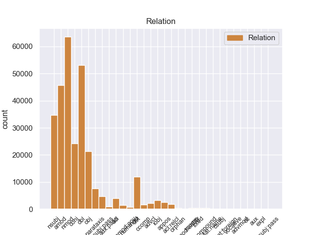
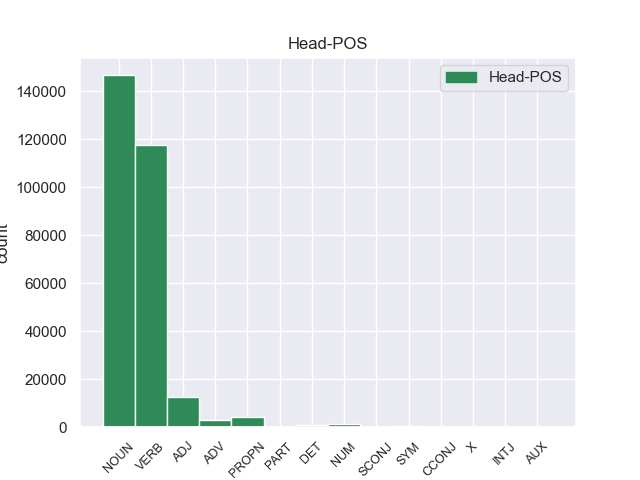
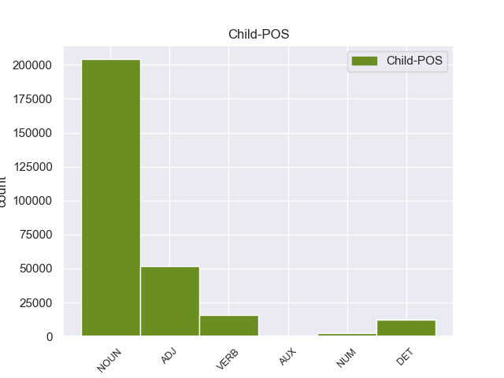

Distribution of features within this leaf



Morphosyntax Rules sorted by frequency.
- When the dependent token is the nominal modifier(nmod) of the head token, and the head token is NOUN and the dependent token is NOUN, the Gender needs to be Masc.
1 Недаром _ _ _ _ 0 _ _ _
2 же _ _ _ _ 0 _ _ _
3 у _ _ _ _ 0 _ _ _
4 очкастого _ _ _ _ 0 _ _ _
5 мальчика мальчик NOUN _ Animacy=Anim|Case=Gen|Gender=Masc|Number=Sing 10 nmod 10:nmod _
6 руки _ _ _ _ 0 _ _ _
7 были _ _ _ _ 0 _ _ _
8 в _ _ _ _ 0 _ _ _
9 кровяных _ _ _ _ 0 _ _ _
10 ссадинах ссадина NOUN _ Animacy=Inan|Case=Loc|Gender=Fem|Number=Plur 0 _ _ _
11 . _ _ _ _ 0 _ _ _
1 Но _ _ _ _ 0 _ _ _
2 кто-то _ _ _ _ 0 _ _ _
3 идет _ _ _ _ 0 _ _ _
4 мне _ _ _ _ 0 _ _ _
5 навстречу _ _ _ _ 0 _ _ _
6 и _ _ _ _ 0 _ _ _
7 , _ _ _ _ 0 _ _ _
8 может _ _ _ _ 0 _ _ _
9 быть _ _ _ _ 0 _ _ _
10 , _ _ _ _ 0 _ _ _
11 прошел пройти VERB _ Aspect=Perf|Gender=Masc|Mood=Ind|Number=Sing|Tense=Past|VerbForm=Fin|Voice=Act 0 _ _ _
12 уже _ _ _ _ 0 _ _ _
13 пол _ _ _ _ 0 _ _ _
14 пути путь NOUN _ Animacy=Inan|Case=Gen|Gender=Masc|Number=Sing 11 obl 11:obl SpaceAfter=No
15 … _ _ _ _ 0 _ _ _
1 А _ _ _ _ 0 _ _ _
2 может _ _ _ _ 0 _ _ _
3 быть _ _ _ _ 0 _ _ _
4 , _ _ _ _ 0 _ _ _
5 кто-то _ _ _ _ 0 _ _ _
6 - _ _ _ _ 0 _ _ _
7 на _ _ _ _ 0 _ _ _
8 другом другой ADJ _ Case=Loc|Degree=Pos|Gender=Masc|Number=Sing 9 amod 9:amod _
9 конце конец NOUN _ Animacy=Inan|Case=Loc|Gender=Masc|Number=Sing 0 _ _ _
10 тоже _ _ _ _ 0 _ _ _
11 пробует _ _ _ _ 0 _ _ _
12 ее _ _ _ _ 0 _ _ _
13 расчистить _ _ _ _ 0 _ _ _
14 ? _ _ _ _ 0 _ _ _
1 Его _ _ _ _ 0 _ _ _
2 не _ _ _ _ 0 _ _ _
3 защищенные _ _ _ _ 0 _ _ _
4 очками _ _ _ _ 0 _ _ _
5 глаза глаз NOUN _ Animacy=Inan|Case=Nom|Gender=Masc|Number=Plur 6 nsubj 6:nsubj _
6 оказались оказаться VERB _ Aspect=Perf|Mood=Ind|Number=Plur|Tense=Past|VerbForm=Fin|Voice=Mid 0 _ _ _
7 в _ _ _ _ 0 _ _ _
8 еле _ _ _ _ 0 _ _ _
9 приметном _ _ _ _ 0 _ _ _
10 красном _ _ _ _ 0 _ _ _
11 обводе _ _ _ _ 0 _ _ _
12 , _ _ _ _ 0 _ _ _
13 будто _ _ _ _ 0 _ _ _
14 кто-то _ _ _ _ 0 _ _ _
15 - _ _ _ _ 0 _ _ _
16 провел _ _ _ _ 0 _ _ _
17 по _ _ _ _ 0 _ _ _
18 векам _ _ _ _ 0 _ _ _
19 тончайшей _ _ _ _ 0 _ _ _
20 кисточкой _ _ _ _ 0 _ _ _
21 . _ _ _ _ 0 _ _ _
1 Он _ _ _ _ 0 _ _ _
2 задумался _ _ _ _ 0 _ _ _
3 , _ _ _ _ 0 _ _ _
4 чуть _ _ _ _ 0 _ _ _
5 перекосив _ _ _ _ 0 _ _ _
6 худенькое _ _ _ _ 0 _ _ _
7 лицо _ _ _ _ 0 _ _ _
8 , _ _ _ _ 0 _ _ _
9 и _ _ _ _ 0 _ _ _
10 даже _ _ _ _ 0 _ _ _
11 перестал _ _ _ _ 0 _ _ _
12 выдергивать выдергивать VERB _ Aspect=Imp|VerbForm=Inf|Voice=Act 0 _ _ _
13 цветы цветы NOUN _ Animacy=Inan|Case=Acc|Gender=Masc|Number=Plur 12 obj 12:obj _
14 и _ _ _ _ 0 _ _ _
15 травинки _ _ _ _ 0 _ _ _
16 , _ _ _ _ 0 _ _ _
17 в _ _ _ _ 0 _ _ _
18 его _ _ _ _ 0 _ _ _
19 коричневых _ _ _ _ 0 _ _ _
20 глазах _ _ _ _ 0 _ _ _
21 появилась _ _ _ _ 0 _ _ _
22 боль _ _ _ _ 0 _ _ _
23 - _ _ _ _ 0 _ _ _
24 так _ _ _ _ 0 _ _ _
25 трудно _ _ _ _ 0 _ _ _
26 вложить _ _ _ _ 0 _ _ _
27 в _ _ _ _ 0 _ _ _
28 чужую _ _ _ _ 0 _ _ _
29 душу _ _ _ _ 0 _ _ _
30 самые _ _ _ _ 0 _ _ _
31 простые _ _ _ _ 0 _ _ _
32 и _ _ _ _ 0 _ _ _
33 очевидные _ _ _ _ 0 _ _ _
34 истины _ _ _ _ 0 _ _ _
35 ! _ _ _ _ 0 _ _ _
1 Я _ _ _ _ 0 _ _ _
2 пожал _ _ _ _ 0 _ _ _
3 плечами _ _ _ _ 0 _ _ _
4 и _ _ _ _ 0 _ _ _
5 , _ _ _ _ 0 _ _ _
6 нагнувшись _ _ _ _ 0 _ _ _
7 , _ _ _ _ 0 _ _ _
8 выдрал _ _ _ _ 0 _ _ _
9 куст _ _ _ _ 0 _ _ _
10 чертополоха _ _ _ _ 0 _ _ _
11 с _ _ _ _ 0 _ _ _
12 темно-красными _ _ _ _ 0 _ _ _
13 цветами цветы NOUN _ Animacy=Inan|Case=Ins|Gender=Masc|Number=Plur 0 _ _ _
14 и _ _ _ _ 0 _ _ _
15 цепкими _ _ _ _ 0 _ _ _
16 шипиками шипик NOUN _ Animacy=Inan|Case=Ins|Gender=Masc|Number=Plur 13 conj 13:conj SpaceAfter=No
17 . _ _ _ _ 0 _ _ _
1 - _ _ _ _ 0 _ _ _
2 Ты _ _ _ _ 0 _ _ _
3 же _ _ _ _ 0 _ _ _
4 видишь _ _ _ _ 0 _ _ _
5 , _ _ _ _ 0 _ _ _
6 дорога _ _ _ _ 0 _ _ _
7 заросла _ _ _ _ 0 _ _ _
8 , _ _ _ _ 0 _ _ _
9 - _ _ _ _ 0 _ _ _
10 он _ _ _ _ 0 _ _ _
11 говорил _ _ _ _ 0 _ _ _
12 , _ _ _ _ 0 _ _ _
13 стоя _ _ _ _ 0 _ _ _
14 на _ _ _ _ 0 _ _ _
15 коленях _ _ _ _ 0 _ _ _
16 , _ _ _ _ 0 _ _ _
17 и _ _ _ _ 0 _ _ _
18 щепкой _ _ _ _ 0 _ _ _
19 выковыривал _ _ _ _ 0 _ _ _
20 из _ _ _ _ 0 _ _ _
21 земли _ _ _ _ 0 _ _ _
22 какой-то какой-то DET _ Case=Acc|Gender=Masc|Number=Sing 23 det 23:det _
23 корень корень NOUN _ Animacy=Inan|Case=Acc|Gender=Masc|Number=Sing 0 _ _ _
24 . _ _ _ _ 0 _ _ _
1 Но _ _ _ _ 0 _ _ _
2 кто-то _ _ _ _ 0 _ _ _
3 идет идти VERB _ Aspect=Imp|Mood=Ind|Number=Sing|Person=3|Tense=Pres|VerbForm=Fin|Voice=Act 0 _ _ _
4 мне _ _ _ _ 0 _ _ _
5 навстречу _ _ _ _ 0 _ _ _
6 и _ _ _ _ 0 _ _ _
7 , _ _ _ _ 0 _ _ _
8 может _ _ _ _ 0 _ _ _
9 быть _ _ _ _ 0 _ _ _
10 , _ _ _ _ 0 _ _ _
11 прошел пройти VERB _ Aspect=Perf|Gender=Masc|Mood=Ind|Number=Sing|Tense=Past|VerbForm=Fin|Voice=Act 3 conj 3:conj _
12 уже _ _ _ _ 0 _ _ _
13 пол _ _ _ _ 0 _ _ _
14 пути _ _ _ _ 0 _ _ _
15 … _ _ _ _ 0 _ _ _
1 Весь _ _ _ _ 0 _ _ _
2 лес лес NOUN _ Animacy=Inan|Case=Nom|Gender=Masc|Number=Sing 4 nsubj:pass 4:nsubj:pass _
3 был _ _ _ _ 0 _ _ _
4 населен населить VERB _ Aspect=Perf|Gender=Masc|Number=Sing|Tense=Past|Variant=Short|VerbForm=Part|Voice=Pass 0 _ _ _
5 голосами _ _ _ _ 0 _ _ _
6 прошлого _ _ _ _ 0 _ _ _
7 , _ _ _ _ 0 _ _ _
8 и _ _ _ _ 0 _ _ _
9 я _ _ _ _ 0 _ _ _
10 впервые _ _ _ _ 0 _ _ _
11 с _ _ _ _ 0 _ _ _
12 ошеломляющей _ _ _ _ 0 _ _ _
13 силой _ _ _ _ 0 _ _ _
14 ощутил _ _ _ _ 0 _ _ _
15 , _ _ _ _ 0 _ _ _
16 как _ _ _ _ 0 _ _ _
17 много _ _ _ _ 0 _ _ _
18 пробыл _ _ _ _ 0 _ _ _
19 на _ _ _ _ 0 _ _ _
20 этом _ _ _ _ 0 _ _ _
21 свете _ _ _ _ 0 _ _ _
22 и _ _ _ _ 0 _ _ _
23 что _ _ _ _ 0 _ _ _
24 прожитое _ _ _ _ 0 _ _ _
25 - _ _ _ _ 0 _ _ _
26 это _ _ _ _ 0 _ _ _
27 не _ _ _ _ 0 _ _ _
28 разбег _ _ _ _ 0 _ _ _
29 для _ _ _ _ 0 _ _ _
30 взлета _ _ _ _ 0 _ _ _
31 в _ _ _ _ 0 _ _ _
32 какую-то _ _ _ _ 0 _ _ _
33 будущую _ _ _ _ 0 _ _ _
34 , _ _ _ _ 0 _ _ _
35 настоящую _ _ _ _ 0 _ _ _
36 жизнь _ _ _ _ 0 _ _ _
37 , _ _ _ _ 0 _ _ _
38 что _ _ _ _ 0 _ _ _
39 это _ _ _ _ 0 _ _ _
40 уже _ _ _ _ 0 _ _ _
41 жизнь _ _ _ _ 0 _ _ _
42 , _ _ _ _ 0 _ _ _
43 в _ _ _ _ 0 _ _ _
44 которой _ _ _ _ 0 _ _ _
45 все _ _ _ _ 0 _ _ _
46 связано _ _ _ _ 0 _ _ _
47 : _ _ _ _ 0 _ _ _
48 далекое _ _ _ _ 0 _ _ _
49 прошлое _ _ _ _ 0 _ _ _
49.1 _ _ _ _ _ 0 _ _ _
50 с _ _ _ _ 0 _ _ _
51 настоящим _ _ _ _ 0 _ _ _
52 , _ _ _ _ 0 _ _ _
53 а _ _ _ _ 0 _ _ _
54 если _ _ _ _ 0 _ _ _
55 мне _ _ _ _ 0 _ _ _
56 суждено _ _ _ _ 0 _ _ _
57 будущее _ _ _ _ 0 _ _ _
58 , _ _ _ _ 0 _ _ _
59 то _ _ _ _ 0 _ _ _
60 и _ _ _ _ 0 _ _ _
61 оно _ _ _ _ 0 _ _ _
62 окажется _ _ _ _ 0 _ _ _
63 нерасторжимо _ _ _ _ 0 _ _ _
64 связанным _ _ _ _ 0 _ _ _
65 с _ _ _ _ 0 _ _ _
66 пережитым _ _ _ _ 0 _ _ _
67 ; _ _ _ _ 0 _ _ _
1 Загадочен загадочный ADJ _ Degree=Pos|Gender=Masc|Number=Sing|Variant=Short 0 _ _ _
2 был _ _ _ _ 0 _ _ _
3 этот _ _ _ _ 0 _ _ _
4 светлый _ _ _ _ 0 _ _ _
5 , _ _ _ _ 0 _ _ _
6 чистый _ _ _ _ 0 _ _ _
7 березовый _ _ _ _ 0 _ _ _
8 и _ _ _ _ 0 _ _ _
9 осиновый _ _ _ _ 0 _ _ _
10 лесок лесок NOUN _ Animacy=Inan|Case=Nom|Gender=Masc|Number=Sing 1 nsubj 1:nsubj SpaceAfter=No
11 , _ _ _ _ 0 _ _ _
12 выкроивший _ _ _ _ 0 _ _ _
13 себе _ _ _ _ 0 _ _ _
14 немалую _ _ _ _ 0 _ _ _
15 площадь _ _ _ _ 0 _ _ _
16 посреди _ _ _ _ 0 _ _ _
17 ольшаника _ _ _ _ 0 _ _ _
18 . _ _ _ _ 0 _ _ _
1 Он _ _ _ _ 0 _ _ _
2 осторожно _ _ _ _ 0 _ _ _
3 , _ _ _ _ 0 _ _ _
4 за _ _ _ _ 0 _ _ _
5 дужку _ _ _ _ 0 _ _ _
6 , _ _ _ _ 0 _ _ _
7 снял _ _ _ _ 0 _ _ _
8 очки _ _ _ _ 0 _ _ _
9 , _ _ _ _ 0 _ _ _
10 ему _ _ _ _ 0 _ _ _
11 хотелось _ _ _ _ 0 _ _ _
12 получше _ _ _ _ 0 _ _ _
13 рассмотреть _ _ _ _ 0 _ _ _
14 человека человек NOUN _ Animacy=Anim|Case=Acc|Gender=Masc|Number=Sing 0 _ _ _
15 , _ _ _ _ 0 _ _ _
16 задающего задавать VERB _ Animacy=Anim|Aspect=Imp|Case=Acc|Gender=Masc|Number=Sing|Tense=Pres|VerbForm=Part|Voice=Act 14 acl 14:acl _
17 такие _ _ _ _ 0 _ _ _
18 несуразные _ _ _ _ 0 _ _ _
19 вопросы _ _ _ _ 0 _ _ _
20 , _ _ _ _ 0 _ _ _
21 а _ _ _ _ 0 _ _ _
22 припылившиеся _ _ _ _ 0 _ _ _
23 стекла _ _ _ _ 0 _ _ _
24 только _ _ _ _ 0 _ _ _
25 мешали _ _ _ _ 0 _ _ _
26 . _ _ _ _ 0 _ _ _
1 Низина _ _ _ _ 0 _ _ _
2 сменилась _ _ _ _ 0 _ _ _
3 возвышенностью _ _ _ _ 0 _ _ _
4 , _ _ _ _ 0 _ _ _
5 почва _ _ _ _ 0 _ _ _
6 под _ _ _ _ 0 _ _ _
7 ногами _ _ _ _ 0 _ _ _
8 окрепла _ _ _ _ 0 _ _ _
9 , _ _ _ _ 0 _ _ _
10 и _ _ _ _ 0 _ _ _
11 болотные _ _ _ _ 0 _ _ _
12 травы _ _ _ _ 0 _ _ _
13 уступили уступить VERB _ Aspect=Perf|Mood=Ind|Number=Plur|Tense=Past|VerbForm=Fin|Voice=Act 0 _ _ _
14 место _ _ _ _ 0 _ _ _
15 папоротникам папоротник NOUN _ Animacy=Inan|Case=Dat|Gender=Masc|Number=Plur 13 iobj 13:iobj _
16 и _ _ _ _ 0 _ _ _
17 хвощам _ _ _ _ 0 _ _ _
18 . _ _ _ _ 0 _ _ _
1 Это _ _ _ _ 0 _ _ _
2 был _ _ _ _ 0 _ _ _
3 гриб гриб NOUN _ Animacy=Inan|Case=Nom|Gender=Masc|Number=Sing 0 _ _ _
4 - _ _ _ _ 0 _ _ _
5 генерал _ _ _ _ 0 _ _ _
6 , _ _ _ _ 0 _ _ _
7 настоящий _ _ _ _ 0 _ _ _
8 предводитель предводитель NOUN _ Animacy=Anim|Case=Nom|Gender=Masc|Number=Sing 3 appos 3:appos _
9 грибной _ _ _ _ 0 _ _ _
10 рати _ _ _ _ 0 _ _ _
11 , _ _ _ _ 0 _ _ _
12 он _ _ _ _ 0 _ _ _
13 не _ _ _ _ 0 _ _ _
14 мог _ _ _ _ 0 _ _ _
15 расти _ _ _ _ 0 _ _ _
16 в _ _ _ _ 0 _ _ _
17 одиночку _ _ _ _ 0 _ _ _
18 , _ _ _ _ 0 _ _ _
19 и _ _ _ _ 0 _ _ _
20 надо _ _ _ _ 0 _ _ _
21 было _ _ _ _ 0 _ _ _
22 обрыскать _ _ _ _ 0 _ _ _
23 хвойное _ _ _ _ 0 _ _ _
24 одеяло _ _ _ _ 0 _ _ _
25 у _ _ _ _ 0 _ _ _
26 подножия _ _ _ _ 0 _ _ _
27 ближайших _ _ _ _ 0 _ _ _
28 елей _ _ _ _ 0 _ _ _
29 , _ _ _ _ 0 _ _ _
30 но _ _ _ _ 0 _ _ _
31 я _ _ _ _ 0 _ _ _
32 как-то _ _ _ _ 0 _ _ _
33 ленился _ _ _ _ 0 _ _ _
34 , _ _ _ _ 0 _ _ _
35 и _ _ _ _ 0 _ _ _
36 тут _ _ _ _ 0 _ _ _
37 совсем _ _ _ _ 0 _ _ _
38 отчетливо _ _ _ _ 0 _ _ _
39 , _ _ _ _ 0 _ _ _
40 слышимый _ _ _ _ 0 _ _ _
41 не _ _ _ _ 0 _ _ _
42 внутренним _ _ _ _ 0 _ _ _
43 , _ _ _ _ 0 _ _ _
44 а _ _ _ _ 0 _ _ _
45 внешним _ _ _ _ 0 _ _ _
46 слухом _ _ _ _ 0 _ _ _
47 , _ _ _ _ 0 _ _ _
48 голос _ _ _ _ 0 _ _ _
49 , _ _ _ _ 0 _ _ _
50 исполненный _ _ _ _ 0 _ _ _
51 той _ _ _ _ 0 _ _ _
52 чистой _ _ _ _ 0 _ _ _
53 нежности _ _ _ _ 0 _ _ _
54 , _ _ _ _ 0 _ _ _
55 что _ _ _ _ 0 _ _ _
56 берегла _ _ _ _ 0 _ _ _
57 меня _ _ _ _ 0 _ _ _
58 в _ _ _ _ 0 _ _ _
59 детстве _ _ _ _ 0 _ _ _
60 , _ _ _ _ 0 _ _ _
61 произнес _ _ _ _ 0 _ _ _
62 : _ _ _ _ 0 _ _ _
63 - _ _ _ _ 0 _ _ _
64 Ищи _ _ _ _ 0 _ _ _
65 , _ _ _ _ 0 _ _ _
66 мальчик _ _ _ _ 0 _ _ _
67 , _ _ _ _ 0 _ _ _
68 ты _ _ _ _ 0 _ _ _
69 нырок _ _ _ _ 0 _ _ _
70 ! _ _ _ _ 0 _ _ _
71 . _ _ _ _ 0 _ _ _
72 . _ _ _ _ 0 _ _ _
1 Маленькие _ _ _ _ 0 _ _ _
2 подсвинки _ _ _ _ 0 _ _ _
3 с _ _ _ _ 0 _ _ _
4 белой _ _ _ _ 0 _ _ _
5 подкладкой _ _ _ _ 0 _ _ _
6 аккуратных _ _ _ _ 0 _ _ _
7 круглых _ _ _ _ 0 _ _ _
8 шляпок _ _ _ _ 0 _ _ _
9 соседствовали _ _ _ _ 0 _ _ _
10 с _ _ _ _ 0 _ _ _
11 гигантами _ _ _ _ 0 _ _ _
12 , _ _ _ _ 0 _ _ _
13 похожими похожий ADJ _ Case=Ins|Degree=Pos|Number=Plur 0 _ _ _
14 на _ _ _ _ 0 _ _ _
15 вывернутые _ _ _ _ 0 _ _ _
16 ветром _ _ _ _ 0 _ _ _
17 зонтики зонтик NOUN _ Animacy=Inan|Case=Acc|Gender=Masc|Number=Plur 13 obl 13:obl SpaceAfter=No
18 , _ _ _ _ 0 _ _ _
19 каждая _ _ _ _ 0 _ _ _
20 воронка _ _ _ _ 0 _ _ _
21 хранила _ _ _ _ 0 _ _ _
22 каплю _ _ _ _ 0 _ _ _
23 росной _ _ _ _ 0 _ _ _
24 влаги _ _ _ _ 0 _ _ _
25 . _ _ _ _ 0 _ _ _
1 - _ _ _ _ 0 _ _ _
2 Ты _ _ _ _ 0 _ _ _
3 дурак дурак NOUN _ Animacy=Anim|Case=Nom|Gender=Masc|Number=Sing 0 _ _ _
4 , _ _ _ _ 0 _ _ _
5 папа папа NOUN _ Animacy=Anim|Case=Nom|Gender=Masc|Number=Sing 3 parataxis 3:parataxis SpaceAfter=No
6 , _ _ _ _ 0 _ _ _
7 - _ _ _ _ 0 _ _ _
8 повторил _ _ _ _ 0 _ _ _
9 младший _ _ _ _ 0 _ _ _
10 и _ _ _ _ 0 _ _ _
11 заплакал _ _ _ _ 0 _ _ _
12 . _ _ _ _ 0 _ _ _
1 Впервые _ _ _ _ 0 _ _ _
2 поверил _ _ _ _ 0 _ _ _
3 он _ _ _ _ 0 _ _ _
4 сейчас _ _ _ _ 0 _ _ _
5 , _ _ _ _ 0 _ _ _
6 что _ _ _ _ 0 _ _ _
7 близнецы близнец NOUN _ Animacy=Anim|Case=Nom|Gender=Masc|Number=Plur 9 nsubj 9:nsubj _
8 здоровые _ _ _ _ 0 _ _ _
9 ребята ребята NOUN _ Animacy=Anim|Case=Nom|Gender=Neut|Number=Plur 0 _ _ _
10 , _ _ _ _ 0 _ _ _
11 они _ _ _ _ 0 _ _ _
12 без _ _ _ _ 0 _ _ _
13 труда _ _ _ _ 0 _ _ _
14 осилят _ _ _ _ 0 _ _ _
15 малую _ _ _ _ 0 _ _ _
16 непрочность _ _ _ _ 0 _ _ _
17 в _ _ _ _ 0 _ _ _
18 грудной _ _ _ _ 0 _ _ _
19 клетке _ _ _ _ 0 _ _ _
20 и _ _ _ _ 0 _ _ _
21 вырастут _ _ _ _ 0 _ _ _
22 крепкими _ _ _ _ 0 _ _ _
23 , _ _ _ _ 0 _ _ _
24 надежными _ _ _ _ 0 _ _ _
25 и _ _ _ _ 0 _ _ _
26 добрыми _ _ _ _ 0 _ _ _
27 людьми _ _ _ _ 0 _ _ _
28 . _ _ _ _ 0 _ _ _
1 - _ _ _ _ 0 _ _ _
2 У _ _ _ _ 0 _ _ _
3 него _ _ _ _ 0 _ _ _
4 был _ _ _ _ 0 _ _ _
5 вежливый вежливый ADJ _ Case=Nom|Degree=Pos|Gender=Masc|Number=Sing 0 _ _ _
6 , _ _ _ _ 0 _ _ _
7 мягкий _ _ _ _ 0 _ _ _
8 и _ _ _ _ 0 _ _ _
9 терпеливый терпеливый ADJ _ Case=Nom|Degree=Pos|Gender=Masc|Number=Sing 5 conj 5:conj _
10 голос _ _ _ _ 0 _ _ _
11 . _ _ _ _ 0 _ _ _
1 - _ _ _ _ 0 _ _ _
2 Посуди посудить VERB _ Aspect=Perf|Mood=Imp|Number=Sing|Person=2|VerbForm=Fin|Voice=Act 0 _ _ _
3 сам сам ADJ _ Case=Nom|Degree=Pos|Gender=Masc|Number=Sing 2 obl 2:obl SpaceAfter=No
4 , _ _ _ _ 0 _ _ _
5 разве _ _ _ _ 0 _ _ _
6 стали _ _ _ _ 0 _ _ _
7 бы _ _ _ _ 0 _ _ _
8 ее _ _ _ _ 0 _ _ _
9 строить _ _ _ _ 0 _ _ _
10 , _ _ _ _ 0 _ _ _
11 если _ _ _ _ 0 _ _ _
12 б _ _ _ _ 0 _ _ _
13 она _ _ _ _ 0 _ _ _
14 никуда _ _ _ _ 0 _ _ _
15 не _ _ _ _ 0 _ _ _
16 вела _ _ _ _ 0 _ _ _
17 ? _ _ _ _ 0 _ _ _
1 - _ _ _ _ 0 _ _ _
2 Все _ _ _ _ 0 _ _ _
3 дороги _ _ _ _ 0 _ _ _
4 куда-нибудь _ _ _ _ 0 _ _ _
5 ведут вести VERB _ Aspect=Imp|Mood=Ind|Number=Plur|Person=3|Tense=Pres|VerbForm=Fin|Voice=Act 0 _ _ _
6 , _ _ _ _ 0 _ _ _
7 - _ _ _ _ 0 _ _ _
8 сказал сказать VERB _ Aspect=Perf|Gender=Masc|Mood=Ind|Number=Sing|Tense=Past|VerbForm=Fin|Voice=Act 5 parataxis 5:parataxis _
9 он _ _ _ _ 0 _ _ _
10 с _ _ _ _ 0 _ _ _
11 кроткой _ _ _ _ 0 _ _ _
12 убежденностью _ _ _ _ 0 _ _ _
13 и _ _ _ _ 0 _ _ _
14 , _ _ _ _ 0 _ _ _
15 водворив _ _ _ _ 0 _ _ _
16 очки _ _ _ _ 0 _ _ _
17 назад _ _ _ _ 0 _ _ _
18 , _ _ _ _ 0 _ _ _
19 принялся _ _ _ _ 0 _ _ _
20 за _ _ _ _ 0 _ _ _
21 работу _ _ _ _ 0 _ _ _
22 . _ _ _ _ 0 _ _ _
1 Влажная _ _ _ _ 0 _ _ _
2 кора _ _ _ _ 0 _ _ _
3 берез _ _ _ _ 0 _ _ _
4 почему-то _ _ _ _ 0 _ _ _
5 припахивала _ _ _ _ 0 _ _ _
6 свежестиранным _ _ _ _ 0 _ _ _
7 бельем _ _ _ _ 0 _ _ _
8 , _ _ _ _ 0 _ _ _
9 ни _ _ _ _ 0 _ _ _
10 один один NUM _ Case=Nom|Gender=Masc 11 nummod:gov 11:nummod:gov _
11 лист лист NOUN _ Animacy=Inan|Case=Nom|Gender=Masc|Number=Sing 0 _ _ _
12 не _ _ _ _ 0 _ _ _
13 кружился _ _ _ _ 0 _ _ _
14 в _ _ _ _ 0 _ _ _
15 тихом _ _ _ _ 0 _ _ _
16 воздухе _ _ _ _ 0 _ _ _
17 , _ _ _ _ 0 _ _ _
18 и _ _ _ _ 0 _ _ _
19 все _ _ _ _ 0 _ _ _
20 же _ _ _ _ 0 _ _ _
21 роща _ _ _ _ 0 _ _ _
22 была _ _ _ _ 0 _ _ _
23 толсто _ _ _ _ 0 _ _ _
24 устлана _ _ _ _ 0 _ _ _
25 желтой _ _ _ _ 0 _ _ _
26 листвой _ _ _ _ 0 _ _ _
27 . _ _ _ _ 0 _ _ _
1 Днем день NOUN _ Animacy=Inan|Case=Ins|Gender=Masc|Number=Sing 5 obl 5:obl _
2 их _ _ _ _ 0 _ _ _
3 не _ _ _ _ 0 _ _ _
4 было _ _ _ _ 0 _ _ _
5 видно видно ADV _ Degree=Pos 0 _ _ _
6 , _ _ _ _ 0 _ _ _
7 они _ _ _ _ 0 _ _ _
8 появлялись _ _ _ _ 0 _ _ _
9 после _ _ _ _ 0 _ _ _
10 четырех _ _ _ _ 0 _ _ _
11 , _ _ _ _ 0 _ _ _
12 когда _ _ _ _ 0 _ _ _
13 смягчался _ _ _ _ 0 _ _ _
14 горячий _ _ _ _ 0 _ _ _
15 свет _ _ _ _ 0 _ _ _
16 дня _ _ _ _ 0 _ _ _
17 , _ _ _ _ 0 _ _ _
18 и _ _ _ _ 0 _ _ _
19 тень _ _ _ _ 0 _ _ _
20 деревьев _ _ _ _ 0 _ _ _
21 , _ _ _ _ 0 _ _ _
22 густо _ _ _ _ 0 _ _ _
23 посаженных _ _ _ _ 0 _ _ _
24 вдоль _ _ _ _ 0 _ _ _
25 тротуара _ _ _ _ 0 _ _ _
26 , _ _ _ _ 0 _ _ _
27 становилась _ _ _ _ 0 _ _ _
28 четкой _ _ _ _ 0 _ _ _
29 и _ _ _ _ 0 _ _ _
30 прохладной _ _ _ _ 0 _ _ _
31 . _ _ _ _ 0 _ _ _
1 Сперва _ _ _ _ 0 _ _ _
2 я _ _ _ _ 0 _ _ _
3 увидел _ _ _ _ 0 _ _ _
4 дымок _ _ _ _ 0 _ _ _
5 , _ _ _ _ 0 _ _ _
6 ровной _ _ _ _ 0 _ _ _
7 голубой _ _ _ _ 0 _ _ _
8 струйкой _ _ _ _ 0 _ _ _
9 сочившийся _ _ _ _ 0 _ _ _
10 из _ _ _ _ 0 _ _ _
11 орешника _ _ _ _ 0 _ _ _
12 , _ _ _ _ 0 _ _ _
13 и _ _ _ _ 0 _ _ _
14 у _ _ _ _ 0 _ _ _
15 меня _ _ _ _ 0 _ _ _
16 мелькнула _ _ _ _ 0 _ _ _
17 мысль _ _ _ _ 0 _ _ _
18 о _ _ _ _ 0 _ _ _
19 лесном _ _ _ _ 0 _ _ _
20 пожаре _ _ _ _ 0 _ _ _
21 , _ _ _ _ 0 _ _ _
22 но _ _ _ _ 0 _ _ _
23 потом _ _ _ _ 0 _ _ _
24 я _ _ _ _ 0 _ _ _
25 различил _ _ _ _ 0 _ _ _
26 съедобный _ _ _ _ 0 _ _ _
27 запах _ _ _ _ 0 _ _ _
28 этого _ _ _ _ 0 _ _ _
29 дымка _ _ _ _ 0 _ _ _
30 и _ _ _ _ 0 _ _ _
31 вспомнил _ _ _ _ 0 _ _ _
32 Учу _ _ _ _ 0 _ _ _
33 и _ _ _ _ 0 _ _ _
34 старого _ _ _ _ 0 _ _ _
35 пастуха _ _ _ _ 0 _ _ _
36 , _ _ _ _ 0 _ _ _
37 варившего _ _ _ _ 0 _ _ _
38 кулеш _ _ _ _ 0 _ _ _
39 в _ _ _ _ 0 _ _ _
40 прокопченном прокоптить VERB _ Aspect=Perf|Case=Loc|Gender=Masc|Number=Sing|Tense=Past|VerbForm=Part|Voice=Pass 42 amod 42:amod _
41 солдатском _ _ _ _ 0 _ _ _
42 котелке котелок NOUN _ Animacy=Inan|Case=Loc|Gender=Masc|Number=Sing 0 _ _ _
43 . _ _ _ _ 0 _ _ _
1 Об _ _ _ _ 0 _ _ _
2 этом _ _ _ _ 0 _ _ _
3 и _ _ _ _ 0 _ _ _
4 думал _ _ _ _ 0 _ _ _
5 , _ _ _ _ 0 _ _ _
6 засыпая _ _ _ _ 0 _ _ _
7 , _ _ _ _ 0 _ _ _
8 маленький маленький ADJ _ Case=Nom|Degree=Pos|Gender=Masc|Number=Sing 9 amod 9:amod _
9 Павлов Павлов PROPN _ Animacy=Anim|Case=Nom|Gender=Masc|Number=Sing 0 _ _ _
10 , _ _ _ _ 0 _ _ _
11 и _ _ _ _ 0 _ _ _
12 сны _ _ _ _ 0 _ _ _
13 были _ _ _ _ 0 _ _ _
14 у _ _ _ _ 0 _ _ _
15 него _ _ _ _ 0 _ _ _
16 деловые _ _ _ _ 0 _ _ _
17 , _ _ _ _ 0 _ _ _
18 практические _ _ _ _ 0 _ _ _
19 и _ _ _ _ 0 _ _ _
20 потому _ _ _ _ 0 _ _ _
21 не _ _ _ _ 0 _ _ _
22 доставляли _ _ _ _ 0 _ _ _
23 настоящего _ _ _ _ 0 _ _ _
24 отдыха _ _ _ _ 0 _ _ _
25 . _ _ _ _ 0 _ _ _
1 Дети _ _ _ _ 0 _ _ _
2 любят _ _ _ _ 0 _ _ _
3 играть _ _ _ _ 0 _ _ _
4 в _ _ _ _ 0 _ _ _
5 куплю _ _ _ _ 0 _ _ _
6 - _ _ _ _ 0 _ _ _
7 продажу _ _ _ _ 0 _ _ _
8 , _ _ _ _ 0 _ _ _
9 инстинкт _ _ _ _ 0 _ _ _
10 торговли _ _ _ _ 0 _ _ _
11 , _ _ _ _ 0 _ _ _
12 мены _ _ _ _ 0 _ _ _
13 , _ _ _ _ 0 _ _ _
14 наверное _ _ _ _ 0 _ _ _
15 , _ _ _ _ 0 _ _ _
16 один один NUM _ Case=Nom|Gender=Masc 0 _ _ _
17 из _ _ _ _ 0 _ _ _
18 древнейших _ _ _ _ 0 _ _ _
19 человеческих _ _ _ _ 0 _ _ _
20 инстинктов инстинкт NOUN _ Animacy=Inan|Case=Gen|Gender=Masc|Number=Plur 16 nmod 16:nmod SpaceAfter=No
21 . _ _ _ _ 0 _ _ _
1 Я _ _ _ _ 0 _ _ _
2 шел _ _ _ _ 0 _ _ _
3 дальше _ _ _ _ 0 _ _ _
4 через _ _ _ _ 0 _ _ _
5 поле _ _ _ _ 0 _ _ _
6 и _ _ _ _ 0 _ _ _
7 прекрасный _ _ _ _ 0 _ _ _
8 , _ _ _ _ 0 _ _ _
9 медово _ _ _ _ 0 _ _ _
10 благоухающий _ _ _ _ 0 _ _ _
11 , _ _ _ _ 0 _ _ _
12 сыроватый _ _ _ _ 0 _ _ _
13 овраг _ _ _ _ 0 _ _ _
14 на _ _ _ _ 0 _ _ _
15 взгорок взгорок NOUN _ Animacy=Inan|Case=Acc|Gender=Masc|Number=Sing 0 _ _ _
16 , _ _ _ _ 0 _ _ _
17 по _ _ _ _ 0 _ _ _
18 которому _ _ _ _ 0 _ _ _
19 простирался простираться VERB _ Aspect=Imp|Gender=Masc|Mood=Ind|Number=Sing|Tense=Past|VerbForm=Fin|Voice=Mid 15 acl:relcl 15:acl:relcl _
20 на _ _ _ _ 0 _ _ _
21 километры _ _ _ _ 0 _ _ _
22 великолепный _ _ _ _ 0 _ _ _
23 смешанный _ _ _ _ 0 _ _ _
24 лес _ _ _ _ 0 _ _ _
25 с _ _ _ _ 0 _ _ _
26 густым _ _ _ _ 0 _ _ _
27 , _ _ _ _ 0 _ _ _
28 щедрым _ _ _ _ 0 _ _ _
29 подлеском _ _ _ _ 0 _ _ _
30 . _ _ _ _ 0 _ _ _
1 Видимо _ _ _ _ 0 _ _ _
2 , _ _ _ _ 0 _ _ _
3 это _ _ _ _ 0 _ _ _
4 он _ _ _ _ 0 _ _ _
5 и _ _ _ _ 0 _ _ _
6 называл называть VERB _ Aspect=Imp|Gender=Masc|Mood=Ind|Number=Sing|Tense=Past|VerbForm=Fin|Voice=Act 0 _ _ _
7 так _ _ _ _ 0 _ _ _
8 звучно _ _ _ _ 0 _ _ _
9 : _ _ _ _ 0 _ _ _
10 " _ _ _ _ 0 _ _ _
11 конъюнктивит конъюнктивит NOUN _ Animacy=Inan|Case=Nom|Gender=Masc|Number=Sing 6 parataxis 6:parataxis SpaceAfter=No
12 " _ _ _ _ 0 _ _ _
13 . _ _ _ _ 0 _ _ _
1 Его _ _ _ _ 0 _ _ _
2 не _ _ _ _ 0 _ _ _
3 защищенные _ _ _ _ 0 _ _ _
4 очками _ _ _ _ 0 _ _ _
5 глаза _ _ _ _ 0 _ _ _
6 оказались оказаться VERB _ Aspect=Perf|Mood=Ind|Number=Plur|Tense=Past|VerbForm=Fin|Voice=Mid 0 _ _ _
7 в _ _ _ _ 0 _ _ _
8 еле _ _ _ _ 0 _ _ _
9 приметном _ _ _ _ 0 _ _ _
10 красном _ _ _ _ 0 _ _ _
11 обводе _ _ _ _ 0 _ _ _
12 , _ _ _ _ 0 _ _ _
13 будто _ _ _ _ 0 _ _ _
14 кто-то _ _ _ _ 0 _ _ _
15 - _ _ _ _ 0 _ _ _
16 провел провести VERB _ Aspect=Perf|Gender=Masc|Mood=Ind|Number=Sing|Tense=Past|VerbForm=Fin|Voice=Act 6 advcl 6:advcl _
17 по _ _ _ _ 0 _ _ _
18 векам _ _ _ _ 0 _ _ _
19 тончайшей _ _ _ _ 0 _ _ _
20 кисточкой _ _ _ _ 0 _ _ _
21 . _ _ _ _ 0 _ _ _
1 Весь _ _ _ _ 0 _ _ _
2 лес _ _ _ _ 0 _ _ _
3 был быть AUX _ Aspect=Imp|Gender=Masc|Mood=Ind|Number=Sing|Tense=Past|VerbForm=Fin|Voice=Act 4 aux:pass 4:aux:pass _
4 населен населить VERB _ Aspect=Perf|Gender=Masc|Number=Sing|Tense=Past|Variant=Short|VerbForm=Part|Voice=Pass 0 _ _ _
5 голосами _ _ _ _ 0 _ _ _
6 прошлого _ _ _ _ 0 _ _ _
7 , _ _ _ _ 0 _ _ _
8 и _ _ _ _ 0 _ _ _
9 я _ _ _ _ 0 _ _ _
10 впервые _ _ _ _ 0 _ _ _
11 с _ _ _ _ 0 _ _ _
12 ошеломляющей _ _ _ _ 0 _ _ _
13 силой _ _ _ _ 0 _ _ _
14 ощутил _ _ _ _ 0 _ _ _
15 , _ _ _ _ 0 _ _ _
16 как _ _ _ _ 0 _ _ _
17 много _ _ _ _ 0 _ _ _
18 пробыл _ _ _ _ 0 _ _ _
19 на _ _ _ _ 0 _ _ _
20 этом _ _ _ _ 0 _ _ _
21 свете _ _ _ _ 0 _ _ _
22 и _ _ _ _ 0 _ _ _
23 что _ _ _ _ 0 _ _ _
24 прожитое _ _ _ _ 0 _ _ _
25 - _ _ _ _ 0 _ _ _
26 это _ _ _ _ 0 _ _ _
27 не _ _ _ _ 0 _ _ _
28 разбег _ _ _ _ 0 _ _ _
29 для _ _ _ _ 0 _ _ _
30 взлета _ _ _ _ 0 _ _ _
31 в _ _ _ _ 0 _ _ _
32 какую-то _ _ _ _ 0 _ _ _
33 будущую _ _ _ _ 0 _ _ _
34 , _ _ _ _ 0 _ _ _
35 настоящую _ _ _ _ 0 _ _ _
36 жизнь _ _ _ _ 0 _ _ _
37 , _ _ _ _ 0 _ _ _
38 что _ _ _ _ 0 _ _ _
39 это _ _ _ _ 0 _ _ _
40 уже _ _ _ _ 0 _ _ _
41 жизнь _ _ _ _ 0 _ _ _
42 , _ _ _ _ 0 _ _ _
43 в _ _ _ _ 0 _ _ _
44 которой _ _ _ _ 0 _ _ _
45 все _ _ _ _ 0 _ _ _
46 связано _ _ _ _ 0 _ _ _
47 : _ _ _ _ 0 _ _ _
48 далекое _ _ _ _ 0 _ _ _
49 прошлое _ _ _ _ 0 _ _ _
49.1 _ _ _ _ _ 0 _ _ _
50 с _ _ _ _ 0 _ _ _
51 настоящим _ _ _ _ 0 _ _ _
52 , _ _ _ _ 0 _ _ _
53 а _ _ _ _ 0 _ _ _
54 если _ _ _ _ 0 _ _ _
55 мне _ _ _ _ 0 _ _ _
56 суждено _ _ _ _ 0 _ _ _
57 будущее _ _ _ _ 0 _ _ _
58 , _ _ _ _ 0 _ _ _
59 то _ _ _ _ 0 _ _ _
60 и _ _ _ _ 0 _ _ _
61 оно _ _ _ _ 0 _ _ _
62 окажется _ _ _ _ 0 _ _ _
63 нерасторжимо _ _ _ _ 0 _ _ _
64 связанным _ _ _ _ 0 _ _ _
65 с _ _ _ _ 0 _ _ _
66 пережитым _ _ _ _ 0 _ _ _
67 ; _ _ _ _ 0 _ _ _
1 Радостно _ _ _ _ 0 _ _ _
2 - _ _ _ _ 0 _ _ _
3 тревожное _ _ _ _ 0 _ _ _
4 чувство _ _ _ _ 0 _ _ _
5 владело _ _ _ _ 0 _ _ _
6 мною _ _ _ _ 0 _ _ _
7 : _ _ _ _ 0 _ _ _
8 я _ _ _ _ 0 _ _ _
9 знал знать VERB _ Aspect=Imp|Gender=Masc|Mood=Ind|Number=Sing|Tense=Past|VerbForm=Fin|Voice=Act 0 _ _ _
10 , _ _ _ _ 0 _ _ _
11 что _ _ _ _ 0 _ _ _
12 ушел уйти VERB _ Aspect=Perf|Gender=Masc|Mood=Ind|Number=Sing|Tense=Past|VerbForm=Fin|Voice=Act 9 ccomp 9:ccomp _
13 не _ _ _ _ 0 _ _ _
14 так _ _ _ _ 0 _ _ _
15 уж _ _ _ _ 0 _ _ _
16 далеко _ _ _ _ 0 _ _ _
17 и _ _ _ _ 0 _ _ _
18 все _ _ _ _ 0 _ _ _
19 же _ _ _ _ 0 _ _ _
20 куда _ _ _ _ 0 _ _ _
21 сильнее _ _ _ _ 0 _ _ _
22 оторвался _ _ _ _ 0 _ _ _
23 от _ _ _ _ 0 _ _ _
24 дома _ _ _ _ 0 _ _ _
25 , _ _ _ _ 0 _ _ _
26 чем _ _ _ _ 0 _ _ _
27 если _ _ _ _ 0 _ _ _
28 бы _ _ _ _ 0 _ _ _
29 забрел _ _ _ _ 0 _ _ _
30 в _ _ _ _ 0 _ _ _
31 последнюю _ _ _ _ 0 _ _ _
32 даль _ _ _ _ 0 _ _ _
33 по _ _ _ _ 0 _ _ _
34 знакомой _ _ _ _ 0 _ _ _
35 , _ _ _ _ 0 _ _ _
36 проторенной _ _ _ _ 0 _ _ _
37 тропке _ _ _ _ 0 _ _ _
38 . _ _ _ _ 0 _ _ _
1 Весь _ _ _ _ 0 _ _ _
2 лес _ _ _ _ 0 _ _ _
3 был _ _ _ _ 0 _ _ _
4 населен _ _ _ _ 0 _ _ _
5 голосами _ _ _ _ 0 _ _ _
6 прошлого _ _ _ _ 0 _ _ _
7 , _ _ _ _ 0 _ _ _
8 и _ _ _ _ 0 _ _ _
9 я _ _ _ _ 0 _ _ _
10 впервые _ _ _ _ 0 _ _ _
11 с _ _ _ _ 0 _ _ _
12 ошеломляющей _ _ _ _ 0 _ _ _
13 силой _ _ _ _ 0 _ _ _
14 ощутил _ _ _ _ 0 _ _ _
15 , _ _ _ _ 0 _ _ _
16 как _ _ _ _ 0 _ _ _
17 много _ _ _ _ 0 _ _ _
18 пробыл пробыть VERB _ Aspect=Perf|Gender=Masc|Mood=Ind|Number=Sing|Tense=Past|VerbForm=Fin|Voice=Act 0 _ _ _
19 на _ _ _ _ 0 _ _ _
20 этом _ _ _ _ 0 _ _ _
21 свете _ _ _ _ 0 _ _ _
22 и _ _ _ _ 0 _ _ _
23 что _ _ _ _ 0 _ _ _
24 прожитое _ _ _ _ 0 _ _ _
25 - _ _ _ _ 0 _ _ _
26 это _ _ _ _ 0 _ _ _
27 не _ _ _ _ 0 _ _ _
28 разбег разбег NOUN _ Animacy=Inan|Case=Nom|Gender=Masc|Number=Sing 18 conj 18:conj _
29 для _ _ _ _ 0 _ _ _
30 взлета _ _ _ _ 0 _ _ _
31 в _ _ _ _ 0 _ _ _
32 какую-то _ _ _ _ 0 _ _ _
33 будущую _ _ _ _ 0 _ _ _
34 , _ _ _ _ 0 _ _ _
35 настоящую _ _ _ _ 0 _ _ _
36 жизнь _ _ _ _ 0 _ _ _
37 , _ _ _ _ 0 _ _ _
38 что _ _ _ _ 0 _ _ _
39 это _ _ _ _ 0 _ _ _
40 уже _ _ _ _ 0 _ _ _
41 жизнь _ _ _ _ 0 _ _ _
42 , _ _ _ _ 0 _ _ _
43 в _ _ _ _ 0 _ _ _
44 которой _ _ _ _ 0 _ _ _
45 все _ _ _ _ 0 _ _ _
46 связано _ _ _ _ 0 _ _ _
47 : _ _ _ _ 0 _ _ _
48 далекое _ _ _ _ 0 _ _ _
49 прошлое _ _ _ _ 0 _ _ _
49.1 _ _ _ _ _ 0 _ _ _
50 с _ _ _ _ 0 _ _ _
51 настоящим _ _ _ _ 0 _ _ _
52 , _ _ _ _ 0 _ _ _
53 а _ _ _ _ 0 _ _ _
54 если _ _ _ _ 0 _ _ _
55 мне _ _ _ _ 0 _ _ _
56 суждено _ _ _ _ 0 _ _ _
57 будущее _ _ _ _ 0 _ _ _
58 , _ _ _ _ 0 _ _ _
59 то _ _ _ _ 0 _ _ _
60 и _ _ _ _ 0 _ _ _
61 оно _ _ _ _ 0 _ _ _
62 окажется _ _ _ _ 0 _ _ _
63 нерасторжимо _ _ _ _ 0 _ _ _
64 связанным _ _ _ _ 0 _ _ _
65 с _ _ _ _ 0 _ _ _
66 пережитым _ _ _ _ 0 _ _ _
67 ; _ _ _ _ 0 _ _ _
1 Достоверно _ _ _ _ 0 _ _ _
2 известно _ _ _ _ 0 _ _ _
3 , _ _ _ _ 0 _ _ _
4 что _ _ _ _ 0 _ _ _
5 князь _ _ _ _ 0 _ _ _
6 Владимир _ _ _ _ 0 _ _ _
7 в _ _ _ _ 0 _ _ _
8 конце конец NOUN _ Animacy=Inan|Case=Loc|Gender=Masc|Number=Sing 13 nmod 13:nmod _
9 10 _ _ _ _ 0 _ _ _
10 века _ _ _ _ 0 _ _ _
11 был _ _ _ _ 0 _ _ _
12 на _ _ _ _ 0 _ _ _
13 Волыни Волынь PROPN _ Animacy=Inan|Case=Loc|Gender=Fem|Number=Sing 0 _ _ _
14 в _ _ _ _ 0 _ _ _
15 сопровождении _ _ _ _ 0 _ _ _
16 двух _ _ _ _ 0 _ _ _
17 епископов _ _ _ _ 0 _ _ _
18 и _ _ _ _ 0 _ _ _
19 обратил _ _ _ _ 0 _ _ _
20 жителей _ _ _ _ 0 _ _ _
21 этих _ _ _ _ 0 _ _ _
22 мест _ _ _ _ 0 _ _ _
23 в _ _ _ _ 0 _ _ _
24 христианскую _ _ _ _ 0 _ _ _
25 веру _ _ _ _ 0 _ _ _
26 . _ _ _ _ 0 _ _ _
1 Павлов _ _ _ _ 0 _ _ _
2 отыскал _ _ _ _ 0 _ _ _
3 заостренный _ _ _ _ 0 _ _ _
4 сук _ _ _ _ 0 _ _ _
5 , _ _ _ _ 0 _ _ _
6 выкопал _ _ _ _ 0 _ _ _
7 неглубокую _ _ _ _ 0 _ _ _
8 ямку _ _ _ _ 0 _ _ _
9 в _ _ _ _ 0 _ _ _
10 закисшей _ _ _ _ 0 _ _ _
11 поверху _ _ _ _ 0 _ _ _
12 , _ _ _ _ 0 _ _ _
13 а _ _ _ _ 0 _ _ _
14 внутри _ _ _ _ 0 _ _ _
15 твердой твердый ADJ _ Case=Loc|Degree=Pos|Gender=Fem|Number=Sing 0 _ _ _
16 от _ _ _ _ 0 _ _ _
17 заморозков заморозок NOUN _ Animacy=Inan|Case=Gen|Gender=Masc|Number=Plur 15 nmod 15:nmod _
18 земле _ _ _ _ 0 _ _ _
19 и _ _ _ _ 0 _ _ _
20 захоронил _ _ _ _ 0 _ _ _
21 перья _ _ _ _ 0 _ _ _
22 , _ _ _ _ 0 _ _ _
23 набросав _ _ _ _ 0 _ _ _
24 поверх _ _ _ _ 0 _ _ _
25 прелые _ _ _ _ 0 _ _ _
26 листья _ _ _ _ 0 _ _ _
27 . _ _ _ _ 0 _ _ _
1 Мальчик _ _ _ _ 0 _ _ _
2 взял _ _ _ _ 0 _ _ _
3 свою _ _ _ _ 0 _ _ _
4 синь _ _ _ _ 0 _ _ _
5 и _ _ _ _ 0 _ _ _
6 свое _ _ _ _ 0 _ _ _
7 золото _ _ _ _ 0 _ _ _
8 от _ _ _ _ 0 _ _ _
9 Шурика Шурик PROPN _ Animacy=Anim|Case=Gen|Gender=Masc|Number=Sing 0 _ _ _
10 , _ _ _ _ 0 _ _ _
11 человека человек NOUN _ Animacy=Anim|Case=Gen|Gender=Masc|Number=Sing 9 appos 9:appos SpaceAfter=No
12 - _ _ _ _ 0 _ _ _
13 рыбки _ _ _ _ 0 _ _ _
14 , _ _ _ _ 0 _ _ _
15 но _ _ _ _ 0 _ _ _
16 в _ _ _ _ 0 _ _ _
17 отличие _ _ _ _ 0 _ _ _
18 от _ _ _ _ 0 _ _ _
19 Шурика _ _ _ _ 0 _ _ _
20 этот _ _ _ _ 0 _ _ _
21 маленький _ _ _ _ 0 _ _ _
22 упрямец _ _ _ _ 0 _ _ _
23 казался _ _ _ _ 0 _ _ _
24 крепко _ _ _ _ 0 _ _ _
25 заземленным _ _ _ _ 0 _ _ _
26 . _ _ _ _ 0 _ _ _
1 Сперва _ _ _ _ 0 _ _ _
2 я _ _ _ _ 0 _ _ _
3 увидел _ _ _ _ 0 _ _ _
4 дымок _ _ _ _ 0 _ _ _
5 , _ _ _ _ 0 _ _ _
6 ровной _ _ _ _ 0 _ _ _
7 голубой _ _ _ _ 0 _ _ _
8 струйкой _ _ _ _ 0 _ _ _
9 сочившийся _ _ _ _ 0 _ _ _
10 из _ _ _ _ 0 _ _ _
11 орешника _ _ _ _ 0 _ _ _
12 , _ _ _ _ 0 _ _ _
13 и _ _ _ _ 0 _ _ _
14 у _ _ _ _ 0 _ _ _
15 меня _ _ _ _ 0 _ _ _
16 мелькнула _ _ _ _ 0 _ _ _
17 мысль _ _ _ _ 0 _ _ _
18 о _ _ _ _ 0 _ _ _
19 лесном _ _ _ _ 0 _ _ _
20 пожаре _ _ _ _ 0 _ _ _
21 , _ _ _ _ 0 _ _ _
22 но _ _ _ _ 0 _ _ _
23 потом _ _ _ _ 0 _ _ _
24 я _ _ _ _ 0 _ _ _
25 различил _ _ _ _ 0 _ _ _
26 съедобный _ _ _ _ 0 _ _ _
27 запах _ _ _ _ 0 _ _ _
28 этого _ _ _ _ 0 _ _ _
29 дымка _ _ _ _ 0 _ _ _
30 и _ _ _ _ 0 _ _ _
31 вспомнил _ _ _ _ 0 _ _ _
32 Учу Уча PROPN _ Animacy=Anim|Case=Acc|Gender=Fem|Number=Sing 0 _ _ _
33 и _ _ _ _ 0 _ _ _
34 старого _ _ _ _ 0 _ _ _
35 пастуха пастух NOUN _ Animacy=Anim|Case=Acc|Gender=Masc|Number=Sing 32 conj 32:conj SpaceAfter=No
36 , _ _ _ _ 0 _ _ _
37 варившего _ _ _ _ 0 _ _ _
38 кулеш _ _ _ _ 0 _ _ _
39 в _ _ _ _ 0 _ _ _
40 прокопченном _ _ _ _ 0 _ _ _
41 солдатском _ _ _ _ 0 _ _ _
42 котелке _ _ _ _ 0 _ _ _
43 . _ _ _ _ 0 _ _ _
1 Как _ _ _ _ 0 _ _ _
2 мог _ _ _ _ 0 _ _ _
3 не _ _ _ _ 0 _ _ _
4 замечать _ _ _ _ 0 _ _ _
5 я _ _ _ _ 0 _ _ _
6 прежде _ _ _ _ 0 _ _ _
7 , _ _ _ _ 0 _ _ _
8 насколько _ _ _ _ 0 _ _ _
9 мир _ _ _ _ 0 _ _ _
10 , _ _ _ _ 0 _ _ _
11 в _ _ _ _ 0 _ _ _
12 котором _ _ _ _ 0 _ _ _
13 я _ _ _ _ 0 _ _ _
14 сейчас _ _ _ _ 0 _ _ _
15 живу _ _ _ _ 0 _ _ _
16 , _ _ _ _ 0 _ _ _
17 подобен подобный ADJ _ Degree=Pos|Gender=Masc|Number=Sing|Variant=Short 0 _ _ _
18 миру мир NOUN _ Animacy=Inan|Case=Dat|Gender=Masc|Number=Sing 17 iobj 17:iobj _
19 моих _ _ _ _ 0 _ _ _
20 детских _ _ _ _ 0 _ _ _
21 лет _ _ _ _ 0 _ _ _
22 ? _ _ _ _ 0 _ _ _
1 Цветы _ _ _ _ 0 _ _ _
2 , _ _ _ _ 0 _ _ _
3 похожие _ _ _ _ 0 _ _ _
4 на _ _ _ _ 0 _ _ _
5 мясистые _ _ _ _ 0 _ _ _
6 петушиные _ _ _ _ 0 _ _ _
7 гребни _ _ _ _ 0 _ _ _
8 , _ _ _ _ 0 _ _ _
9 цветы _ _ _ _ 0 _ _ _
10 , _ _ _ _ 0 _ _ _
11 напоминающие _ _ _ _ 0 _ _ _
12 наш _ _ _ _ 0 _ _ _
13 садовый _ _ _ _ 0 _ _ _
14 " _ _ _ _ 0 _ _ _
15 львиный _ _ _ _ 0 _ _ _
16 зев _ _ _ _ 0 _ _ _
17 " _ _ _ _ 0 _ _ _
18 , _ _ _ _ 0 _ _ _
19 но _ _ _ _ 0 _ _ _
20 не _ _ _ _ 0 _ _ _
21 желтые _ _ _ _ 0 _ _ _
22 с _ _ _ _ 0 _ _ _
23 красноватыми _ _ _ _ 0 _ _ _
24 подпалинами _ _ _ _ 0 _ _ _
25 , _ _ _ _ 0 _ _ _
26 а _ _ _ _ 0 _ _ _
27 многокрасочные _ _ _ _ 0 _ _ _
28 : _ _ _ _ 0 _ _ _
29 с _ _ _ _ 0 _ _ _
30 пунцовым _ _ _ _ 0 _ _ _
31 , _ _ _ _ 0 _ _ _
32 словно _ _ _ _ 0 _ _ _
33 окровавленным _ _ _ _ 0 _ _ _
34 верхним _ _ _ _ 0 _ _ _
35 небом _ _ _ _ 0 _ _ _
36 и _ _ _ _ 0 _ _ _
37 синеватым синеватый ADJ _ Case=Ins|Degree=Pos|Gender=Masc|Number=Sing 39 amod 39:amod _
38 - _ _ _ _ 0 _ _ _
39 нижним нижний ADJ _ Case=Ins|Degree=Pos|Gender=Masc|Number=Sing 0 _ _ _
40 , _ _ _ _ 0 _ _ _
41 фиолетовым _ _ _ _ 0 _ _ _
42 храпом _ _ _ _ 0 _ _ _
43 , _ _ _ _ 0 _ _ _
44 палевыми _ _ _ _ 0 _ _ _
45 надбровьями _ _ _ _ 0 _ _ _
46 , _ _ _ _ 0 _ _ _
47 янтарной _ _ _ _ 0 _ _ _
48 головой _ _ _ _ 0 _ _ _
49 и _ _ _ _ 0 _ _ _
50 желтыми _ _ _ _ 0 _ _ _
51 заушинами _ _ _ _ 0 _ _ _
52 . _ _ _ _ 0 _ _ _
1 Никогда _ _ _ _ 0 _ _ _
2 не _ _ _ _ 0 _ _ _
3 был _ _ _ _ 0 _ _ _
4 он _ _ _ _ 0 _ _ _
5 так _ _ _ _ 0 _ _ _
6 загружен загрузить VERB _ Aspect=Perf|Gender=Masc|Number=Sing|Tense=Past|Variant=Short|VerbForm=Part|Voice=Pass 0 _ _ _
7 и _ _ _ _ 0 _ _ _
8 обременен _ _ _ _ 0 _ _ _
9 делами _ _ _ _ 0 _ _ _
10 , _ _ _ _ 0 _ _ _
11 как _ _ _ _ 0 _ _ _
12 в _ _ _ _ 0 _ _ _
13 годы год NOUN _ Animacy=Inan|Case=Acc|Gender=Masc|Number=Plur 6 advcl 6:advcl _
14 детства _ _ _ _ 0 _ _ _
15 . _ _ _ _ 0 _ _ _
1 Это _ _ _ _ 0 _ _ _
2 был _ _ _ _ 0 _ _ _
3 обычный _ _ _ _ 0 _ _ _
4 день день NOUN _ Animacy=Inan|Case=Nom|Gender=Masc|Number=Sing 0 _ _ _
5 : _ _ _ _ 0 _ _ _
6 с _ _ _ _ 0 _ _ _
7 утра _ _ _ _ 0 _ _ _
8 я _ _ _ _ 0 _ _ _
9 работал работать VERB _ Aspect=Imp|Gender=Masc|Mood=Ind|Number=Sing|Tense=Past|VerbForm=Fin|Voice=Act 4 parataxis 4:parataxis SpaceAfter=No
10 , _ _ _ _ 0 _ _ _
11 а _ _ _ _ 0 _ _ _
12 перед _ _ _ _ 0 _ _ _
13 обедом _ _ _ _ 0 _ _ _
14 пошел _ _ _ _ 0 _ _ _
15 в _ _ _ _ 0 _ _ _
16 лес _ _ _ _ 0 _ _ _
17 . _ _ _ _ 0 _ _ _
1 Он _ _ _ _ 0 _ _ _
2 был _ _ _ _ 0 _ _ _
3 моложе _ _ _ _ 0 _ _ _
4 всего _ _ _ _ 0 _ _ _
5 на _ _ _ _ 0 _ _ _
6 шесть _ _ _ _ 0 _ _ _
7 минут _ _ _ _ 0 _ _ _
8 , _ _ _ _ 0 _ _ _
9 но _ _ _ _ 0 _ _ _
10 трогательно _ _ _ _ 0 _ _ _
11 хранил _ _ _ _ 0 _ _ _
12 верность верность NOUN _ Animacy=Inan|Case=Acc|Gender=Fem|Number=Sing 0 _ _ _
13 образу образ NOUN _ Animacy=Inan|Case=Dat|Gender=Masc|Number=Sing 12 iobj 12:iobj _
14 младшего _ _ _ _ 0 _ _ _
15 брата _ _ _ _ 0 _ _ _
16 . _ _ _ _ 0 _ _ _
1 Я _ _ _ _ 0 _ _ _
2 знаю _ _ _ _ 0 _ _ _
3 , _ _ _ _ 0 _ _ _
4 что _ _ _ _ 0 _ _ _
5 это _ _ _ _ 0 _ _ _
6 не _ _ _ _ 0 _ _ _
7 так _ _ _ _ 0 _ _ _
8 , _ _ _ _ 0 _ _ _
9 верблюды верблюд NOUN _ Animacy=Anim|Case=Nom|Gender=Masc|Number=Plur 11 nsubj 11:nsubj _
10 были _ _ _ _ 0 _ _ _
11 позже поздно ADV _ Degree=Cmp 0 _ _ _
12 , _ _ _ _ 0 _ _ _
13 в _ _ _ _ 0 _ _ _
14 Саратове _ _ _ _ 0 _ _ _
15 , _ _ _ _ 0 _ _ _
16 но _ _ _ _ 0 _ _ _
17 мне _ _ _ _ 0 _ _ _
18 хочется _ _ _ _ 0 _ _ _
19 подарить _ _ _ _ 0 _ _ _
20 верблюдов _ _ _ _ 0 _ _ _
21 Иркутску _ _ _ _ 0 _ _ _
22 . _ _ _ _ 0 _ _ _
1 И _ _ _ _ 0 _ _ _
2 напряжение _ _ _ _ 0 _ _ _
3 с _ _ _ _ 0 _ _ _
4 каждым _ _ _ _ 0 _ _ _
5 днем _ _ _ _ 0 _ _ _
6 нарастает _ _ _ _ 0 _ _ _
7 , _ _ _ _ 0 _ _ _
8 ибо _ _ _ _ 0 _ _ _
9 выдвижение _ _ _ _ 0 _ _ _
10 кандидатов _ _ _ _ 0 _ _ _
11 в _ _ _ _ 0 _ _ _
12 депутаты _ _ _ _ 0 _ _ _
13 по _ _ _ _ 0 _ _ _
14 избирательным _ _ _ _ 0 _ _ _
15 округам _ _ _ _ 0 _ _ _
16 будет _ _ _ _ 0 _ _ _
17 проходить _ _ _ _ 0 _ _ _
18 в _ _ _ _ 0 _ _ _
19 течение _ _ _ _ 0 _ _ _
20 всего _ _ _ _ 0 _ _ _
21 лишь _ _ _ _ 0 _ _ _
22 одного один NUM _ Case=Gen|Gender=Masc 23 nummod 23:nummod _
23 месяца месяц NOUN _ Animacy=Inan|Case=Gen|Gender=Masc|Number=Sing 0 _ _ _
24 - _ _ _ _ 0 _ _ _
25 с _ _ _ _ 0 _ _ _
26 26 _ _ _ _ 0 _ _ _
27 декабря _ _ _ _ 0 _ _ _
28 по _ _ _ _ 0 _ _ _
29 24 _ _ _ _ 0 _ _ _
30 января _ _ _ _ 0 _ _ _
31 . _ _ _ _ 0 _ _ _
1 Сколько сколько NUM _ _ 0 _ _ _
2 минуло _ _ _ _ 0 _ _ _
3 лет год NOUN _ Animacy=Inan|Case=Gen|Gender=Masc|Number=Plur 1 obl 1:obl SpaceAfter=No
4 , _ _ _ _ 0 _ _ _
5 а _ _ _ _ 0 _ _ _
6 мне _ _ _ _ 0 _ _ _
7 до _ _ _ _ 0 _ _ _
8 сих _ _ _ _ 0 _ _ _
9 пор _ _ _ _ 0 _ _ _
10 снятся _ _ _ _ 0 _ _ _
11 его _ _ _ _ 0 _ _ _
12 пестрота _ _ _ _ 0 _ _ _
13 и _ _ _ _ 0 _ _ _
14 шум _ _ _ _ 0 _ _ _
15 , _ _ _ _ 0 _ _ _
16 его _ _ _ _ 0 _ _ _
17 снедь _ _ _ _ 0 _ _ _
18 и _ _ _ _ 0 _ _ _
19 сытые _ _ _ _ 0 _ _ _
20 запахи _ _ _ _ 0 _ _ _
21 , _ _ _ _ 0 _ _ _
22 теплая _ _ _ _ 0 _ _ _
23 , _ _ _ _ 0 _ _ _
24 вязкая _ _ _ _ 0 _ _ _
25 смолка _ _ _ _ 0 _ _ _
26 , _ _ _ _ 0 _ _ _
27 кедровая _ _ _ _ 0 _ _ _
28 халва _ _ _ _ 0 _ _ _
29 и _ _ _ _ 0 _ _ _
30 золотые _ _ _ _ 0 _ _ _
31 глаза _ _ _ _ 0 _ _ _
32 женщины _ _ _ _ 0 _ _ _
33 . _ _ _ _ 0 _ _ _
1 А _ _ _ _ 0 _ _ _
2 затем _ _ _ _ 0 _ _ _
3 сумеречный сумеречный ADJ _ Case=Nom|Degree=Pos|Gender=Masc|Number=Sing 0 _ _ _
4 , _ _ _ _ 0 _ _ _
5 веющий веять VERB _ Aspect=Imp|Case=Nom|Gender=Masc|Number=Sing|Tense=Pres|VerbForm=Part|Voice=Act 3 conj 3:conj _
6 сыростью _ _ _ _ 0 _ _ _
7 и _ _ _ _ 0 _ _ _
8 прелью _ _ _ _ 0 _ _ _
9 ольшаник _ _ _ _ 0 _ _ _
10 и _ _ _ _ 0 _ _ _
11 вовсе _ _ _ _ 0 _ _ _
12 сошел _ _ _ _ 0 _ _ _
13 , _ _ _ _ 0 _ _ _
14 светло _ _ _ _ 0 _ _ _
15 , _ _ _ _ 0 _ _ _
16 молочно _ _ _ _ 0 _ _ _
17 забелели _ _ _ _ 0 _ _ _
18 березы _ _ _ _ 0 _ _ _
19 , _ _ _ _ 0 _ _ _
20 жемчужно _ _ _ _ 0 _ _ _
21 заяснели _ _ _ _ 0 _ _ _
22 осины _ _ _ _ 0 _ _ _
23 , _ _ _ _ 0 _ _ _
24 под _ _ _ _ 0 _ _ _
25 ними _ _ _ _ 0 _ _ _
26 шелково _ _ _ _ 0 _ _ _
27 натянулась _ _ _ _ 0 _ _ _
28 густая _ _ _ _ 0 _ _ _
29 , _ _ _ _ 0 _ _ _
30 низкая _ _ _ _ 0 _ _ _
31 трава _ _ _ _ 0 _ _ _
32 , _ _ _ _ 0 _ _ _
33 задымились _ _ _ _ 0 _ _ _
34 столбы _ _ _ _ 0 _ _ _
35 солнечного _ _ _ _ 0 _ _ _
36 света _ _ _ _ 0 _ _ _
37 , _ _ _ _ 0 _ _ _
38 косо _ _ _ _ 0 _ _ _
39 павшие _ _ _ _ 0 _ _ _
40 на _ _ _ _ 0 _ _ _
41 лес _ _ _ _ 0 _ _ _
42 . _ _ _ _ 0 _ _ _
1 За _ _ _ _ 0 _ _ _
2 10 _ _ _ _ 0 _ _ _
3 минут _ _ _ _ 0 _ _ _
4 захватывается _ _ _ _ 0 _ _ _
5 более _ _ _ _ 0 _ _ _
6 90 _ _ _ _ 0 _ _ _
7 % % SYM _ _ 0 _ _ _
8 урана уран NOUN _ Animacy=Inan|Case=Gen|Gender=Masc|Number=Sing 7 nmod 7:nmod SpaceAfter=No
9 , _ _ _ _ 0 _ _ _
10 но _ _ _ _ 0 _ _ _
11 в _ _ _ _ 0 _ _ _
12 реальных _ _ _ _ 0 _ _ _
13 условиях _ _ _ _ 0 _ _ _
14 промышленного _ _ _ _ 0 _ _ _
15 процесса _ _ _ _ 0 _ _ _
16 такой _ _ _ _ 0 _ _ _
17 длительный _ _ _ _ 0 _ _ _
18 контакт _ _ _ _ 0 _ _ _
19 протекающей _ _ _ _ 0 _ _ _
20 воды _ _ _ _ 0 _ _ _
21 с _ _ _ _ 0 _ _ _
22 гранулами _ _ _ _ 0 _ _ _
23 исключается _ _ _ _ 0 _ _ _
24 . _ _ _ _ 0 _ _ _
1 На _ _ _ _ 0 _ _ _
2 этот _ _ _ _ 0 _ _ _
3 раз _ _ _ _ 0 _ _ _
4 ребята _ _ _ _ 0 _ _ _
5 открыто открыто ADV _ Degree=Pos 0 _ _ _
6 , _ _ _ _ 0 _ _ _
7 при _ _ _ _ 0 _ _ _
8 взрослых взрослый NOUN _ Animacy=Anim|Case=Loc|Gender=Masc|Number=Plur 5 conj 5:conj SpaceAfter=No
9 , _ _ _ _ 0 _ _ _
10 заговорили _ _ _ _ 0 _ _ _
11 о _ _ _ _ 0 _ _ _
12 ней _ _ _ _ 0 _ _ _
13 друг _ _ _ _ 0 _ _ _
14 с _ _ _ _ 0 _ _ _
15 другом _ _ _ _ 0 _ _ _
16 во _ _ _ _ 0 _ _ _
17 время _ _ _ _ 0 _ _ _
18 обеда _ _ _ _ 0 _ _ _
19 . _ _ _ _ 0 _ _ _
1 Образовавшаяся _ _ _ _ 0 _ _ _
2 пустота _ _ _ _ 0 _ _ _
3 заполнилась _ _ _ _ 0 _ _ _
4 усиленным _ _ _ _ 0 _ _ _
5 вниманием _ _ _ _ 0 _ _ _
6 близких близкий ADJ _ Case=Gen|Degree=Pos|Number=Plur 0 _ _ _
7 : _ _ _ _ 0 _ _ _
8 деда дед NOUN _ Animacy=Anim|Case=Gen|Gender=Masc|Number=Sing 6 parataxis 6:parataxis SpaceAfter=No
9 , _ _ _ _ 0 _ _ _
10 Дашуры _ _ _ _ 0 _ _ _
11 , _ _ _ _ 0 _ _ _
12 мамы _ _ _ _ 0 _ _ _
13 . _ _ _ _ 0 _ _ _
1 Возле _ _ _ _ 0 _ _ _
2 поселка _ _ _ _ 0 _ _ _
3 находился _ _ _ _ 0 _ _ _
4 санаторий _ _ _ _ 0 _ _ _
5 , _ _ _ _ 0 _ _ _
6 там _ _ _ _ 0 _ _ _
7 шло _ _ _ _ 0 _ _ _
8 строительство _ _ _ _ 0 _ _ _
9 и _ _ _ _ 0 _ _ _
10 была _ _ _ _ 0 _ _ _
11 нужда _ _ _ _ 0 _ _ _
12 в _ _ _ _ 0 _ _ _
13 главном _ _ _ _ 0 _ _ _
14 инженере _ _ _ _ 0 _ _ _
15 ; _ _ _ _ 0 _ _ _
16 под _ _ _ _ 0 _ _ _
17 боком _ _ _ _ 0 _ _ _
18 располагалась _ _ _ _ 0 _ _ _
19 отличная _ _ _ _ 0 _ _ _
20 школа _ _ _ _ 0 _ _ _
21 - _ _ _ _ 0 _ _ _
22 десятилетка _ _ _ _ 0 _ _ _
23 , _ _ _ _ 0 _ _ _
24 где _ _ _ _ 0 _ _ _
25 как как SCONJ _ _ 0 _ _ _
26 раз раз NOUN _ Animacy=Inan|Case=Acc|Gender=Masc|Number=Sing 25 fixed 25:fixed _
27 нужен _ _ _ _ 0 _ _ _
28 был _ _ _ _ 0 _ _ _
29 преподаватель _ _ _ _ 0 _ _ _
30 английского _ _ _ _ 0 _ _ _
31 языка _ _ _ _ 0 _ _ _
32 , _ _ _ _ 0 _ _ _
33 а _ _ _ _ 0 _ _ _
34 жена _ _ _ _ 0 _ _ _
35 Павлова _ _ _ _ 0 _ _ _
36 занималась _ _ _ _ 0 _ _ _
37 техническими _ _ _ _ 0 _ _ _
38 переводами _ _ _ _ 0 _ _ _
39 с _ _ _ _ 0 _ _ _
40 английского _ _ _ _ 0 _ _ _
41 . _ _ _ _ 0 _ _ _
1 Это _ _ _ _ 0 _ _ _
2 был _ _ _ _ 0 _ _ _
3 гриб _ _ _ _ 0 _ _ _
4 - _ _ _ _ 0 _ _ _
5 генерал _ _ _ _ 0 _ _ _
6 , _ _ _ _ 0 _ _ _
7 настоящий _ _ _ _ 0 _ _ _
8 предводитель _ _ _ _ 0 _ _ _
9 грибной _ _ _ _ 0 _ _ _
10 рати _ _ _ _ 0 _ _ _
11 , _ _ _ _ 0 _ _ _
12 он _ _ _ _ 0 _ _ _
13 не _ _ _ _ 0 _ _ _
14 мог _ _ _ _ 0 _ _ _
15 расти _ _ _ _ 0 _ _ _
16 в _ _ _ _ 0 _ _ _
17 одиночку _ _ _ _ 0 _ _ _
18 , _ _ _ _ 0 _ _ _
19 и _ _ _ _ 0 _ _ _
20 надо _ _ _ _ 0 _ _ _
21 было _ _ _ _ 0 _ _ _
22 обрыскать _ _ _ _ 0 _ _ _
23 хвойное _ _ _ _ 0 _ _ _
24 одеяло _ _ _ _ 0 _ _ _
25 у _ _ _ _ 0 _ _ _
26 подножия _ _ _ _ 0 _ _ _
27 ближайших _ _ _ _ 0 _ _ _
28 елей _ _ _ _ 0 _ _ _
29 , _ _ _ _ 0 _ _ _
30 но _ _ _ _ 0 _ _ _
31 я _ _ _ _ 0 _ _ _
32 как-то _ _ _ _ 0 _ _ _
33 ленился _ _ _ _ 0 _ _ _
34 , _ _ _ _ 0 _ _ _
35 и _ _ _ _ 0 _ _ _
36 тут _ _ _ _ 0 _ _ _
37 совсем _ _ _ _ 0 _ _ _
38 отчетливо _ _ _ _ 0 _ _ _
39 , _ _ _ _ 0 _ _ _
40 слышимый _ _ _ _ 0 _ _ _
41 не _ _ _ _ 0 _ _ _
42 внутренним _ _ _ _ 0 _ _ _
43 , _ _ _ _ 0 _ _ _
44 а _ _ _ _ 0 _ _ _
45 внешним _ _ _ _ 0 _ _ _
46 слухом _ _ _ _ 0 _ _ _
47 , _ _ _ _ 0 _ _ _
48 голос _ _ _ _ 0 _ _ _
49 , _ _ _ _ 0 _ _ _
50 исполненный _ _ _ _ 0 _ _ _
51 той _ _ _ _ 0 _ _ _
52 чистой _ _ _ _ 0 _ _ _
53 нежности _ _ _ _ 0 _ _ _
54 , _ _ _ _ 0 _ _ _
55 что _ _ _ _ 0 _ _ _
56 берегла _ _ _ _ 0 _ _ _
57 меня _ _ _ _ 0 _ _ _
58 в _ _ _ _ 0 _ _ _
59 детстве _ _ _ _ 0 _ _ _
60 , _ _ _ _ 0 _ _ _
61 произнес _ _ _ _ 0 _ _ _
62 : _ _ _ _ 0 _ _ _
63 - _ _ _ _ 0 _ _ _
64 Ищи искать VERB _ Aspect=Imp|Mood=Imp|Number=Sing|Person=2|VerbForm=Fin|Voice=Act 0 _ _ _
65 , _ _ _ _ 0 _ _ _
66 мальчик _ _ _ _ 0 _ _ _
67 , _ _ _ _ 0 _ _ _
68 ты _ _ _ _ 0 _ _ _
69 нырок ныркий ADJ _ Degree=Pos|Gender=Masc|Number=Sing|Variant=Short 64 conj 64:conj SpaceAfter=No
70 ! _ _ _ _ 0 _ _ _
71 . _ _ _ _ 0 _ _ _
72 . _ _ _ _ 0 _ _ _
1 Побежденный победить VERB _ Aspect=Perf|Case=Nom|Gender=Masc|Number=Sing|Tense=Past|VerbForm=Part|Voice=Pass 11 acl 11:acl _
2 им _ _ _ _ 0 _ _ _
3 на _ _ _ _ 0 _ _ _
4 моих _ _ _ _ 0 _ _ _
5 глазах _ _ _ _ 0 _ _ _
6 молодой _ _ _ _ 0 _ _ _
7 , _ _ _ _ 0 _ _ _
8 смуглоногий _ _ _ _ 0 _ _ _
9 , _ _ _ _ 0 _ _ _
10 красивый _ _ _ _ 0 _ _ _
11 Батаен Батаен PROPN _ Animacy=Anim|Case=Nom|Gender=Masc|Number=Sing 0 _ _ _
12 , _ _ _ _ 0 _ _ _
13 чья _ _ _ _ 0 _ _ _
14 звезда _ _ _ _ 0 _ _ _
15 только _ _ _ _ 0 _ _ _
16 тогда _ _ _ _ 0 _ _ _
17 всходила _ _ _ _ 0 _ _ _
18 , _ _ _ _ 0 _ _ _
19 уже _ _ _ _ 0 _ _ _
20 через _ _ _ _ 0 _ _ _
21 год _ _ _ _ 0 _ _ _
22 отбросил _ _ _ _ 0 _ _ _
23 Тенненбаума _ _ _ _ 0 _ _ _
24 на _ _ _ _ 0 _ _ _
25 второе _ _ _ _ 0 _ _ _
26 место _ _ _ _ 0 _ _ _
27 . _ _ _ _ 0 _ _ _
1 Был _ _ _ _ 0 _ _ _
2 же _ _ _ _ 0 _ _ _
3 у _ _ _ _ 0 _ _ _
4 него _ _ _ _ 0 _ _ _
5 опыт _ _ _ _ 0 _ _ _
6 собственного _ _ _ _ 0 _ _ _
7 детства _ _ _ _ 0 _ _ _
8 , _ _ _ _ 0 _ _ _
9 был _ _ _ _ 0 _ _ _
10 же _ _ _ _ 0 _ _ _
11 он _ _ _ _ 0 _ _ _
12 сам сам ADJ _ Case=Nom|Degree=Pos|Gender=Masc|Number=Sing 13 obl 13:obl _
13 ребенком ребенок NOUN _ Animacy=Anim|Case=Ins|Gender=Masc|Number=Sing 0 _ _ _
14 ! _ _ _ _ 0 _ _ _
1 Они _ _ _ _ 0 _ _ _
2 говорили _ _ _ _ 0 _ _ _
3 единственно _ _ _ _ 0 _ _ _
4 друг друг NOUN _ Animacy=Anim|Case=Nom|Gender=Masc|Number=Sing 0 _ _ _
5 для _ _ _ _ 0 _ _ _
6 друга друг NOUN _ Animacy=Anim|Case=Gen|Gender=Masc|Number=Sing 4 fixed 4:fixed SpaceAfter=No
7 , _ _ _ _ 0 _ _ _
8 просто _ _ _ _ 0 _ _ _
9 и _ _ _ _ 0 _ _ _
10 серьезно _ _ _ _ 0 _ _ _
11 , _ _ _ _ 0 _ _ _
12 и _ _ _ _ 0 _ _ _
13 Павлова _ _ _ _ 0 _ _ _
14 удручала _ _ _ _ 0 _ _ _
15 серьезность _ _ _ _ 0 _ _ _
16 этого _ _ _ _ 0 _ _ _
17 взаимного _ _ _ _ 0 _ _ _
18 розыгрыша _ _ _ _ 0 _ _ _
19 с _ _ _ _ 0 _ _ _
20 открытыми _ _ _ _ 0 _ _ _
21 картами _ _ _ _ 0 _ _ _
22 . _ _ _ _ 0 _ _ _
1 Фурье фурье NOUN _ Animacy=Anim|Case=Nom|Gender=Masc|Number=Plur 3 compound 3:compound _
2 - _ _ _ _ 0 _ _ _
3 спектрометры спектрометр NOUN _ Animacy=Inan|Case=Nom|Gender=Masc|Number=Plur 0 _ _ _
4 после _ _ _ _ 0 _ _ _
5 успешного _ _ _ _ 0 _ _ _
6 испытания _ _ _ _ 0 _ _ _
7 в _ _ _ _ 0 _ _ _
8 космосе _ _ _ _ 0 _ _ _
9 - _ _ _ _ 0 _ _ _
10 с _ _ _ _ 0 _ _ _
11 их _ _ _ _ 0 _ _ _
12 помощью _ _ _ _ 0 _ _ _
13 впервые _ _ _ _ 0 _ _ _
14 в _ _ _ _ 0 _ _ _
15 мировой _ _ _ _ 0 _ _ _
16 практике _ _ _ _ 0 _ _ _
17 было _ _ _ _ 0 _ _ _
18 измерено _ _ _ _ 0 _ _ _
19 уходящее _ _ _ _ 0 _ _ _
20 тепловое _ _ _ _ 0 _ _ _
21 излучение _ _ _ _ 0 _ _ _
22 Венеры _ _ _ _ 0 _ _ _
23 - _ _ _ _ 0 _ _ _
24 стали _ _ _ _ 0 _ _ _
25 применяться _ _ _ _ 0 _ _ _
26 при _ _ _ _ 0 _ _ _
27 проведении _ _ _ _ 0 _ _ _
28 сложных _ _ _ _ 0 _ _ _
29 химических _ _ _ _ 0 _ _ _
30 и _ _ _ _ 0 _ _ _
31 биохимических _ _ _ _ 0 _ _ _
32 исследований _ _ _ _ 0 _ _ _
33 , _ _ _ _ 0 _ _ _
34 экспрессного _ _ _ _ 0 _ _ _
35 анализа _ _ _ _ 0 _ _ _
36 на _ _ _ _ 0 _ _ _
37 промышленных _ _ _ _ 0 _ _ _
38 предприятиях _ _ _ _ 0 _ _ _
39 . _ _ _ _ 0 _ _ _
1 Старший _ _ _ _ 0 _ _ _
2 из _ _ _ _ 0 _ _ _
3 близнецов _ _ _ _ 0 _ _ _
4 осторожно _ _ _ _ 0 _ _ _
5 взял _ _ _ _ 0 _ _ _
6 перышко _ _ _ _ 0 _ _ _
7 , _ _ _ _ 0 _ _ _
8 провел _ _ _ _ 0 _ _ _
9 им _ _ _ _ 0 _ _ _
10 по _ _ _ _ 0 _ _ _
11 щеке _ _ _ _ 0 _ _ _
12 и _ _ _ _ 0 _ _ _
13 передал _ _ _ _ 0 _ _ _
14 брату _ _ _ _ 0 _ _ _
15 , _ _ _ _ 0 _ _ _
16 тот тот DET _ Case=Nom|Gender=Masc|Number=Sing 17 nsubj 17:nsubj _
17 повторил повторить VERB _ Aspect=Perf|Gender=Masc|Mood=Ind|Number=Sing|Tense=Past|VerbForm=Fin|Voice=Act 0 _ _ _
18 его _ _ _ _ 0 _ _ _
19 жест _ _ _ _ 0 _ _ _
20 . _ _ _ _ 0 _ _ _
1 Я _ _ _ _ 0 _ _ _
2 посмотрел _ _ _ _ 0 _ _ _
3 на _ _ _ _ 0 _ _ _
4 березу _ _ _ _ 0 _ _ _
5 , _ _ _ _ 0 _ _ _
6 которую _ _ _ _ 0 _ _ _
7 видел _ _ _ _ 0 _ _ _
8 не _ _ _ _ 0 _ _ _
9 раз _ _ _ _ 0 _ _ _
10 , _ _ _ _ 0 _ _ _
11 - _ _ _ _ 0 _ _ _
12 что-то _ _ _ _ 0 _ _ _
13 сжалось _ _ _ _ 0 _ _ _
14 во _ _ _ _ 0 _ _ _
15 мне _ _ _ _ 0 _ _ _
16 , _ _ _ _ 0 _ _ _
17 распахнулось _ _ _ _ 0 _ _ _
18 , _ _ _ _ 0 _ _ _
19 и _ _ _ _ 0 _ _ _
20 я _ _ _ _ 0 _ _ _
21 вдруг _ _ _ _ 0 _ _ _
22 всем _ _ _ _ 0 _ _ _
23 существом _ _ _ _ 0 _ _ _
24 своим _ _ _ _ 0 _ _ _
25 понял _ _ _ _ 0 _ _ _
26 , _ _ _ _ 0 _ _ _
27 как _ _ _ _ 0 _ _ _
28 прекрасно прекрасный ADJ _ Degree=Pos|Gender=Neut|Number=Sing|Variant=Short 0 _ _ _
29 дерево _ _ _ _ 0 _ _ _
30 , _ _ _ _ 0 _ _ _
31 прекрасней _ _ _ _ 0 _ _ _
32 всего _ _ _ _ 0 _ _ _
33 , _ _ _ _ 0 _ _ _
34 что _ _ _ _ 0 _ _ _
35 есть _ _ _ _ 0 _ _ _
36 на _ _ _ _ 0 _ _ _
37 земле _ _ _ _ 0 _ _ _
38 , _ _ _ _ 0 _ _ _
39 целый _ _ _ _ 0 _ _ _
40 мир мир NOUN _ Animacy=Inan|Case=Nom|Gender=Masc|Number=Sing 28 conj 28:conj SpaceAfter=No
41 , _ _ _ _ 0 _ _ _
42 который _ _ _ _ 0 _ _ _
43 никогда _ _ _ _ 0 _ _ _
44 не _ _ _ _ 0 _ _ _
45 изменит _ _ _ _ 0 _ _ _
46 , _ _ _ _ 0 _ _ _
47 не _ _ _ _ 0 _ _ _
48 обманет _ _ _ _ 0 _ _ _
49 , _ _ _ _ 0 _ _ _
50 выручит _ _ _ _ 0 _ _ _
51 , _ _ _ _ 0 _ _ _
52 поднимет _ _ _ _ 0 _ _ _
53 , _ _ _ _ 0 _ _ _
54 спасет _ _ _ _ 0 _ _ _
55 . _ _ _ _ 0 _ _ _
1 Читатель _ _ _ _ 0 _ _ _
2 из _ _ _ _ 0 _ _ _
3 Франции _ _ _ _ 0 _ _ _
4 советует _ _ _ _ 0 _ _ _
5 нам _ _ _ _ 0 _ _ _
6 перечитать _ _ _ _ 0 _ _ _
7 произведения _ _ _ _ 0 _ _ _
8 историка _ _ _ _ 0 _ _ _
9 Ключевского _ _ _ _ 0 _ _ _
10 и _ _ _ _ 0 _ _ _
11 постараться _ _ _ _ 0 _ _ _
12 понять понять VERB _ Aspect=Perf|VerbForm=Inf|Voice=Act 0 _ _ _
13 , _ _ _ _ 0 _ _ _
14 что _ _ _ _ 0 _ _ _
15 будущее _ _ _ _ 0 _ _ _
16 есть _ _ _ _ 0 _ _ _
17 продукт продукт NOUN _ Animacy=Inan|Case=Nom|Gender=Masc|Number=Sing 12 ccomp 12:ccomp _
18 прошлого _ _ _ _ 0 _ _ _
19 . _ _ _ _ 0 _ _ _
1 Тот _ _ _ _ 0 _ _ _
2 день _ _ _ _ 0 _ _ _
3 начался _ _ _ _ 0 _ _ _
4 с _ _ _ _ 0 _ _ _
5 маленького _ _ _ _ 0 _ _ _
6 чуда _ _ _ _ 0 _ _ _
7 : _ _ _ _ 0 _ _ _
8 оказалось оказаться VERB _ Aspect=Perf|Gender=Neut|Mood=Ind|Number=Sing|Tense=Past|VerbForm=Fin|Voice=Mid 0 _ _ _
9 , _ _ _ _ 0 _ _ _
10 низинный _ _ _ _ 0 _ _ _
11 , _ _ _ _ 0 _ _ _
12 сыроватый _ _ _ _ 0 _ _ _
13 ольшаник _ _ _ _ 0 _ _ _
14 , _ _ _ _ 0 _ _ _
15 примыкающий _ _ _ _ 0 _ _ _
16 с _ _ _ _ 0 _ _ _
17 севера _ _ _ _ 0 _ _ _
18 к _ _ _ _ 0 _ _ _
19 дачной _ _ _ _ 0 _ _ _
20 ограде _ _ _ _ 0 _ _ _
21 , _ _ _ _ 0 _ _ _
22 сказочно _ _ _ _ 0 _ _ _
23 богат богатый ADJ _ Degree=Pos|Gender=Masc|Number=Sing|Variant=Short 8 nsubj 8:nsubj _
24 грибами _ _ _ _ 0 _ _ _
25 свинушками _ _ _ _ 0 _ _ _
26 . _ _ _ _ 0 _ _ _
1 Еще _ _ _ _ 0 _ _ _
2 и _ _ _ _ 0 _ _ _
3 сейчас _ _ _ _ 0 _ _ _
4 , _ _ _ _ 0 _ _ _
5 вспоминая вспоминать VERB _ Aspect=Imp|Tense=Pres|VerbForm=Conv|Voice=Act 0 _ _ _
6 об _ _ _ _ 0 _ _ _
7 этом этот DET _ Case=Loc|Gender=Masc|Number=Sing 5 det 5:det SpaceAfter=No
8 , _ _ _ _ 0 _ _ _
9 Павлов _ _ _ _ 0 _ _ _
10 чувствовал _ _ _ _ 0 _ _ _
11 боль _ _ _ _ 0 _ _ _
12 . _ _ _ _ 0 _ _ _
1 Многие _ _ _ _ 0 _ _ _
2 из _ _ _ _ 0 _ _ _
3 тех тот DET _ Case=Gen|Number=Plur 0 _ _ _
4 , _ _ _ _ 0 _ _ _
5 кто _ _ _ _ 0 _ _ _
6 в _ _ _ _ 0 _ _ _
7 начале _ _ _ _ 0 _ _ _
8 60-х _ _ _ _ 0 _ _ _
9 годов _ _ _ _ 0 _ _ _
10 был _ _ _ _ 0 _ _ _
11 воодушевлен воодушевить VERB _ Aspect=Perf|Gender=Masc|Number=Sing|Tense=Past|Variant=Short|VerbForm=Part|Voice=Pass 3 acl:relcl 3:acl:relcl _
12 близким _ _ _ _ 0 _ _ _
13 осуществлением _ _ _ _ 0 _ _ _
14 мечты _ _ _ _ 0 _ _ _
15 о _ _ _ _ 0 _ _ _
16 коммунизме _ _ _ _ 0 _ _ _
17 , _ _ _ _ 0 _ _ _
18 в _ _ _ _ 0 _ _ _
19 дальнейшем _ _ _ _ 0 _ _ _
20 стали _ _ _ _ 0 _ _ _
21 не _ _ _ _ 0 _ _ _
22 доверять _ _ _ _ 0 _ _ _
23 и _ _ _ _ 0 _ _ _
24 установкам _ _ _ _ 0 _ _ _
25 реальным _ _ _ _ 0 _ _ _
26 . _ _ _ _ 0 _ _ _
1 Был _ _ _ _ 0 _ _ _
2 ли _ _ _ _ 0 _ _ _
3 в _ _ _ _ 0 _ _ _
4 яви _ _ _ _ 0 _ _ _
5 или _ _ _ _ 0 _ _ _
6 только _ _ _ _ 0 _ _ _
7 приснился _ _ _ _ 0 _ _ _
8 мне _ _ _ _ 0 _ _ _
9 этот _ _ _ _ 0 _ _ _
10 странный _ _ _ _ 0 _ _ _
11 мальчик мальчик NOUN _ Animacy=Anim|Case=Nom|Gender=Masc|Number=Sing 0 _ _ _
12 , _ _ _ _ 0 _ _ _
13 овеянный _ _ _ _ 0 _ _ _
14 нежностью _ _ _ _ 0 _ _ _
15 и _ _ _ _ 0 _ _ _
16 печалью _ _ _ _ 0 _ _ _
17 нездешности _ _ _ _ 0 _ _ _
18 , _ _ _ _ 0 _ _ _
19 как _ _ _ _ 0 _ _ _
20 Маленький _ _ _ _ 0 _ _ _
21 принц принц NOUN _ Animacy=Anim|Case=Nom|Gender=Masc|Number=Sing 11 acl 11:acl _
22 Антуана _ _ _ _ 0 _ _ _
23 де _ _ _ _ 0 _ _ _
24 Сент-Экзюпери _ _ _ _ 0 _ _ _
25 . _ _ _ _ 0 _ _ _
1 - _ _ _ _ 0 _ _ _
2 Слушай _ _ _ _ 0 _ _ _
3 , _ _ _ _ 0 _ _ _
4 а _ _ _ _ 0 _ _ _
5 зачем _ _ _ _ 0 _ _ _
6 тебе _ _ _ _ 0 _ _ _
7 это _ _ _ _ 0 _ _ _
8 нужно нужный ADJ _ Degree=Pos|Gender=Neut|Number=Sing|Variant=Short 0 _ _ _
9 ! _ _ _ _ 0 _ _ _
10 - _ _ _ _ 0 _ _ _
11 спросил спросить VERB _ Aspect=Perf|Gender=Masc|Mood=Ind|Number=Sing|Tense=Past|VerbForm=Fin|Voice=Act 8 parataxis 8:parataxis _
12 я _ _ _ _ 0 _ _ _
13 . _ _ _ _ 0 _ _ _
1 " _ _ _ _ 0 _ _ _
2 Просто _ _ _ _ 0 _ _ _
3 отдыхали _ _ _ _ 0 _ _ _
4 " _ _ _ _ 0 _ _ _
5 , _ _ _ _ 0 _ _ _
6 - _ _ _ _ 0 _ _ _
7 объяснил объяснить VERB _ Aspect=Perf|Gender=Masc|Mood=Ind|Number=Sing|Tense=Past|VerbForm=Fin|Voice=Act 0 _ _ _
8 репортеру _ _ _ _ 0 _ _ _
9 случившееся _ _ _ _ 0 _ _ _
10 один один NUM _ Case=Nom|Gender=Masc 7 nsubj 7:nsubj _
11 из _ _ _ _ 0 _ _ _
12 тех _ _ _ _ 0 _ _ _
13 , _ _ _ _ 0 _ _ _
14 что _ _ _ _ 0 _ _ _
15 остался _ _ _ _ 0 _ _ _
16 в _ _ _ _ 0 _ _ _
17 живых _ _ _ _ 0 _ _ _
18 . _ _ _ _ 0 _ _ _
1 Мы _ _ _ _ 0 _ _ _
2 на _ _ _ _ 0 _ _ _
3 одном один NUM _ Case=Loc|Gender=Masc 7 nummod 7:nummod _
4 из _ _ _ _ 0 _ _ _
5 последних _ _ _ _ 0 _ _ _
6 пленумов _ _ _ _ 0 _ _ _
7 сказали сказать VERB _ Aspect=Perf|Mood=Ind|Number=Plur|Tense=Past|VerbForm=Fin|Voice=Act 0 _ _ _
8 : _ _ _ _ 0 _ _ _
9 смело _ _ _ _ 0 _ _ _
10 отстаивайте _ _ _ _ 0 _ _ _
11 интересы _ _ _ _ 0 _ _ _
12 общества _ _ _ _ 0 _ _ _
13 , _ _ _ _ 0 _ _ _
14 перестройки _ _ _ _ 0 _ _ _
15 , _ _ _ _ 0 _ _ _
16 молодежи _ _ _ _ 0 _ _ _
17 , _ _ _ _ 0 _ _ _
18 не _ _ _ _ 0 _ _ _
19 страшась _ _ _ _ 0 _ _ _
20 никаких _ _ _ _ 0 _ _ _
21 авторитетов _ _ _ _ 0 _ _ _
22 . _ _ _ _ 0 _ _ _
1 В _ _ _ _ 0 _ _ _
2 принципе _ _ _ _ 0 _ _ _
3 урана _ _ _ _ 0 _ _ _
4 в _ _ _ _ 0 _ _ _
5 океанах _ _ _ _ 0 _ _ _
6 очень _ _ _ _ 0 _ _ _
7 много _ _ _ _ 0 _ _ _
8 - _ _ _ _ 0 _ _ _
9 4 _ _ _ _ 0 _ _ _
10 миллиарда _ _ _ _ 0 _ _ _
11 тонн _ _ _ _ 0 _ _ _
12 ( _ _ _ _ 0 _ _ _
13 в _ _ _ _ 0 _ _ _
14 разведанных _ _ _ _ 0 _ _ _
15 доступных _ _ _ _ 0 _ _ _
16 запасах _ _ _ _ 0 _ _ _
17 на _ _ _ _ 0 _ _ _
18 суше _ _ _ _ 0 _ _ _
19 около _ _ _ _ 0 _ _ _
20 2,6 _ _ _ _ 0 _ _ _
21 миллиона миллион NOUN _ Animacy=Inan|Case=Gen|Gender=Masc|Number=Sing 22 nummod:gov 22:nummod:gov _
22 тонн тонна NOUN _ Animacy=Inan|Case=Gen|Gender=Fem|Number=Plur 0 _ _ _
23 ) _ _ _ _ 0 _ _ _
24 . _ _ _ _ 0 _ _ _
1 Волховский _ _ _ _ 0 _ _ _
2 фронт _ _ _ _ 0 _ _ _
3 , _ _ _ _ 0 _ _ _
4 хотя _ _ _ _ 0 _ _ _
5 и _ _ _ _ 0 _ _ _
6 связанный _ _ _ _ 0 _ _ _
7 напрямую _ _ _ _ 0 _ _ _
8 с _ _ _ _ 0 _ _ _
9 Москвой _ _ _ _ 0 _ _ _
10 тремя _ _ _ _ 0 _ _ _
11 железными _ _ _ _ 0 _ _ _
12 дорогами _ _ _ _ 0 _ _ _
13 - _ _ _ _ 0 _ _ _
14 через _ _ _ _ 0 _ _ _
15 Вишеру _ _ _ _ 0 _ _ _
16 , _ _ _ _ 0 _ _ _
17 Неболчи _ _ _ _ 0 _ _ _
18 и _ _ _ _ 0 _ _ _
19 Тихвин _ _ _ _ 0 _ _ _
20 , _ _ _ _ 0 _ _ _
21 - _ _ _ _ 0 _ _ _
22 снабжался _ _ _ _ 0 _ _ _
23 плохо _ _ _ _ 0 _ _ _
24 , _ _ _ _ 0 _ _ _
25 словно _ _ _ _ 0 _ _ _
26 ему _ _ _ _ 0 _ _ _
27 полагалось _ _ _ _ 0 _ _ _
28 хоть _ _ _ _ 0 _ _ _
29 в _ _ _ _ 0 _ _ _
30 малой _ _ _ _ 0 _ _ _
31 мере _ _ _ _ 0 _ _ _
32 делить _ _ _ _ 0 _ _ _
33 судьбу _ _ _ _ 0 _ _ _
34 блокадного _ _ _ _ 0 _ _ _
35 Ленинграда Ленинград PROPN _ Animacy=Inan|Case=Gen|Gender=Masc|Number=Sing 0 _ _ _
36 , _ _ _ _ 0 _ _ _
37 который _ _ _ _ 0 _ _ _
38 он _ _ _ _ 0 _ _ _
39 никак _ _ _ _ 0 _ _ _
40 не _ _ _ _ 0 _ _ _
41 мог мочь VERB _ Aspect=Imp|Gender=Masc|Mood=Ind|Number=Sing|Tense=Past|VerbForm=Fin|Voice=Act 35 acl:relcl 35:acl:relcl _
42 освободить _ _ _ _ 0 _ _ _
43 . _ _ _ _ 0 _ _ _
1 Мы _ _ _ _ 0 _ _ _
2 были _ _ _ _ 0 _ _ _
3 одного один DET _ Case=Gen|Degree=Pos|Gender=Masc|Number=Sing 4 amod 4:amod _
4 корня корень NOUN _ Animacy=Inan|Case=Gen|Gender=Masc|Number=Sing 0 _ _ _
5 . _ _ _ _ 0 _ _ _
1 Такой такой DET _ Case=Nom|Gender=Masc|Number=Sing 3 det 3:det _
2 вот _ _ _ _ 0 _ _ _
3 хвойный хвойный ADJ _ Case=Nom|Degree=Pos|Gender=Masc|Number=Sing 0 _ _ _
4 , _ _ _ _ 0 _ _ _
5 с _ _ _ _ 0 _ _ _
6 красным _ _ _ _ 0 _ _ _
7 подножием _ _ _ _ 0 _ _ _
8 бор _ _ _ _ 0 _ _ _
9 находился _ _ _ _ 0 _ _ _
10 сразу _ _ _ _ 0 _ _ _
11 за _ _ _ _ 0 _ _ _
12 таинственной _ _ _ _ 0 _ _ _
13 дачей _ _ _ _ 0 _ _ _
14 , _ _ _ _ 0 _ _ _
15 которую _ _ _ _ 0 _ _ _
16 мы _ _ _ _ 0 _ _ _
17 подвергли _ _ _ _ 0 _ _ _
18 неудачному _ _ _ _ 0 _ _ _
19 налету _ _ _ _ 0 _ _ _
20 под _ _ _ _ 0 _ _ _
21 водительством _ _ _ _ 0 _ _ _
22 бесстрашного _ _ _ _ 0 _ _ _
23 атамана _ _ _ _ 0 _ _ _
24 ; _ _ _ _ 0 _ _ _
1 А _ _ _ _ 0 _ _ _
2 затем _ _ _ _ 0 _ _ _
3 сумеречный сумеречный ADJ _ Case=Nom|Degree=Pos|Gender=Masc|Number=Sing 9 acl 9:acl SpaceAfter=No
4 , _ _ _ _ 0 _ _ _
5 веющий _ _ _ _ 0 _ _ _
6 сыростью _ _ _ _ 0 _ _ _
7 и _ _ _ _ 0 _ _ _
8 прелью _ _ _ _ 0 _ _ _
9 ольшаник ольшаник NOUN _ Animacy=Inan|Case=Nom|Gender=Masc|Number=Sing 0 _ _ _
10 и _ _ _ _ 0 _ _ _
11 вовсе _ _ _ _ 0 _ _ _
12 сошел _ _ _ _ 0 _ _ _
13 , _ _ _ _ 0 _ _ _
14 светло _ _ _ _ 0 _ _ _
15 , _ _ _ _ 0 _ _ _
16 молочно _ _ _ _ 0 _ _ _
17 забелели _ _ _ _ 0 _ _ _
18 березы _ _ _ _ 0 _ _ _
19 , _ _ _ _ 0 _ _ _
20 жемчужно _ _ _ _ 0 _ _ _
21 заяснели _ _ _ _ 0 _ _ _
22 осины _ _ _ _ 0 _ _ _
23 , _ _ _ _ 0 _ _ _
24 под _ _ _ _ 0 _ _ _
25 ними _ _ _ _ 0 _ _ _
26 шелково _ _ _ _ 0 _ _ _
27 натянулась _ _ _ _ 0 _ _ _
28 густая _ _ _ _ 0 _ _ _
29 , _ _ _ _ 0 _ _ _
30 низкая _ _ _ _ 0 _ _ _
31 трава _ _ _ _ 0 _ _ _
32 , _ _ _ _ 0 _ _ _
33 задымились _ _ _ _ 0 _ _ _
34 столбы _ _ _ _ 0 _ _ _
35 солнечного _ _ _ _ 0 _ _ _
36 света _ _ _ _ 0 _ _ _
37 , _ _ _ _ 0 _ _ _
38 косо _ _ _ _ 0 _ _ _
39 павшие _ _ _ _ 0 _ _ _
40 на _ _ _ _ 0 _ _ _
41 лес _ _ _ _ 0 _ _ _
42 . _ _ _ _ 0 _ _ _
1 Оказалось оказаться VERB _ Aspect=Perf|Gender=Neut|Mood=Ind|Number=Sing|Tense=Past|VerbForm=Fin|Voice=Mid 0 _ _ _
2 , _ _ _ _ 0 _ _ _
3 что _ _ _ _ 0 _ _ _
4 и _ _ _ _ 0 _ _ _
5 Кариатиде _ _ _ _ 0 _ _ _
6 во _ _ _ _ 0 _ _ _
7 всем _ _ _ _ 0 _ _ _
8 безграничном _ _ _ _ 0 _ _ _
9 многообразии _ _ _ _ 0 _ _ _
10 мира _ _ _ _ 0 _ _ _
11 нужен нужный ADJ _ Degree=Pos|Gender=Masc|Number=Sing|Variant=Short 1 ccomp 1:ccomp _
12 почему-то _ _ _ _ 0 _ _ _
13 долговязый _ _ _ _ 0 _ _ _
14 инженер _ _ _ _ 0 _ _ _
15 - _ _ _ _ 0 _ _ _
16 строитель _ _ _ _ 0 _ _ _
17 с _ _ _ _ 0 _ _ _
18 одним _ _ _ _ 0 _ _ _
19 легким _ _ _ _ 0 _ _ _
20 и _ _ _ _ 0 _ _ _
21 худыми _ _ _ _ 0 _ _ _
22 , _ _ _ _ 0 _ _ _
23 всосанными _ _ _ _ 0 _ _ _
24 щеками _ _ _ _ 0 _ _ _
25 , _ _ _ _ 0 _ _ _
26 будто _ _ _ _ 0 _ _ _
27 опаленными _ _ _ _ 0 _ _ _
28 морозом _ _ _ _ 0 _ _ _
29 . _ _ _ _ 0 _ _ _
1 Но _ _ _ _ 0 _ _ _
2 даже _ _ _ _ 0 _ _ _
3 если _ _ _ _ 0 _ _ _
4 б _ _ _ _ 0 _ _ _
5 этот _ _ _ _ 0 _ _ _
6 мальчик _ _ _ _ 0 _ _ _
7 принадлежал _ _ _ _ 0 _ _ _
8 сну _ _ _ _ 0 _ _ _
9 , _ _ _ _ 0 _ _ _
10 он _ _ _ _ 0 _ _ _
11 затронул _ _ _ _ 0 _ _ _
12 мою _ _ _ _ 0 _ _ _
13 душу _ _ _ _ 0 _ _ _
14 неизмеримо _ _ _ _ 0 _ _ _
15 сильнее сильно ADV _ Degree=Cmp 0 _ _ _
16 многих _ _ _ _ 0 _ _ _
17 других _ _ _ _ 0 _ _ _
18 людей человек NOUN _ Animacy=Anim|Case=Gen|Gender=Masc|Number=Plur 15 advcl 15:advcl SpaceAfter=No
19 , _ _ _ _ 0 _ _ _
20 чья _ _ _ _ 0 _ _ _
21 грубая _ _ _ _ 0 _ _ _
22 очевидность _ _ _ _ 0 _ _ _
23 не _ _ _ _ 0 _ _ _
24 вызывает _ _ _ _ 0 _ _ _
25 сомнения _ _ _ _ 0 _ _ _
26 . _ _ _ _ 0 _ _ _
1 Это _ _ _ _ 0 _ _ _
2 был _ _ _ _ 0 _ _ _
3 гриб гриб NOUN _ Animacy=Inan|Case=Nom|Gender=Masc|Number=Sing 0 _ _ _
4 - _ _ _ _ 0 _ _ _
5 генерал _ _ _ _ 0 _ _ _
6 , _ _ _ _ 0 _ _ _
7 настоящий _ _ _ _ 0 _ _ _
8 предводитель _ _ _ _ 0 _ _ _
9 грибной _ _ _ _ 0 _ _ _
10 рати _ _ _ _ 0 _ _ _
11 , _ _ _ _ 0 _ _ _
12 он _ _ _ _ 0 _ _ _
13 не _ _ _ _ 0 _ _ _
14 мог _ _ _ _ 0 _ _ _
15 расти _ _ _ _ 0 _ _ _
16 в _ _ _ _ 0 _ _ _
17 одиночку _ _ _ _ 0 _ _ _
18 , _ _ _ _ 0 _ _ _
19 и _ _ _ _ 0 _ _ _
20 надо _ _ _ _ 0 _ _ _
21 было _ _ _ _ 0 _ _ _
22 обрыскать _ _ _ _ 0 _ _ _
23 хвойное _ _ _ _ 0 _ _ _
24 одеяло _ _ _ _ 0 _ _ _
25 у _ _ _ _ 0 _ _ _
26 подножия _ _ _ _ 0 _ _ _
27 ближайших _ _ _ _ 0 _ _ _
28 елей _ _ _ _ 0 _ _ _
29 , _ _ _ _ 0 _ _ _
30 но _ _ _ _ 0 _ _ _
31 я _ _ _ _ 0 _ _ _
32 как-то _ _ _ _ 0 _ _ _
33 ленился _ _ _ _ 0 _ _ _
34 , _ _ _ _ 0 _ _ _
35 и _ _ _ _ 0 _ _ _
36 тут _ _ _ _ 0 _ _ _
37 совсем _ _ _ _ 0 _ _ _
38 отчетливо _ _ _ _ 0 _ _ _
39 , _ _ _ _ 0 _ _ _
40 слышимый _ _ _ _ 0 _ _ _
41 не _ _ _ _ 0 _ _ _
42 внутренним _ _ _ _ 0 _ _ _
43 , _ _ _ _ 0 _ _ _
44 а _ _ _ _ 0 _ _ _
45 внешним _ _ _ _ 0 _ _ _
46 слухом _ _ _ _ 0 _ _ _
47 , _ _ _ _ 0 _ _ _
48 голос _ _ _ _ 0 _ _ _
49 , _ _ _ _ 0 _ _ _
50 исполненный _ _ _ _ 0 _ _ _
51 той _ _ _ _ 0 _ _ _
52 чистой _ _ _ _ 0 _ _ _
53 нежности _ _ _ _ 0 _ _ _
54 , _ _ _ _ 0 _ _ _
55 что _ _ _ _ 0 _ _ _
56 берегла _ _ _ _ 0 _ _ _
57 меня _ _ _ _ 0 _ _ _
58 в _ _ _ _ 0 _ _ _
59 детстве _ _ _ _ 0 _ _ _
60 , _ _ _ _ 0 _ _ _
61 произнес произнести VERB _ Aspect=Perf|Gender=Masc|Mood=Ind|Number=Sing|Tense=Past|VerbForm=Fin|Voice=Act 3 conj 3:conj SpaceAfter=No
62 : _ _ _ _ 0 _ _ _
63 - _ _ _ _ 0 _ _ _
64 Ищи _ _ _ _ 0 _ _ _
65 , _ _ _ _ 0 _ _ _
66 мальчик _ _ _ _ 0 _ _ _
67 , _ _ _ _ 0 _ _ _
68 ты _ _ _ _ 0 _ _ _
69 нырок _ _ _ _ 0 _ _ _
70 ! _ _ _ _ 0 _ _ _
71 . _ _ _ _ 0 _ _ _
72 . _ _ _ _ 0 _ _ _
1 Школа _ _ _ _ 0 _ _ _
2 , _ _ _ _ 0 _ _ _
3 уроки _ _ _ _ 0 _ _ _
4 , _ _ _ _ 0 _ _ _
5 зеленая _ _ _ _ 0 _ _ _
6 птица _ _ _ _ 0 _ _ _
7 - _ _ _ _ 0 _ _ _
8 к _ _ _ _ 0 _ _ _
9 этому _ _ _ _ 0 _ _ _
10 свелась _ _ _ _ 0 _ _ _
11 их _ _ _ _ 0 _ _ _
12 жизнь _ _ _ _ 0 _ _ _
13 , _ _ _ _ 0 _ _ _
14 причем _ _ _ _ 0 _ _ _
15 школа _ _ _ _ 0 _ _ _
16 и _ _ _ _ 0 _ _ _
17 уроки _ _ _ _ 0 _ _ _
18 принадлежали _ _ _ _ 0 _ _ _
19 кругу _ _ _ _ 0 _ _ _
20 мучительных _ _ _ _ 0 _ _ _
21 обязанностей _ _ _ _ 0 _ _ _
22 , _ _ _ _ 0 _ _ _
23 а _ _ _ _ 0 _ _ _
24 душевному _ _ _ _ 0 _ _ _
When the dependent token is the open clausal complement(xcomp) of the head token, and the head token is VERB and the dependent token is VERB, the Gender needs to be Masc.
1 Весь _ _ _ _ 0 _ _ _
2 лес _ _ _ _ 0 _ _ _
3 был _ _ _ _ 0 _ _ _
4 населен _ _ _ _ 0 _ _ _
5 голосами _ _ _ _ 0 _ _ _
6 прошлого _ _ _ _ 0 _ _ _
7 , _ _ _ _ 0 _ _ _
8 и _ _ _ _ 0 _ _ _
9 я _ _ _ _ 0 _ _ _
10 впервые _ _ _ _ 0 _ _ _
11 с _ _ _ _ 0 _ _ _
12 ошеломляющей _ _ _ _ 0 _ _ _
13 силой _ _ _ _ 0 _ _ _
14 ощутил ощутить VERB _ Aspect=Perf|Gender=Masc|Mood=Ind|Number=Sing|Tense=Past|VerbForm=Fin|Voice=Act 0 _ _ _
15 , _ _ _ _ 0 _ _ _
16 как _ _ _ _ 0 _ _ _
17 много _ _ _ _ 0 _ _ _
18 пробыл пробыть VERB _ Aspect=Perf|Gender=Masc|Mood=Ind|Number=Sing|Tense=Past|VerbForm=Fin|Voice=Act 14 xcomp 14:xcomp _
19 на _ _ _ _ 0 _ _ _
20 этом _ _ _ _ 0 _ _ _
21 свете _ _ _ _ 0 _ _ _
22 и _ _ _ _ 0 _ _ _
23 что _ _ _ _ 0 _ _ _
24 прожитое _ _ _ _ 0 _ _ _
25 - _ _ _ _ 0 _ _ _
26 это _ _ _ _ 0 _ _ _
27 не _ _ _ _ 0 _ _ _
28 разбег _ _ _ _ 0 _ _ _
29 для _ _ _ _ 0 _ _ _
30 взлета _ _ _ _ 0 _ _ _
31 в _ _ _ _ 0 _ _ _
32 какую-то _ _ _ _ 0 _ _ _
33 будущую _ _ _ _ 0 _ _ _
34 , _ _ _ _ 0 _ _ _
35 настоящую _ _ _ _ 0 _ _ _
36 жизнь _ _ _ _ 0 _ _ _
37 , _ _ _ _ 0 _ _ _
38 что _ _ _ _ 0 _ _ _
39 это _ _ _ _ 0 _ _ _
40 уже _ _ _ _ 0 _ _ _
41 жизнь _ _ _ _ 0 _ _ _
42 , _ _ _ _ 0 _ _ _
43 в _ _ _ _ 0 _ _ _
44 которой _ _ _ _ 0 _ _ _
45 все _ _ _ _ 0 _ _ _
46 связано _ _ _ _ 0 _ _ _
47 : _ _ _ _ 0 _ _ _
48 далекое _ _ _ _ 0 _ _ _
49 прошлое _ _ _ _ 0 _ _ _
49.1 _ _ _ _ _ 0 _ _ _
50 с _ _ _ _ 0 _ _ _
51 настоящим _ _ _ _ 0 _ _ _
52 , _ _ _ _ 0 _ _ _
53 а _ _ _ _ 0 _ _ _
54 если _ _ _ _ 0 _ _ _
55 мне _ _ _ _ 0 _ _ _
56 суждено _ _ _ _ 0 _ _ _
57 будущее _ _ _ _ 0 _ _ _
58 , _ _ _ _ 0 _ _ _
59 то _ _ _ _ 0 _ _ _
60 и _ _ _ _ 0 _ _ _
61 оно _ _ _ _ 0 _ _ _
62 окажется _ _ _ _ 0 _ _ _
63 нерасторжимо _ _ _ _ 0 _ _ _
64 связанным _ _ _ _ 0 _ _ _
65 с _ _ _ _ 0 _ _ _
66 пережитым _ _ _ _ 0 _ _ _
67 ; _ _ _ _ 0 _ _ _
When the dependent token is the determiner(det) of the head token, and the head token is PROPN and the dependent token is DET, the Gender needs to be Masc.
1 Президиум _ _ _ _ 0 _ _ _
2 Верховного _ _ _ _ 0 _ _ _
3 Совета _ _ _ _ 0 _ _ _
4 СССР _ _ _ _ 0 _ _ _
5 своим свой DET _ Case=Ins|Gender=Masc|Number=Sing 6 det 6:det _
6 Указом Указ PROPN _ Animacy=Inan|Case=Ins|Gender=Masc|Number=Sing 0 _ _ _
7 от _ _ _ _ 0 _ _ _
8 26 _ _ _ _ 0 _ _ _
9 ноября _ _ _ _ 0 _ _ _
10 1988 _ _ _ _ 0 _ _ _
11 года _ _ _ _ 0 _ _ _
12 разъяснил _ _ _ _ 0 _ _ _
13 , _ _ _ _ 0 _ _ _
14 что _ _ _ _ 0 _ _ _
15 действие _ _ _ _ 0 _ _ _
16 закона _ _ _ _ 0 _ _ _
17 СССР _ _ _ _ 0 _ _ _
18 не _ _ _ _ 0 _ _ _
19 может _ _ _ _ 0 _ _ _
20 быть _ _ _ _ 0 _ _ _
21 приостановлено _ _ _ _ 0 _ _ _
22 или _ _ _ _ 0 _ _ _
23 ограничено _ _ _ _ 0 _ _ _
24 союзной _ _ _ _ 0 _ _ _
25 республикой _ _ _ _ 0 _ _ _
26 и _ _ _ _ 0 _ _ _
27 не _ _ _ _ 0 _ _ _
28 нуждается _ _ _ _ 0 _ _ _
29 в _ _ _ _ 0 _ _ _
30 каком-либо _ _ _ _ 0 _ _ _
31 подтверждении _ _ _ _ 0 _ _ _
32 со _ _ _ _ 0 _ _ _
33 стороны _ _ _ _ 0 _ _ _
34 ее _ _ _ _ 0 _ _ _
35 высших _ _ _ _ 0 _ _ _
36 органов _ _ _ _ 0 _ _ _
37 . _ _ _ _ 0 _ _ _
When the dependent token is the parataxis(parataxis) of the head token, and the head token is NOUN and the dependent token is ADJ, the Gender needs to be Masc.
1 Она _ _ _ _ 0 _ _ _
2 была _ _ _ _ 0 _ _ _
3 доверчивой _ _ _ _ 0 _ _ _
4 и _ _ _ _ 0 _ _ _
5 доброй _ _ _ _ 0 _ _ _
6 птицей _ _ _ _ 0 _ _ _
7 , _ _ _ _ 0 _ _ _
8 в _ _ _ _ 0 _ _ _
9 ней _ _ _ _ 0 _ _ _
10 чувствовался _ _ _ _ 0 _ _ _
11 прекрасный _ _ _ _ 0 _ _ _
12 характер характер NOUN _ Animacy=Inan|Case=Nom|Gender=Masc|Number=Sing 0 _ _ _
13 : _ _ _ _ 0 _ _ _
14 широкий широкий ADJ _ Case=Nom|Degree=Pos|Gender=Masc|Number=Sing 12 parataxis 12:parataxis SpaceAfter=No
15 , _ _ _ _ 0 _ _ _
16 беспечный _ _ _ _ 0 _ _ _
17 , _ _ _ _ 0 _ _ _
18 дерзкий _ _ _ _ 0 _ _ _
19 . _ _ _ _ 0 _ _ _
When the dependent token is the parataxis(parataxis) of the head token, and the head token is PROPN and the dependent token is NOUN, the Gender needs to be Masc.
1 Историки _ _ _ _ 0 _ _ _
2 соотносят _ _ _ _ 0 _ _ _
3 это _ _ _ _ 0 _ _ _
4 с _ _ _ _ 0 _ _ _
5 установлением _ _ _ _ 0 _ _ _
6 христианства _ _ _ _ 0 _ _ _
7 в _ _ _ _ 0 _ _ _
8 Киевской _ _ _ _ 0 _ _ _
9 Руси Русь PROPN _ Animacy=Inan|Case=Loc|Gender=Fem|Number=Sing 0 _ _ _
10 , _ _ _ _ 0 _ _ _
11 то _ _ _ _ 0 _ _ _
12 есть _ _ _ _ 0 _ _ _
13 с _ _ _ _ 0 _ _ _
14 X _ _ _ _ 0 _ _ _
15 веком век NOUN _ Animacy=Inan|Case=Ins|Gender=Masc|Number=Sing 9 parataxis 9:parataxis SpaceAfter=No
16 , _ _ _ _ 0 _ _ _
17 хотя _ _ _ _ 0 _ _ _
18 и _ _ _ _ 0 _ _ _
19 не _ _ _ _ 0 _ _ _
20 исключают _ _ _ _ 0 _ _ _
21 возможности _ _ _ _ 0 _ _ _
22 , _ _ _ _ 0 _ _ _
23 что _ _ _ _ 0 _ _ _
24 первое _ _ _ _ 0 _ _ _
25 слово _ _ _ _ 0 _ _ _
26 христианской _ _ _ _ 0 _ _ _
27 проповеди _ _ _ _ 0 _ _ _
28 прозвучало _ _ _ _ 0 _ _ _
29 в _ _ _ _ 0 _ _ _
30 западноукраинских _ _ _ _ 0 _ _ _
31 землях _ _ _ _ 0 _ _ _
32 из _ _ _ _ 0 _ _ _
33 уст _ _ _ _ 0 _ _ _
34 учеников _ _ _ _ 0 _ _ _
35 первоучителя _ _ _ _ 0 _ _ _
36 славян _ _ _ _ 0 _ _ _
37 Паннонского _ _ _ _ 0 _ _ _
38 епископа _ _ _ _ 0 _ _ _
39 Мефодия _ _ _ _ 0 _ _ _
40 , _ _ _ _ 0 _ _ _
41 епархия _ _ _ _ 0 _ _ _
42 которого _ _ _ _ 0 _ _ _
43 во _ _ _ _ 0 _ _ _
44 времена _ _ _ _ 0 _ _ _
45 великоморавского _ _ _ _ 0 _ _ _
46 князя _ _ _ _ 0 _ _ _
47 Святополка _ _ _ _ 0 _ _ _
48 простиралась _ _ _ _ 0 _ _ _
49 на _ _ _ _ 0 _ _ _
50 Востоке _ _ _ _ 0 _ _ _
51 за _ _ _ _ 0 _ _ _
52 пределы _ _ _ _ 0 _ _ _
53 галицкого _ _ _ _ 0 _ _ _
54 Перемышля _ _ _ _ 0 _ _ _
55 до _ _ _ _ 0 _ _ _
56 Буга _ _ _ _ 0 _ _ _
57 . _ _ _ _ 0 _ _ _
When the dependent token is the conjunct(conj) of the head token, and the head token is NOUN and the dependent token is ADJ, the Gender needs to be Masc.
1 Были _ _ _ _ 0 _ _ _
2 цветы _ _ _ _ 0 _ _ _
3 , _ _ _ _ 0 _ _ _
4 похожие _ _ _ _ 0 _ _ _
5 на _ _ _ _ 0 _ _ _
6 садовые _ _ _ _ 0 _ _ _
7 бессмертники _ _ _ _ 0 _ _ _
8 , _ _ _ _ 0 _ _ _
9 но _ _ _ _ 0 _ _ _
10 не _ _ _ _ 0 _ _ _
11 сухие _ _ _ _ 0 _ _ _
12 , _ _ _ _ 0 _ _ _
13 а _ _ _ _ 0 _ _ _
14 трепетно _ _ _ _ 0 _ _ _
15 - _ _ _ _ 0 _ _ _
16 мягкие _ _ _ _ 0 _ _ _
17 , _ _ _ _ 0 _ _ _
18 полные _ _ _ _ 0 _ _ _
19 в _ _ _ _ 0 _ _ _
20 каждом _ _ _ _ 0 _ _ _
21 лепестке _ _ _ _ 0 _ _ _
22 нежной _ _ _ _ 0 _ _ _
23 , _ _ _ _ 0 _ _ _
24 непрочной _ _ _ _ 0 _ _ _
25 жизни _ _ _ _ 0 _ _ _
26 , _ _ _ _ 0 _ _ _
27 с _ _ _ _ 0 _ _ _
28 оранжевым _ _ _ _ 0 _ _ _
29 венчиком _ _ _ _ 0 _ _ _
30 и _ _ _ _ 0 _ _ _
31 синей _ _ _ _ 0 _ _ _
32 короной _ _ _ _ 0 _ _ _
33 ; _ _ _ _ 0 _ _ _
34 были _ _ _ _ 0 _ _ _
35 , _ _ _ _ 0 _ _ _
36 как _ _ _ _ 0 _ _ _
37 садовые _ _ _ _ 0 _ _ _
38 лилии _ _ _ _ 0 _ _ _
39 , _ _ _ _ 0 _ _ _
40 целые _ _ _ _ 0 _ _ _
41 лужайки _ _ _ _ 0 _ _ _
42 палевых _ _ _ _ 0 _ _ _
43 , _ _ _ _ 0 _ _ _
44 навощенных _ _ _ _ 0 _ _ _
45 , _ _ _ _ 0 _ _ _
46 лилий _ _ _ _ 0 _ _ _
47 на _ _ _ _ 0 _ _ _
48 длинных _ _ _ _ 0 _ _ _
49 , _ _ _ _ 0 _ _ _
50 стройных _ _ _ _ 0 _ _ _
51 стеблях _ _ _ _ 0 _ _ _
52 с _ _ _ _ 0 _ _ _
53 саблеобразными _ _ _ _ 0 _ _ _
54 листьями _ _ _ _ 0 _ _ _
55 ; _ _ _ _ 0 _ _ _
56 были _ _ _ _ 0 _ _ _
57 , _ _ _ _ 0 _ _ _
58 как _ _ _ _ 0 _ _ _
59 махровая _ _ _ _ 0 _ _ _
60 гвоздика гвоздика NOUN _ Animacy=Inan|Case=Nom|Gender=Fem|Number=Sing 0 _ _ _
61 , _ _ _ _ 0 _ _ _
62 но _ _ _ _ 0 _ _ _
63 пышнее _ _ _ _ 0 _ _ _
64 и _ _ _ _ 0 _ _ _
65 всех _ _ _ _ 0 _ _ _
66 расцветок _ _ _ _ 0 _ _ _
67 , _ _ _ _ 0 _ _ _
68 от _ _ _ _ 0 _ _ _
69 фиолетового фиолетовый ADJ _ Case=Gen|Degree=Pos|Gender=Masc|Number=Sing 60 conj 60:conj _
70 до _ _ _ _ 0 _ _ _
71 бордового _ _ _ _ 0 _ _ _
72 ; _ _ _ _ 0 _ _ _
73 были _ _ _ _ 0 _ _ _
74 и _ _ _ _ 0 _ _ _
75 такие _ _ _ _ 0 _ _ _
76 , _ _ _ _ 0 _ _ _
77 что _ _ _ _ 0 _ _ _
78 не _ _ _ _ 0 _ _ _
79 сравнишь _ _ _ _ 0 _ _ _
80 и _ _ _ _ 0 _ _ _
81 не _ _ _ _ 0 _ _ _
82 опишешь _ _ _ _ 0 _ _ _
83 , _ _ _ _ 0 _ _ _
84 словно _ _ _ _ 0 _ _ _
85 фантастические _ _ _ _ 0 _ _ _
86 гибриды _ _ _ _ 0 _ _ _
87 василька _ _ _ _ 0 _ _ _
88 с _ _ _ _ 0 _ _ _
89 георгином _ _ _ _ 0 _ _ _
90 , _ _ _ _ 0 _ _ _
91 ромашки _ _ _ _ 0 _ _ _
92 с _ _ _ _ 0 _ _ _
93 настурцией _ _ _ _ 0 _ _ _
94 , _ _ _ _ 0 _ _ _
95 причудливые _ _ _ _ 0 _ _ _
96 , _ _ _ _ 0 _ _ _
97 сказочные _ _ _ _ 0 _ _ _
98 цветы _ _ _ _ 0 _ _ _
99 с _ _ _ _ 0 _ _ _
100 длиннющими _ _ _ _ 0 _ _ _
101 пестиками _ _ _ _ 0 _ _ _
102 , _ _ _ _ 0 _ _ _
103 торчащими _ _ _ _ 0 _ _ _
104 , _ _ _ _ 0 _ _ _
105 будто _ _ _ _ 0 _ _ _
106 щупальца _ _ _ _ 0 _ _ _
107 , _ _ _ _ 0 _ _ _
108 из _ _ _ _ 0 _ _ _
109 глубокой _ _ _ _ 0 _ _ _
110 , _ _ _ _ 0 _ _ _
111 слоистой _ _ _ _ 0 _ _ _
112 чашки _ _ _ _ 0 _ _ _
113 . _ _ _ _ 0 _ _ _
When the dependent token is the adverbial clause modifier(advcl) of the head token, and the head token is ADV and the dependent token is VERB, the Gender needs to be Masc.
1 Налетая _ _ _ _ 0 _ _ _
2 на _ _ _ _ 0 _ _ _
3 фанерку _ _ _ _ 0 _ _ _
4 стаей _ _ _ _ 0 _ _ _
5 , _ _ _ _ 0 _ _ _
6 они _ _ _ _ 0 _ _ _
7 расталкивали _ _ _ _ 0 _ _ _
8 птичью _ _ _ _ 0 _ _ _
9 мелюзгу _ _ _ _ 0 _ _ _
10 , _ _ _ _ 0 _ _ _
11 в _ _ _ _ 0 _ _ _
12 коротких _ _ _ _ 0 _ _ _
13 ожесточенных _ _ _ _ 0 _ _ _
14 схватках _ _ _ _ 0 _ _ _
15 прогоняли _ _ _ _ 0 _ _ _
16 снегирей _ _ _ _ 0 _ _ _
17 и _ _ _ _ 0 _ _ _
18 расклевывали _ _ _ _ 0 _ _ _
19 корм _ _ _ _ 0 _ _ _
20 прежде прежде ADV _ Degree=Pos 0 _ _ _
21 , _ _ _ _ 0 _ _ _
22 чем _ _ _ _ 0 _ _ _
23 кто-либо _ _ _ _ 0 _ _ _
24 успевал успевать VERB _ Aspect=Imp|Gender=Masc|Mood=Ind|Number=Sing|Tense=Past|VerbForm=Fin|Voice=Act 20 advcl 20:advcl _
25 им _ _ _ _ 0 _ _ _
26 помешать _ _ _ _ 0 _ _ _
27 . _ _ _ _ 0 _ _ _
When the dependent token is the parataxis(parataxis) of the head token, and the head token is VERB and the dependent token is ADJ, the Gender needs to be Masc.
1 Он _ _ _ _ 0 _ _ _
2 звучно _ _ _ _ 0 _ _ _
3 шлепал _ _ _ _ 0 _ _ _
4 перед _ _ _ _ 0 _ _ _
5 покупателем _ _ _ _ 0 _ _ _
6 на _ _ _ _ 0 _ _ _
7 прилавок _ _ _ _ 0 _ _ _
8 мясную _ _ _ _ 0 _ _ _
9 часть _ _ _ _ 0 _ _ _
10 , _ _ _ _ 0 _ _ _
11 затем _ _ _ _ 0 _ _ _
12 швырял _ _ _ _ 0 _ _ _
13 ее _ _ _ _ 0 _ _ _
14 на _ _ _ _ 0 _ _ _
15 иссеченную _ _ _ _ 0 _ _ _
16 , _ _ _ _ 0 _ _ _
17 похожую _ _ _ _ 0 _ _ _
18 на _ _ _ _ 0 _ _ _
19 плаху _ _ _ _ 0 _ _ _
20 , _ _ _ _ 0 _ _ _
21 толстую _ _ _ _ 0 _ _ _
22 колоду _ _ _ _ 0 _ _ _
23 , _ _ _ _ 0 _ _ _
24 хряскал _ _ _ _ 0 _ _ _
25 топором _ _ _ _ 0 _ _ _
26 по _ _ _ _ 0 _ _ _
27 хрящам _ _ _ _ 0 _ _ _
28 и _ _ _ _ 0 _ _ _
29 косточкам _ _ _ _ 0 _ _ _
30 , _ _ _ _ 0 _ _ _
31 с _ _ _ _ 0 _ _ _
32 небрежным _ _ _ _ 0 _ _ _
33 видом _ _ _ _ 0 _ _ _
34 бросал _ _ _ _ 0 _ _ _
35 отрубок _ _ _ _ 0 _ _ _
36 на _ _ _ _ 0 _ _ _
37 весы _ _ _ _ 0 _ _ _
38 и _ _ _ _ 0 _ _ _
39 , _ _ _ _ 0 _ _ _
40 не _ _ _ _ 0 _ _ _
41 давая давать VERB _ Aspect=Imp|Tense=Pres|VerbForm=Conv|Voice=Act 0 _ _ _
42 успокоиться _ _ _ _ 0 _ _ _
43 медным _ _ _ _ 0 _ _ _
44 чашкам _ _ _ _ 0 _ _ _
45 , _ _ _ _ 0 _ _ _
46 так _ _ _ _ 0 _ _ _
47 был _ _ _ _ 0 _ _ _
48 он _ _ _ _ 0 _ _ _
49 уверен уверенный ADJ _ Degree=Pos|Gender=Masc|Number=Sing|Variant=Short 41 parataxis 41:parataxis _
50 в _ _ _ _ 0 _ _ _
51 своем _ _ _ _ 0 _ _ _
52 глазе _ _ _ _ 0 _ _ _
53 , _ _ _ _ 0 _ _ _
54 быстро _ _ _ _ 0 _ _ _
55 заворачивал _ _ _ _ 0 _ _ _
56 покупку _ _ _ _ 0 _ _ _
57 в _ _ _ _ 0 _ _ _
58 газету _ _ _ _ 0 _ _ _
59 . _ _ _ _ 0 _ _ _
When the dependent token is the conjunct(conj) of the head token, and the head token is DET and the dependent token is ADJ, the Gender needs to be Masc.
1 - _ _ _ _ 0 _ _ _
2 Обедать _ _ _ _ 0 _ _ _
3 ! _ _ _ _ 0 _ _ _
4 … _ _ _ _ 0 _ _ _
5 - _ _ _ _ 0 _ _ _
6 послышался _ _ _ _ 0 _ _ _
7 голос _ _ _ _ 0 _ _ _
8 мамы _ _ _ _ 0 _ _ _
9 , _ _ _ _ 0 _ _ _
10 и _ _ _ _ 0 _ _ _
11 , _ _ _ _ 0 _ _ _
12 грустно _ _ _ _ 0 _ _ _
13 окинув _ _ _ _ 0 _ _ _
14 взглядом _ _ _ _ 0 _ _ _
15 свой свой DET _ Case=Acc|Gender=Masc|Number=Sing 0 _ _ _
16 прекрасно _ _ _ _ 0 _ _ _
17 оснащенный _ _ _ _ 0 _ _ _
18 , _ _ _ _ 0 _ _ _
19 с _ _ _ _ 0 _ _ _
20 поднятыми _ _ _ _ 0 _ _ _
21 парусами _ _ _ _ 0 _ _ _
22 , _ _ _ _ 0 _ _ _
23 с _ _ _ _ 0 _ _ _
24 полными _ _ _ _ 0 _ _ _
25 трюмами _ _ _ _ 0 _ _ _
26 , _ _ _ _ 0 _ _ _
27 готовый готовый ADJ _ Animacy=Inan|Case=Acc|Degree=Pos|Gender=Masc|Number=Sing 15 conj 15:conj _
28 к _ _ _ _ 0 _ _ _
29 покорению _ _ _ _ 0 _ _ _
30 пространства _ _ _ _ 0 _ _ _
31 корабль _ _ _ _ 0 _ _ _
32 , _ _ _ _ 0 _ _ _
33 я _ _ _ _ 0 _ _ _
34 сошел _ _ _ _ 0 _ _ _
35 на _ _ _ _ 0 _ _ _
36 сушу _ _ _ _ 0 _ _ _
37 . _ _ _ _ 0 _ _ _
When the dependent token is the parataxis(parataxis) of the head token, and the head token is ADV and the dependent token is NOUN, the Gender needs to be Masc.
1 Во _ _ _ _ 0 _ _ _
2 всяком _ _ _ _ 0 _ _ _
3 случае случай NOUN _ Animacy=Inan|Case=Loc|Gender=Masc|Number=Sing 6 parataxis 6:parataxis SpaceAfter=No
4 , _ _ _ _ 0 _ _ _
5 не _ _ _ _ 0 _ _ _
6 меньше меньше ADV _ Degree=Cmp 0 _ _ _
7 , _ _ _ _ 0 _ _ _
8 чем _ _ _ _ 0 _ _ _
9 теперь _ _ _ _ 0 _ _ _
10 , _ _ _ _ 0 _ _ _
11 по _ _ _ _ 0 _ _ _
12 прошествии _ _ _ _ 0 _ _ _
13 стольких _ _ _ _ 0 _ _ _
14 лет _ _ _ _ 0 _ _ _
15 . _ _ _ _ 0 _ _ _
When the dependent token is the nominal subject(nsubj) of the head token, and the head token is PROPN and the dependent token is NOUN, the Gender needs to be Masc.
1 Достоверно _ _ _ _ 0 _ _ _
2 известно _ _ _ _ 0 _ _ _
3 , _ _ _ _ 0 _ _ _
4 что _ _ _ _ 0 _ _ _
5 князь князь NOUN _ Animacy=Anim|Case=Nom|Gender=Masc|Number=Sing 13 nsubj 13:nsubj _
6 Владимир _ _ _ _ 0 _ _ _
7 в _ _ _ _ 0 _ _ _
8 конце _ _ _ _ 0 _ _ _
9 10 _ _ _ _ 0 _ _ _
10 века _ _ _ _ 0 _ _ _
11 был _ _ _ _ 0 _ _ _
12 на _ _ _ _ 0 _ _ _
13 Волыни Волынь PROPN _ Animacy=Inan|Case=Loc|Gender=Fem|Number=Sing 0 _ _ _
14 в _ _ _ _ 0 _ _ _
15 сопровождении _ _ _ _ 0 _ _ _
16 двух _ _ _ _ 0 _ _ _
17 епископов _ _ _ _ 0 _ _ _
18 и _ _ _ _ 0 _ _ _
19 обратил _ _ _ _ 0 _ _ _
20 жителей _ _ _ _ 0 _ _ _
21 этих _ _ _ _ 0 _ _ _
22 мест _ _ _ _ 0 _ _ _
23 в _ _ _ _ 0 _ _ _
24 христианскую _ _ _ _ 0 _ _ _
25 веру _ _ _ _ 0 _ _ _
26 . _ _ _ _ 0 _ _ _
When the dependent token is the relative clause modifier(acl:relcl) of the head token, and the head token is NOUN and the dependent token is ADJ, the Gender needs to be Masc.
1 Возле _ _ _ _ 0 _ _ _
2 поселка _ _ _ _ 0 _ _ _
3 находился _ _ _ _ 0 _ _ _
4 санаторий _ _ _ _ 0 _ _ _
5 , _ _ _ _ 0 _ _ _
6 там _ _ _ _ 0 _ _ _
7 шло _ _ _ _ 0 _ _ _
8 строительство _ _ _ _ 0 _ _ _
9 и _ _ _ _ 0 _ _ _
10 была _ _ _ _ 0 _ _ _
11 нужда _ _ _ _ 0 _ _ _
12 в _ _ _ _ 0 _ _ _
13 главном _ _ _ _ 0 _ _ _
14 инженере _ _ _ _ 0 _ _ _
15 ; _ _ _ _ 0 _ _ _
16 под _ _ _ _ 0 _ _ _
17 боком _ _ _ _ 0 _ _ _
18 располагалась _ _ _ _ 0 _ _ _
19 отличная _ _ _ _ 0 _ _ _
20 школа школа NOUN _ Animacy=Inan|Case=Nom|Gender=Fem|Number=Sing 0 _ _ _
21 - _ _ _ _ 0 _ _ _
22 десятилетка _ _ _ _ 0 _ _ _
23 , _ _ _ _ 0 _ _ _
24 где _ _ _ _ 0 _ _ _
25 как _ _ _ _ 0 _ _ _
26 раз _ _ _ _ 0 _ _ _
27 нужен нужный ADJ _ Degree=Pos|Gender=Masc|Number=Sing|Variant=Short 20 acl:relcl 20:acl:relcl _
28 был _ _ _ _ 0 _ _ _
29 преподаватель _ _ _ _ 0 _ _ _
30 английского _ _ _ _ 0 _ _ _
31 языка _ _ _ _ 0 _ _ _
32 , _ _ _ _ 0 _ _ _
33 а _ _ _ _ 0 _ _ _
34 жена _ _ _ _ 0 _ _ _
35 Павлова _ _ _ _ 0 _ _ _
36 занималась _ _ _ _ 0 _ _ _
37 техническими _ _ _ _ 0 _ _ _
38 переводами _ _ _ _ 0 _ _ _
39 с _ _ _ _ 0 _ _ _
40 английского _ _ _ _ 0 _ _ _
41 . _ _ _ _ 0 _ _ _
When the dependent token is the oblique nominal(obl) of the head token, and the head token is DET and the dependent token is NOUN, the Gender needs to be Masc.
1 Были _ _ _ _ 0 _ _ _
2 цветы _ _ _ _ 0 _ _ _
3 , _ _ _ _ 0 _ _ _
4 похожие _ _ _ _ 0 _ _ _
5 на _ _ _ _ 0 _ _ _
6 садовые _ _ _ _ 0 _ _ _
7 бессмертники _ _ _ _ 0 _ _ _
8 , _ _ _ _ 0 _ _ _
9 но _ _ _ _ 0 _ _ _
10 не _ _ _ _ 0 _ _ _
11 сухие _ _ _ _ 0 _ _ _
12 , _ _ _ _ 0 _ _ _
13 а _ _ _ _ 0 _ _ _
14 трепетно _ _ _ _ 0 _ _ _
15 - _ _ _ _ 0 _ _ _
16 мягкие _ _ _ _ 0 _ _ _
17 , _ _ _ _ 0 _ _ _
18 полные _ _ _ _ 0 _ _ _
19 в _ _ _ _ 0 _ _ _
20 каждом _ _ _ _ 0 _ _ _
21 лепестке _ _ _ _ 0 _ _ _
22 нежной _ _ _ _ 0 _ _ _
23 , _ _ _ _ 0 _ _ _
24 непрочной _ _ _ _ 0 _ _ _
25 жизни _ _ _ _ 0 _ _ _
26 , _ _ _ _ 0 _ _ _
27 с _ _ _ _ 0 _ _ _
28 оранжевым _ _ _ _ 0 _ _ _
29 венчиком _ _ _ _ 0 _ _ _
30 и _ _ _ _ 0 _ _ _
31 синей _ _ _ _ 0 _ _ _
32 короной _ _ _ _ 0 _ _ _
33 ; _ _ _ _ 0 _ _ _
34 были _ _ _ _ 0 _ _ _
35 , _ _ _ _ 0 _ _ _
36 как _ _ _ _ 0 _ _ _
37 садовые _ _ _ _ 0 _ _ _
38 лилии _ _ _ _ 0 _ _ _
39 , _ _ _ _ 0 _ _ _
40 целые _ _ _ _ 0 _ _ _
41 лужайки _ _ _ _ 0 _ _ _
42 палевых _ _ _ _ 0 _ _ _
43 , _ _ _ _ 0 _ _ _
44 навощенных _ _ _ _ 0 _ _ _
45 , _ _ _ _ 0 _ _ _
46 лилий _ _ _ _ 0 _ _ _
47 на _ _ _ _ 0 _ _ _
48 длинных _ _ _ _ 0 _ _ _
49 , _ _ _ _ 0 _ _ _
50 стройных _ _ _ _ 0 _ _ _
51 стеблях _ _ _ _ 0 _ _ _
52 с _ _ _ _ 0 _ _ _
53 саблеобразными _ _ _ _ 0 _ _ _
54 листьями _ _ _ _ 0 _ _ _
55 ; _ _ _ _ 0 _ _ _
56 были _ _ _ _ 0 _ _ _
57 , _ _ _ _ 0 _ _ _
58 как _ _ _ _ 0 _ _ _
59 махровая _ _ _ _ 0 _ _ _
60 гвоздика _ _ _ _ 0 _ _ _
61 , _ _ _ _ 0 _ _ _
62 но _ _ _ _ 0 _ _ _
63 пышнее _ _ _ _ 0 _ _ _
64 и _ _ _ _ 0 _ _ _
65 всех _ _ _ _ 0 _ _ _
66 расцветок _ _ _ _ 0 _ _ _
67 , _ _ _ _ 0 _ _ _
68 от _ _ _ _ 0 _ _ _
69 фиолетового _ _ _ _ 0 _ _ _
70 до _ _ _ _ 0 _ _ _
71 бордового _ _ _ _ 0 _ _ _
72 ; _ _ _ _ 0 _ _ _
73 были _ _ _ _ 0 _ _ _
74 и _ _ _ _ 0 _ _ _
75 такие такой DET _ Case=Nom|Number=Plur 0 _ _ _
76 , _ _ _ _ 0 _ _ _
77 что _ _ _ _ 0 _ _ _
78 не _ _ _ _ 0 _ _ _
79 сравнишь _ _ _ _ 0 _ _ _
80 и _ _ _ _ 0 _ _ _
81 не _ _ _ _ 0 _ _ _
82 опишешь _ _ _ _ 0 _ _ _
83 , _ _ _ _ 0 _ _ _
84 словно _ _ _ _ 0 _ _ _
85 фантастические _ _ _ _ 0 _ _ _
86 гибриды гибрид NOUN _ Animacy=Inan|Case=Nom|Gender=Masc|Number=Plur 75 obl 75:obl _
87 василька _ _ _ _ 0 _ _ _
88 с _ _ _ _ 0 _ _ _
89 георгином _ _ _ _ 0 _ _ _
90 , _ _ _ _ 0 _ _ _
91 ромашки _ _ _ _ 0 _ _ _
92 с _ _ _ _ 0 _ _ _
93 настурцией _ _ _ _ 0 _ _ _
94 , _ _ _ _ 0 _ _ _
95 причудливые _ _ _ _ 0 _ _ _
96 , _ _ _ _ 0 _ _ _
97 сказочные _ _ _ _ 0 _ _ _
98 цветы _ _ _ _ 0 _ _ _
99 с _ _ _ _ 0 _ _ _
100 длиннющими _ _ _ _ 0 _ _ _
101 пестиками _ _ _ _ 0 _ _ _
102 , _ _ _ _ 0 _ _ _
103 торчащими _ _ _ _ 0 _ _ _
104 , _ _ _ _ 0 _ _ _
105 будто _ _ _ _ 0 _ _ _
106 щупальца _ _ _ _ 0 _ _ _
107 , _ _ _ _ 0 _ _ _
108 из _ _ _ _ 0 _ _ _
109 глубокой _ _ _ _ 0 _ _ _
110 , _ _ _ _ 0 _ _ _
111 слоистой _ _ _ _ 0 _ _ _
112 чашки _ _ _ _ 0 _ _ _
113 . _ _ _ _ 0 _ _ _
When the dependent token is the nominal modifier(nmod) of the head token, and the head token is DET and the dependent token is NOUN, the Gender needs to be Masc.
1 Иркутскую _ _ _ _ 0 _ _ _
2 жизнь _ _ _ _ 0 _ _ _
3 я _ _ _ _ 0 _ _ _
4 помню _ _ _ _ 0 _ _ _
5 всю весь DET _ Case=Acc|Gender=Fem|Number=Sing 0 _ _ _
6 изо _ _ _ _ 0 _ _ _
7 дня день NOUN _ Animacy=Inan|Case=Gen|Gender=Masc|Number=Sing 5 nmod 5:nmod _
8 в _ _ _ _ 0 _ _ _
9 день _ _ _ _ 0 _ _ _
10 , _ _ _ _ 0 _ _ _
11 там _ _ _ _ 0 _ _ _
12 не _ _ _ _ 0 _ _ _
13 было _ _ _ _ 0 _ _ _
14 ничего _ _ _ _ 0 _ _ _
15 второстепенного _ _ _ _ 0 _ _ _
16 , _ _ _ _ 0 _ _ _
17 его _ _ _ _ 0 _ _ _
18 и _ _ _ _ 0 _ _ _
19 вообще _ _ _ _ 0 _ _ _
20 не _ _ _ _ 0 _ _ _
21 бывает _ _ _ _ 0 _ _ _
22 на _ _ _ _ 0 _ _ _
23 переломе _ _ _ _ 0 _ _ _
24 жизни _ _ _ _ 0 _ _ _
25 , _ _ _ _ 0 _ _ _
26 пусть _ _ _ _ 0 _ _ _
27 даже _ _ _ _ 0 _ _ _
28 детской _ _ _ _ 0 _ _ _
29 . _ _ _ _ 0 _ _ _
When the dependent token is the indirect object(iobj) of the head token, and the head token is ADV and the dependent token is NOUN, the Gender needs to be Masc.
1 Он _ _ _ _ 0 _ _ _
2 дождался _ _ _ _ 0 _ _ _
3 своего _ _ _ _ 0 _ _ _
4 часа _ _ _ _ 0 _ _ _
5 : _ _ _ _ 0 _ _ _
6 увидел _ _ _ _ 0 _ _ _
7 , _ _ _ _ 0 _ _ _
8 как _ _ _ _ 0 _ _ _
9 под _ _ _ _ 0 _ _ _
10 Мгой _ _ _ _ 0 _ _ _
11 бойцы _ _ _ _ 0 _ _ _
12 - _ _ _ _ 0 _ _ _
13 волховчане _ _ _ _ 0 _ _ _
14 ринулись _ _ _ _ 0 _ _ _
15 навстречу навстречу ADV _ Degree=Pos 0 _ _ _
16 ленинградцам ленинградец NOUN _ Animacy=Anim|Case=Dat|Gender=Masc|Number=Plur 15 iobj 15:iobj SpaceAfter=No
17 , _ _ _ _ 0 _ _ _
18 и _ _ _ _ 0 _ _ _
19 тут _ _ _ _ 0 _ _ _
20 его _ _ _ _ 0 _ _ _
21 задел _ _ _ _ 0 _ _ _
22 осколок _ _ _ _ 0 _ _ _
23 снаряда _ _ _ _ 0 _ _ _
24 , _ _ _ _ 0 _ _ _
25 и _ _ _ _ 0 _ _ _
26 потянулись _ _ _ _ 0 _ _ _
27 годы _ _ _ _ 0 _ _ _
28 госпитальной _ _ _ _ 0 _ _ _
29 полужизни _ _ _ _ 0 _ _ _
30 - _ _ _ _ 0 _ _ _
31 полусмерти _ _ _ _ 0 _ _ _
32 , _ _ _ _ 0 _ _ _
33 и _ _ _ _ 0 _ _ _
34 мучительно _ _ _ _ 0 _ _ _
35 долгое _ _ _ _ 0 _ _ _
36 выздоровление _ _ _ _ 0 _ _ _
37 , _ _ _ _ 0 _ _ _
38 и _ _ _ _ 0 _ _ _
39 выход _ _ _ _ 0 _ _ _
40 в _ _ _ _ 0 _ _ _
41 новую _ _ _ _ 0 _ _ _
42 жизнь _ _ _ _ 0 _ _ _
43 через _ _ _ _ 0 _ _ _
44 два _ _ _ _ 0 _ _ _
45 года _ _ _ _ 0 _ _ _
46 после _ _ _ _ 0 _ _ _
47 окончания _ _ _ _ 0 _ _ _
48 войны _ _ _ _ 0 _ _ _
49 . _ _ _ _ 0 _ _ _
When the dependent token is the adverbial clause modifier(advcl) of the head token, and the head token is VERB and the dependent token is ADJ, the Gender needs to be Masc.
1 Имперские _ _ _ _ 0 _ _ _
2 посягательства _ _ _ _ 0 _ _ _
3 и _ _ _ _ 0 _ _ _
4 амбиции _ _ _ _ 0 _ _ _
5 за _ _ _ _ 0 _ _ _
6 70 _ _ _ _ 0 _ _ _
7 лет _ _ _ _ 0 _ _ _
8 существования _ _ _ _ 0 _ _ _
9 социалистического _ _ _ _ 0 _ _ _
10 государства _ _ _ _ 0 _ _ _
11 мы _ _ _ _ 0 _ _ _
12 начисто _ _ _ _ 0 _ _ _
13 утратили утратить VERB _ Aspect=Perf|Mood=Ind|Number=Plur|Tense=Past|VerbForm=Fin|Voice=Act 0 _ _ _
14 , _ _ _ _ 0 _ _ _
15 поскольку _ _ _ _ 0 _ _ _
16 социализм _ _ _ _ 0 _ _ _
17 с _ _ _ _ 0 _ _ _
18 ними _ _ _ _ 0 _ _ _
19 просто-напросто _ _ _ _ 0 _ _ _
20 несовместим несовместимый ADJ _ Degree=Pos|Gender=Masc|Number=Sing|Variant=Short 13 advcl 13:advcl SpaceAfter=No
21 . _ _ _ _ 0 _ _ _
When the dependent token is the nominal subject(nsubj) of the head token, and the head token is PART and the dependent token is NOUN, the Gender needs to be Masc.
1 Вот _ _ _ _ 0 _ _ _
2 та _ _ _ _ 0 _ _ _
3 самая _ _ _ _ 0 _ _ _
4 полянка _ _ _ _ 0 _ _ _
5 , _ _ _ _ 0 _ _ _
6 вот _ _ _ _ 0 _ _ _
7 горелая _ _ _ _ 0 _ _ _
8 сосна _ _ _ _ 0 _ _ _
9 , _ _ _ _ 0 _ _ _
10 вот вот PART _ _ 0 _ _ _
11 муравейник муравейник NOUN _ Animacy=Inan|Case=Nom|Gender=Masc|Number=Sing 10 nsubj 10:nsubj SpaceAfter=No
12 , _ _ _ _ 0 _ _ _
13 вот _ _ _ _ 0 _ _ _
14 другая _ _ _ _ 0 _ _ _
15 сосна _ _ _ _ 0 _ _ _
16 , _ _ _ _ 0 _ _ _
17 вот _ _ _ _ 0 _ _ _
18 рябина _ _ _ _ 0 _ _ _
19 . _ _ _ _ 0 _ _ _
When the dependent token is the parataxis(parataxis) of the head token, and the head token is ADV and the dependent token is VERB, the Gender needs to be Masc.
1 Нельзя нельзя ADV _ Degree=Pos 0 _ _ _
2 дорогам _ _ _ _ 0 _ _ _
3 зарастать _ _ _ _ 0 _ _ _
4 , _ _ _ _ 0 _ _ _
5 - _ _ _ _ 0 _ _ _
6 сказал сказать VERB _ Aspect=Perf|Gender=Masc|Mood=Ind|Number=Sing|Tense=Past|VerbForm=Fin|Voice=Act 1 parataxis 1:parataxis _
7 он _ _ _ _ 0 _ _ _
8 твердо _ _ _ _ 0 _ _ _
9 . _ _ _ _ 0 _ _ _
When the dependent token is the relative clause modifier(acl:relcl) of the head token, and the head token is NOUN and the dependent token is NOUN, the Gender needs to be Masc.
1 Такая _ _ _ _ 0 _ _ _
2 технология _ _ _ _ 0 _ _ _
3 имела _ _ _ _ 0 _ _ _
4 много _ _ _ _ 0 _ _ _
5 недостатков недостаток NOUN _ Animacy=Inan|Case=Gen|Gender=Masc|Number=Plur 0 _ _ _
6 , _ _ _ _ 0 _ _ _
7 главные _ _ _ _ 0 _ _ _
8 из _ _ _ _ 0 _ _ _
9 которых _ _ _ _ 0 _ _ _
10 - _ _ _ _ 0 _ _ _
11 разброс разброс NOUN _ Animacy=Inan|Case=Nom|Gender=Masc|Number=Sing 5 acl:relcl 5:acl:relcl _
12 по _ _ _ _ 0 _ _ _
13 толщине _ _ _ _ 0 _ _ _
14 , _ _ _ _ 0 _ _ _
15 а _ _ _ _ 0 _ _ _
16 значит _ _ _ _ 0 _ _ _
17 , _ _ _ _ 0 _ _ _
18 и _ _ _ _ 0 _ _ _
19 по _ _ _ _ 0 _ _ _
20 параметрам _ _ _ _ 0 _ _ _
21 , _ _ _ _ 0 _ _ _
22 и _ _ _ _ 0 _ _ _
23 ручной _ _ _ _ 0 _ _ _
24 труд _ _ _ _ 0 _ _ _
25 . _ _ _ _ 0 _ _ _
When the dependent token is the adverbial clause modifier(advcl) of the head token, and the head token is ADJ and the dependent token is VERB, the Gender needs to be Masc.
1 Прежний _ _ _ _ 0 _ _ _
2 хозяин _ _ _ _ 0 _ _ _
3 квартиры _ _ _ _ 0 _ _ _
4 , _ _ _ _ 0 _ _ _
5 говорила _ _ _ _ 0 _ _ _
6 тетя _ _ _ _ 0 _ _ _
7 Шура _ _ _ _ 0 _ _ _
8 , _ _ _ _ 0 _ _ _
9 очень _ _ _ _ 0 _ _ _
10 интеллигентный интеллигентный ADJ _ Case=Nom|Degree=Pos|Gender=Masc|Number=Sing 0 _ _ _
11 был _ _ _ _ 0 _ _ _
12 , _ _ _ _ 0 _ _ _
13 пока _ _ _ _ 0 _ _ _
14 не _ _ _ _ 0 _ _ _
15 помер помереть VERB _ Aspect=Perf|Gender=Masc|Mood=Ind|Number=Sing|Tense=Past|VerbForm=Fin|Voice=Act 10 advcl 10:advcl SpaceAfter=No
16 . _ _ _ _ 0 _ _ _
When the dependent token is the clausal complement(ccomp) of the head token, and the head token is ADJ and the dependent token is VERB, the Gender needs to be Masc.
1 Для _ _ _ _ 0 _ _ _
2 нас _ _ _ _ 0 _ _ _
3 особенно _ _ _ _ 0 _ _ _
4 важно важный ADJ _ Degree=Pos|Gender=Neut|Number=Sing|Variant=Short 0 _ _ _
5 , _ _ _ _ 0 _ _ _
6 что _ _ _ _ 0 _ _ _
7 М. _ _ _ _ 0 _ _ _
8 Стрийковский _ _ _ _ 0 _ _ _
9 сохранил сохранить VERB _ Aspect=Perf|Gender=Masc|Mood=Ind|Number=Sing|Tense=Past|VerbForm=Fin|Voice=Act 4 ccomp 4:ccomp _
10 в _ _ _ _ 0 _ _ _
11 своей _ _ _ _ 0 _ _ _
12 " _ _ _ _ 0 _ _ _
13 Хронике _ _ _ _ 0 _ _ _
14 " _ _ _ _ 0 _ _ _
15 то _ _ _ _ 0 _ _ _
16 понимание _ _ _ _ 0 _ _ _
17 русской _ _ _ _ 0 _ _ _
18 церковной _ _ _ _ 0 _ _ _
19 истории _ _ _ _ 0 _ _ _
20 , _ _ _ _ 0 _ _ _
21 которое _ _ _ _ 0 _ _ _
22 было _ _ _ _ 0 _ _ _
23 привычно _ _ _ _ 0 _ _ _
24 русским _ _ _ _ 0 _ _ _
25 , _ _ _ _ 0 _ _ _
26 полякам _ _ _ _ 0 _ _ _
27 , _ _ _ _ 0 _ _ _
28 литовцам _ _ _ _ 0 _ _ _
29 . _ _ _ _ 0 _ _ _
When the dependent token is the oblique nominal(obl) of the head token, and the head token is ADJ and the dependent token is ADJ, the Gender needs to be Masc.
1 Фантазия _ _ _ _ 0 _ _ _
2 Павлова _ _ _ _ 0 _ _ _
3 имела _ _ _ _ 0 _ _ _
4 сугубо _ _ _ _ 0 _ _ _
5 практическое _ _ _ _ 0 _ _ _
6 направление _ _ _ _ 0 _ _ _
7 , _ _ _ _ 0 _ _ _
8 он _ _ _ _ 0 _ _ _
9 никогда _ _ _ _ 0 _ _ _
10 не _ _ _ _ 0 _ _ _
11 воображал _ _ _ _ 0 _ _ _
12 себя _ _ _ _ 0 _ _ _
13 победителем _ _ _ _ 0 _ _ _
14 драконов _ _ _ _ 0 _ _ _
15 и _ _ _ _ 0 _ _ _
16 великанов _ _ _ _ 0 _ _ _
17 , _ _ _ _ 0 _ _ _
18 а _ _ _ _ 0 _ _ _
19 был _ _ _ _ 0 _ _ _
20 озабочен озабоченный ADJ _ Degree=Pos|Gender=Masc|Number=Sing|Variant=Short 0 _ _ _
21 другим другой ADJ _ Case=Ins|Degree=Pos|Gender=Masc|Number=Sing 20 obl 20:obl SpaceAfter=No
22 : _ _ _ _ 0 _ _ _
23 где _ _ _ _ 0 _ _ _
24 бы _ _ _ _ 0 _ _ _
25 подработать _ _ _ _ 0 _ _ _
26 , _ _ _ _ 0 _ _ _
27 занять _ _ _ _ 0 _ _ _
28 денег _ _ _ _ 0 _ _ _
29 , _ _ _ _ 0 _ _ _
30 разжиться _ _ _ _ 0 _ _ _
31 дровишками _ _ _ _ 0 _ _ _
32 , _ _ _ _ 0 _ _ _
33 керосином _ _ _ _ 0 _ _ _
34 , _ _ _ _ 0 _ _ _
35 свести _ _ _ _ 0 _ _ _
36 концы _ _ _ _ 0 _ _ _
37 с _ _ _ _ 0 _ _ _
38 концами _ _ _ _ 0 _ _ _
39 . _ _ _ _ 0 _ _ _
When the dependent token is the object(obj) of the head token, and the head token is VERB and the dependent token is ADJ, the Gender needs to be Masc.
1 " _ _ _ _ 0 _ _ _
2 Вот _ _ _ _ 0 _ _ _
3 он _ _ _ _ 0 _ _ _
4 , _ _ _ _ 0 _ _ _
5 третий _ _ _ _ 0 _ _ _
6 во _ _ _ _ 0 _ _ _
7 втором _ _ _ _ 0 _ _ _
8 ряду _ _ _ _ 0 _ _ _
9 " _ _ _ _ 0 _ _ _
10 , _ _ _ _ 0 _ _ _
11 - _ _ _ _ 0 _ _ _
12 говорила _ _ _ _ 0 _ _ _
13 мать _ _ _ _ 0 _ _ _
14 , _ _ _ _ 0 _ _ _
15 потом _ _ _ _ 0 _ _ _
16 он _ _ _ _ 0 _ _ _
17 и _ _ _ _ 0 _ _ _
18 сам _ _ _ _ 0 _ _ _
19 говорил _ _ _ _ 0 _ _ _
20 это _ _ _ _ 0 _ _ _
21 другим _ _ _ _ 0 _ _ _
22 , _ _ _ _ 0 _ _ _
23 всегда _ _ _ _ 0 _ _ _
24 удивляясь _ _ _ _ 0 _ _ _
25 , _ _ _ _ 0 _ _ _
26 почему _ _ _ _ 0 _ _ _
27 из _ _ _ _ 0 _ _ _
28 большой _ _ _ _ 0 _ _ _
29 группы _ _ _ _ 0 _ _ _
30 одноликих _ _ _ _ 0 _ _ _
31 молодых _ _ _ _ 0 _ _ _
32 бойцов _ _ _ _ 0 _ _ _
33 именно _ _ _ _ 0 _ _ _
34 третьего третий ADJ _ Animacy=Anim|Case=Acc|Degree=Pos|Gender=Masc|Number=Sing 40 obj 40:obj _
35 во _ _ _ _ 0 _ _ _
36 втором _ _ _ _ 0 _ _ _
37 ряду _ _ _ _ 0 _ _ _
38 должен _ _ _ _ 0 _ _ _
39 он _ _ _ _ 0 _ _ _
40 считать считать VERB _ Aspect=Imp|VerbForm=Inf|Voice=Act 0 _ _ _
41 отцом _ _ _ _ 0 _ _ _
42 . _ _ _ _ 0 _ _ _
When the dependent token is the numeric modifer governing case of noun(nummod:gov) of the head token, and the head token is VERB and the dependent token is NUM, the Gender needs to be Masc.
1 В _ _ _ _ 0 _ _ _
2 последнее _ _ _ _ 0 _ _ _
3 время _ _ _ _ 0 _ _ _
4 несколько _ _ _ _ 0 _ _ _
5 раз _ _ _ _ 0 _ _ _
6 проваливали проваливать VERB _ Aspect=Imp|Mood=Ind|Number=Plur|Tense=Past|VerbForm=Fin|Voice=Act 0 _ _ _
7 на _ _ _ _ 0 _ _ _
8 выборах _ _ _ _ 0 _ _ _
9 в _ _ _ _ 0 _ _ _
10 академики _ _ _ _ 0 _ _ _
11 одного один NUM _ Animacy=Anim|Case=Acc|Gender=Masc 6 nummod:gov 6:nummod:gov _
12 из _ _ _ _ 0 _ _ _
13 крупнейших _ _ _ _ 0 _ _ _
14 современных _ _ _ _ 0 _ _ _
15 историков _ _ _ _ 0 _ _ _
16 - _ _ _ _ 0 _ _ _
17 члена-корреспондента _ _ _ _ 0 _ _ _
18 АН _ _ _ _ 0 _ _ _
19 СССР _ _ _ _ 0 _ _ _
20 В. _ _ _ _ 0 _ _ _
21 Янина _ _ _ _ 0 _ _ _
22 , _ _ _ _ 0 _ _ _
23 прославившегося _ _ _ _ 0 _ _ _
24 раскопками _ _ _ _ 0 _ _ _
25 в _ _ _ _ 0 _ _ _
26 Новгороде _ _ _ _ 0 _ _ _
27 , _ _ _ _ 0 _ _ _
28 находками _ _ _ _ 0 _ _ _
29 и _ _ _ _ 0 _ _ _
30 изучением _ _ _ _ 0 _ _ _
31 берестяных _ _ _ _ 0 _ _ _
32 грамот _ _ _ _ 0 _ _ _
33 . _ _ _ _ 0 _ _ _
When the dependent token is the nominal subject(nsubj) of the head token, and the head token is DET and the dependent token is NOUN, the Gender needs to be Masc.
1 Вот _ _ _ _ 0 _ _ _
2 каким какой DET _ Case=Ins|Gender=Masc|Number=Sing 0 _ _ _
3 был _ _ _ _ 0 _ _ _
4 мой _ _ _ _ 0 _ _ _
5 отец отец NOUN _ Animacy=Anim|Case=Nom|Gender=Masc|Number=Sing 2 nsubj 2:nsubj SpaceAfter=No
6 : _ _ _ _ 0 _ _ _
7 силач _ _ _ _ 0 _ _ _
8 , _ _ _ _ 0 _ _ _
9 бегун _ _ _ _ 0 _ _ _
10 , _ _ _ _ 0 _ _ _
11 храбрец _ _ _ _ 0 _ _ _
12 , _ _ _ _ 0 _ _ _
13 герой _ _ _ _ 0 _ _ _
14 , _ _ _ _ 0 _ _ _
15 остряк _ _ _ _ 0 _ _ _
16 , _ _ _ _ 0 _ _ _
17 бретер _ _ _ _ 0 _ _ _
18 , _ _ _ _ 0 _ _ _
19 победитель _ _ _ _ 0 _ _ _
20 , _ _ _ _ 0 _ _ _
21 словом _ _ _ _ 0 _ _ _
22 , _ _ _ _ 0 _ _ _
23 обыкновенный _ _ _ _ 0 _ _ _
24 отец _ _ _ _ 0 _ _ _
25 , _ _ _ _ 0 _ _ _
26 какой _ _ _ _ 0 _ _ _
27 есть _ _ _ _ 0 _ _ _
28 у _ _ _ _ 0 _ _ _
29 каждого _ _ _ _ 0 _ _ _
30 мальчишки _ _ _ _ 0 _ _ _
31 и _ _ _ _ 0 _ _ _
32 которого _ _ _ _ 0 _ _ _
33 нельзя _ _ _ _ 0 _ _ _
34 не _ _ _ _ 0 _ _ _
35 любить _ _ _ _ 0 _ _ _
36 , _ _ _ _ 0 _ _ _
37 которым _ _ _ _ 0 _ _ _
38 нельзя _ _ _ _ 0 _ _ _
39 не _ _ _ _ 0 _ _ _
40 восхищаться _ _ _ _ 0 _ _ _
41 . _ _ _ _ 0 _ _ _
When the dependent token is the adverbial clause modifier(advcl) of the head token, and the head token is ADJ and the dependent token is NOUN, the Gender needs to be Masc.
1 Интернационализм _ _ _ _ 0 _ _ _
2 такого _ _ _ _ 0 _ _ _
3 рода _ _ _ _ 0 _ _ _
4 не _ _ _ _ 0 _ _ _
5 что _ _ _ _ 0 _ _ _
6 иное иной ADJ _ Case=Acc|Degree=Pos|Gender=Neut|Number=Sing 0 _ _ _
7 , _ _ _ _ 0 _ _ _
8 как _ _ _ _ 0 _ _ _
9 слегка _ _ _ _ 0 _ _ _
10 закамуфлированный _ _ _ _ 0 _ _ _
11 шовинизм шовинизм NOUN _ Animacy=Inan|Case=Nom|Gender=Masc|Number=Sing 6 advcl 6:advcl SpaceAfter=No
12 . _ _ _ _ 0 _ _ _
When the dependent token is the adjectival modifier(amod) of the head token, and the head token is DET and the dependent token is ADJ, the Gender needs to be Masc.
1 Высокое _ _ _ _ 0 _ _ _
2 спокойствие _ _ _ _ 0 _ _ _
3 , _ _ _ _ 0 _ _ _
4 и _ _ _ _ 0 _ _ _
5 будто _ _ _ _ 0 _ _ _
6 мысль _ _ _ _ 0 _ _ _
7 , _ _ _ _ 0 _ _ _
8 сначала _ _ _ _ 0 _ _ _
9 удивившая _ _ _ _ 0 _ _ _
10 , _ _ _ _ 0 _ _ _
11 непривычная _ _ _ _ 0 _ _ _
12 , _ _ _ _ 0 _ _ _
13 а _ _ _ _ 0 _ _ _
14 потом _ _ _ _ 0 _ _ _
15 наконец _ _ _ _ 0 _ _ _
16 понятая _ _ _ _ 0 _ _ _
17 тем тот DET _ Case=Ins|Gender=Masc|Number=Sing 0 _ _ _
18 самым самый ADJ _ Case=Ins|Degree=Pos|Gender=Masc|Number=Sing 17 amod 17:amod _
19 умом _ _ _ _ 0 _ _ _
20 , _ _ _ _ 0 _ _ _
21 в _ _ _ _ 0 _ _ _
22 котором _ _ _ _ 0 _ _ _
23 родилась _ _ _ _ 0 _ _ _
24 … _ _ _ _ 0 _ _ _
25 эта _ _ _ _ 0 _ _ _
26 мысль _ _ _ _ 0 _ _ _
27 поразила _ _ _ _ 0 _ _ _
28 Монахова _ _ _ _ 0 _ _ _
29 . _ _ _ _ 0 _ _ _
When the dependent token is the nominal subject(nsubj) of the head token, and the head token is NUM and the dependent token is NOUN, the Gender needs to be Masc.
1 Дети _ _ _ _ 0 _ _ _
2 любят _ _ _ _ 0 _ _ _
3 играть _ _ _ _ 0 _ _ _
4 в _ _ _ _ 0 _ _ _
5 куплю _ _ _ _ 0 _ _ _
6 - _ _ _ _ 0 _ _ _
7 продажу _ _ _ _ 0 _ _ _
8 , _ _ _ _ 0 _ _ _
9 инстинкт инстинкт NOUN _ Animacy=Inan|Case=Nom|Gender=Masc|Number=Sing 16 nsubj 16:nsubj _
10 торговли _ _ _ _ 0 _ _ _
11 , _ _ _ _ 0 _ _ _
12 мены _ _ _ _ 0 _ _ _
13 , _ _ _ _ 0 _ _ _
14 наверное _ _ _ _ 0 _ _ _
15 , _ _ _ _ 0 _ _ _
16 один один NUM _ Case=Nom|Gender=Masc 0 _ _ _
17 из _ _ _ _ 0 _ _ _
18 древнейших _ _ _ _ 0 _ _ _
19 человеческих _ _ _ _ 0 _ _ _
20 инстинктов _ _ _ _ 0 _ _ _
21 . _ _ _ _ 0 _ _ _
When the dependent token is the parataxis(parataxis) of the head token, and the head token is PROPN and the dependent token is VERB, the Gender needs to be Masc.
1 Не _ _ _ _ 0 _ _ _
2 заставляет _ _ _ _ 0 _ _ _
3 себя _ _ _ _ 0 _ _ _
4 ждать _ _ _ _ 0 _ _ _
5 постановление _ _ _ _ 0 _ _ _
6 заместителя _ _ _ _ 0 _ _ _
7 прокурора _ _ _ _ 0 _ _ _
8 республики _ _ _ _ 0 _ _ _
9 А. А. PROPN _ Animacy=Anim|Case=Gen|Gender=Masc|Number=Sing 0 _ _ _
10 Давлетшина _ _ _ _ 0 _ _ _
11 ( _ _ _ _ 0 _ _ _
12 ныне _ _ _ _ 0 _ _ _
13 выдвинут выдвинуть VERB _ Aspect=Perf|Gender=Masc|Number=Sing|Tense=Past|Variant=Short|VerbForm=Part|Voice=Pass 9 parataxis 9:parataxis _
14 на _ _ _ _ 0 _ _ _
15 повышение _ _ _ _ 0 _ _ _
16 ) _ _ _ _ 0 _ _ _
17 об _ _ _ _ 0 _ _ _
18 аресте _ _ _ _ 0 _ _ _
19 . _ _ _ _ 0 _ _ _
When the dependent token is the parataxis(parataxis) of the head token, and the head token is ADJ and the dependent token is ADJ, the Gender needs to be Masc.
1 Кто _ _ _ _ 0 _ _ _
2 не _ _ _ _ 0 _ _ _
3 понимает _ _ _ _ 0 _ _ _
4 , _ _ _ _ 0 _ _ _
5 а _ _ _ _ 0 _ _ _
6 кто _ _ _ _ 0 _ _ _
7 закрывает _ _ _ _ 0 _ _ _
8 глаза _ _ _ _ 0 _ _ _
9 на _ _ _ _ 0 _ _ _
10 главное главный ADJ _ Case=Acc|Degree=Pos|Gender=Neut|Number=Sing 0 _ _ _
11 : _ _ _ _ 0 _ _ _
12 социализм _ _ _ _ 0 _ _ _
13 не _ _ _ _ 0 _ _ _
14 должен должен ADJ _ Degree=Pos|Gender=Masc|Number=Sing|Variant=Short 10 parataxis 10:parataxis SpaceAfter=No
15 , _ _ _ _ 0 _ _ _
16 не _ _ _ _ 0 _ _ _
17 может _ _ _ _ 0 _ _ _
18 противоречить _ _ _ _ 0 _ _ _
19 здравому _ _ _ _ 0 _ _ _
20 смыслу _ _ _ _ 0 _ _ _
21 . _ _ _ _ 0 _ _ _
When the dependent token is the nominal modifier(nmod) of the head token, and the head token is NOUN and the dependent token is ADJ, the Gender needs to be Masc.
1 Перестройка _ _ _ _ 0 _ _ _
2 всех _ _ _ _ 0 _ _ _
3 сфер _ _ _ _ 0 _ _ _
4 советской _ _ _ _ 0 _ _ _
5 жизни _ _ _ _ 0 _ _ _
6 возможна _ _ _ _ 0 _ _ _
7 только _ _ _ _ 0 _ _ _
8 на _ _ _ _ 0 _ _ _
9 основе _ _ _ _ 0 _ _ _
10 раскрепощенной _ _ _ _ 0 _ _ _
11 творческой _ _ _ _ 0 _ _ _
12 энергии _ _ _ _ 0 _ _ _
13 всего _ _ _ _ 0 _ _ _
14 народа _ _ _ _ 0 _ _ _
15 , _ _ _ _ 0 _ _ _
16 она _ _ _ _ 0 _ _ _
17 зависит _ _ _ _ 0 _ _ _
18 от _ _ _ _ 0 _ _ _
19 повышения _ _ _ _ 0 _ _ _
20 инициативы _ _ _ _ 0 _ _ _
21 каждого _ _ _ _ 0 _ _ _
22 , _ _ _ _ 0 _ _ _
23 от _ _ _ _ 0 _ _ _
24 решительного _ _ _ _ 0 _ _ _
25 преодоления _ _ _ _ 0 _ _ _
26 всяческих _ _ _ _ 0 _ _ _
27 бюрократических _ _ _ _ 0 _ _ _
28 рогаток _ _ _ _ 0 _ _ _
29 на _ _ _ _ 0 _ _ _
30 пути путь NOUN _ Animacy=Inan|Case=Loc|Gender=Masc|Number=Sing 0 _ _ _
31 нового новый ADJ _ Case=Gen|Degree=Pos|Gender=Masc|Number=Sing 30 nmod 30:nmod SpaceAfter=No
32 , _ _ _ _ 0 _ _ _
33 прогрессивного _ _ _ _ 0 _ _ _
34 . _ _ _ _ 0 _ _ _
When the dependent token is the determiner(det) of the head token, and the head token is DET and the dependent token is DET, the Gender needs to be Masc.
1 В _ _ _ _ 0 _ _ _
2 плюрализме _ _ _ _ 0 _ _ _
3 отражается _ _ _ _ 0 _ _ _
4 борьба _ _ _ _ 0 _ _ _
5 различных _ _ _ _ 0 _ _ _
6 интересов _ _ _ _ 0 _ _ _
7 и _ _ _ _ 0 _ _ _
8 соревнуются _ _ _ _ 0 _ _ _
9 разные _ _ _ _ 0 _ _ _
10 мнения _ _ _ _ 0 _ _ _
11 о _ _ _ _ 0 _ _ _
12 том _ _ _ _ 0 _ _ _
13 , _ _ _ _ 0 _ _ _
14 как _ _ _ _ 0 _ _ _
15 лучше _ _ _ _ 0 _ _ _
16 осуществить _ _ _ _ 0 _ _ _
17 один один DET _ Animacy=Inan|Case=Acc|Degree=Pos|Gender=Masc|Number=Sing 0 _ _ _
18 и _ _ _ _ 0 _ _ _
19 тот тот DET _ Case=Acc|Gender=Masc|Number=Sing 17 det 17:det _
20 же _ _ _ _ 0 _ _ _
21 интерес _ _ _ _ 0 _ _ _
22 . _ _ _ _ 0 _ _ _
When the dependent token is the open clausal complement(xcomp) of the head token, and the head token is ADJ and the dependent token is VERB, the Gender needs to be Masc.
1 Радикализм _ _ _ _ 0 _ _ _
2 должен должен ADJ _ Degree=Pos|Gender=Masc|Number=Sing|Variant=Short 0 _ _ _
3 быть _ _ _ _ 0 _ _ _
4 уравновешен уравновесить VERB _ Aspect=Perf|Gender=Masc|Number=Sing|Tense=Past|Variant=Short|VerbForm=Part|Voice=Pass 2 xcomp 2:xcomp _
5 сравнением _ _ _ _ 0 _ _ _
6 альтернатив _ _ _ _ 0 _ _ _
7 . _ _ _ _ 0 _ _ _
When the dependent token is the conjunct(conj) of the head token, and the head token is NUM and the dependent token is NOUN, the Gender needs to be Masc.
1 - _ _ _ _ 0 _ _ _
2 На _ _ _ _ 0 _ _ _
3 практике _ _ _ _ 0 _ _ _
4 этот _ _ _ _ 0 _ _ _
5 принцип _ _ _ _ 0 _ _ _
6 был _ _ _ _ 0 _ _ _
7 реализован _ _ _ _ 0 _ _ _
8 , _ _ _ _ 0 _ _ _
9 можно _ _ _ _ 0 _ _ _
10 сказать _ _ _ _ 0 _ _ _
11 , _ _ _ _ 0 _ _ _
12 случайно _ _ _ _ 0 _ _ _
13 , _ _ _ _ 0 _ _ _
14 - _ _ _ _ 0 _ _ _
15 рассказывает _ _ _ _ 0 _ _ _
16 один один NUM _ Case=Nom|Gender=Masc 0 _ _ _
17 из _ _ _ _ 0 _ _ _
18 создателей _ _ _ _ 0 _ _ _
19 таких _ _ _ _ 0 _ _ _
20 станков _ _ _ _ 0 _ _ _
21 , _ _ _ _ 0 _ _ _
22 доктор доктор NOUN _ Animacy=Anim|Case=Nom|Gender=Masc|Number=Sing 16 conj 16:conj _
23 технических _ _ _ _ 0 _ _ _
24 наук _ _ _ _ 0 _ _ _
25 П. _ _ _ _ 0 _ _ _
26 М. _ _ _ _ 0 _ _ _
27 Чернянский _ _ _ _ 0 _ _ _
28 . _ _ _ _ 0 _ _ _
When the dependent token is the fixed multiword expression(fixed) of the head token, and the head token is PART and the dependent token is NOUN, the Gender needs to be Masc.
1 Жизнь _ _ _ _ 0 _ _ _
2 свидетельствует _ _ _ _ 0 _ _ _
3 , _ _ _ _ 0 _ _ _
4 что _ _ _ _ 0 _ _ _
5 , _ _ _ _ 0 _ _ _
6 как _ _ _ _ 0 _ _ _
7 бы _ _ _ _ 0 _ _ _
8 ни _ _ _ _ 0 _ _ _
9 распинался _ _ _ _ 0 _ _ _
10 иной _ _ _ _ 0 _ _ _
11 бюрократ _ _ _ _ 0 _ _ _
12 в _ _ _ _ 0 _ _ _
13 верности _ _ _ _ 0 _ _ _
14 социалистическим _ _ _ _ 0 _ _ _
15 идеалам _ _ _ _ 0 _ _ _
16 и _ _ _ _ 0 _ _ _
17 принципам _ _ _ _ 0 _ _ _
18 , _ _ _ _ 0 _ _ _
19 в _ _ _ _ 0 _ _ _
20 реальной _ _ _ _ 0 _ _ _
21 обстановке _ _ _ _ 0 _ _ _
22 он _ _ _ _ 0 _ _ _
23 чаще _ _ _ _ 0 _ _ _
24 всего _ _ _ _ 0 _ _ _
25 действует _ _ _ _ 0 _ _ _
26 , _ _ _ _ 0 _ _ _
27 исходя _ _ _ _ 0 _ _ _
28 из _ _ _ _ 0 _ _ _
29 главного _ _ _ _ 0 _ _ _
30 принципа _ _ _ _ 0 _ _ _
31 : _ _ _ _ 0 _ _ _
32 ни ни PART _ Polarity=Neg 0 _ _ _
33 в _ _ _ _ 0 _ _ _
34 коем _ _ _ _ 0 _ _ _
35 случае случай NOUN _ Animacy=Inan|Case=Loc|Gender=Masc|Number=Sing 32 fixed 32:fixed _
36 не _ _ _ _ 0 _ _ _
37 обидеть _ _ _ _ 0 _ _ _
38 себя _ _ _ _ 0 _ _ _
39 . _ _ _ _ 0 _ _ _
When the dependent token is the object(obj) of the head token, and the head token is ADV and the dependent token is NOUN, the Gender needs to be Masc.
1 Нужен _ _ _ _ 0 _ _ _
2 пакет _ _ _ _ 0 _ _ _
3 актов _ _ _ _ 0 _ _ _
4 , _ _ _ _ 0 _ _ _
5 включая включая ADV _ Degree=Pos 0 _ _ _
6 и _ _ _ _ 0 _ _ _
7 общесоюзный _ _ _ _ 0 _ _ _
8 закон закон NOUN _ Animacy=Inan|Case=Acc|Gender=Masc|Number=Sing 5 obj 5:obj _
9 о _ _ _ _ 0 _ _ _
10 языке _ _ _ _ 0 _ _ _
11 , _ _ _ _ 0 _ _ _
12 и _ _ _ _ 0 _ _ _
13 соответствующие _ _ _ _ 0 _ _ _
14 республиканские _ _ _ _ 0 _ _ _
15 акты _ _ _ _ 0 _ _ _
16 . _ _ _ _ 0 _ _ _
When the dependent token is the conjunct(conj) of the head token, and the head token is ADV and the dependent token is VERB, the Gender needs to be Masc.
1 Потому _ _ _ _ 0 _ _ _
2 - _ _ _ _ 0 _ _ _
3 то _ _ _ _ 0 _ _ _
4 более _ _ _ _ 0 _ _ _
5 полувека _ _ _ _ 0 _ _ _
6 мазутные _ _ _ _ 0 _ _ _
7 котлы _ _ _ _ 0 _ _ _
8 эксплуатировались _ _ _ _ 0 _ _ _
9 без _ _ _ _ 0 _ _ _
10 золоуловителей _ _ _ _ 0 _ _ _
11 : _ _ _ _ 0 _ _ _
12 твердых _ _ _ _ 0 _ _ _
13 примесей _ _ _ _ 0 _ _ _
14 в _ _ _ _ 0 _ _ _
15 газах _ _ _ _ 0 _ _ _
16 не _ _ _ _ 0 _ _ _
17 так _ _ _ _ 0 _ _ _
18 уж _ _ _ _ 0 _ _ _
19 много много ADV _ Degree=Pos 0 _ _ _
20 , _ _ _ _ 0 _ _ _
21 а _ _ _ _ 0 _ _ _
22 вредны _ _ _ _ 0 _ _ _
23 ли _ _ _ _ 0 _ _ _
24 они _ _ _ _ 0 _ _ _
25 - _ _ _ _ 0 _ _ _
26 об _ _ _ _ 0 _ _ _
27 этом _ _ _ _ 0 _ _ _
28 никто _ _ _ _ 0 _ _ _
29 до _ _ _ _ 0 _ _ _
30 поры _ _ _ _ 0 _ _ _
31 до _ _ _ _ 0 _ _ _
32 времени _ _ _ _ 0 _ _ _
33 не _ _ _ _ 0 _ _ _
34 думал думать VERB _ Aspect=Imp|Gender=Masc|Mood=Ind|Number=Sing|Tense=Past|VerbForm=Fin|Voice=Act 19 conj 19:conj SpaceAfter=No
35 . _ _ _ _ 0 _ _ _
When the dependent token is the nominal subject(nsubj) of the head token, and the head token is VERB and the dependent token is VERB, the Gender needs to be Masc.
1 Всякий _ _ _ _ 0 _ _ _
2 сидящий сидеть VERB _ Aspect=Imp|Case=Nom|Gender=Masc|Number=Sing|Tense=Pres|VerbForm=Part|Voice=Act 13 nsubj 13:nsubj _
3 на _ _ _ _ 0 _ _ _
4 тугом _ _ _ _ 0 _ _ _
5 , _ _ _ _ 0 _ _ _
6 пружинном _ _ _ _ 0 _ _ _
7 , _ _ _ _ 0 _ _ _
8 похожем _ _ _ _ 0 _ _ _
9 на _ _ _ _ 0 _ _ _
10 сердце _ _ _ _ 0 _ _ _
11 седле _ _ _ _ 0 _ _ _
12 велосипеда _ _ _ _ 0 _ _ _
13 казался казаться VERB _ Aspect=Imp|Gender=Masc|Mood=Ind|Number=Sing|Tense=Past|VerbForm=Fin|Voice=Mid 0 _ _ _
14 мне _ _ _ _ 0 _ _ _
15 существом _ _ _ _ 0 _ _ _
16 иного _ _ _ _ 0 _ _ _
17 , _ _ _ _ 0 _ _ _
18 высшего _ _ _ _ 0 _ _ _
19 порядка _ _ _ _ 0 _ _ _
20 . _ _ _ _ 0 _ _ _
When the dependent token is the nominal subject(nsubj) of the head token, and the head token is NOUN and the dependent token is ADJ, the Gender needs to be Masc.
1 Главная _ _ _ _ 0 _ _ _
2 задача задача NOUN _ Animacy=Inan|Case=Nom|Gender=Fem|Number=Sing 0 _ _ _
3 комсомола _ _ _ _ 0 _ _ _
4 все-таки _ _ _ _ 0 _ _ _
5 в _ _ _ _ 0 _ _ _
6 ином иной ADJ _ Case=Loc|Degree=Pos|Gender=Masc|Number=Sing 2 nsubj 2:nsubj _
7 - _ _ _ _ 0 _ _ _
8 решать _ _ _ _ 0 _ _ _
9 проблемы _ _ _ _ 0 _ _ _
10 не _ _ _ _ 0 _ _ _
11 частные _ _ _ _ 0 _ _ _
12 , _ _ _ _ 0 _ _ _
13 а _ _ _ _ 0 _ _ _
14 общие _ _ _ _ 0 _ _ _
15 . _ _ _ _ 0 _ _ _
When the dependent token is the conjunct(conj) of the head token, and the head token is NOUN and the dependent token is NUM, the Gender needs to be Masc.
1 В _ _ _ _ 0 _ _ _
2 законе _ _ _ _ 0 _ _ _
3 должны _ _ _ _ 0 _ _ _
4 быть _ _ _ _ 0 _ _ _
5 предусмотрены _ _ _ _ 0 _ _ _
6 четкие _ _ _ _ 0 _ _ _
7 и _ _ _ _ 0 _ _ _
8 развернутые _ _ _ _ 0 _ _ _
9 гарантии _ _ _ _ 0 _ _ _
10 свободного _ _ _ _ 0 _ _ _
11 применения _ _ _ _ 0 _ _ _
12 языков _ _ _ _ 0 _ _ _
13 других _ _ _ _ 0 _ _ _
14 народов _ _ _ _ 0 _ _ _
15 с _ _ _ _ 0 _ _ _
16 тем _ _ _ _ 0 _ _ _
17 , _ _ _ _ 0 _ _ _
18 чтобы _ _ _ _ 0 _ _ _
19 было _ _ _ _ 0 _ _ _
20 обеспечено _ _ _ _ 0 _ _ _
21 ленинское _ _ _ _ 0 _ _ _
22 положение _ _ _ _ 0 _ _ _
23 о _ _ _ _ 0 _ _ _
24 равноправии _ _ _ _ 0 _ _ _
25 языков _ _ _ _ 0 _ _ _
26 и _ _ _ _ 0 _ _ _
27 недопустимости _ _ _ _ 0 _ _ _
28 каких _ _ _ _ 0 _ _ _
29 бы _ _ _ _ 0 _ _ _
30 то _ _ _ _ 0 _ _ _
31 ни _ _ _ _ 0 _ _ _
32 было _ _ _ _ 0 _ _ _
33 привилегий _ _ _ _ 0 _ _ _
34 одной _ _ _ _ 0 _ _ _
35 нации нация NOUN _ Animacy=Inan|Case=Dat|Gender=Fem|Number=Sing 0 _ _ _
36 или _ _ _ _ 0 _ _ _
37 одному один NUM _ Case=Dat|Gender=Masc 35 conj 35:conj _
38 из _ _ _ _ 0 _ _ _
39 языков _ _ _ _ 0 _ _ _
40 . _ _ _ _ 0 _ _ _
When the dependent token is the relative clause modifier(acl:relcl) of the head token, and the head token is DET and the dependent token is ADJ, the Gender needs to be Masc.
1 Как _ _ _ _ 0 _ _ _
2 средство _ _ _ _ 0 _ _ _
3 политической _ _ _ _ 0 _ _ _
4 борьбы _ _ _ _ 0 _ _ _
5 его _ _ _ _ 0 _ _ _
6 применяют _ _ _ _ 0 _ _ _
7 левые _ _ _ _ 0 _ _ _
8 и _ _ _ _ 0 _ _ _
9 правые _ _ _ _ 0 _ _ _
10 , _ _ _ _ 0 _ _ _
11 умеренные _ _ _ _ 0 _ _ _
12 и _ _ _ _ 0 _ _ _
13 радикалы _ _ _ _ 0 _ _ _
14 , _ _ _ _ 0 _ _ _
15 ретрограды _ _ _ _ 0 _ _ _
16 и _ _ _ _ 0 _ _ _
17 авангардисты _ _ _ _ 0 _ _ _
18 - _ _ _ _ 0 _ _ _
19 все _ _ _ _ 0 _ _ _
20 те тот DET _ Case=Nom|Number=Plur 0 _ _ _
21 , _ _ _ _ 0 _ _ _
22 кто _ _ _ _ 0 _ _ _
23 в _ _ _ _ 0 _ _ _
24 принципе _ _ _ _ 0 _ _ _
25 далек далекий ADJ _ Degree=Pos|Gender=Masc|Number=Sing|Variant=Short 20 acl:relcl 20:acl:relcl _
26 от _ _ _ _ 0 _ _ _
27 социализма _ _ _ _ 0 _ _ _
28 . _ _ _ _ 0 _ _ _
When the dependent token is the adjectival clause(acl) of the head token, and the head token is PROPN and the dependent token is NOUN, the Gender needs to be Masc.
1 Срок _ _ _ _ 0 _ _ _
2 полномочий _ _ _ _ 0 _ _ _
3 Мэри Мэри PROPN _ Animacy=Anim|Case=Gen|Gender=Fem|Number=Sing 0 _ _ _
4 Робинсон _ _ _ _ 0 _ _ _
5 , _ _ _ _ 0 _ _ _
6 как _ _ _ _ 0 _ _ _
7 верховного _ _ _ _ 0 _ _ _
8 комиссара комиссар NOUN _ Animacy=Anim|Case=Gen|Gender=Masc|Number=Sing 3 acl 3:acl SpaceAfter=No
9 , _ _ _ _ 0 _ _ _
10 истек _ _ _ _ 0 _ _ _
11 еще _ _ _ _ 0 _ _ _
12 в _ _ _ _ 0 _ _ _
13 прошлом _ _ _ _ 0 _ _ _
14 году _ _ _ _ 0 _ _ _
15 , _ _ _ _ 0 _ _ _
16 однако _ _ _ _ 0 _ _ _
17 она _ _ _ _ 0 _ _ _
18 осталась _ _ _ _ 0 _ _ _
19 на _ _ _ _ 0 _ _ _
20 своем _ _ _ _ 0 _ _ _
21 посту _ _ _ _ 0 _ _ _
22 по _ _ _ _ 0 _ _ _
23 просьбе _ _ _ _ 0 _ _ _
24 генсека _ _ _ _ 0 _ _ _
25 ООН _ _ _ _ 0 _ _ _
26 Кофи _ _ _ _ 0 _ _ _
27 Аннана _ _ _ _ 0 _ _ _
28 . _ _ _ _ 0 _ _ _
When the dependent token is the nominal modifier(nmod) of the head token, and the head token is NOUN and the dependent token is VERB, the Gender needs to be Masc.
1 По _ _ _ _ 0 _ _ _
2 словам _ _ _ _ 0 _ _ _
3 властей _ _ _ _ 0 _ _ _
4 , _ _ _ _ 0 _ _ _
5 новый _ _ _ _ 0 _ _ _
6 реактор _ _ _ _ 0 _ _ _
7 будет _ _ _ _ 0 _ _ _
8 возведен _ _ _ _ 0 _ _ _
9 на _ _ _ _ 0 _ _ _
10 месте место NOUN _ Animacy=Inan|Case=Loc|Gender=Neut|Number=Sing 0 _ _ _
11 уже _ _ _ _ 0 _ _ _
12 существующего существовать VERB _ Aspect=Imp|Case=Gen|Gender=Masc|Number=Sing|Tense=Pres|VerbForm=Part|Voice=Act 10 nmod 10:nmod _
13 - _ _ _ _ 0 _ _ _
14 на _ _ _ _ 0 _ _ _
15 юге _ _ _ _ 0 _ _ _
16 Сиднея _ _ _ _ 0 _ _ _
17 . _ _ _ _ 0 _ _ _
When the dependent token is the numeric modifer governing case of noun(nummod:gov) of the head token, and the head token is VERB and the dependent token is NOUN, the Gender needs to be Masc.
1 Так _ _ _ _ 0 _ _ _
2 , _ _ _ _ 0 _ _ _
3 впервые _ _ _ _ 0 _ _ _
4 за _ _ _ _ 0 _ _ _
5 многие _ _ _ _ 0 _ _ _
6 годы _ _ _ _ 0 _ _ _
7 число _ _ _ _ 0 _ _ _
8 новорожденных _ _ _ _ 0 _ _ _
9 в _ _ _ _ 0 _ _ _
10 нашей _ _ _ _ 0 _ _ _
11 стране _ _ _ _ 0 _ _ _
12 ( _ _ _ _ 0 _ _ _
13 за _ _ _ _ 0 _ _ _
14 год _ _ _ _ 0 _ _ _
15 ) _ _ _ _ 0 _ _ _
16 достигло _ _ _ _ 0 _ _ _
17 в _ _ _ _ 0 _ _ _
18 1983 _ _ _ _ 0 _ _ _
19 году _ _ _ _ 0 _ _ _
20 5,4 _ _ _ _ 0 _ _ _
21 млн _ _ _ _ 0 _ _ _
22 . _ _ _ _ 0 _ _ _
23 , _ _ _ _ 0 _ _ _
24 а _ _ _ _ 0 _ _ _
25 в _ _ _ _ 0 _ _ _
26 1986 _ _ _ _ 0 _ _ _
27 повысилось повыситься VERB _ Aspect=Perf|Gender=Neut|Mood=Ind|Number=Sing|Tense=Past|VerbForm=Fin|Voice=Mid 0 _ _ _
28 до _ _ _ _ 0 _ _ _
29 5,5 _ _ _ _ 0 _ _ _
30 млн миллион NOUN _ Animacy=Inan|Case=Gen|Gender=Masc|Number=Sing 27 nummod:gov 27:nummod:gov SpaceAfter=No
31 . _ _ _ _ 0 _ _ _
When the dependent token is the conjunct(conj) of the head token, and the head token is DET and the dependent token is NOUN, the Gender needs to be Masc.
1 - _ _ _ _ 0 _ _ _
2 Обедать _ _ _ _ 0 _ _ _
3 ! _ _ _ _ 0 _ _ _
4 … _ _ _ _ 0 _ _ _
5 - _ _ _ _ 0 _ _ _
6 послышался _ _ _ _ 0 _ _ _
7 голос _ _ _ _ 0 _ _ _
8 мамы _ _ _ _ 0 _ _ _
9 , _ _ _ _ 0 _ _ _
10 и _ _ _ _ 0 _ _ _
11 , _ _ _ _ 0 _ _ _
12 грустно _ _ _ _ 0 _ _ _
13 окинув _ _ _ _ 0 _ _ _
14 взглядом _ _ _ _ 0 _ _ _
15 свой свой DET _ Case=Acc|Gender=Masc|Number=Sing 0 _ _ _
16 прекрасно _ _ _ _ 0 _ _ _
17 оснащенный _ _ _ _ 0 _ _ _
18 , _ _ _ _ 0 _ _ _
19 с _ _ _ _ 0 _ _ _
20 поднятыми _ _ _ _ 0 _ _ _
21 парусами _ _ _ _ 0 _ _ _
22 , _ _ _ _ 0 _ _ _
23 с _ _ _ _ 0 _ _ _
24 полными _ _ _ _ 0 _ _ _
25 трюмами трюм NOUN _ Animacy=Inan|Case=Ins|Gender=Masc|Number=Plur 15 conj 15:conj SpaceAfter=No
26 , _ _ _ _ 0 _ _ _
27 готовый _ _ _ _ 0 _ _ _
28 к _ _ _ _ 0 _ _ _
29 покорению _ _ _ _ 0 _ _ _
30 пространства _ _ _ _ 0 _ _ _
31 корабль _ _ _ _ 0 _ _ _
32 , _ _ _ _ 0 _ _ _
33 я _ _ _ _ 0 _ _ _
34 сошел _ _ _ _ 0 _ _ _
35 на _ _ _ _ 0 _ _ _
36 сушу _ _ _ _ 0 _ _ _
37 . _ _ _ _ 0 _ _ _
When the dependent token is the appositional modifier(appos) of the head token, and the head token is NUM and the dependent token is NOUN, the Gender needs to be Masc.
1 90 _ _ _ _ 0 _ _ _
2 приемных _ _ _ _ 0 _ _ _
3 станций _ _ _ _ 0 _ _ _
4 " _ _ _ _ 0 _ _ _
5 Орбита _ _ _ _ 0 _ _ _
6 " _ _ _ _ 0 _ _ _
7 , _ _ _ _ 0 _ _ _
8 300 _ _ _ _ 0 _ _ _
9 станций _ _ _ _ 0 _ _ _
10 " _ _ _ _ 0 _ _ _
11 Москва _ _ _ _ 0 _ _ _
12 " _ _ _ _ 0 _ _ _
13 и _ _ _ _ 0 _ _ _
14 более _ _ _ _ 0 _ _ _
When the dependent token is the oblique nominal(obl) of the head token, and the head token is NUM and the dependent token is ADJ, the Gender needs to be Masc.
1 То _ _ _ _ 0 _ _ _
2 есть _ _ _ _ 0 _ _ _
3 это _ _ _ _ 0 _ _ _
4 получается _ _ _ _ 0 _ _ _
5 500 500 NUM _ _ 0 _ _ _
6 с _ _ _ _ 0 _ _ _
7 лишним лишний ADJ _ Case=Ins|Degree=Pos|Gender=Masc|Number=Sing 5 obl 5:obl _
8 миллионов _ _ _ _ 0 _ _ _
9 долларов _ _ _ _ 0 _ _ _
10 . _ _ _ _ 0 _ _ _
When the dependent token is the parataxis(parataxis) of the head token, and the head token is DET and the dependent token is NOUN, the Gender needs to be Masc.
1 Не _ _ _ _ 0 _ _ _
2 было _ _ _ _ 0 _ _ _
3 одного один DET _ Case=Gen|Degree=Pos|Gender=Masc|Number=Sing 0 _ _ _
4 - _ _ _ _ 0 _ _ _
5 навыка навык NOUN _ Animacy=Inan|Case=Gen|Gender=Masc|Number=Sing 3 parataxis 3:parataxis _
6 к _ _ _ _ 0 _ _ _
7 отвлеченности _ _ _ _ 0 _ _ _
8 , _ _ _ _ 0 _ _ _
9 к _ _ _ _ 0 _ _ _
10 мечте _ _ _ _ 0 _ _ _
11 . _ _ _ _ 0 _ _ _
When the dependent token is the adverbial clause modifier(advcl) of the head token, and the head token is NOUN and the dependent token is VERB, the Gender needs to be Masc.
1 Это _ _ _ _ 0 _ _ _
2 были _ _ _ _ 0 _ _ _
3 последние _ _ _ _ 0 _ _ _
4 слова слово NOUN _ Animacy=Inan|Case=Nom|Gender=Neut|Number=Plur 0 _ _ _
5 , _ _ _ _ 0 _ _ _
6 которые _ _ _ _ 0 _ _ _
7 мы _ _ _ _ 0 _ _ _
8 друг _ _ _ _ 0 _ _ _
9 другу _ _ _ _ 0 _ _ _
10 сказали _ _ _ _ 0 _ _ _
11 , _ _ _ _ 0 _ _ _
12 потому _ _ _ _ 0 _ _ _
13 что _ _ _ _ 0 _ _ _
14 как _ _ _ _ 0 _ _ _
15 раз _ _ _ _ 0 _ _ _
16 в _ _ _ _ 0 _ _ _
17 эту _ _ _ _ 0 _ _ _
18 ночь _ _ _ _ 0 _ _ _
19 наш _ _ _ _ 0 _ _ _
20 дом _ _ _ _ 0 _ _ _
21 был _ _ _ _ 0 _ _ _
22 разрушен разрушить VERB _ Aspect=Perf|Gender=Masc|Number=Sing|Tense=Past|Variant=Short|VerbForm=Part|Voice=Pass 4 advcl 4:advcl _
23 бомбой _ _ _ _ 0 _ _ _
24 . _ _ _ _ 0 _ _ _
When the dependent token is the passive nominal subject(nsubj:pass) of the head token, and the head token is ADJ and the dependent token is NOUN, the Gender needs to be Masc.
1 Радикализм радикализм NOUN _ Animacy=Inan|Case=Nom|Gender=Masc|Number=Sing 2 nsubj:pass 2:nsubj:pass _
2 должен должен ADJ _ Degree=Pos|Gender=Masc|Number=Sing|Variant=Short 0 _ _ _
3 быть _ _ _ _ 0 _ _ _
4 уравновешен _ _ _ _ 0 _ _ _
5 сравнением _ _ _ _ 0 _ _ _
6 альтернатив _ _ _ _ 0 _ _ _
7 . _ _ _ _ 0 _ _ _
When the dependent token is the oblique nominal(obl) of the head token, and the head token is VERB and the dependent token is DET, the Gender needs to be Masc.
1 Не _ _ _ _ 0 _ _ _
2 забывает забывать VERB _ Aspect=Imp|Mood=Ind|Number=Sing|Person=3|Tense=Pres|VerbForm=Fin|Voice=Act 0 _ _ _
3 он _ _ _ _ 0 _ _ _
4 только _ _ _ _ 0 _ _ _
5 об _ _ _ _ 0 _ _ _
6 одном один DET _ Case=Loc|Degree=Pos|Gender=Masc|Number=Sing 2 obl 2:obl SpaceAfter=No
7 , _ _ _ _ 0 _ _ _
8 что _ _ _ _ 0 _ _ _
9 ближе _ _ _ _ 0 _ _ _
10 всего _ _ _ _ 0 _ _ _
11 его _ _ _ _ 0 _ _ _
12 сердцу _ _ _ _ 0 _ _ _
13 , _ _ _ _ 0 _ _ _
14 - _ _ _ _ 0 _ _ _
15 о _ _ _ _ 0 _ _ _
16 себе _ _ _ _ 0 _ _ _
17 самом _ _ _ _ 0 _ _ _
18 . _ _ _ _ 0 _ _ _
When the dependent token is the adverbial clause modifier(advcl) of the head token, and the head token is ADV and the dependent token is ADJ, the Gender needs to be Masc.
1 А _ _ _ _ 0 _ _ _
2 какой _ _ _ _ 0 _ _ _
3 насос _ _ _ _ 0 _ _ _
4 более более ADV _ Degree=Cmp 0 _ _ _
5 подходит _ _ _ _ 0 _ _ _
6 для _ _ _ _ 0 _ _ _
7 размещения _ _ _ _ 0 _ _ _
8 в _ _ _ _ 0 _ _ _
9 узкой _ _ _ _ 0 _ _ _
10 трубе _ _ _ _ 0 _ _ _
11 либо _ _ _ _ 0 _ _ _
12 малодебитном _ _ _ _ 0 _ _ _
13 колодце _ _ _ _ 0 _ _ _
14 , _ _ _ _ 0 _ _ _
15 нежели _ _ _ _ 0 _ _ _
When the dependent token is the appositional modifier(appos) of the head token, and the head token is NOUN and the dependent token is ADJ, the Gender needs to be Masc.
1 Слово _ _ _ _ 0 _ _ _
2 " _ _ _ _ 0 _ _ _
3 ведомственный _ _ _ _ 0 _ _ _
4 " _ _ _ _ 0 _ _ _
5 стало _ _ _ _ 0 _ _ _
6 чуть _ _ _ _ 0 _ _ _
7 ли _ _ _ _ 0 _ _ _
8 не _ _ _ _ 0 _ _ _
9 синонимом _ _ _ _ 0 _ _ _
10 слова слово NOUN _ Animacy=Inan|Case=Gen|Gender=Neut|Number=Sing 0 _ _ _
11 " _ _ _ _ 0 _ _ _
12 антиобщественный антиобщественный ADJ _ Case=Nom|Degree=Pos|Gender=Masc|Number=Sing 10 appos 10:appos SpaceAfter=No
13 " _ _ _ _ 0 _ _ _
14 . _ _ _ _ 0 _ _ _
When the dependent token is the adverbial clause modifier(advcl) of the head token, and the head token is NUM and the dependent token is NOUN, the Gender needs to be Masc.
1 Этот _ _ _ _ 0 _ _ _
2 условный _ _ _ _ 0 _ _ _
3 завтрак _ _ _ _ 0 _ _ _
4 - _ _ _ _ 0 _ _ _
5 рагу _ _ _ _ 0 _ _ _
6 из _ _ _ _ 0 _ _ _
7 чурочек _ _ _ _ 0 _ _ _
8 , _ _ _ _ 0 _ _ _
9 салат _ _ _ _ 0 _ _ _
10 из _ _ _ _ 0 _ _ _
11 обрезков _ _ _ _ 0 _ _ _
12 маминой _ _ _ _ 0 _ _ _
13 зеленой _ _ _ _ 0 _ _ _
14 шелковой _ _ _ _ 0 _ _ _
15 юбки _ _ _ _ 0 _ _ _
16 - _ _ _ _ 0 _ _ _
17 по _ _ _ _ 0 _ _ _
18 сложности _ _ _ _ 0 _ _ _
19 приготовления _ _ _ _ 0 _ _ _
20 и _ _ _ _ 0 _ _ _
21 поглощения _ _ _ _ 0 _ _ _
22 занимал _ _ _ _ 0 _ _ _
23 куда _ _ _ _ 0 _ _ _
24 больше много NUM _ _ 0 _ _ _
25 времени _ _ _ _ 0 _ _ _
26 , _ _ _ _ 0 _ _ _
27 чем _ _ _ _ 0 _ _ _
28 обыкновенный _ _ _ _ 0 _ _ _
29 , _ _ _ _ 0 _ _ _
30 настоящий _ _ _ _ 0 _ _ _
31 завтрак завтрак NOUN _ Animacy=Inan|Case=Nom|Gender=Masc|Number=Sing 24 advcl 24:advcl SpaceAfter=No
32 . _ _ _ _ 0 _ _ _
When the dependent token is the nominal subject(nsubj) of the head token, and the head token is ADJ and the dependent token is DET, the Gender needs to be Masc.
1 - _ _ _ _ 0 _ _ _
2 Как _ _ _ _ 0 _ _ _
3 сделать _ _ _ _ 0 _ _ _
4 нечто _ _ _ _ 0 _ _ _
5 подобное _ _ _ _ 0 _ _ _
6 из _ _ _ _ 0 _ _ _
7 слоя _ _ _ _ 0 _ _ _
8 жидкости _ _ _ _ 0 _ _ _
9 , _ _ _ _ 0 _ _ _
10 разделяющего _ _ _ _ 0 _ _ _
11 два _ _ _ _ 0 _ _ _
12 раствора _ _ _ _ 0 _ _ _
13 : _ _ _ _ 0 _ _ _
14 один один DET _ Case=Nom|Degree=Pos|Gender=Masc|Number=Sing 15 nsubj 15:nsubj _
15 исходный исходный ADJ _ Case=Nom|Degree=Pos|Gender=Masc|Number=Sing 0 _ _ _
16 , _ _ _ _ 0 _ _ _
17 из _ _ _ _ 0 _ _ _
18 которого _ _ _ _ 0 _ _ _
19 нужно _ _ _ _ 0 _ _ _
20 извлечь _ _ _ _ 0 _ _ _
21 какое-то _ _ _ _ 0 _ _ _
22 вещество _ _ _ _ 0 _ _ _
23 , _ _ _ _ 0 _ _ _
24 другой _ _ _ _ 0 _ _ _
25 - _ _ _ _ 0 _ _ _
26 принимающий _ _ _ _ 0 _ _ _
27 , _ _ _ _ 0 _ _ _
28 где _ _ _ _ 0 _ _ _
29 это _ _ _ _ 0 _ _ _
30 вещество _ _ _ _ 0 _ _ _
31 надо _ _ _ _ 0 _ _ _
32 сконцентрировать _ _ _ _ 0 _ _ _
33 ? _ _ _ _ 0 _ _ _
When the dependent token is the adjectival modifier(amod) of the head token, and the head token is PROPN and the dependent token is VERB, the Gender needs to be Masc.
1 Но _ _ _ _ 0 _ _ _
2 чтобы _ _ _ _ 0 _ _ _
3 заключить _ _ _ _ 0 _ _ _
4 такой _ _ _ _ 0 _ _ _
5 договор _ _ _ _ 0 _ _ _
6 , _ _ _ _ 0 _ _ _
7 потребовалось _ _ _ _ 0 _ _ _
8 бы _ _ _ _ 0 _ _ _
9 аннулировать _ _ _ _ 0 _ _ _
10 существующий существовать VERB _ Animacy=Inan|Aspect=Imp|Case=Acc|Gender=Masc|Number=Sing|Tense=Pres|VerbForm=Part|Voice=Act 11 amod 11:amod _
11 Союз Союз PROPN _ Animacy=Inan|Case=Acc|Gender=Masc|Number=Sing 0 _ _ _
12 , _ _ _ _ 0 _ _ _
13 заново _ _ _ _ 0 _ _ _
14 решать _ _ _ _ 0 _ _ _
15 вопрос _ _ _ _ 0 _ _ _
16 о _ _ _ _ 0 _ _ _
17 его _ _ _ _ 0 _ _ _
18 составе _ _ _ _ 0 _ _ _
19 , _ _ _ _ 0 _ _ _
20 принципах _ _ _ _ 0 _ _ _
21 объединения _ _ _ _ 0 _ _ _
22 республик _ _ _ _ 0 _ _ _
23 . _ _ _ _ 0 _ _ _
When the dependent token is the numeric modifer(nummod:entity) of the head token, and the head token is NOUN and the dependent token is NOUN, the Gender needs to be Masc.
1 Благодаря _ _ _ _ 0 _ _ _
2 бдительности _ _ _ _ 0 _ _ _
3 локомотивной _ _ _ _ 0 _ _ _
4 бригады _ _ _ _ 0 _ _ _
5 скорого _ _ _ _ 0 _ _ _
6 поезда поезд NOUN _ Animacy=Inan|Case=Gen|Gender=Masc|Number=Sing 0 _ _ _
7 номер номер NOUN _ Animacy=Inan|Case=Nom|Gender=Masc|Number=Sing 6 nummod:entity 6:nummod:entity _
8 49 _ _ _ _ 0 _ _ _
9 " _ _ _ _ 0 _ _ _
10 Кисловодск _ _ _ _ 0 _ _ _
11 - _ _ _ _ 0 _ _ _
12 Санкт-Петербург _ _ _ _ 0 _ _ _
13 " _ _ _ _ 0 _ _ _
14 на _ _ _ _ 0 _ _ _
15 Воронежском _ _ _ _ 0 _ _ _
16 отделении _ _ _ _ 0 _ _ _
17 Юго-Восточной _ _ _ _ 0 _ _ _
18 железной _ _ _ _ 0 _ _ _
19 дороги _ _ _ _ 0 _ _ _
20 предотвращена _ _ _ _ 0 _ _ _
21 крупная _ _ _ _ 0 _ _ _
22 авария _ _ _ _ 0 _ _ _
23 . _ _ _ _ 0 _ _ _
When the dependent token is the open clausal complement(xcomp) of the head token, and the head token is ADJ and the dependent token is ADJ, the Gender needs to be Masc.
1 Кроме _ _ _ _ 0 _ _ _
2 того _ _ _ _ 0 _ _ _
3 , _ _ _ _ 0 _ _ _
4 такой _ _ _ _ 0 _ _ _
5 адсорбент _ _ _ _ 0 _ _ _
6 должен должен ADJ _ Degree=Pos|Gender=Masc|Number=Sing|Variant=Short 0 _ _ _
7 быть _ _ _ _ 0 _ _ _
8 дешевым дешевый ADJ _ Case=Ins|Degree=Pos|Gender=Masc|Number=Sing 6 xcomp 6:xcomp SpaceAfter=No
9 , _ _ _ _ 0 _ _ _
10 он _ _ _ _ 0 _ _ _
11 должен _ _ _ _ 0 _ _ _
12 сопротивляться _ _ _ _ 0 _ _ _
13 действию _ _ _ _ 0 _ _ _
14 соленой _ _ _ _ 0 _ _ _
15 воды _ _ _ _ 0 _ _ _
16 , _ _ _ _ 0 _ _ _
17 биологических _ _ _ _ 0 _ _ _
18 обрастаний _ _ _ _ 0 _ _ _
19 , _ _ _ _ 0 _ _ _
20 должен _ _ _ _ 0 _ _ _
21 хорошо _ _ _ _ 0 _ _ _
22 выдерживать _ _ _ _ 0 _ _ _
23 химическую _ _ _ _ 0 _ _ _
24 обработку _ _ _ _ 0 _ _ _
25 , _ _ _ _ 0 _ _ _
26 чтобы _ _ _ _ 0 _ _ _
27 после _ _ _ _ 0 _ _ _
28 извлечения _ _ _ _ 0 _ _ _
29 накопленного _ _ _ _ 0 _ _ _
30 металла _ _ _ _ 0 _ _ _
31 его _ _ _ _ 0 _ _ _
32 можно _ _ _ _ 0 _ _ _
33 было _ _ _ _ 0 _ _ _
34 бы _ _ _ _ 0 _ _ _
35 снова _ _ _ _ 0 _ _ _
36 вернуть _ _ _ _ 0 _ _ _
37 в _ _ _ _ 0 _ _ _
38 море _ _ _ _ 0 _ _ _
39 . _ _ _ _ 0 _ _ _
When the dependent token is the nominal subject(nsubj) of the head token, and the head token is ADJ and the dependent token is ADJ, the Gender needs to be Masc.
1 Я _ _ _ _ 0 _ _ _
2 думаю _ _ _ _ 0 _ _ _
3 , _ _ _ _ 0 _ _ _
4 что _ _ _ _ 0 _ _ _
5 этот _ _ _ _ 0 _ _ _
6 вопрос _ _ _ _ 0 _ _ _
7 в _ _ _ _ 0 _ _ _
8 данном _ _ _ _ 0 _ _ _
9 случае _ _ _ _ 0 _ _ _
10 не _ _ _ _ 0 _ _ _
11 правомерен _ _ _ _ 0 _ _ _
12 : _ _ _ _ 0 _ _ _
13 родной родной ADJ _ Case=Nom|Degree=Pos|Gender=Masc|Number=Sing 16 nsubj 16:nsubj _
14 - _ _ _ _ 0 _ _ _
15 это _ _ _ _ 0 _ _ _
16 родной родной ADJ _ Case=Nom|Degree=Pos|Gender=Masc|Number=Sing 0 _ _ _
17 ( _ _ _ _ 0 _ _ _
18 как _ _ _ _ 0 _ _ _
19 мать _ _ _ _ 0 _ _ _
20 , _ _ _ _ 0 _ _ _
21 отец _ _ _ _ 0 _ _ _
22 , _ _ _ _ 0 _ _ _
23 Родина _ _ _ _ 0 _ _ _
24 ) _ _ _ _ 0 _ _ _
25 , _ _ _ _ 0 _ _ _
26 а _ _ _ _ 0 _ _ _
27 приобретенный _ _ _ _ 0 _ _ _
28 - _ _ _ _ 0 _ _ _
29 для _ _ _ _ 0 _ _ _
30 дела _ _ _ _ 0 _ _ _
31 , _ _ _ _ 0 _ _ _
32 для _ _ _ _ 0 _ _ _
33 жизни _ _ _ _ 0 _ _ _
34 , _ _ _ _ 0 _ _ _
35 для _ _ _ _ 0 _ _ _
36 общения _ _ _ _ 0 _ _ _
37 с _ _ _ _ 0 _ _ _
38 людьми _ _ _ _ 0 _ _ _
39 других _ _ _ _ 0 _ _ _
40 национальностей _ _ _ _ 0 _ _ _
41 . _ _ _ _ 0 _ _ _
When the dependent token is the foreign words(flat:foreign) of the head token, and the head token is PROPN and the dependent token is NOUN, the Gender needs to be Masc.
1 В _ _ _ _ 0 _ _ _
2 Москве _ _ _ _ 0 _ _ _
3 , _ _ _ _ 0 _ _ _
4 в _ _ _ _ 0 _ _ _
5 Театре _ _ _ _ 0 _ _ _
6 на _ _ _ _ 0 _ _ _
7 Сретенке _ _ _ _ 0 _ _ _
8 , _ _ _ _ 0 _ _ _
9 при _ _ _ _ 0 _ _ _
10 большом _ _ _ _ 0 _ _ _
11 скоплении _ _ _ _ 0 _ _ _
12 VIP _ _ _ _ 0 _ _ _
13 - _ _ _ _ 0 _ _ _
14 гостей _ _ _ _ 0 _ _ _
15 состоялась _ _ _ _ 0 _ _ _
16 российская _ _ _ _ 0 _ _ _
17 презентация _ _ _ _ 0 _ _ _
18 нового _ _ _ _ 0 _ _ _
19 Mercedes _ _ _ _ 0 _ _ _
20 Benz _ _ _ _ 0 _ _ _
21 E E PROPN _ Foreign=Yes 0 _ _ _
22 - _ _ _ _ 0 _ _ _
23 класса класс NOUN _ Animacy=Inan|Case=Gen|Gender=Masc|Number=Sing 21 flat:foreign 21:flat SpaceAfter=No
24 . _ _ _ _ 0 _ _ _
When the dependent token is the nominal subject(nsubj) of the head token, and the head token is NOUN and the dependent token is NUM, the Gender needs to be Masc.
1 Вокруг _ _ _ _ 0 _ _ _
2 сидели _ _ _ _ 0 _ _ _
3 матросы _ _ _ _ 0 _ _ _
4 , _ _ _ _ 0 _ _ _
5 лузгавшие _ _ _ _ 0 _ _ _
6 семечки _ _ _ _ 0 _ _ _
7 , _ _ _ _ 0 _ _ _
8 один один NUM _ Case=Nom|Gender=Masc 14 nsubj 14:nsubj _
9 из _ _ _ _ 0 _ _ _
10 них _ _ _ _ 0 _ _ _
11 был _ _ _ _ 0 _ _ _
12 в _ _ _ _ 0 _ _ _
13 дедушкиной _ _ _ _ 0 _ _ _
14 шубе шуба NOUN _ Animacy=Inan|Case=Loc|Gender=Fem|Number=Sing 0 _ _ _
15 . _ _ _ _ 0 _ _ _
When the dependent token is the relative clause modifier(acl:relcl) of the head token, and the head token is ADJ and the dependent token is VERB, the Gender needs to be Masc.
1 Тот _ _ _ _ 0 _ _ _
2 черненький черненький ADJ _ Case=Nom|Degree=Pos|Gender=Masc|Number=Sing 0 _ _ _
3 , _ _ _ _ 0 _ _ _
4 интеллигентненький _ _ _ _ 0 _ _ _
5 , _ _ _ _ 0 _ _ _
6 что _ _ _ _ 0 _ _ _
7 примечал примечать VERB _ Aspect=Imp|Gender=Masc|Mood=Ind|Number=Sing|Tense=Past|VerbForm=Fin|Voice=Act 2 acl:relcl 2:acl:relcl _
8 его _ _ _ _ 0 _ _ _
9 при _ _ _ _ 0 _ _ _
10 регистрации _ _ _ _ 0 _ _ _
11 как _ _ _ _ 0 _ _ _
12 своего _ _ _ _ 0 _ _ _
13 , _ _ _ _ 0 _ _ _
14 прямо _ _ _ _ 0 _ _ _
15 направился _ _ _ _ 0 _ _ _
16 теперь _ _ _ _ 0 _ _ _
17 к _ _ _ _ 0 _ _ _
18 Монахову _ _ _ _ 0 _ _ _
19 как _ _ _ _ 0 _ _ _
20 к _ _ _ _ 0 _ _ _
21 своему _ _ _ _ 0 _ _ _
22 . _ _ _ _ 0 _ _ _
When the dependent token is the orphan(orphan) of the head token, and the head token is ADJ and the dependent token is NOUN, the Gender needs to be Masc.
1 На _ _ _ _ 0 _ _ _
2 режущих _ _ _ _ 0 _ _ _
3 кромках _ _ _ _ 0 _ _ _
4 инструмента _ _ _ _ 0 _ _ _
5 образуются _ _ _ _ 0 _ _ _
6 два _ _ _ _ 0 _ _ _
7 слоя _ _ _ _ 0 _ _ _
8 , _ _ _ _ 0 _ _ _
9 прочных _ _ _ _ 0 _ _ _
10 на _ _ _ _ 0 _ _ _
11 истирание _ _ _ _ 0 _ _ _
12 : _ _ _ _ 0 _ _ _
When the dependent token is the fixed multiword expression(fixed) of the head token, and the head token is PART and the dependent token is DET, the Gender needs to be Masc.
1 Жизнь _ _ _ _ 0 _ _ _
2 свидетельствует _ _ _ _ 0 _ _ _
3 , _ _ _ _ 0 _ _ _
4 что _ _ _ _ 0 _ _ _
5 , _ _ _ _ 0 _ _ _
6 как _ _ _ _ 0 _ _ _
7 бы _ _ _ _ 0 _ _ _
8 ни _ _ _ _ 0 _ _ _
9 распинался _ _ _ _ 0 _ _ _
10 иной _ _ _ _ 0 _ _ _
11 бюрократ _ _ _ _ 0 _ _ _
12 в _ _ _ _ 0 _ _ _
13 верности _ _ _ _ 0 _ _ _
14 социалистическим _ _ _ _ 0 _ _ _
15 идеалам _ _ _ _ 0 _ _ _
16 и _ _ _ _ 0 _ _ _
17 принципам _ _ _ _ 0 _ _ _
18 , _ _ _ _ 0 _ _ _
19 в _ _ _ _ 0 _ _ _
20 реальной _ _ _ _ 0 _ _ _
21 обстановке _ _ _ _ 0 _ _ _
22 он _ _ _ _ 0 _ _ _
23 чаще _ _ _ _ 0 _ _ _
24 всего _ _ _ _ 0 _ _ _
25 действует _ _ _ _ 0 _ _ _
26 , _ _ _ _ 0 _ _ _
27 исходя _ _ _ _ 0 _ _ _
28 из _ _ _ _ 0 _ _ _
29 главного _ _ _ _ 0 _ _ _
30 принципа _ _ _ _ 0 _ _ _
31 : _ _ _ _ 0 _ _ _
32 ни ни PART _ Polarity=Neg 0 _ _ _
33 в _ _ _ _ 0 _ _ _
34 коем кой DET _ Case=Loc|Gender=Masc|Number=Sing 32 fixed 32:fixed _
35 случае _ _ _ _ 0 _ _ _
36 не _ _ _ _ 0 _ _ _
37 обидеть _ _ _ _ 0 _ _ _
38 себя _ _ _ _ 0 _ _ _
39 . _ _ _ _ 0 _ _ _
When the dependent token is the oblique nominal(obl) of the head token, and the head token is ADV and the dependent token is ADJ, the Gender needs to be Masc.
1 Например _ _ _ _ 0 _ _ _
2 , _ _ _ _ 0 _ _ _
3 в _ _ _ _ 0 _ _ _
4 Англии _ _ _ _ 0 _ _ _
5 существовала _ _ _ _ 0 _ _ _
6 практика _ _ _ _ 0 _ _ _
7 , _ _ _ _ 0 _ _ _
8 при _ _ _ _ 0 _ _ _
9 которой _ _ _ _ 0 _ _ _
10 вдовая _ _ _ _ 0 _ _ _
11 королева _ _ _ _ 0 _ _ _
12 могла _ _ _ _ 0 _ _ _
13 выходить _ _ _ _ 0 _ _ _
14 замуж замуж ADV _ Degree=Pos 0 _ _ _
15 только _ _ _ _ 0 _ _ _
16 за _ _ _ _ 0 _ _ _
17 равного равный ADJ _ Animacy=Anim|Case=Acc|Degree=Pos|Gender=Masc|Number=Sing 14 obl 14:obl _
18 ей _ _ _ _ 0 _ _ _
19 по _ _ _ _ 0 _ _ _
20 происхождению _ _ _ _ 0 _ _ _
21 и _ _ _ _ 0 _ _ _
22 социальному _ _ _ _ 0 _ _ _
23 статусу _ _ _ _ 0 _ _ _
24 . _ _ _ _ 0 _ _ _
When the dependent token is the clausal complement(ccomp) of the head token, and the head token is ADJ and the dependent token is NOUN, the Gender needs to be Masc.
1 Ведь _ _ _ _ 0 _ _ _
2 очевидно очевидный ADJ _ Degree=Pos|Gender=Neut|Number=Sing|Variant=Short 0 _ _ _
3 , _ _ _ _ 0 _ _ _
4 что _ _ _ _ 0 _ _ _
5 многовариантность _ _ _ _ 0 _ _ _
6 капиталистического _ _ _ _ 0 _ _ _
7 и _ _ _ _ 0 _ _ _
8 социалистического _ _ _ _ 0 _ _ _
9 развития _ _ _ _ 0 _ _ _
10 не _ _ _ _ 0 _ _ _
11 просто _ _ _ _ 0 _ _ _
12 факт факт NOUN _ Animacy=Inan|Case=Nom|Gender=Masc|Number=Sing 2 ccomp 2:ccomp SpaceAfter=No
13 . _ _ _ _ 0 _ _ _
When the dependent token is the adjectival modifier(amod) of the head token, and the head token is VERB and the dependent token is ADJ, the Gender needs to be Masc.
1 Самый самый ADJ _ Case=Nom|Degree=Pos|Gender=Masc|Number=Sing 2 amod 2:amod _
2 разыскиваемый разыскивать VERB _ Aspect=Imp|Case=Nom|Gender=Masc|Number=Sing|Tense=Pres|VerbForm=Part|Voice=Pass 0 _ _ _
3 в _ _ _ _ 0 _ _ _
4 США _ _ _ _ 0 _ _ _
5 преступник _ _ _ _ 0 _ _ _
6 призвал _ _ _ _ 0 _ _ _
7 американцев _ _ _ _ 0 _ _ _
8 " _ _ _ _ 0 _ _ _
9 понять _ _ _ _ 0 _ _ _
10 , _ _ _ _ 0 _ _ _
11 что _ _ _ _ 0 _ _ _
12 нападения _ _ _ _ 0 _ _ _
13 на _ _ _ _ 0 _ _ _
14 Нью-Йорк _ _ _ _ 0 _ _ _
15 и _ _ _ _ 0 _ _ _
16 Вашингтон _ _ _ _ 0 _ _ _
17 были _ _ _ _ 0 _ _ _
18 ответом _ _ _ _ 0 _ _ _
19 на _ _ _ _ 0 _ _ _
20 преступления _ _ _ _ 0 _ _ _
21 США _ _ _ _ 0 _ _ _
22 " _ _ _ _ 0 _ _ _
23 . _ _ _ _ 0 _ _ _
When the dependent token is the orphan(orphan) of the head token, and the head token is NOUN and the dependent token is ADJ, the Gender needs to be Masc.
1 В _ _ _ _ 0 _ _ _
2 первом _ _ _ _ 0 _ _ _
3 случае _ _ _ _ 0 _ _ _
4 способ _ _ _ _ 0 _ _ _
5 обработки _ _ _ _ 0 _ _ _
6 получил _ _ _ _ 0 _ _ _
7 название _ _ _ _ 0 _ _ _
8 гидроэкструзии _ _ _ _ 0 _ _ _
9 , _ _ _ _ 0 _ _ _
10 во _ _ _ _ 0 _ _ _
When the dependent token is the parataxis(parataxis) of the head token, and the head token is PART and the dependent token is VERB, the Gender needs to be Masc.
1 - _ _ _ _ 0 _ _ _
2 Ага ага PART _ _ 0 _ _ _
3 , _ _ _ _ 0 _ _ _
4 - _ _ _ _ 0 _ _ _
5 соглашался соглашаться VERB _ Aspect=Imp|Gender=Masc|Mood=Ind|Number=Sing|Tense=Past|VerbForm=Fin|Voice=Mid 2 parataxis 2:parataxis _
6 Гарусов _ _ _ _ 0 _ _ _
7 . _ _ _ _ 0 _ _ _
When the dependent token is the indirect object(iobj) of the head token, and the head token is VERB and the dependent token is ADJ, the Gender needs to be Masc.
1 Мое _ _ _ _ 0 _ _ _
2 сердце _ _ _ _ 0 _ _ _
3 , _ _ _ _ 0 _ _ _
4 моя _ _ _ _ 0 _ _ _
5 боль _ _ _ _ 0 _ _ _
6 неизменно _ _ _ _ 0 _ _ _
7 принадлежали принадлежать VERB _ Aspect=Imp|Mood=Ind|Number=Plur|Tense=Past|VerbForm=Fin|Voice=Act 0 _ _ _
8 второму второй ADJ _ Case=Dat|Degree=Pos|Gender=Masc|Number=Sing 7 iobj 7:iobj SpaceAfter=No
9 : _ _ _ _ 0 _ _ _
10 не _ _ _ _ 0 _ _ _
11 Пушкину _ _ _ _ 0 _ _ _
12 , _ _ _ _ 0 _ _ _
13 а _ _ _ _ 0 _ _ _
14 Лермонтову _ _ _ _ 0 _ _ _
15 , _ _ _ _ 0 _ _ _
16 не _ _ _ _ 0 _ _ _
17 Толстому _ _ _ _ 0 _ _ _
18 , _ _ _ _ 0 _ _ _
19 а _ _ _ _ 0 _ _ _
20 Достоевскому _ _ _ _ 0 _ _ _
21 , _ _ _ _ 0 _ _ _
22 не _ _ _ _ 0 _ _ _
23 Алехину _ _ _ _ 0 _ _ _
24 , _ _ _ _ 0 _ _ _
25 а _ _ _ _ 0 _ _ _
26 Капабланке _ _ _ _ 0 _ _ _
27 , _ _ _ _ 0 _ _ _
28 не _ _ _ _ 0 _ _ _
29 Качалову _ _ _ _ 0 _ _ _
30 , _ _ _ _ 0 _ _ _
31 а _ _ _ _ 0 _ _ _
32 Леонидову _ _ _ _ 0 _ _ _
33 , _ _ _ _ 0 _ _ _
34 не _ _ _ _ 0 _ _ _
35 Козловскому _ _ _ _ 0 _ _ _
36 , _ _ _ _ 0 _ _ _
37 а _ _ _ _ 0 _ _ _
38 Лемешеву _ _ _ _ 0 _ _ _
39 . _ _ _ _ 0 _ _ _
When the dependent token is the orphan(orphan) of the head token, and the head token is PROPN and the dependent token is NOUN, the Gender needs to be Masc.
1 Кредитором _ _ _ _ 0 _ _ _
2 является _ _ _ _ 0 _ _ _
3 Dresdner _ _ _ _ 0 _ _ _
4 Bank _ _ _ _ 0 _ _ _
5 , _ _ _ _ 0 _ _ _
6 которому _ _ _ _ 0 _ _ _
7 медиахолдинг _ _ _ _ 0 _ _ _
8 должен _ _ _ _ 0 _ _ _
9 $ _ _ _ _ 0 _ _ _
10 460 _ _ _ _ 0 _ _ _
11 млн _ _ _ _ 0 _ _ _
12 , _ _ _ _ 0 _ _ _
13 а _ _ _ _ 0 _ _ _
When the dependent token is the passive nominal subject(nsubj:pass) of the head token, and the head token is VERB and the dependent token is NUM, the Gender needs to be Masc.
1 Один один NUM _ Case=Nom|Gender=Masc 5 nsubj:pass 5:nsubj:pass _
2 из _ _ _ _ 0 _ _ _
3 подозреваемых _ _ _ _ 0 _ _ _
4 был _ _ _ _ 0 _ _ _
5 задержан задержать VERB _ Aspect=Perf|Gender=Masc|Number=Sing|Tense=Past|Variant=Short|VerbForm=Part|Voice=Pass 0 _ _ _
6 . _ _ _ _ 0 _ _ _
When the dependent token is the conjunct(conj) of the head token, and the head token is ADV and the dependent token is ADJ, the Gender needs to be Masc.
1 А _ _ _ _ 0 _ _ _
2 так _ _ _ _ 0 _ _ _
3 он _ _ _ _ 0 _ _ _
4 был _ _ _ _ 0 _ _ _
5 парнишка _ _ _ _ 0 _ _ _
6 ничего ничего ADV _ Degree=Pos 0 _ _ _
7 , _ _ _ _ 0 _ _ _
8 хорошенький хорошенький ADJ _ Case=Nom|Degree=Pos|Gender=Masc|Number=Sing 6 conj 6:conj SpaceAfter=No
9 , _ _ _ _ 0 _ _ _
10 с _ _ _ _ 0 _ _ _
11 голубыми _ _ _ _ 0 _ _ _
12 глазами _ _ _ _ 0 _ _ _
13 и _ _ _ _ 0 _ _ _
14 густыми _ _ _ _ 0 _ _ _
15 ресницами _ _ _ _ 0 _ _ _
16 . _ _ _ _ 0 _ _ _
When the dependent token is the numeric modifer governing case of noun(nummod:gov) of the head token, and the head token is ADJ and the dependent token is NUM, the Gender needs to be Masc.
1 Была _ _ _ _ 0 _ _ _
2 три _ _ _ _ 0 _ _ _
3 раза _ _ _ _ 0 _ _ _
4 замужем _ _ _ _ 0 _ _ _
5 ; _ _ _ _ 0 _ _ _
6 третий _ _ _ _ 0 _ _ _
7 муж _ _ _ _ 0 _ _ _
8 ( _ _ _ _ 0 _ _ _
9 кажется _ _ _ _ 0 _ _ _
10 , _ _ _ _ 0 _ _ _
11 он _ _ _ _ 0 _ _ _
12 - _ _ _ _ 0 _ _ _
13 то _ _ _ _ 0 _ _ _
14 и _ _ _ _ 0 _ _ _
15 звался _ _ _ _ 0 _ _ _
16 Заяц _ _ _ _ 0 _ _ _
17 ) _ _ _ _ 0 _ _ _
18 умер _ _ _ _ 0 _ _ _
19 , _ _ _ _ 0 _ _ _
20 два два NUM _ Case=Nom|Gender=Masc 21 nummod:gov 21:nummod:gov _
21 первых первый ADJ _ Case=Gen|Degree=Pos|Number=Plur 0 _ _ _
22 живы _ _ _ _ 0 _ _ _
23 , _ _ _ _ 0 _ _ _
24 поют _ _ _ _ 0 _ _ _
25 . _ _ _ _ 0 _ _ _
When the dependent token is the compound(compound) of the head token, and the head token is ADJ and the dependent token is NOUN, the Gender needs to be Masc.
1 На _ _ _ _ 0 _ _ _
2 вулкане _ _ _ _ 0 _ _ _
3 Безымянный _ _ _ _ 0 _ _ _
4 также _ _ _ _ 0 _ _ _
5 произошел _ _ _ _ 0 _ _ _
6 паро пар NOUN _ Animacy=Inan|Gender=Masc 8 compound 8:compound SpaceAfter=No
7 - _ _ _ _ 0 _ _ _
8 газовый газовый ADJ _ Case=Nom|Degree=Pos|Gender=Masc|Number=Sing 0 _ _ _
9 выброс _ _ _ _ 0 _ _ _
10 на _ _ _ _ 0 _ _ _
11 высоту _ _ _ _ 0 _ _ _
12 до _ _ _ _ 0 _ _ _
13 200 _ _ _ _ 0 _ _ _
14 метров _ _ _ _ 0 _ _ _
15 , _ _ _ _ 0 _ _ _
16 шлейф _ _ _ _ 0 _ _ _
17 от _ _ _ _ 0 _ _ _
18 которого _ _ _ _ 0 _ _ _
19 отнесло _ _ _ _ 0 _ _ _
20 ветром _ _ _ _ 0 _ _ _
21 на _ _ _ _ 0 _ _ _
22 10 _ _ _ _ 0 _ _ _
23 километров _ _ _ _ 0 _ _ _
24 в _ _ _ _ 0 _ _ _
25 северо-восточном _ _ _ _ 0 _ _ _
26 направлении _ _ _ _ 0 _ _ _
27 . _ _ _ _ 0 _ _ _
When the dependent token is the parataxis(parataxis) of the head token, and the head token is NUM and the dependent token is NOUN, the Gender needs to be Masc.
1 В _ _ _ _ 0 _ _ _
2 последнее _ _ _ _ 0 _ _ _
3 время _ _ _ _ 0 _ _ _
4 несколько _ _ _ _ 0 _ _ _
5 раз _ _ _ _ 0 _ _ _
6 проваливали _ _ _ _ 0 _ _ _
7 на _ _ _ _ 0 _ _ _
8 выборах _ _ _ _ 0 _ _ _
9 в _ _ _ _ 0 _ _ _
10 академики _ _ _ _ 0 _ _ _
11 одного один NUM _ Animacy=Anim|Case=Acc|Gender=Masc 0 _ _ _
12 из _ _ _ _ 0 _ _ _
13 крупнейших _ _ _ _ 0 _ _ _
14 современных _ _ _ _ 0 _ _ _
15 историков _ _ _ _ 0 _ _ _
16 - _ _ _ _ 0 _ _ _
17 члена-корреспондента член-корреспондент NOUN _ Animacy=Anim|Case=Acc|Gender=Masc|Number=Sing 11 parataxis 11:parataxis _
18 АН _ _ _ _ 0 _ _ _
19 СССР _ _ _ _ 0 _ _ _
20 В. _ _ _ _ 0 _ _ _
21 Янина _ _ _ _ 0 _ _ _
22 , _ _ _ _ 0 _ _ _
23 прославившегося _ _ _ _ 0 _ _ _
24 раскопками _ _ _ _ 0 _ _ _
25 в _ _ _ _ 0 _ _ _
26 Новгороде _ _ _ _ 0 _ _ _
27 , _ _ _ _ 0 _ _ _
28 находками _ _ _ _ 0 _ _ _
29 и _ _ _ _ 0 _ _ _
30 изучением _ _ _ _ 0 _ _ _
31 берестяных _ _ _ _ 0 _ _ _
32 грамот _ _ _ _ 0 _ _ _
33 . _ _ _ _ 0 _ _ _
When the dependent token is the clausal subject(csubj) of the head token, and the head token is ADJ and the dependent token is VERB, the Gender needs to be Masc.
1 Вероятнее _ _ _ _ 0 _ _ _
2 всего _ _ _ _ 0 _ _ _
3 , _ _ _ _ 0 _ _ _
4 он _ _ _ _ 0 _ _ _
5 мог _ _ _ _ 0 _ _ _
6 вести _ _ _ _ 0 _ _ _
7 коммерческие _ _ _ _ 0 _ _ _
8 записи _ _ _ _ 0 _ _ _
9 , _ _ _ _ 0 _ _ _
10 но _ _ _ _ 0 _ _ _
11 неизвестно неизвестный ADJ _ Degree=Pos|Gender=Neut|Number=Sing|Variant=Short 0 _ _ _
12 , _ _ _ _ 0 _ _ _
13 мог мочь VERB _ Aspect=Imp|Gender=Masc|Mood=Ind|Number=Sing|Tense=Past|VerbForm=Fin|Voice=Act 11 csubj 11:csubj _
14 ли _ _ _ _ 0 _ _ _
15 он _ _ _ _ 0 _ _ _
16 писать _ _ _ _ 0 _ _ _
17 текст _ _ _ _ 0 _ _ _
18 . _ _ _ _ 0 _ _ _
When the dependent token is the nominal subject(nsubj) of the head token, and the head token is SYM and the dependent token is NOUN, the Gender needs to be Masc.
1 Прогноз прогноз NOUN _ Animacy=Inan|Case=Nom|Gender=Masc|Number=Sing 13 nsubj 13:nsubj _
2 одного _ _ _ _ 0 _ _ _
3 из _ _ _ _ 0 _ _ _
4 крупнейших _ _ _ _ 0 _ _ _
5 валютных _ _ _ _ 0 _ _ _
6 спекулянтов _ _ _ _ 0 _ _ _
7 в _ _ _ _ 0 _ _ _
8 мире _ _ _ _ 0 _ _ _
9 - _ _ _ _ 0 _ _ _
10 банка _ _ _ _ 0 _ _ _
11 UBS _ _ _ _ 0 _ _ _
12 : _ _ _ _ 0 _ _ _
13 $ $ SYM _ _ 0 _ _ _
14 1,15 _ _ _ _ 0 _ _ _
15 в _ _ _ _ 0 _ _ _
16 конце _ _ _ _ 0 _ _ _
17 этого _ _ _ _ 0 _ _ _
18 года _ _ _ _ 0 _ _ _
19 и _ _ _ _ 0 _ _ _
20 $ _ _ _ _ 0 _ _ _
21 1,1 _ _ _ _ 0 _ _ _
22 в _ _ _ _ 0 _ _ _
23 середине _ _ _ _ 0 _ _ _
24 следующего _ _ _ _ 0 _ _ _
25 . _ _ _ _ 0 _ _ _
When the dependent token is the passive nominal subject(nsubj:pass) of the head token, and the head token is VERB and the dependent token is ADJ, the Gender needs to be Masc.
1 Зал _ _ _ _ 0 _ _ _
2 вылетов _ _ _ _ 0 _ _ _
3 был _ _ _ _ 0 _ _ _
4 немедленно _ _ _ _ 0 _ _ _
5 эвакуирован _ _ _ _ 0 _ _ _
6 , _ _ _ _ 0 _ _ _
7 неизвестный неизвестный ADJ _ Case=Nom|Degree=Pos|Gender=Masc|Number=Sing 8 nsubj:pass 8:nsubj:pass _
8 задержан задержать VERB _ Aspect=Perf|Gender=Masc|Number=Sing|Tense=Past|Variant=Short|VerbForm=Part|Voice=Pass 0 _ _ _
9 , _ _ _ _ 0 _ _ _
10 а _ _ _ _ 0 _ _ _
11 на _ _ _ _ 0 _ _ _
12 место _ _ _ _ 0 _ _ _
13 происшествия _ _ _ _ 0 _ _ _
14 вызвана _ _ _ _ 0 _ _ _
15 команда _ _ _ _ 0 _ _ _
16 спасателей _ _ _ _ 0 _ _ _
17 , _ _ _ _ 0 _ _ _
18 которая _ _ _ _ 0 _ _ _
19 не _ _ _ _ 0 _ _ _
20 нашла _ _ _ _ 0 _ _ _
21 в _ _ _ _ 0 _ _ _
22 багаже _ _ _ _ 0 _ _ _
23 никаких _ _ _ _ 0 _ _ _
24 взрывчатых _ _ _ _ 0 _ _ _
25 веществ _ _ _ _ 0 _ _ _
26 . _ _ _ _ 0 _ _ _
When the dependent token is the clausal complement(ccomp) of the head token, and the head token is ADJ and the dependent token is ADJ, the Gender needs to be Masc.
1 Если _ _ _ _ 0 _ _ _
2 к _ _ _ _ 0 _ _ _
3 тому _ _ _ _ 0 _ _ _
4 еще _ _ _ _ 0 _ _ _
5 добавить _ _ _ _ 0 _ _ _
6 отсутствие _ _ _ _ 0 _ _ _
7 положенного _ _ _ _ 0 _ _ _
8 мне _ _ _ _ 0 _ _ _
9 по _ _ _ _ 0 _ _ _
10 закону _ _ _ _ 0 _ _ _
11 жилья _ _ _ _ 0 _ _ _
12 , _ _ _ _ 0 _ _ _
13 вместо _ _ _ _ 0 _ _ _
14 которого _ _ _ _ 0 _ _ _
15 мне _ _ _ _ 0 _ _ _
16 предоставили _ _ _ _ 0 _ _ _
17 койку _ _ _ _ 0 _ _ _
18 в _ _ _ _ 0 _ _ _
19 том _ _ _ _ 0 _ _ _
20 же _ _ _ _ 0 _ _ _
21 пункте _ _ _ _ 0 _ _ _
22 , _ _ _ _ 0 _ _ _
23 и _ _ _ _ 0 _ _ _
24 дефицит _ _ _ _ 0 _ _ _
25 общения _ _ _ _ 0 _ _ _
26 , _ _ _ _ 0 _ _ _
27 то _ _ _ _ 0 _ _ _
28 неудивительно неудивительный ADJ _ Degree=Pos|Gender=Neut|Number=Sing|Variant=Short 0 _ _ _
29 , _ _ _ _ 0 _ _ _
30 что _ _ _ _ 0 _ _ _
31 я _ _ _ _ 0 _ _ _
32 уже _ _ _ _ 0 _ _ _
33 готов готовый ADJ _ Degree=Pos|Gender=Masc|Number=Sing|Variant=Short 28 ccomp 28:ccomp _
34 был _ _ _ _ 0 _ _ _
35 на _ _ _ _ 0 _ _ _
36 любую _ _ _ _ 0 _ _ _
37 канцелярскую _ _ _ _ 0 _ _ _
38 работу _ _ _ _ 0 _ _ _
39 в _ _ _ _ 0 _ _ _
40 городе _ _ _ _ 0 _ _ _
41 , _ _ _ _ 0 _ _ _
42 только _ _ _ _ 0 _ _ _
43 бы _ _ _ _ 0 _ _ _
44 вырваться _ _ _ _ 0 _ _ _
45 из _ _ _ _ 0 _ _ _
46 села _ _ _ _ 0 _ _ _
47 . _ _ _ _ 0 _ _ _
When the dependent token is the determiner(det) of the head token, and the head token is ADV and the dependent token is DET, the Gender needs to be Masc.
1 Вместе вместе ADV _ Degree=Pos 0 _ _ _
2 с _ _ _ _ 0 _ _ _
3 тем тот DET _ Case=Ins|Gender=Masc|Number=Sing 1 det 1:det _
4 сейчас _ _ _ _ 0 _ _ _
5 перед _ _ _ _ 0 _ _ _
6 средствами _ _ _ _ 0 _ _ _
7 массовой _ _ _ _ 0 _ _ _
8 информации _ _ _ _ 0 _ _ _
9 встает _ _ _ _ 0 _ _ _
10 ряд _ _ _ _ 0 _ _ _
11 ответственных _ _ _ _ 0 _ _ _
12 задач _ _ _ _ 0 _ _ _
13 . _ _ _ _ 0 _ _ _
When the dependent token is the numeric modifer governing case of noun(nummod:gov) of the head token, and the head token is NUM and the dependent token is NUM, the Gender needs to be Masc.
1 А _ _ _ _ 0 _ _ _
2 старшие _ _ _ _ 0 _ _ _
3 , _ _ _ _ 0 _ _ _
4 ходячие _ _ _ _ 0 _ _ _
5 - _ _ _ _ 0 _ _ _
6 года _ _ _ _ 0 _ _ _
7 по _ _ _ _ 0 _ _ _
8 полтора полтора NUM _ Case=Acc|Gender=Masc 0 _ _ _
9 - _ _ _ _ 0 _ _ _
10 два два NUM _ Animacy=Inan|Case=Acc|Gender=Masc 8 nummod:gov 8:nummod:gov SpaceAfter=No
11 , _ _ _ _ 0 _ _ _
12 - _ _ _ _ 0 _ _ _
13 как _ _ _ _ 0 _ _ _
14 они _ _ _ _ 0 _ _ _
15 жадно _ _ _ _ 0 _ _ _
16 толпились _ _ _ _ 0 _ _ _
17 вокруг _ _ _ _ 0 _ _ _
18 рояля _ _ _ _ 0 _ _ _
19 ! _ _ _ _ 0 _ _ _
When the dependent token is the adverbial clause modifier(advcl) of the head token, and the head token is NOUN and the dependent token is NOUN, the Gender needs to be Masc.
1 На _ _ _ _ 0 _ _ _
2 самом _ _ _ _ 0 _ _ _
3 деле _ _ _ _ 0 _ _ _
4 важнейшим _ _ _ _ 0 _ _ _
5 мотивом мотив NOUN _ Animacy=Inan|Case=Ins|Gender=Masc|Number=Sing 0 _ _ _
6 изъятия _ _ _ _ 0 _ _ _
7 чужого _ _ _ _ 0 _ _ _
8 имущества _ _ _ _ 0 _ _ _
9 было _ _ _ _ 0 _ _ _
10 , _ _ _ _ 0 _ _ _
11 как _ _ _ _ 0 _ _ _
12 и _ _ _ _ 0 _ _ _
13 в _ _ _ _ 0 _ _ _
14 предыдущем _ _ _ _ 0 _ _ _
15 случае случай NOUN _ Animacy=Inan|Case=Loc|Gender=Masc|Number=Sing 5 advcl 5:advcl SpaceAfter=No
16 , _ _ _ _ 0 _ _ _
17 стремление _ _ _ _ 0 _ _ _
18 сильной _ _ _ _ 0 _ _ _
19 стороны _ _ _ _ 0 _ _ _
20 конфликта _ _ _ _ 0 _ _ _
21 к _ _ _ _ 0 _ _ _
22 обогащению _ _ _ _ 0 _ _ _
23 . _ _ _ _ 0 _ _ _
When the dependent token is the adverbial clause modifier(advcl) of the head token, and the head token is ADJ and the dependent token is ADJ, the Gender needs to be Masc.
1 Товар _ _ _ _ 0 _ _ _
2 должен _ _ _ _ 0 _ _ _
3 быть _ _ _ _ 0 _ _ _
4 агрессивно _ _ _ _ 0 _ _ _
5 красивым красивый ADJ _ Case=Ins|Degree=Pos|Gender=Masc|Number=Sing 0 _ _ _
6 , _ _ _ _ 0 _ _ _
7 чтобы _ _ _ _ 0 _ _ _
8 быть _ _ _ _ 0 _ _ _
9 актуальным актуальный ADJ _ Case=Ins|Degree=Pos|Gender=Masc|Number=Sing 5 advcl 5:advcl SpaceAfter=No
10 . _ _ _ _ 0 _ _ _
When the dependent token is the oblique nominal(obl) of the head token, and the head token is PROPN and the dependent token is NOUN, the Gender needs to be Masc.
1 В _ _ _ _ 0 _ _ _
2 2010 _ _ _ _ 0 _ _ _
3 году год NOUN _ Animacy=Inan|Case=Loc|Gender=Masc|Number=Sing 6 obl 6:obl _
4 в _ _ _ _ 0 _ _ _
5 " _ _ _ _ 0 _ _ _
6 Science Science PROPN _ Foreign=Yes 0 _ _ _
7 " _ _ _ _ 0 _ _ _
8 была _ _ _ _ 0 _ _ _
9 опубликована _ _ _ _ 0 _ _ _
10 статья _ _ _ _ 0 _ _ _
11 , _ _ _ _ 0 _ _ _
12 подтверждающая _ _ _ _ 0 _ _ _
13 данные _ _ _ _ 0 _ _ _
14 Петера _ _ _ _ 0 _ _ _
15 Тяка _ _ _ _ 0 _ _ _
16 . _ _ _ _ 0 _ _ _
When the dependent token is the conjunct(conj) of the head token, and the head token is PROPN and the dependent token is VERB, the Gender needs to be Masc.
1 Достоверно _ _ _ _ 0 _ _ _
2 известно _ _ _ _ 0 _ _ _
3 , _ _ _ _ 0 _ _ _
4 что _ _ _ _ 0 _ _ _
5 князь _ _ _ _ 0 _ _ _
6 Владимир _ _ _ _ 0 _ _ _
7 в _ _ _ _ 0 _ _ _
8 конце _ _ _ _ 0 _ _ _
9 10 _ _ _ _ 0 _ _ _
10 века _ _ _ _ 0 _ _ _
11 был _ _ _ _ 0 _ _ _
12 на _ _ _ _ 0 _ _ _
13 Волыни Волынь PROPN _ Animacy=Inan|Case=Loc|Gender=Fem|Number=Sing 0 _ _ _
14 в _ _ _ _ 0 _ _ _
15 сопровождении _ _ _ _ 0 _ _ _
16 двух _ _ _ _ 0 _ _ _
17 епископов _ _ _ _ 0 _ _ _
18 и _ _ _ _ 0 _ _ _
19 обратил обратить VERB _ Aspect=Perf|Gender=Masc|Mood=Ind|Number=Sing|Tense=Past|VerbForm=Fin|Voice=Act 13 conj 13:conj _
20 жителей _ _ _ _ 0 _ _ _
21 этих _ _ _ _ 0 _ _ _
22 мест _ _ _ _ 0 _ _ _
23 в _ _ _ _ 0 _ _ _
24 христианскую _ _ _ _ 0 _ _ _
25 веру _ _ _ _ 0 _ _ _
26 . _ _ _ _ 0 _ _ _
When the dependent token is the nominal subject(nsubj) of the head token, and the head token is NOUN and the dependent token is DET, the Gender needs to be Masc.
1 Да _ _ _ _ 0 _ _ _
2 , _ _ _ _ 0 _ _ _
3 каждый _ _ _ _ 0 _ _ _
4 из _ _ _ _ 0 _ _ _
5 них _ _ _ _ 0 _ _ _
6 вроде _ _ _ _ 0 _ _ _
7 бы _ _ _ _ 0 _ _ _
8 был _ _ _ _ 0 _ _ _
9 ноль _ _ _ _ 0 _ _ _
10 , _ _ _ _ 0 _ _ _
11 каждый каждый DET _ Case=Nom|Gender=Masc|Number=Sing 12 nsubj 12:nsubj _
12 ноль нуль NOUN _ Animacy=Inan|Case=Nom|Gender=Masc|Number=Sing 0 _ _ _
13 . _ _ _ _ 0 _ _ _
When the dependent token is the adjectival clause(acl) of the head token, and the head token is ADJ and the dependent token is VERB, the Gender needs to be Masc.
1 Я _ _ _ _ 0 _ _ _
2 уже _ _ _ _ 0 _ _ _
3 собирался _ _ _ _ 0 _ _ _
4 отдать _ _ _ _ 0 _ _ _
5 команду _ _ _ _ 0 _ _ _
6 , _ _ _ _ 0 _ _ _
7 но _ _ _ _ 0 _ _ _
8 в _ _ _ _ 0 _ _ _
9 кухне _ _ _ _ 0 _ _ _
10 тренькнул _ _ _ _ 0 _ _ _
11 звонок _ _ _ _ 0 _ _ _
12 , _ _ _ _ 0 _ _ _
13 хлопнула _ _ _ _ 0 _ _ _
14 дверь _ _ _ _ 0 _ _ _
15 , _ _ _ _ 0 _ _ _
16 и _ _ _ _ 0 _ _ _
17 мимо _ _ _ _ 0 _ _ _
18 борта _ _ _ _ 0 _ _ _
19 моего _ _ _ _ 0 _ _ _
20 корабля _ _ _ _ 0 _ _ _
21 , _ _ _ _ 0 _ _ _
22 размахивая _ _ _ _ 0 _ _ _
23 толстым _ _ _ _ 0 _ _ _
24 , _ _ _ _ 0 _ _ _
25 таинственно _ _ _ _ 0 _ _ _
26 и _ _ _ _ 0 _ _ _
27 туго _ _ _ _ 0 _ _ _
28 набитым _ _ _ _ 0 _ _ _
29 портфелем _ _ _ _ 0 _ _ _
30 , _ _ _ _ 0 _ _ _
31 быстро _ _ _ _ 0 _ _ _
32 прошел _ _ _ _ 0 _ _ _
33 отец _ _ _ _ 0 _ _ _
34 : _ _ _ _ 0 _ _ _
35 легкий _ _ _ _ 0 _ _ _
36 , _ _ _ _ 0 _ _ _
37 бодрый _ _ _ _ 0 _ _ _
38 , _ _ _ _ 0 _ _ _
39 со _ _ _ _ 0 _ _ _
40 смугловатым смугловатый ADJ _ Case=Ins|Degree=Pos|Gender=Masc|Number=Sing 0 _ _ _
41 , _ _ _ _ 0 _ _ _
42 будто _ _ _ _ 0 _ _ _
43 обдутым обдунуть VERB _ Aspect=Perf|Case=Ins|Gender=Masc|Number=Sing|Tense=Past|VerbForm=Part|Voice=Pass 40 acl 40:acl _
44 южным _ _ _ _ 0 _ _ _
45 ветром _ _ _ _ 0 _ _ _
46 лицом _ _ _ _ 0 _ _ _
47 . _ _ _ _ 0 _ _ _
When the dependent token is the appositional modifier(appos) of the head token, and the head token is ADJ and the dependent token is ADJ, the Gender needs to be Masc.
1 Почему _ _ _ _ 0 _ _ _
2 же _ _ _ _ 0 _ _ _
3 ни _ _ _ _ 0 _ _ _
4 в _ _ _ _ 0 _ _ _
5 одной _ _ _ _ 0 _ _ _
6 из _ _ _ _ 0 _ _ _
7 них _ _ _ _ 0 _ _ _
8 нет _ _ _ _ 0 _ _ _
9 персоналистского персоналистский ADJ _ Case=Gen|Degree=Pos|Gender=Masc|Number=Sing 0 _ _ _
10 ( _ _ _ _ 0 _ _ _
11 " _ _ _ _ 0 _ _ _
12 самодержавного самодержавный ADJ _ Case=Gen|Degree=Pos|Gender=Masc|Number=Sing 9 appos 9:appos SpaceAfter=No
13 " _ _ _ _ 0 _ _ _
14 ) _ _ _ _ 0 _ _ _
15 режима _ _ _ _ 0 _ _ _
16 , _ _ _ _ 0 _ _ _
17 а _ _ _ _ 0 _ _ _
18 у _ _ _ _ 0 _ _ _
19 нас _ _ _ _ 0 _ _ _
20 он _ _ _ _ 0 _ _ _
21 есть _ _ _ _ 0 _ _ _
22 ? _ _ _ _ 0 _ _ _
When the dependent token is the conjunct(conj) of the head token, and the head token is DET and the dependent token is VERB, the Gender needs to be Masc.
1 - _ _ _ _ 0 _ _ _
2 Обедать _ _ _ _ 0 _ _ _
3 ! _ _ _ _ 0 _ _ _
4 … _ _ _ _ 0 _ _ _
5 - _ _ _ _ 0 _ _ _
6 послышался _ _ _ _ 0 _ _ _
7 голос _ _ _ _ 0 _ _ _
8 мамы _ _ _ _ 0 _ _ _
9 , _ _ _ _ 0 _ _ _
10 и _ _ _ _ 0 _ _ _
11 , _ _ _ _ 0 _ _ _
12 грустно _ _ _ _ 0 _ _ _
13 окинув _ _ _ _ 0 _ _ _
14 взглядом _ _ _ _ 0 _ _ _
15 свой свой DET _ Case=Acc|Gender=Masc|Number=Sing 0 _ _ _
16 прекрасно _ _ _ _ 0 _ _ _
17 оснащенный оснастить VERB _ Animacy=Inan|Aspect=Perf|Case=Acc|Gender=Masc|Number=Sing|Tense=Past|VerbForm=Part|Voice=Pass 15 conj 15:conj SpaceAfter=No
18 , _ _ _ _ 0 _ _ _
19 с _ _ _ _ 0 _ _ _
20 поднятыми _ _ _ _ 0 _ _ _
21 парусами _ _ _ _ 0 _ _ _
22 , _ _ _ _ 0 _ _ _
23 с _ _ _ _ 0 _ _ _
24 полными _ _ _ _ 0 _ _ _
25 трюмами _ _ _ _ 0 _ _ _
26 , _ _ _ _ 0 _ _ _
27 готовый _ _ _ _ 0 _ _ _
28 к _ _ _ _ 0 _ _ _
29 покорению _ _ _ _ 0 _ _ _
30 пространства _ _ _ _ 0 _ _ _
31 корабль _ _ _ _ 0 _ _ _
32 , _ _ _ _ 0 _ _ _
33 я _ _ _ _ 0 _ _ _
34 сошел _ _ _ _ 0 _ _ _
35 на _ _ _ _ 0 _ _ _
36 сушу _ _ _ _ 0 _ _ _
37 . _ _ _ _ 0 _ _ _
When the dependent token is the clausal subject(csubj) of the head token, and the head token is ADJ and the dependent token is NOUN, the Gender needs to be Masc.
1 Разумеется _ _ _ _ 0 _ _ _
2 , _ _ _ _ 0 _ _ _
3 возникает _ _ _ _ 0 _ _ _
4 вопрос _ _ _ _ 0 _ _ _
5 : _ _ _ _ 0 _ _ _
6 даже _ _ _ _ 0 _ _ _
7 если _ _ _ _ 0 _ _ _
8 информационные _ _ _ _ 0 _ _ _
9 продукты _ _ _ _ 0 _ _ _
10 можно _ _ _ _ 0 _ _ _
11 копировать _ _ _ _ 0 _ _ _
12 совершенно _ _ _ _ 0 _ _ _
13 бесплатно _ _ _ _ 0 _ _ _
14 , _ _ _ _ 0 _ _ _
15 то _ _ _ _ 0 _ _ _
16 непонятно непонятный ADJ _ Degree=Pos|Gender=Neut|Number=Sing|Variant=Short 0 _ _ _
17 , _ _ _ _ 0 _ _ _
18 как _ _ _ _ 0 _ _ _
19 же _ _ _ _ 0 _ _ _
20 быть _ _ _ _ 0 _ _ _
21 с _ _ _ _ 0 _ _ _
22 грубо _ _ _ _ 0 _ _ _
23 - _ _ _ _ 0 _ _ _
24 материальными _ _ _ _ 0 _ _ _
25 товарами товар NOUN _ Animacy=Inan|Case=Ins|Gender=Masc|Number=Plur 16 csubj 16:csubj _
26 и _ _ _ _ 0 _ _ _
27 услугами _ _ _ _ 0 _ _ _
28 , _ _ _ _ 0 _ _ _
29 которые _ _ _ _ 0 _ _ _
30 копировать _ _ _ _ 0 _ _ _
31 невозможно _ _ _ _ 0 _ _ _
32 ? _ _ _ _ 0 _ _ _
When the dependent token is the numeric modifer governing case of noun(nummod:gov) of the head token, and the head token is SYM and the dependent token is NOUN, the Gender needs to be Masc.
1 " _ _ _ _ 0 _ _ _
2 Минкульт _ _ _ _ 0 _ _ _
3 выделял _ _ _ _ 0 _ _ _
4 по _ _ _ _ 0 _ _ _
5 $ _ _ _ _ 0 _ _ _
6 100 _ _ _ _ 0 _ _ _
7 млн _ _ _ _ 0 _ _ _
8 в _ _ _ _ 0 _ _ _
9 год _ _ _ _ 0 _ _ _
10 на _ _ _ _ 0 _ _ _
11 кино _ _ _ _ 0 _ _ _
12 , _ _ _ _ 0 _ _ _
13 просто _ _ _ _ 0 _ _ _
14 дарил _ _ _ _ 0 _ _ _
15 в _ _ _ _ 0 _ _ _
16 среднем _ _ _ _ 0 _ _ _
17 по _ _ _ _ 0 _ _ _
18 $ $ SYM _ _ 0 _ _ _
19 1 _ _ _ _ 0 _ _ _
20 млн миллион NOUN _ Animacy=Inan|Case=Dat|Gender=Masc|Number=Sing 18 nummod:gov 18:nummod _
21 на _ _ _ _ 0 _ _ _
22 фильм _ _ _ _ 0 _ _ _
23 , _ _ _ _ 0 _ _ _
24 все _ _ _ _ 0 _ _ _
25 на _ _ _ _ 0 _ _ _
26 этом _ _ _ _ 0 _ _ _
27 кормились _ _ _ _ 0 _ _ _
28 , _ _ _ _ 0 _ _ _
29 - _ _ _ _ 0 _ _ _
30 говорит _ _ _ _ 0 _ _ _
31 продюсер _ _ _ _ 0 _ _ _
32 . _ _ _ _ 0 _ _ _
When the dependent token is the conjunct(conj) of the head token, and the head token is PROPN and the dependent token is ADJ, the Gender needs to be Masc.
1 " _ _ _ _ 0 _ _ _
2 Время _ _ _ _ 0 _ _ _
3 новостей _ _ _ _ 0 _ _ _
4 " _ _ _ _ 0 _ _ _
5 со _ _ _ _ 0 _ _ _
6 слов _ _ _ _ 0 _ _ _
7 некоего _ _ _ _ 0 _ _ _
8 господина _ _ _ _ 0 _ _ _
9 пишет _ _ _ _ 0 _ _ _
10 , _ _ _ _ 0 _ _ _
11 что _ _ _ _ 0 _ _ _
12 сейчас _ _ _ _ 0 _ _ _
13 у _ _ _ _ 0 _ _ _
14 Аксененко Аксененко PROPN _ Animacy=Anim|Case=Gen|Gender=Masc|Number=Sing 0 _ _ _
15 два _ _ _ _ 0 _ _ _
16 конфликта _ _ _ _ 0 _ _ _
17 с _ _ _ _ 0 _ _ _
18 " _ _ _ _ 0 _ _ _
19 Русалом _ _ _ _ 0 _ _ _
20 " _ _ _ _ 0 _ _ _
21 и _ _ _ _ 0 _ _ _
22 Чубайсом _ _ _ _ 0 _ _ _
23 , _ _ _ _ 0 _ _ _
24 причем _ _ _ _ 0 _ _ _
25 первый _ _ _ _ 0 _ _ _
26 разрешим _ _ _ _ 0 _ _ _
27 , _ _ _ _ 0 _ _ _
28 а _ _ _ _ 0 _ _ _
When the dependent token is the conjunct(conj) of the head token, and the head token is SYM and the dependent token is NOUN, the Gender needs to be Masc.
1 Тогда _ _ _ _ 0 _ _ _
2 английские _ _ _ _ 0 _ _ _
3 специалисты _ _ _ _ 0 _ _ _
4 заменили _ _ _ _ 0 _ _ _
5 сульфоновые _ _ _ _ 0 _ _ _
6 остатки _ _ _ _ 0 _ _ _
7 так _ _ _ _ 0 _ _ _
8 называемыми _ _ _ _ 0 _ _ _
9 хелирующими _ _ _ _ 0 _ _ _
10 группами _ _ _ _ 0 _ _ _
11 ( _ _ _ _ 0 _ _ _
12 см. _ _ _ _ 0 _ _ _
13 " _ _ _ _ 0 _ _ _
14 Наука _ _ _ _ 0 _ _ _
15 и _ _ _ _ 0 _ _ _
16 жизнь _ _ _ _ 0 _ _ _
17 " _ _ _ _ 0 _ _ _
18 № № SYM _ _ 0 _ _ _
19 1 _ _ _ _ 0 _ _ _
20 , _ _ _ _ 0 _ _ _
21 1980 _ _ _ _ 0 _ _ _
22 г год NOUN _ Animacy=Inan|Case=Nom|Gender=Masc|Number=Sing 18 conj 18:conj SpaceAfter=No
23 . _ _ _ _ 0 _ _ _
24 ) _ _ _ _ 0 _ _ _
25 . _ _ _ _ 0 _ _ _
When the dependent token is the relative clause modifier(acl:relcl) of the head token, and the head token is ADV and the dependent token is VERB, the Gender needs to be Masc.
1 Слева _ _ _ _ 0 _ _ _
2 , _ _ _ _ 0 _ _ _
3 за _ _ _ _ 0 _ _ _
4 каменной _ _ _ _ 0 _ _ _
5 оградой _ _ _ _ 0 _ _ _
6 санатория _ _ _ _ 0 _ _ _
7 , _ _ _ _ 0 _ _ _
8 проглядывало _ _ _ _ 0 _ _ _
9 недостроенное _ _ _ _ 0 _ _ _
10 здание _ _ _ _ 0 _ _ _
11 столовой _ _ _ _ 0 _ _ _
12 , _ _ _ _ 0 _ _ _
13 справа справа ADV _ Degree=Pos 0 _ _ _
14 , _ _ _ _ 0 _ _ _
15 куда _ _ _ _ 0 _ _ _
16 и _ _ _ _ 0 _ _ _
17 направил направить VERB _ Aspect=Perf|Gender=Masc|Mood=Ind|Number=Sing|Tense=Past|VerbForm=Fin|Voice=Act 13 acl:relcl 13:acl:relcl _
18 свои _ _ _ _ 0 _ _ _
19 шаги _ _ _ _ 0 _ _ _
20 Павлов _ _ _ _ 0 _ _ _
21 , _ _ _ _ 0 _ _ _
22 простирался _ _ _ _ 0 _ _ _
23 сосняк _ _ _ _ 0 _ _ _
24 . _ _ _ _ 0 _ _ _
When the dependent token is the object(obj) of the head token, and the head token is NOUN and the dependent token is NOUN, the Gender needs to be Masc.
1 Знание _ _ _ _ 0 _ _ _
2 приносит _ _ _ _ 0 _ _ _
3 один _ _ _ _ 0 _ _ _
4 миллион миллион NOUN _ Animacy=Inan|Case=Acc|Gender=Masc|Number=Sing 5 obj 5:obj _
5 долларов доллар NOUN _ Animacy=Inan|Case=Gen|Gender=Masc|Number=Plur 0 _ _ _
6 единожды _ _ _ _ 0 _ _ _
7 , _ _ _ _ 0 _ _ _
8 обычно _ _ _ _ 0 _ _ _
9 в _ _ _ _ 0 _ _ _
10 конце _ _ _ _ 0 _ _ _
11 жизни _ _ _ _ 0 _ _ _
12 , _ _ _ _ 0 _ _ _
13 единицам _ _ _ _ 0 _ _ _
14 выдающихся _ _ _ _ 0 _ _ _
15 ученых _ _ _ _ 0 _ _ _
16 - _ _ _ _ 0 _ _ _
17 лауреатам _ _ _ _ 0 _ _ _
18 Нобелевской _ _ _ _ 0 _ _ _
19 премии _ _ _ _ 0 _ _ _
20 . _ _ _ _ 0 _ _ _
When the dependent token is the adjectival modifier(amod) of the head token, and the head token is PROPN and the dependent token is DET, the Gender needs to be Masc.
1 Вспомним _ _ _ _ 0 _ _ _
2 : _ _ _ _ 0 _ _ _
3 когда-то _ _ _ _ 0 _ _ _
4 один один DET _ Case=Nom|Degree=Pos|Gender=Masc|Number=Sing 5 amod 5:amod _
5 С. С. PROPN _ Animacy=Anim|Case=Nom|Gender=Masc|Number=Sing 0 _ _ _
6 Соловьев _ _ _ _ 0 _ _ _
7 каждый _ _ _ _ 0 _ _ _
8 год _ _ _ _ 0 _ _ _
9 выпускал _ _ _ _ 0 _ _ _
10 по _ _ _ _ 0 _ _ _
11 тому _ _ _ _ 0 _ _ _
12 своего _ _ _ _ 0 _ _ _
13 знаменитого _ _ _ _ 0 _ _ _
14 труда _ _ _ _ 0 _ _ _
15 " _ _ _ _ 0 _ _ _
16 История _ _ _ _ 0 _ _ _
17 России _ _ _ _ 0 _ _ _
18 с _ _ _ _ 0 _ _ _
19 древнейших _ _ _ _ 0 _ _ _
20 времен _ _ _ _ 0 _ _ _
21 " _ _ _ _ 0 _ _ _
22 , _ _ _ _ 0 _ _ _
23 и _ _ _ _ 0 _ _ _
24 появления _ _ _ _ 0 _ _ _
25 этих _ _ _ _ 0 _ _ _
26 книг _ _ _ _ 0 _ _ _
27 общественность _ _ _ _ 0 _ _ _
28 ждала _ _ _ _ 0 _ _ _
29 с _ _ _ _ 0 _ _ _
30 нетерпением _ _ _ _ 0 _ _ _
31 . _ _ _ _ 0 _ _ _
When the dependent token is the clausal subject(csubj) of the head token, and the head token is VERB and the dependent token is VERB, the Gender needs to be Masc.
1 Оказывается оказываться VERB _ Aspect=Imp|Mood=Ind|Number=Sing|Person=3|Tense=Pres|VerbForm=Fin|Voice=Mid 0 _ _ _
2 , _ _ _ _ 0 _ _ _
3 кто-то _ _ _ _ 0 _ _ _
4 и _ _ _ _ 0 _ _ _
5 с _ _ _ _ 0 _ _ _
6 другой _ _ _ _ 0 _ _ _
7 стороны _ _ _ _ 0 _ _ _
8 зеркально _ _ _ _ 0 _ _ _
9 делал делать VERB _ Aspect=Imp|Gender=Masc|Mood=Ind|Number=Sing|Tense=Past|VerbForm=Fin|Voice=Act 1 csubj 1:csubj _
10 то _ _ _ _ 0 _ _ _
11 же _ _ _ _ 0 _ _ _
12 самое _ _ _ _ 0 _ _ _
13 ! _ _ _ _ 0 _ _ _
When the dependent token is the clausal complement(ccomp) of the head token, and the head token is DET and the dependent token is VERB, the Gender needs to be Masc.
1 А _ _ _ _ 0 _ _ _
2 помещали _ _ _ _ 0 _ _ _
3 ее _ _ _ _ 0 _ _ _
4 в _ _ _ _ 0 _ _ _
5 ванну _ _ _ _ 0 _ _ _
6 таким такой DET _ Case=Ins|Gender=Masc|Number=Sing 0 _ _ _
7 образом _ _ _ _ 0 _ _ _
8 , _ _ _ _ 0 _ _ _
9 чтобы _ _ _ _ 0 _ _ _
10 проходящий _ _ _ _ 0 _ _ _
11 через _ _ _ _ 0 _ _ _
12 электролит _ _ _ _ 0 _ _ _
13 ток _ _ _ _ 0 _ _ _
14 ускорял ускорять VERB _ Aspect=Imp|Gender=Masc|Mood=Ind|Number=Sing|Tense=Past|VerbForm=Fin|Voice=Act 6 ccomp 6:ccomp _
15 поглощение _ _ _ _ 0 _ _ _
16 примесей _ _ _ _ 0 _ _ _
17 . _ _ _ _ 0 _ _ _
When the dependent token is the orphan(orphan) of the head token, and the head token is NUM and the dependent token is NOUN, the Gender needs to be Masc.
1 Как _ _ _ _ 0 _ _ _
2 заявил _ _ _ _ 0 _ _ _
3 представитель _ _ _ _ 0 _ _ _
4 полиции _ _ _ _ 0 _ _ _
5 , _ _ _ _ 0 _ _ _
6 " _ _ _ _ 0 _ _ _
7 от _ _ _ _ 0 _ _ _
8 сна _ _ _ _ 0 _ _ _
9 за _ _ _ _ 0 _ _ _
10 рулем _ _ _ _ 0 _ _ _
11 погибает _ _ _ _ 0 _ _ _
12 столько _ _ _ _ 0 _ _ _
13 же _ _ _ _ 0 _ _ _
14 водителей _ _ _ _ 0 _ _ _
15 , _ _ _ _ 0 _ _ _
When the dependent token is the oblique nominal(obl) of the head token, and the head token is NOUN and the dependent token is VERB, the Gender needs to be Masc.
1 Действительно _ _ _ _ 0 _ _ _
2 , _ _ _ _ 0 _ _ _
3 если _ _ _ _ 0 _ _ _
4 бы _ _ _ _ 0 _ _ _
5 вирус _ _ _ _ 0 _ _ _
6 передавался _ _ _ _ 0 _ _ _
7 только _ _ _ _ 0 _ _ _
8 при _ _ _ _ 0 _ _ _
9 близком _ _ _ _ 0 _ _ _
10 контакте контакт NOUN _ Animacy=Inan|Case=Loc|Gender=Masc|Number=Sing 0 _ _ _
11 с _ _ _ _ 0 _ _ _
12 инфицированным инфицировать VERB _ Aspect=Perf|Case=Ins|Gender=Masc|Number=Sing|Tense=Past|VerbForm=Part|Voice=Pass 10 obl 10:obl SpaceAfter=No
13 , _ _ _ _ 0 _ _ _
14 скорость _ _ _ _ 0 _ _ _
15 его _ _ _ _ 0 _ _ _
16 распространения _ _ _ _ 0 _ _ _
17 была _ _ _ _ 0 _ _ _
18 бы _ _ _ _ 0 _ _ _
19 намного _ _ _ _ 0 _ _ _
20 ниже _ _ _ _ 0 _ _ _
21 . _ _ _ _ 0 _ _ _
When the dependent token is the numeric modifer governing case of noun(nummod:gov) of the head token, and the head token is PROPN and the dependent token is NUM, the Gender needs to be Masc.
1 Джон Джон PROPN _ Animacy=Anim|Case=Nom|Gender=Masc|Number=Sing 0 _ _ _
2 Хантер _ _ _ _ 0 _ _ _
3 ( _ _ _ _ 0 _ _ _
4 в _ _ _ _ 0 _ _ _
5 русской _ _ _ _ 0 _ _ _
6 литературе _ _ _ _ 0 _ _ _
7 его _ _ _ _ 0 _ _ _
8 часто _ _ _ _ 0 _ _ _
9 называют _ _ _ _ 0 _ _ _
10 Гунтером _ _ _ _ 0 _ _ _
11 ) _ _ _ _ 0 _ _ _
12 , _ _ _ _ 0 _ _ _
13 один один NUM _ Case=Nom|Gender=Masc 1 nummod:gov 1:nummod:gov _
14 из _ _ _ _ 0 _ _ _
15 самых _ _ _ _ 0 _ _ _
16 авторитетных _ _ _ _ 0 _ _ _
17 английских _ _ _ _ 0 _ _ _
18 врачей _ _ _ _ 0 _ _ _
19 того _ _ _ _ 0 _ _ _
20 времени _ _ _ _ 0 _ _ _
21 , _ _ _ _ 0 _ _ _
22 был _ _ _ _ 0 _ _ _
23 убежденным _ _ _ _ 0 _ _ _
24 сторонником _ _ _ _ 0 _ _ _
25 второй _ _ _ _ 0 _ _ _
26 теории _ _ _ _ 0 _ _ _
27 . _ _ _ _ 0 _ _ _
When the dependent token is the conjunct(conj) of the head token, and the head token is VERB and the dependent token is NUM, the Gender needs to be Masc.
1 Дети _ _ _ _ 0 _ _ _
2 любят любить VERB _ Aspect=Imp|Mood=Ind|Number=Plur|Person=3|Tense=Pres|VerbForm=Fin|Voice=Act 0 _ _ _
3 играть _ _ _ _ 0 _ _ _
4 в _ _ _ _ 0 _ _ _
5 куплю _ _ _ _ 0 _ _ _
6 - _ _ _ _ 0 _ _ _
7 продажу _ _ _ _ 0 _ _ _
8 , _ _ _ _ 0 _ _ _
9 инстинкт _ _ _ _ 0 _ _ _
10 торговли _ _ _ _ 0 _ _ _
11 , _ _ _ _ 0 _ _ _
12 мены _ _ _ _ 0 _ _ _
13 , _ _ _ _ 0 _ _ _
14 наверное _ _ _ _ 0 _ _ _
15 , _ _ _ _ 0 _ _ _
16 один один NUM _ Case=Nom|Gender=Masc 2 conj 2:conj _
17 из _ _ _ _ 0 _ _ _
18 древнейших _ _ _ _ 0 _ _ _
19 человеческих _ _ _ _ 0 _ _ _
20 инстинктов _ _ _ _ 0 _ _ _
21 . _ _ _ _ 0 _ _ _
When the dependent token is the passive nominal subject(nsubj:pass) of the head token, and the head token is VERB and the dependent token is DET, the Gender needs to be Masc.
1 Казалось _ _ _ _ 0 _ _ _
2 , _ _ _ _ 0 _ _ _
3 каждый каждый DET _ Case=Nom|Gender=Masc|Number=Sing 6 nsubj:pass 6:nsubj:pass _
4 из _ _ _ _ 0 _ _ _
5 них _ _ _ _ 0 _ _ _
6 заключен заключить VERB _ Aspect=Perf|Gender=Masc|Number=Sing|Tense=Past|Variant=Short|VerbForm=Part|Voice=Pass 0 _ _ _
7 в _ _ _ _ 0 _ _ _
8 прозрачную _ _ _ _ 0 _ _ _
9 до _ _ _ _ 0 _ _ _
10 незримости _ _ _ _ 0 _ _ _
11 оболочку _ _ _ _ 0 _ _ _
12 , _ _ _ _ 0 _ _ _
13 проницаемую _ _ _ _ 0 _ _ _
14 лишь _ _ _ _ 0 _ _ _
15 для _ _ _ _ 0 _ _ _
16 им _ _ _ _ 0 _ _ _
17 подобных _ _ _ _ 0 _ _ _
18 . _ _ _ _ 0 _ _ _
When the dependent token is the clausal complement(ccomp) of the head token, and the head token is ADV and the dependent token is VERB, the Gender needs to be Masc.
1 Мне _ _ _ _ 0 _ _ _
2 надо надо ADV _ Degree=Pos 0 _ _ _
3 было _ _ _ _ 0 _ _ _
4 , _ _ _ _ 0 _ _ _
5 чтобы _ _ _ _ 0 _ _ _
6 этот _ _ _ _ 0 _ _ _
7 примус _ _ _ _ 0 _ _ _
8 накачивался накачивать VERB _ Aspect=Imp|Gender=Masc|Mood=Ind|Number=Sing|Tense=Past|VerbForm=Fin|Voice=Pass 2 ccomp 2:ccomp SpaceAfter=No
9 , _ _ _ _ 0 _ _ _
10 иначе _ _ _ _ 0 _ _ _
11 его _ _ _ _ 0 _ _ _
12 не _ _ _ _ 0 _ _ _
13 разжечь _ _ _ _ 0 _ _ _
14 . _ _ _ _ 0 _ _ _
When the dependent token is the parataxis(parataxis) of the head token, and the head token is NOUN and the dependent token is DET, the Gender needs to be Masc.
1 Действует _ _ _ _ 0 _ _ _
2 принцип принцип NOUN _ Animacy=Inan|Case=Nom|Gender=Masc|Number=Sing 0 _ _ _
3 : _ _ _ _ 0 _ _ _
4 " _ _ _ _ 0 _ _ _
5 свой свой DET _ Case=Nom|Gender=Masc|Number=Sing 2 parataxis 2:parataxis _
6 - _ _ _ _ 0 _ _ _
7 чужой _ _ _ _ 0 _ _ _
8 " _ _ _ _ 0 _ _ _
9 , _ _ _ _ 0 _ _ _
10 ведь _ _ _ _ 0 _ _ _
11 яркий _ _ _ _ 0 _ _ _
12 , _ _ _ _ 0 _ _ _
13 талантливый _ _ _ _ 0 _ _ _
14 человек _ _ _ _ 0 _ _ _
15 может _ _ _ _ 0 _ _ _
16 сломать _ _ _ _ 0 _ _ _
17 сложившийся _ _ _ _ 0 _ _ _
18 порядок _ _ _ _ 0 _ _ _
19 вещей _ _ _ _ 0 _ _ _
20 , _ _ _ _ 0 _ _ _
21 потому _ _ _ _ 0 _ _ _
22 - _ _ _ _ 0 _ _ _
23 то _ _ _ _ 0 _ _ _
24 " _ _ _ _ 0 _ _ _
25 чужаки _ _ _ _ 0 _ _ _
26 " _ _ _ _ 0 _ _ _
27 и _ _ _ _ 0 _ _ _
28 не _ _ _ _ 0 _ _ _
29 проходят _ _ _ _ 0 _ _ _
30 . _ _ _ _ 0 _ _ _
When the dependent token is the appositional modifier(appos) of the head token, and the head token is NOUN and the dependent token is VERB, the Gender needs to be Masc.
1 Вопрос вопрос NOUN _ Animacy=Inan|Case=Nom|Gender=Masc|Number=Sing 0 _ _ _
2 , _ _ _ _ 0 _ _ _
3 который _ _ _ _ 0 _ _ _
4 волнует _ _ _ _ 0 _ _ _
5 весь _ _ _ _ 0 _ _ _
6 мир _ _ _ _ 0 _ _ _
7 сегодня _ _ _ _ 0 _ _ _
8 , _ _ _ _ 0 _ _ _
9 - _ _ _ _ 0 _ _ _
10 читал читать VERB _ Aspect=Imp|Gender=Masc|Mood=Ind|Number=Sing|Tense=Past|VerbForm=Fin|Voice=Act 1 appos 1:appos _
11 ли _ _ _ _ 0 _ _ _
12 современный _ _ _ _ 0 _ _ _
13 Нерон _ _ _ _ 0 _ _ _
14 историю _ _ _ _ 0 _ _ _
15 своей _ _ _ _ 0 _ _ _
16 нации _ _ _ _ 0 _ _ _
17 и _ _ _ _ 0 _ _ _
18 извлек _ _ _ _ 0 _ _ _
19 ли _ _ _ _ 0 _ _ _
20 он _ _ _ _ 0 _ _ _
21 из _ _ _ _ 0 _ _ _
22 нее _ _ _ _ 0 _ _ _
23 должные _ _ _ _ 0 _ _ _
24 уроки _ _ _ _ 0 _ _ _
25 ? _ _ _ _ 0 _ _ _
26 - _ _ _ _ 0 _ _ _
27 сказал _ _ _ _ 0 _ _ _
28 Абдалла _ _ _ _ 0 _ _ _
29 . _ _ _ _ 0 _ _ _
When the dependent token is the parataxis(parataxis) of the head token, and the head token is ADV and the dependent token is ADJ, the Gender needs to be Masc.
1 Да _ _ _ _ 0 _ _ _
2 , _ _ _ _ 0 _ _ _
3 в _ _ _ _ 0 _ _ _
4 общем общий ADJ _ Case=Loc|Degree=Pos|Gender=Masc|Number=Sing 6 parataxis 6:parataxis SpaceAfter=No
5 , _ _ _ _ 0 _ _ _
6 немного немного ADV _ Degree=Pos 0 _ _ _
7 . _ _ _ _ 0 _ _ _
When the dependent token is the foreign words(flat:foreign) of the head token, and the head token is X and the dependent token is NOUN, the Gender needs to be Masc.
1 Чтобы _ _ _ _ 0 _ _ _
2 в _ _ _ _ 0 _ _ _
3 результате _ _ _ _ 0 _ _ _
4 число _ _ _ _ 0 _ _ _
5 emeritus emeritus X _ Foreign=Yes 0 _ _ _
6 академиков академик NOUN _ Animacy=Anim|Case=Gen|Gender=Masc|Number=Plur 5 flat:foreign 5:flat:foreign _
7 не _ _ _ _ 0 _ _ _
8 устремилось _ _ _ _ 0 _ _ _
9 к _ _ _ _ 0 _ _ _
10 бесконечности _ _ _ _ 0 _ _ _
11 , _ _ _ _ 0 _ _ _
12 зафиксировать _ _ _ _ 0 _ _ _
13 для _ _ _ _ 0 _ _ _
14 них _ _ _ _ 0 _ _ _
15 верхнюю _ _ _ _ 0 _ _ _
16 границу _ _ _ _ 0 _ _ _
17 суммарных _ _ _ _ 0 _ _ _
18 академических _ _ _ _ 0 _ _ _
19 приплат _ _ _ _ 0 _ _ _
20 ( _ _ _ _ 0 _ _ _
21 для _ _ _ _ 0 _ _ _
22 каждого _ _ _ _ 0 _ _ _
23 отделения _ _ _ _ 0 _ _ _
23.1 _ _ _ _ _ 0 _ _ _
24 свою _ _ _ _ 0 _ _ _
25 , _ _ _ _ 0 _ _ _
26 исходя _ _ _ _ 0 _ _ _
27 из _ _ _ _ 0 _ _ _
28 его _ _ _ _ 0 _ _ _
29 численности _ _ _ _ 0 _ _ _
30 ) _ _ _ _ 0 _ _ _
31 : _ _ _ _ 0 _ _ _
32 навыбираете _ _ _ _ 0 _ _ _
33 больше _ _ _ _ 0 _ _ _
34 - _ _ _ _ 0 _ _ _
35 будете _ _ _ _ 0 _ _ _
36 делиться _ _ _ _ 0 _ _ _
37 . _ _ _ _ 0 _ _ _
When the dependent token is the oblique nominal(obl) of the head token, and the head token is DET and the dependent token is ADJ, the Gender needs to be Masc.
1 Изначально _ _ _ _ 0 _ _ _
2 в _ _ _ _ 0 _ _ _
3 автобусе _ _ _ _ 0 _ _ _
4 находились _ _ _ _ 0 _ _ _
5 20 _ _ _ _ 0 _ _ _
6 пассажиров _ _ _ _ 0 _ _ _
7 , _ _ _ _ 0 _ _ _
8 однако _ _ _ _ 0 _ _ _
9 грабители _ _ _ _ 0 _ _ _
10 отпускали _ _ _ _ 0 _ _ _
11 их _ _ _ _ 0 _ _ _
12 одного один DET _ Animacy=Anim|Case=Acc|Degree=Pos|Gender=Masc|Number=Sing 0 _ _ _
13 за _ _ _ _ 0 _ _ _
14 другим другой ADJ _ Case=Ins|Degree=Pos|Gender=Masc|Number=Sing 12 obl 12:obl _
15 во _ _ _ _ 0 _ _ _
16 время _ _ _ _ 0 _ _ _
17 поездки _ _ _ _ 0 _ _ _
18 по _ _ _ _ 0 _ _ _
19 городу _ _ _ _ 0 _ _ _
20 . _ _ _ _ 0 _ _ _
When the dependent token is the numeric modifier(nummod) of the head token, and the head token is NUM and the dependent token is ADJ, the Gender needs to be Masc.
1 Семи семь NUM _ Case=Gen 0 _ _ _
2 - _ _ _ _ 0 _ _ _
3 восьмилетним восьмилетний ADJ _ Case=Ins|Degree=Pos|Gender=Masc|Number=Sing 1 nummod 1:nummod _
4 я _ _ _ _ 0 _ _ _
5 уже _ _ _ _ 0 _ _ _
6 знал _ _ _ _ 0 _ _ _
7 и _ _ _ _ 0 _ _ _
8 любил _ _ _ _ 0 _ _ _
9 отца _ _ _ _ 0 _ _ _
10 , _ _ _ _ 0 _ _ _
11 хотя _ _ _ _ 0 _ _ _
12 и _ _ _ _ 0 _ _ _
13 третьей _ _ _ _ 0 _ _ _
14 любовью _ _ _ _ 0 _ _ _
15 . _ _ _ _ 0 _ _ _
When the dependent token is the fixed multiword expression(fixed) of the head token, and the head token is DET and the dependent token is NOUN, the Gender needs to be Masc.
1 Не _ _ _ _ 0 _ _ _
2 вмешиваясь _ _ _ _ 0 _ _ _
3 никоим никой DET _ Case=Ins|Gender=Masc|Number=Sing 0 _ _ _
4 образом образ NOUN _ Animacy=Inan|Case=Ins|Gender=Masc|Number=Sing 3 fixed 3:fixed _
5 в _ _ _ _ 0 _ _ _
6 ход _ _ _ _ 0 _ _ _
7 сирийского _ _ _ _ 0 _ _ _
8 кризиса _ _ _ _ 0 _ _ _
9 , _ _ _ _ 0 _ _ _
10 развивающегося _ _ _ _ 0 _ _ _
11 у _ _ _ _ 0 _ _ _
12 нас _ _ _ _ 0 _ _ _
13 под _ _ _ _ 0 _ _ _
14 самым _ _ _ _ 0 _ _ _
15 боком _ _ _ _ 0 _ _ _
16 , _ _ _ _ 0 _ _ _
17 Израиль _ _ _ _ 0 _ _ _
18 ведет _ _ _ _ 0 _ _ _
19 себя _ _ _ _ 0 _ _ _
20 осмотрительно _ _ _ _ 0 _ _ _
21 . _ _ _ _ 0 _ _ _
When the dependent token is the parataxis(parataxis) of the head token, and the head token is DET and the dependent token is VERB, the Gender needs to be Masc.
1 " _ _ _ _ 0 _ _ _
2 Узнать _ _ _ _ 0 _ _ _
3 " _ _ _ _ 0 _ _ _
4 его _ _ _ _ 0 _ _ _
5 было _ _ _ _ 0 _ _ _
6 довольно _ _ _ _ 0 _ _ _
7 трудно _ _ _ _ 0 _ _ _
8 по _ _ _ _ 0 _ _ _
9 запутанности _ _ _ _ 0 _ _ _
10 его _ _ _ _ 0 _ _ _
11 мыслей _ _ _ _ 0 _ _ _
12 , _ _ _ _ 0 _ _ _
13 но _ _ _ _ 0 _ _ _
14 одно один DET _ Case=Nom|Degree=Pos|Gender=Neut|Number=Sing 0 _ _ _
15 было _ _ _ _ 0 _ _ _
16 ясно _ _ _ _ 0 _ _ _
17 : _ _ _ _ 0 _ _ _
18 за _ _ _ _ 0 _ _ _
19 работу _ _ _ _ 0 _ _ _
20 он _ _ _ _ 0 _ _ _
21 требовал требовать VERB _ Aspect=Imp|Gender=Masc|Mood=Ind|Number=Sing|Tense=Past|VerbForm=Fin|Voice=Act 14 parataxis 14:parataxis _
22 бутылку _ _ _ _ 0 _ _ _
23 . _ _ _ _ 0 _ _ _
When the dependent token is the clausal subject(csubj) of the head token, and the head token is ADV and the dependent token is ADJ, the Gender needs to be Masc.
1 Достаточно _ _ _ _ 0 _ _ _
2 в _ _ _ _ 0 _ _ _
3 катастрофе _ _ _ _ 0 _ _ _
4 спастись _ _ _ _ 0 _ _ _
5 хотя _ _ _ _ 0 _ _ _
6 бы _ _ _ _ 0 _ _ _
7 одному _ _ _ _ 0 _ _ _
8 мужчине _ _ _ _ 0 _ _ _
9 на _ _ _ _ 0 _ _ _
10 десять _ _ _ _ 0 _ _ _
11 , _ _ _ _ 0 _ _ _
12 а _ _ _ _ 0 _ _ _
13 то _ _ _ _ 0 _ _ _
14 и _ _ _ _ 0 _ _ _
15 более _ _ _ _ 0 _ _ _
16 женщин _ _ _ _ 0 _ _ _
17 , _ _ _ _ 0 _ _ _
18 и _ _ _ _ 0 _ _ _
19 можно можно ADV _ Degree=Pos 0 _ _ _
20 быть _ _ _ _ 0 _ _ _
21 спокойным спокойный ADJ _ Case=Ins|Degree=Pos|Gender=Masc|Number=Sing 19 csubj 19:csubj _
22 за _ _ _ _ 0 _ _ _
23 сохранность _ _ _ _ 0 _ _ _
24 человеческой _ _ _ _ 0 _ _ _
25 популяции _ _ _ _ 0 _ _ _
26 . _ _ _ _ 0 _ _ _
When the dependent token is the adverbial clause modifier(advcl) of the head token, and the head token is VERB and the dependent token is NUM, the Gender needs to be Masc.
1 Тем _ _ _ _ 0 _ _ _
2 самым _ _ _ _ 0 _ _ _
3 нарушалось нарушать VERB _ Aspect=Imp|Gender=Neut|Mood=Ind|Number=Sing|Tense=Past|VerbForm=Fin|Voice=Pass 0 _ _ _
4 гармоничное _ _ _ _ 0 _ _ _
5 развитие _ _ _ _ 0 _ _ _
6 двуязычия _ _ _ _ 0 _ _ _
7 как _ _ _ _ 0 _ _ _
8 одного один NUM _ Case=Gen|Gender=Masc 3 advcl 3:advcl _
9 из _ _ _ _ 0 _ _ _
10 важных _ _ _ _ 0 _ _ _
11 принципов _ _ _ _ 0 _ _ _
12 национально _ _ _ _ 0 _ _ _
13 - _ _ _ _ 0 _ _ _
14 языковой _ _ _ _ 0 _ _ _
15 политики _ _ _ _ 0 _ _ _
16 . _ _ _ _ 0 _ _ _
When the dependent token is the indirect object(iobj) of the head token, and the head token is NOUN and the dependent token is ADJ, the Gender needs to be Masc.
1 Ибо _ _ _ _ 0 _ _ _
2 он _ _ _ _ 0 _ _ _
3 сам сам ADJ _ Case=Nom|Degree=Pos|Gender=Masc|Number=Sing 6 iobj 6:iobj _
4 себе _ _ _ _ 0 _ _ _
5 - _ _ _ _ 0 _ _ _
6 мера мера NOUN _ Animacy=Inan|Case=Nom|Gender=Fem|Number=Sing 0 _ _ _
7 всего _ _ _ _ 0 _ _ _
8 сущего _ _ _ _ 0 _ _ _
9 , _ _ _ _ 0 _ _ _
10 даже _ _ _ _ 0 _ _ _
11 если _ _ _ _ 0 _ _ _
12 мысль _ _ _ _ 0 _ _ _
13 об _ _ _ _ 0 _ _ _
14 этом _ _ _ _ 0 _ _ _
15 в _ _ _ _ 0 _ _ _
16 его _ _ _ _ 0 _ _ _
17 сознании _ _ _ _ 0 _ _ _
18 никогда _ _ _ _ 0 _ _ _
19 не _ _ _ _ 0 _ _ _
20 возникала _ _ _ _ 0 _ _ _
21 . _ _ _ _ 0 _ _ _
When the dependent token is the adverbial modifier(advmod) of the head token, and the head token is VERB and the dependent token is DET, the Gender needs to be Masc.
1 Не _ _ _ _ 0 _ _ _
2 вмешиваясь вмешивать VERB _ Aspect=Imp|Tense=Pres|VerbForm=Conv|Voice=Pass 0 _ _ _
3 никоим никой DET _ Case=Ins|Gender=Masc|Number=Sing 2 advmod 2:advmod _
4 образом _ _ _ _ 0 _ _ _
5 в _ _ _ _ 0 _ _ _
6 ход _ _ _ _ 0 _ _ _
7 сирийского _ _ _ _ 0 _ _ _
8 кризиса _ _ _ _ 0 _ _ _
9 , _ _ _ _ 0 _ _ _
10 развивающегося _ _ _ _ 0 _ _ _
11 у _ _ _ _ 0 _ _ _
12 нас _ _ _ _ 0 _ _ _
13 под _ _ _ _ 0 _ _ _
14 самым _ _ _ _ 0 _ _ _
15 боком _ _ _ _ 0 _ _ _
16 , _ _ _ _ 0 _ _ _
17 Израиль _ _ _ _ 0 _ _ _
18 ведет _ _ _ _ 0 _ _ _
19 себя _ _ _ _ 0 _ _ _
20 осмотрительно _ _ _ _ 0 _ _ _
21 . _ _ _ _ 0 _ _ _
When the dependent token is the adverbial clause modifier(advcl) of the head token, and the head token is DET and the dependent token is NOUN, the Gender needs to be Masc.
1 Объёмы _ _ _ _ 0 _ _ _
2 продаж _ _ _ _ 0 _ _ _
3 падали _ _ _ _ 0 _ _ _
4 ежегодно _ _ _ _ 0 _ _ _
5 на _ _ _ _ 0 _ _ _
6 10 _ _ _ _ 0 _ _ _
7 - _ _ _ _ 0 _ _ _
8 20 _ _ _ _ 0 _ _ _
9 % _ _ _ _ 0 _ _ _
10 , _ _ _ _ 0 _ _ _
11 и _ _ _ _ 0 _ _ _
12 попытки _ _ _ _ 0 _ _ _
13 фирмы _ _ _ _ 0 _ _ _
14 привлечь _ _ _ _ 0 _ _ _
15 покупателей _ _ _ _ 0 _ _ _
16 путём _ _ _ _ 0 _ _ _
17 введения _ _ _ _ 0 _ _ _
18 новых _ _ _ _ 0 _ _ _
19 опций _ _ _ _ 0 _ _ _
20 , _ _ _ _ 0 _ _ _
21 таких такой DET _ Case=Gen|Number=Plur 0 _ _ _
22 , _ _ _ _ 0 _ _ _
23 как _ _ _ _ 0 _ _ _
24 хромированные _ _ _ _ 0 _ _ _
25 диски диск NOUN _ Animacy=Inan|Case=Nom|Gender=Masc|Number=Plur 21 advcl 21:advcl _
26 колёс _ _ _ _ 0 _ _ _
27 и _ _ _ _ 0 _ _ _
28 отделка _ _ _ _ 0 _ _ _
29 салона _ _ _ _ 0 _ _ _
30 древесиной _ _ _ _ 0 _ _ _
31 ореха _ _ _ _ 0 _ _ _
32 на _ _ _ _ 0 _ _ _
33 последних _ _ _ _ 0 _ _ _
34 модификациях _ _ _ _ 0 _ _ _
35 , _ _ _ _ 0 _ _ _
36 ничего _ _ _ _ 0 _ _ _
37 не _ _ _ _ 0 _ _ _
38 меняли _ _ _ _ 0 _ _ _
39 . _ _ _ _ 0 _ _ _
When the dependent token is the orphan(orphan) of the head token, and the head token is ADJ and the dependent token is ADJ, the Gender needs to be Masc.
1 В _ _ _ _ 0 _ _ _
2 реальности _ _ _ _ 0 _ _ _
3 белые _ _ _ _ 0 _ _ _
4 фигуры _ _ _ _ 0 _ _ _
5 могут _ _ _ _ 0 _ _ _
6 быть _ _ _ _ 0 _ _ _
7 окрашены _ _ _ _ 0 _ _ _
8 в _ _ _ _ 0 _ _ _
9 любой _ _ _ _ 0 _ _ _
10 светлый _ _ _ _ 0 _ _ _
11 цвет _ _ _ _ 0 _ _ _
12 ( _ _ _ _ 0 _ _ _
13 белый _ _ _ _ 0 _ _ _
14 , _ _ _ _ 0 _ _ _
15 бежевый _ _ _ _ 0 _ _ _
16 , _ _ _ _ 0 _ _ _
17 желтый _ _ _ _ 0 _ _ _
18 ) _ _ _ _ 0 _ _ _
19 , _ _ _ _ 0 _ _ _
20 а _ _ _ _ 0 _ _ _
When the dependent token is the nominal subject(nsubj) of the head token, and the head token is ADJ and the dependent token is VERB, the Gender needs to be Masc.
1 Когда _ _ _ _ 0 _ _ _
2 пешка _ _ _ _ 0 _ _ _
3 доходит _ _ _ _ 0 _ _ _
4 до _ _ _ _ 0 _ _ _
5 последней _ _ _ _ 0 _ _ _
6 горизонтали _ _ _ _ 0 _ _ _
7 ( _ _ _ _ 0 _ _ _
8 для _ _ _ _ 0 _ _ _
9 белых _ _ _ _ 0 _ _ _
10 - _ _ _ _ 0 _ _ _
11 до _ _ _ _ 0 _ _ _
12 восьмой _ _ _ _ 0 _ _ _
13 горизонтали _ _ _ _ 0 _ _ _
14 , _ _ _ _ 0 _ _ _
15 для _ _ _ _ 0 _ _ _
16 черных _ _ _ _ 0 _ _ _
17 - _ _ _ _ 0 _ _ _
18 до _ _ _ _ 0 _ _ _
19 первой _ _ _ _ 0 _ _ _
20 ) _ _ _ _ 0 _ _ _
21 , _ _ _ _ 0 _ _ _
22 ходящий ходить VERB _ Aspect=Imp|Case=Nom|Gender=Masc|Number=Sing|Tense=Pres|VerbForm=Part|Voice=Act 23 nsubj 23:nsubj _
23 должен должен ADJ _ Degree=Pos|Gender=Masc|Number=Sing|Variant=Short 0 _ _ _
24 заменить _ _ _ _ 0 _ _ _
25 ее _ _ _ _ 0 _ _ _
26 на _ _ _ _ 0 _ _ _
27 любую _ _ _ _ 0 _ _ _
28 другую _ _ _ _ 0 _ _ _
29 фигуру _ _ _ _ 0 _ _ _
30 того _ _ _ _ 0 _ _ _
31 же _ _ _ _ 0 _ _ _
32 цвета _ _ _ _ 0 _ _ _
33 ( _ _ _ _ 0 _ _ _
34 по _ _ _ _ 0 _ _ _
35 его _ _ _ _ 0 _ _ _
36 желанию _ _ _ _ 0 _ _ _
37 ) _ _ _ _ 0 _ _ _
38 , _ _ _ _ 0 _ _ _
39 кроме _ _ _ _ 0 _ _ _
40 короля _ _ _ _ 0 _ _ _
41 ( _ _ _ _ 0 _ _ _
42 прохождение _ _ _ _ 0 _ _ _
43 пешки _ _ _ _ 0 _ _ _
44 ) _ _ _ _ 0 _ _ _
45 . _ _ _ _ 0 _ _ _
When the dependent token is the relative clause modifier(acl:relcl) of the head token, and the head token is PROPN and the dependent token is ADJ, the Gender needs to be Masc.
1 Кредитором _ _ _ _ 0 _ _ _
2 является _ _ _ _ 0 _ _ _
3 Dresdner Dresdner PROPN _ Foreign=Yes 0 _ _ _
4 Bank _ _ _ _ 0 _ _ _
5 , _ _ _ _ 0 _ _ _
6 которому _ _ _ _ 0 _ _ _
7 медиахолдинг _ _ _ _ 0 _ _ _
8 должен должен ADJ _ Degree=Pos|Gender=Masc|Number=Sing|Variant=Short 3 acl:relcl 3:acl:relcl _
9 $ _ _ _ _ 0 _ _ _
10 460 _ _ _ _ 0 _ _ _
11 млн _ _ _ _ 0 _ _ _
12 , _ _ _ _ 0 _ _ _
When the dependent token is the parataxis(parataxis) of the head token, and the head token is X and the dependent token is NOUN, the Gender needs to be Masc.
1 Меня _ _ _ _ 0 _ _ _
2 старшие _ _ _ _ 0 _ _ _
3 научили _ _ _ _ 0 _ _ _
4 : _ _ _ _ 0 _ _ _
5 подойди _ _ _ _ 0 _ _ _
6 к _ _ _ _ 0 _ _ _
7 тому _ _ _ _ 0 _ _ _
8 , _ _ _ _ 0 _ _ _
9 высокому _ _ _ _ 0 _ _ _
10 , _ _ _ _ 0 _ _ _
11 в _ _ _ _ 0 _ _ _
12 белой _ _ _ _ 0 _ _ _
13 солдатской _ _ _ _ 0 _ _ _
14 шапке _ _ _ _ 0 _ _ _
15 - _ _ _ _ 0 _ _ _
16 он _ _ _ _ 0 _ _ _
17 был _ _ _ _ 0 _ _ _
18 вроде _ _ _ _ 0 _ _ _
19 бригадира _ _ _ _ 0 _ _ _
20 , _ _ _ _ 0 _ _ _
21 - _ _ _ _ 0 _ _ _
22 и _ _ _ _ 0 _ _ _
23 скажи _ _ _ _ 0 _ _ _
24 " _ _ _ _ 0 _ _ _
25 верфлюхтер _ _ _ _ 0 _ _ _
26 дойч дойч X _ Foreign=Yes 0 _ _ _
27 " _ _ _ _ 0 _ _ _
28 ( _ _ _ _ 0 _ _ _
29 " _ _ _ _ 0 _ _ _
30 проклятый _ _ _ _ 0 _ _ _
31 немец немец NOUN _ Animacy=Anim|Case=Nom|Gender=Masc|Number=Sing 26 parataxis 26:parataxis SpaceAfter=No
32 " _ _ _ _ 0 _ _ _
33 ) _ _ _ _ 0 _ _ _
34 . _ _ _ _ 0 _ _ _
When the dependent token is the adjectival clause(acl) of the head token, and the head token is PROPN and the dependent token is ADJ, the Gender needs to be Masc.
1 Но _ _ _ _ 0 _ _ _
2 зато _ _ _ _ 0 _ _ _
3 сколько _ _ _ _ 0 _ _ _
4 их _ _ _ _ 0 _ _ _
5 было _ _ _ _ 0 _ _ _
6 потом _ _ _ _ 0 _ _ _
7 , _ _ _ _ 0 _ _ _
8 сколько _ _ _ _ 0 _ _ _
9 верст _ _ _ _ 0 _ _ _
10 проделал _ _ _ _ 0 _ _ _
11 я _ _ _ _ 0 _ _ _
12 по _ _ _ _ 0 _ _ _
13 следам _ _ _ _ 0 _ _ _
14 отца _ _ _ _ 0 _ _ _
15 : _ _ _ _ 0 _ _ _
16 далекий _ _ _ _ 0 _ _ _
17 Иркутск _ _ _ _ 0 _ _ _
18 , _ _ _ _ 0 _ _ _
19 душный душный ADJ _ Case=Nom|Degree=Pos|Gender=Masc|Number=Sing 22 acl 22:acl SpaceAfter=No
20 , _ _ _ _ 0 _ _ _
21 пропыленный _ _ _ _ 0 _ _ _
22 Саратов Саратов PROPN _ Animacy=Inan|Case=Nom|Gender=Masc|Number=Sing 0 _ _ _
23 , _ _ _ _ 0 _ _ _
24 первое _ _ _ _ 0 _ _ _
25 чудо _ _ _ _ 0 _ _ _
26 Ленинграда _ _ _ _ 0 _ _ _
27 , _ _ _ _ 0 _ _ _
28 забытый _ _ _ _ 0 _ _ _
29 богом _ _ _ _ 0 _ _ _
30 Егорьевск _ _ _ _ 0 _ _ _
31 , _ _ _ _ 0 _ _ _
32 Кандалакша _ _ _ _ 0 _ _ _
33 среди _ _ _ _ 0 _ _ _
34 поросших _ _ _ _ 0 _ _ _
35 карликовыми _ _ _ _ 0 _ _ _
36 соснами _ _ _ _ 0 _ _ _
37 сопок _ _ _ _ 0 _ _ _
38 и _ _ _ _ 0 _ _ _
39 похожих _ _ _ _ 0 _ _ _
40 на _ _ _ _ 0 _ _ _
41 осколки _ _ _ _ 0 _ _ _
42 зеркала _ _ _ _ 0 _ _ _
43 озер _ _ _ _ 0 _ _ _
44 , _ _ _ _ 0 _ _ _
45 край _ _ _ _ 0 _ _ _
46 , _ _ _ _ 0 _ _ _
47 разлинованный _ _ _ _ 0 _ _ _
48 , _ _ _ _ 0 _ _ _
49 как _ _ _ _ 0 _ _ _
50 ученическая _ _ _ _ 0 _ _ _
51 тетрадь _ _ _ _ 0 _ _ _
52 , _ _ _ _ 0 _ _ _
53 рядами _ _ _ _ 0 _ _ _
54 колючей _ _ _ _ 0 _ _ _
55 проволоки _ _ _ _ 0 _ _ _
56 , _ _ _ _ 0 _ _ _
57 страшная _ _ _ _ 0 _ _ _
58 Рохма _ _ _ _ 0 _ _ _
59 … _ _ _ _ 0 _ _ _
When the dependent token is the oblique nominal(obl) of the head token, and the head token is SYM and the dependent token is ADJ, the Gender needs to be Masc.
1 Их _ _ _ _ 0 _ _ _
2 число _ _ _ _ 0 _ _ _
3 с _ _ _ _ 0 _ _ _
4 6 _ _ _ _ 0 _ _ _
5 % _ _ _ _ 0 _ _ _
6 в _ _ _ _ 0 _ _ _
7 1994-м _ _ _ _ 0 _ _ _
8 возросло _ _ _ _ 0 _ _ _
9 до _ _ _ _ 0 _ _ _
10 10 _ _ _ _ 0 _ _ _
11 % % SYM _ _ 0 _ _ _
12 в _ _ _ _ 0 _ _ _
13 2008-м 2008-ой ADJ _ Case=Loc|Degree=Pos|Gender=Masc|Number=Sing 11 obl 11:obl _
14 ( _ _ _ _ 0 _ _ _
15 средний _ _ _ _ 0 _ _ _
16 мировой _ _ _ _ 0 _ _ _
17 показатель _ _ _ _ 0 _ _ _
18 - _ _ _ _ 0 _ _ _
19 11 _ _ _ _ 0 _ _ _
20 % _ _ _ _ 0 _ _ _
21 ) _ _ _ _ 0 _ _ _
22 . _ _ _ _ 0 _ _ _
When the dependent token is the parataxis(parataxis) of the head token, and the head token is PROPN and the dependent token is ADJ, the Gender needs to be Masc.
1 Сотрудники _ _ _ _ 0 _ _ _
2 милиции _ _ _ _ 0 _ _ _
3 задержали _ _ _ _ 0 _ _ _
4 в _ _ _ _ 0 _ _ _
5 среду _ _ _ _ 0 _ _ _
6 утром _ _ _ _ 0 _ _ _
7 Абрама Абрам PROPN _ Animacy=Anim|Case=Acc|Gender=Masc|Number=Sing 0 _ _ _
8 Белякова _ _ _ _ 0 _ _ _
9 - _ _ _ _ 0 _ _ _
10 второго второй ADJ _ Animacy=Anim|Case=Acc|Degree=Pos|Gender=Masc|Number=Sing 7 parataxis 7:parataxis _
11 из _ _ _ _ 0 _ _ _
12 трех _ _ _ _ 0 _ _ _
13 арестантов _ _ _ _ 0 _ _ _
14 , _ _ _ _ 0 _ _ _
15 бежавших _ _ _ _ 0 _ _ _
16 18 _ _ _ _ 0 _ _ _
17 февраля _ _ _ _ 0 _ _ _
18 из _ _ _ _ 0 _ _ _
19 изолятора _ _ _ _ 0 _ _ _
20 временного _ _ _ _ 0 _ _ _
21 содержания _ _ _ _ 0 _ _ _
22 ОВД _ _ _ _ 0 _ _ _
23 Волховского _ _ _ _ 0 _ _ _
24 района _ _ _ _ 0 _ _ _
25 Ленинградской _ _ _ _ 0 _ _ _
26 области _ _ _ _ 0 _ _ _
27 . _ _ _ _ 0 _ _ _
When the dependent token is the indirect object(iobj) of the head token, and the head token is ADJ and the dependent token is ADJ, the Gender needs to be Masc.
1 Наша _ _ _ _ 0 _ _ _
2 школа _ _ _ _ 0 _ _ _
3 в _ _ _ _ 0 _ _ _
4 национальных _ _ _ _ 0 _ _ _
5 республиках _ _ _ _ 0 _ _ _
6 давно _ _ _ _ 0 _ _ _
7 и _ _ _ _ 0 _ _ _
8 уверенно _ _ _ _ 0 _ _ _
9 выдвинула _ _ _ _ 0 _ _ _
10 русский _ _ _ _ 0 _ _ _
11 язык _ _ _ _ 0 _ _ _
12 в _ _ _ _ 0 _ _ _
13 качестве _ _ _ _ 0 _ _ _
14 альтернативного альтернативный ADJ _ Case=Gen|Degree=Pos|Gender=Masc|Number=Sing 0 _ _ _
15 родному родной ADJ _ Case=Dat|Degree=Pos|Gender=Masc|Number=Sing 14 iobj 14:iobj SpaceAfter=No
16 , _ _ _ _ 0 _ _ _
17 и _ _ _ _ 0 _ _ _
18 миллионы _ _ _ _ 0 _ _ _
19 учащихся _ _ _ _ 0 _ _ _
20 пренебрегают _ _ _ _ 0 _ _ _
21 языком _ _ _ _ 0 _ _ _
22 предков _ _ _ _ 0 _ _ _
23 . _ _ _ _ 0 _ _ _
When the dependent token is the flat-name(flat:name) of the head token, and the head token is NOUN and the dependent token is NOUN, the Gender needs to be Masc.
1 Слава слава NOUN _ Animacy=Inan|Case=Nom|Gender=Fem|Number=Sing 0 _ _ _
2 богу бог NOUN _ Animacy=Anim|Case=Dat|Gender=Masc|Number=Sing 1 flat:name 1:flat:name SpaceAfter=No
3 , _ _ _ _ 0 _ _ _
4 принят _ _ _ _ 0 _ _ _
5 закон _ _ _ _ 0 _ _ _
6 о _ _ _ _ 0 _ _ _
7 саморегулируемых _ _ _ _ 0 _ _ _
8 организациях _ _ _ _ 0 _ _ _
9 . _ _ _ _ 0 _ _ _
When the dependent token is the nominal subject(nsubj) of the head token, and the head token is SCONJ and the dependent token is NOUN, the Gender needs to be Masc.
1 Глаза _ _ _ _ 0 _ _ _
2 большие _ _ _ _ 0 _ _ _
3 , _ _ _ _ 0 _ _ _
4 лицо _ _ _ _ 0 _ _ _
5 красивое _ _ _ _ 0 _ _ _
6 , _ _ _ _ 0 _ _ _
7 нос нос NOUN _ Animacy=Inan|Case=Nom|Gender=Masc|Number=Sing 8 nsubj 8:nsubj _
8 как как SCONJ _ _ 0 _ _ _
9 нож _ _ _ _ 0 _ _ _
10 . _ _ _ _ 0 _ _ _
When the dependent token is the clausal subject(csubj) of the head token, and the head token is ADJ and the dependent token is ADJ, the Gender needs to be Masc.
1 Отметив _ _ _ _ 0 _ _ _
2 , _ _ _ _ 0 _ _ _
3 что _ _ _ _ 0 _ _ _
4 наша _ _ _ _ 0 _ _ _
5 страна _ _ _ _ 0 _ _ _
6 " _ _ _ _ 0 _ _ _
7 переживает _ _ _ _ 0 _ _ _
8 сейчас _ _ _ _ 0 _ _ _
9 нелегкое _ _ _ _ 0 _ _ _
10 время _ _ _ _ 0 _ _ _
11 " _ _ _ _ 0 _ _ _
12 , _ _ _ _ 0 _ _ _
13 Людмила _ _ _ _ 0 _ _ _
14 Путина _ _ _ _ 0 _ _ _
15 сказала _ _ _ _ 0 _ _ _
16 , _ _ _ _ 0 _ _ _
17 что _ _ _ _ 0 _ _ _
18 в _ _ _ _ 0 _ _ _
19 связи _ _ _ _ 0 _ _ _
20 с _ _ _ _ 0 _ _ _
21 этим _ _ _ _ 0 _ _ _
22 " _ _ _ _ 0 _ _ _
23 наверное _ _ _ _ 0 _ _ _
24 , _ _ _ _ 0 _ _ _
25 трудно трудный ADJ _ Degree=Pos|Gender=Neut|Number=Sing|Variant=Short 0 _ _ _
26 быть _ _ _ _ 0 _ _ _
27 счастливым счастливый ADJ _ Case=Ins|Degree=Pos|Gender=Masc|Number=Sing 25 csubj 25:csubj SpaceAfter=No
28 " _ _ _ _ 0 _ _ _
29 . _ _ _ _ 0 _ _ _
When the dependent token is the adjectival clause(acl) of the head token, and the head token is NUM and the dependent token is VERB, the Gender needs to be Masc.
1 Это _ _ _ _ 0 _ _ _
2 произошло _ _ _ _ 0 _ _ _
3 в _ _ _ _ 0 _ _ _
4 октябре _ _ _ _ 0 _ _ _
5 2008 _ _ _ _ 0 _ _ _
6 года _ _ _ _ 0 _ _ _
7 , _ _ _ _ 0 _ _ _
8 когда _ _ _ _ 0 _ _ _
9 один один NUM _ Case=Nom|Gender=Masc 0 _ _ _
10 из _ _ _ _ 0 _ _ _
11 обзорных _ _ _ _ 0 _ _ _
12 телескопов _ _ _ _ 0 _ _ _
13 , _ _ _ _ 0 _ _ _
14 работающий работать VERB _ Aspect=Imp|Case=Nom|Gender=Masc|Number=Sing|Tense=Pres|VerbForm=Part|Voice=Act 9 acl 9:acl _
15 по _ _ _ _ 0 _ _ _
16 программе _ _ _ _ 0 _ _ _
17 обнаружения _ _ _ _ 0 _ _ _
18 околоземных _ _ _ _ 0 _ _ _
19 астероидов _ _ _ _ 0 _ _ _
20 в _ _ _ _ 0 _ _ _
21 Соединенных _ _ _ _ 0 _ _ _
22 Штатах _ _ _ _ 0 _ _ _
23 , _ _ _ _ 0 _ _ _
24 зафиксировал _ _ _ _ 0 _ _ _
25 объект _ _ _ _ 0 _ _ _
26 , _ _ _ _ 0 _ _ _
27 который _ _ _ _ 0 _ _ _
28 приближался _ _ _ _ 0 _ _ _
29 к _ _ _ _ 0 _ _ _
30 Земле _ _ _ _ 0 _ _ _
31 . _ _ _ _ 0 _ _ _
When the dependent token is the relative clause modifier(acl:relcl) of the head token, and the head token is DET and the dependent token is NOUN, the Gender needs to be Masc.
1 Не _ _ _ _ 0 _ _ _
2 та _ _ _ _ 0 _ _ _
3 счастлива _ _ _ _ 0 _ _ _
4 , _ _ _ _ 0 _ _ _
5 что _ _ _ _ 0 _ _ _
6 у _ _ _ _ 0 _ _ _
7 отца _ _ _ _ 0 _ _ _
8 , _ _ _ _ 0 _ _ _
9 а _ _ _ _ 0 _ _ _
10 та тот DET _ Case=Nom|Gender=Fem|Number=Sing 0 _ _ _
11 , _ _ _ _ 0 _ _ _
12 что _ _ _ _ 0 _ _ _
13 у _ _ _ _ 0 _ _ _
14 мужа муж NOUN _ Animacy=Anim|Case=Gen|Gender=Masc|Number=Sing 10 acl:relcl 10:acl:relcl SpaceAfter=No
15 . _ _ _ _ 0 _ _ _
When the dependent token is the nominal modifier(nmod) of the head token, and the head token is ADJ and the dependent token is ADJ, the Gender needs to be Masc.
1 Были _ _ _ _ 0 _ _ _
2 цветы _ _ _ _ 0 _ _ _
3 , _ _ _ _ 0 _ _ _
4 похожие _ _ _ _ 0 _ _ _
5 на _ _ _ _ 0 _ _ _
6 садовые _ _ _ _ 0 _ _ _
7 бессмертники _ _ _ _ 0 _ _ _
8 , _ _ _ _ 0 _ _ _
9 но _ _ _ _ 0 _ _ _
10 не _ _ _ _ 0 _ _ _
11 сухие _ _ _ _ 0 _ _ _
12 , _ _ _ _ 0 _ _ _
13 а _ _ _ _ 0 _ _ _
14 трепетно _ _ _ _ 0 _ _ _
15 - _ _ _ _ 0 _ _ _
16 мягкие _ _ _ _ 0 _ _ _
17 , _ _ _ _ 0 _ _ _
18 полные _ _ _ _ 0 _ _ _
19 в _ _ _ _ 0 _ _ _
20 каждом _ _ _ _ 0 _ _ _
21 лепестке _ _ _ _ 0 _ _ _
22 нежной _ _ _ _ 0 _ _ _
23 , _ _ _ _ 0 _ _ _
24 непрочной _ _ _ _ 0 _ _ _
25 жизни _ _ _ _ 0 _ _ _
26 , _ _ _ _ 0 _ _ _
27 с _ _ _ _ 0 _ _ _
28 оранжевым _ _ _ _ 0 _ _ _
29 венчиком _ _ _ _ 0 _ _ _
30 и _ _ _ _ 0 _ _ _
31 синей _ _ _ _ 0 _ _ _
32 короной _ _ _ _ 0 _ _ _
33 ; _ _ _ _ 0 _ _ _
34 были _ _ _ _ 0 _ _ _
35 , _ _ _ _ 0 _ _ _
36 как _ _ _ _ 0 _ _ _
37 садовые _ _ _ _ 0 _ _ _
38 лилии _ _ _ _ 0 _ _ _
39 , _ _ _ _ 0 _ _ _
40 целые _ _ _ _ 0 _ _ _
41 лужайки _ _ _ _ 0 _ _ _
42 палевых _ _ _ _ 0 _ _ _
43 , _ _ _ _ 0 _ _ _
44 навощенных _ _ _ _ 0 _ _ _
45 , _ _ _ _ 0 _ _ _
46 лилий _ _ _ _ 0 _ _ _
47 на _ _ _ _ 0 _ _ _
48 длинных _ _ _ _ 0 _ _ _
49 , _ _ _ _ 0 _ _ _
50 стройных _ _ _ _ 0 _ _ _
51 стеблях _ _ _ _ 0 _ _ _
52 с _ _ _ _ 0 _ _ _
53 саблеобразными _ _ _ _ 0 _ _ _
54 листьями _ _ _ _ 0 _ _ _
55 ; _ _ _ _ 0 _ _ _
56 были _ _ _ _ 0 _ _ _
57 , _ _ _ _ 0 _ _ _
58 как _ _ _ _ 0 _ _ _
59 махровая _ _ _ _ 0 _ _ _
60 гвоздика _ _ _ _ 0 _ _ _
61 , _ _ _ _ 0 _ _ _
62 но _ _ _ _ 0 _ _ _
63 пышнее _ _ _ _ 0 _ _ _
64 и _ _ _ _ 0 _ _ _
65 всех _ _ _ _ 0 _ _ _
66 расцветок _ _ _ _ 0 _ _ _
67 , _ _ _ _ 0 _ _ _
68 от _ _ _ _ 0 _ _ _
69 фиолетового фиолетовый ADJ _ Case=Gen|Degree=Pos|Gender=Masc|Number=Sing 0 _ _ _
70 до _ _ _ _ 0 _ _ _
71 бордового бордовый ADJ _ Case=Gen|Degree=Pos|Gender=Masc|Number=Sing 69 nmod 69:nmod SpaceAfter=No
72 ; _ _ _ _ 0 _ _ _
73 были _ _ _ _ 0 _ _ _
74 и _ _ _ _ 0 _ _ _
75 такие _ _ _ _ 0 _ _ _
76 , _ _ _ _ 0 _ _ _
77 что _ _ _ _ 0 _ _ _
78 не _ _ _ _ 0 _ _ _
79 сравнишь _ _ _ _ 0 _ _ _
80 и _ _ _ _ 0 _ _ _
81 не _ _ _ _ 0 _ _ _
82 опишешь _ _ _ _ 0 _ _ _
83 , _ _ _ _ 0 _ _ _
84 словно _ _ _ _ 0 _ _ _
85 фантастические _ _ _ _ 0 _ _ _
86 гибриды _ _ _ _ 0 _ _ _
87 василька _ _ _ _ 0 _ _ _
88 с _ _ _ _ 0 _ _ _
89 георгином _ _ _ _ 0 _ _ _
90 , _ _ _ _ 0 _ _ _
91 ромашки _ _ _ _ 0 _ _ _
92 с _ _ _ _ 0 _ _ _
93 настурцией _ _ _ _ 0 _ _ _
94 , _ _ _ _ 0 _ _ _
95 причудливые _ _ _ _ 0 _ _ _
96 , _ _ _ _ 0 _ _ _
97 сказочные _ _ _ _ 0 _ _ _
98 цветы _ _ _ _ 0 _ _ _
99 с _ _ _ _ 0 _ _ _
100 длиннющими _ _ _ _ 0 _ _ _
101 пестиками _ _ _ _ 0 _ _ _
102 , _ _ _ _ 0 _ _ _
103 торчащими _ _ _ _ 0 _ _ _
104 , _ _ _ _ 0 _ _ _
105 будто _ _ _ _ 0 _ _ _
106 щупальца _ _ _ _ 0 _ _ _
107 , _ _ _ _ 0 _ _ _
108 из _ _ _ _ 0 _ _ _
109 глубокой _ _ _ _ 0 _ _ _
110 , _ _ _ _ 0 _ _ _
111 слоистой _ _ _ _ 0 _ _ _
112 чашки _ _ _ _ 0 _ _ _
113 . _ _ _ _ 0 _ _ _
When the dependent token is the adjectival clause(acl) of the head token, and the head token is DET and the dependent token is VERB, the Gender needs to be Masc.
1 Один _ _ _ _ 0 _ _ _
2 он _ _ _ _ 0 _ _ _
3 здесь _ _ _ _ 0 _ _ _
4 был _ _ _ _ 0 _ _ _
5 такой _ _ _ _ 0 _ _ _
6 и _ _ _ _ 0 _ _ _
7 , _ _ _ _ 0 _ _ _
8 когда _ _ _ _ 0 _ _ _
9 поймал _ _ _ _ 0 _ _ _
10 призывный _ _ _ _ 0 _ _ _
11 взгляд _ _ _ _ 0 _ _ _
12 еще _ _ _ _ 0 _ _ _
13 одного _ _ _ _ 0 _ _ _
14 такого такой DET _ Case=Gen|Gender=Masc|Number=Sing 0 _ _ _
15 же _ _ _ _ 0 _ _ _
16 , _ _ _ _ 0 _ _ _
17 выделившего выделить VERB _ Aspect=Perf|Case=Gen|Gender=Masc|Number=Sing|Tense=Past|VerbForm=Part|Voice=Act 14 acl 14:acl _
18 Монахова _ _ _ _ 0 _ _ _
19 из _ _ _ _ 0 _ _ _
20 всей _ _ _ _ 0 _ _ _
21 толпы _ _ _ _ 0 _ _ _
22 как _ _ _ _ 0 _ _ _
23 своего _ _ _ _ 0 _ _ _
24 , _ _ _ _ 0 _ _ _
25 взгляд _ _ _ _ 0 _ _ _
26 , _ _ _ _ 0 _ _ _
27 приглашавший _ _ _ _ 0 _ _ _
28 поделиться _ _ _ _ 0 _ _ _
29 скептической _ _ _ _ 0 _ _ _
30 улыбкой _ _ _ _ 0 _ _ _
31 посвященности _ _ _ _ 0 _ _ _
32 , _ _ _ _ 0 _ _ _
33 то _ _ _ _ 0 _ _ _
34 надо _ _ _ _ 0 _ _ _
35 отдать _ _ _ _ 0 _ _ _
36 Монахову _ _ _ _ 0 _ _ _
37 должное _ _ _ _ 0 _ _ _
38 , _ _ _ _ 0 _ _ _
39 не _ _ _ _ 0 _ _ _
40 стал _ _ _ _ 0 _ _ _
41 ответно _ _ _ _ 0 _ _ _
42 подмигивать _ _ _ _ 0 _ _ _
43 , _ _ _ _ 0 _ _ _
44 а _ _ _ _ 0 _ _ _
45 смутился _ _ _ _ 0 _ _ _
46 , _ _ _ _ 0 _ _ _
47 застиг _ _ _ _ 0 _ _ _
48 себя _ _ _ _ 0 _ _ _
49 , _ _ _ _ 0 _ _ _
50 нелюбезно _ _ _ _ 0 _ _ _
51 увел _ _ _ _ 0 _ _ _
52 взор _ _ _ _ 0 _ _ _
53 - _ _ _ _ 0 _ _ _
54 отделил _ _ _ _ 0 _ _ _
55 себя _ _ _ _ 0 _ _ _
56 и _ _ _ _ 0 _ _ _
57 от _ _ _ _ 0 _ _ _
58 этого _ _ _ _ 0 _ _ _
59 товарища _ _ _ _ 0 _ _ _
60 . _ _ _ _ 0 _ _ _
When the dependent token is the orphan(orphan) of the head token, and the head token is DET and the dependent token is NOUN, the Gender needs to be Masc.
1 Над _ _ _ _ 0 _ _ _
2 нами _ _ _ _ 0 _ _ _
3 летели _ _ _ _ 0 _ _ _
4 с _ _ _ _ 0 _ _ _
5 фронта _ _ _ _ 0 _ _ _
6 немецкие _ _ _ _ 0 _ _ _
7 снаряды _ _ _ _ 0 _ _ _
8 , _ _ _ _ 0 _ _ _
9 а _ _ _ _ 0 _ _ _
10 с _ _ _ _ 0 _ _ _
When the dependent token is the numeric modifier(nummod) of the head token, and the head token is ADJ and the dependent token is NUM, the Gender needs to be Masc.
1 Для _ _ _ _ 0 _ _ _
2 победы _ _ _ _ 0 _ _ _
3 в _ _ _ _ 0 _ _ _
4 первом _ _ _ _ 0 _ _ _
5 туре _ _ _ _ 0 _ _ _
6 одному один NUM _ Case=Dat|Gender=Masc 9 nummod 9:nummod _
7 из _ _ _ _ 0 _ _ _
8 кандидатов _ _ _ _ 0 _ _ _
9 нужно нужный ADJ _ Degree=Pos|Gender=Neut|Number=Sing|Variant=Short 0 _ _ _
10 было _ _ _ _ 0 _ _ _
11 набрать _ _ _ _ 0 _ _ _
12 50 _ _ _ _ 0 _ _ _
13 проц _ _ _ _ 0 _ _ _
14 голосов _ _ _ _ 0 _ _ _
15 . _ _ _ _ 0 _ _ _
When the dependent token is the oblique nominal(obl) of the head token, and the head token is PROPN and the dependent token is ADJ, the Gender needs to be Masc.
1 Да _ _ _ _ 0 _ _ _
2 , _ _ _ _ 0 _ _ _
3 действительно _ _ _ _ 0 _ _ _
4 , _ _ _ _ 0 _ _ _
5 сегодня _ _ _ _ 0 _ _ _
6 нас _ _ _ _ 0 _ _ _
7 больше _ _ _ _ 0 _ _ _
8 всего _ _ _ _ 0 _ _ _
9 интересует _ _ _ _ 0 _ _ _
10 период _ _ _ _ 0 _ _ _
11 отечественной _ _ _ _ 0 _ _ _
12 истории _ _ _ _ 0 _ _ _
13 , _ _ _ _ 0 _ _ _
14 начиная _ _ _ _ 0 _ _ _
15 с _ _ _ _ 0 _ _ _
16 Октября Октябрь PROPN _ Animacy=Inan|Case=Gen|Gender=Masc|Number=Sing 0 _ _ _
17 1917-го 1917-й ADJ _ Case=Gen|Degree=Pos|Gender=Masc|Number=Sing 16 obl 16:obl SpaceAfter=No
18 . _ _ _ _ 0 _ _ _
When the dependent token is the appositional modifier(appos) of the head token, and the head token is PROPN and the dependent token is ADJ, the Gender needs to be Masc.
1 Святой _ _ _ _ 0 _ _ _
2 равноапостольный _ _ _ _ 0 _ _ _
3 князь _ _ _ _ 0 _ _ _
4 Владимир Владимир PROPN _ Animacy=Anim|Case=Nom|Gender=Masc|Number=Sing 0 _ _ _
5 Великий великий ADJ _ Case=Nom|Degree=Pos|Gender=Masc|Number=Sing 4 appos 4:appos _
6 назначил _ _ _ _ 0 _ _ _
7 князем _ _ _ _ 0 _ _ _
8 на _ _ _ _ 0 _ _ _
9 Волынь _ _ _ _ 0 _ _ _
10 своего _ _ _ _ 0 _ _ _
11 сына _ _ _ _ 0 _ _ _
12 Всеволода _ _ _ _ 0 _ _ _
13 , _ _ _ _ 0 _ _ _
14 которому _ _ _ _ 0 _ _ _
15 подчинялась _ _ _ _ 0 _ _ _
16 не _ _ _ _ 0 _ _ _
17 только _ _ _ _ 0 _ _ _
18 Волынь _ _ _ _ 0 _ _ _
19 , _ _ _ _ 0 _ _ _
20 но _ _ _ _ 0 _ _ _
21 и _ _ _ _ 0 _ _ _
22 все _ _ _ _ 0 _ _ _
23 червенские _ _ _ _ 0 _ _ _
24 города _ _ _ _ 0 _ _ _
25 до _ _ _ _ 0 _ _ _
26 предгорий _ _ _ _ 0 _ _ _
27 Карпат _ _ _ _ 0 _ _ _
28 . _ _ _ _ 0 _ _ _
When the dependent token is the conjunct(conj) of the head token, and the head token is PART and the dependent token is NOUN, the Gender needs to be Masc.
1 - _ _ _ _ 0 _ _ _
2 Нет нет PART _ _ 0 _ _ _
3 , _ _ _ _ 0 _ _ _
4 на _ _ _ _ 0 _ _ _
5 то _ _ _ _ 0 _ _ _
6 они _ _ _ _ 0 _ _ _
7 нефть _ _ _ _ 0 _ _ _
8 и _ _ _ _ 0 _ _ _
9 газ газ NOUN _ Animacy=Inan|Case=Nom|Gender=Masc|Number=Sing 2 conj 2:conj SpaceAfter=No
10 , _ _ _ _ 0 _ _ _
11 чтобы _ _ _ _ 0 _ _ _
12 когда-нибудь _ _ _ _ 0 _ _ _
13 заканчиваться _ _ _ _ 0 _ _ _
14 . _ _ _ _ 0 _ _ _
When the dependent token is the compound(compound) of the head token, and the head token is VERB and the dependent token is NOUN, the Gender needs to be Masc.
1 Однако _ _ _ _ 0 _ _ _
2 , _ _ _ _ 0 _ _ _
3 за _ _ _ _ 0 _ _ _
4 последние _ _ _ _ 0 _ _ _
5 годы _ _ _ _ 0 _ _ _
6 научных _ _ _ _ 0 _ _ _
7 доказательств _ _ _ _ 0 _ _ _
8 получено _ _ _ _ 0 _ _ _
9 не _ _ _ _ 0 _ _ _
10 было _ _ _ _ 0 _ _ _
11 , _ _ _ _ 0 _ _ _
12 хотя _ _ _ _ 0 _ _ _
13 медицинские _ _ _ _ 0 _ _ _
14 учреждения _ _ _ _ 0 _ _ _
15 целенаправленно _ _ _ _ 0 _ _ _
16 изучали _ _ _ _ 0 _ _ _
17 вероятность _ _ _ _ 0 _ _ _
18 взаимосвязи _ _ _ _ 0 _ _ _
19 между _ _ _ _ 0 _ _ _
20 использованием _ _ _ _ 0 _ _ _
21 тимеросал тимеросал NOUN _ Animacy=Inan|Case=Nom|Gender=Masc|Number=Sing 23 compound 23:compound SpaceAfter=No
22 - _ _ _ _ 0 _ _ _
23 содержащих содержать VERB _ Aspect=Imp|Case=Gen|Number=Plur|Tense=Pres|VerbForm=Part|Voice=Act 0 _ _ _
24 вакцин _ _ _ _ 0 _ _ _
25 и _ _ _ _ 0 _ _ _
26 аутизмом _ _ _ _ 0 _ _ _
27 . _ _ _ _ 0 _ _ _
When the dependent token is the numeric modifier(nummod) of the head token, and the head token is NUM and the dependent token is NUM, the Gender needs to be Masc.
1 Монахов _ _ _ _ 0 _ _ _
2 раскладывал _ _ _ _ 0 _ _ _
3 фрукты _ _ _ _ 0 _ _ _
4 - _ _ _ _ 0 _ _ _
5 были _ _ _ _ 0 _ _ _
6 они _ _ _ _ 0 _ _ _
7 один один NUM _ Case=Nom|Gender=Masc 0 _ _ _
8 к _ _ _ _ 0 _ _ _
9 одному один NUM _ Case=Dat|Gender=Masc 7 nummod 7:nummod SpaceAfter=No
10 , _ _ _ _ 0 _ _ _
11 до _ _ _ _ 0 _ _ _
12 самого _ _ _ _ 0 _ _ _
13 дна _ _ _ _ 0 _ _ _
14 . _ _ _ _ 0 _ _ _
When the dependent token is the parataxis(parataxis) of the head token, and the head token is CCONJ and the dependent token is NOUN, the Gender needs to be Masc.
1 Помимо _ _ _ _ 0 _ _ _
2 своего _ _ _ _ 0 _ _ _
3 веса _ _ _ _ 0 _ _ _
4 , _ _ _ _ 0 _ _ _
5 а _ _ _ _ 0 _ _ _
6 также _ _ _ _ 0 _ _ _
7 количества _ _ _ _ 0 _ _ _
8 и _ _ _ _ 0 _ _ _
9 состава _ _ _ _ 0 _ _ _
10 съеденного _ _ _ _ 0 _ _ _
11 и _ _ _ _ 0 _ _ _
12 выпитого _ _ _ _ 0 _ _ _
13 , _ _ _ _ 0 _ _ _
14 они _ _ _ _ 0 _ _ _
15 фиксируют _ _ _ _ 0 _ _ _
16 давление _ _ _ _ 0 _ _ _
17 , _ _ _ _ 0 _ _ _
18 пульс _ _ _ _ 0 _ _ _
19 , _ _ _ _ 0 _ _ _
20 частоту _ _ _ _ 0 _ _ _
21 дыхания _ _ _ _ 0 _ _ _
22 и и CCONJ _ _ 0 _ _ _
23 так _ _ _ _ 0 _ _ _
24 далее _ _ _ _ 0 _ _ _
25 - _ _ _ _ 0 _ _ _
26 всего _ _ _ _ 0 _ _ _
27 около _ _ _ _ 0 _ _ _
28 40 _ _ _ _ 0 _ _ _
29 физиологических _ _ _ _ 0 _ _ _
30 параметров параметр NOUN _ Animacy=Inan|Case=Gen|Gender=Masc|Number=Plur 22 parataxis 22:parataxis SpaceAfter=No
31 . _ _ _ _ 0 _ _ _
When the dependent token is the indirect object(iobj) of the head token, and the head token is PART and the dependent token is NOUN, the Gender needs to be Masc.
1 Такие _ _ _ _ 0 _ _ _
2 методы _ _ _ _ 0 _ _ _
3 , _ _ _ _ 0 _ _ _
4 по _ _ _ _ 0 _ _ _
5 крайней _ _ _ _ 0 _ _ _
6 мере _ _ _ _ 0 _ _ _
7 , _ _ _ _ 0 _ _ _
8 вытаскивают _ _ _ _ 0 _ _ _
9 их _ _ _ _ 0 _ _ _
10 из _ _ _ _ 0 _ _ _
11 преступной _ _ _ _ 0 _ _ _
12 среды _ _ _ _ 0 _ _ _
13 , _ _ _ _ 0 _ _ _
14 а _ _ _ _ 0 _ _ _
15 некоторым _ _ _ _ 0 _ _ _
16 помогают _ _ _ _ 0 _ _ _
17 вылечиться _ _ _ _ 0 _ _ _
18 " _ _ _ _ 0 _ _ _
19 , _ _ _ _ 0 _ _ _
20 - _ _ _ _ 0 _ _ _
21 пояснил _ _ _ _ 0 _ _ _
22 " _ _ _ _ 0 _ _ _
23 НИ _ _ _ _ 0 _ _ _
24 " _ _ _ _ 0 _ _ _
25 глава _ _ _ _ 0 _ _ _
26 фонда _ _ _ _ 0 _ _ _
27 " _ _ _ _ 0 _ _ _
28 Нет нет PART _ _ 0 _ _ _
29 алкоголизму алкоголизм NOUN _ Animacy=Inan|Case=Dat|Gender=Masc|Number=Sing 28 iobj 28:iobj _
30 и _ _ _ _ 0 _ _ _
31 наркомании _ _ _ _ 0 _ _ _
32 " _ _ _ _ 0 _ _ _
33 Олег _ _ _ _ 0 _ _ _
34 Зыков _ _ _ _ 0 _ _ _
35 . _ _ _ _ 0 _ _ _
When the dependent token is the adverbial clause modifier(advcl) of the head token, and the head token is PROPN and the dependent token is VERB, the Gender needs to be Masc.
1 Конечно _ _ _ _ 0 _ _ _
2 же _ _ _ _ 0 _ _ _
3 , _ _ _ _ 0 _ _ _
4 это _ _ _ _ 0 _ _ _
5 был _ _ _ _ 0 _ _ _
6 Дзержинский Дзержинский PROPN _ Animacy=Anim|Case=Nom|Gender=Masc|Number=Sing 0 _ _ _
7 , _ _ _ _ 0 _ _ _
8 хотя _ _ _ _ 0 _ _ _
9 дедушка _ _ _ _ 0 _ _ _
10 этого _ _ _ _ 0 _ _ _
11 еще _ _ _ _ 0 _ _ _
12 не _ _ _ _ 0 _ _ _
13 знал знать VERB _ Aspect=Imp|Gender=Masc|Mood=Ind|Number=Sing|Tense=Past|VerbForm=Fin|Voice=Act 6 advcl 6:advcl SpaceAfter=No
14 . _ _ _ _ 0 _ _ _
When the dependent token is the numeric modifier(nummod) of the head token, and the head token is PROPN and the dependent token is NUM, the Gender needs to be Masc.
1 Приезжал _ _ _ _ 0 _ _ _
2 в _ _ _ _ 0 _ _ _
3 Минск _ _ _ _ 0 _ _ _
4 на _ _ _ _ 0 _ _ _
5 гастроли _ _ _ _ 0 _ _ _
6 с _ _ _ _ 0 _ _ _
7 Малым _ _ _ _ 0 _ _ _
8 театром _ _ _ _ 0 _ _ _
9 СССР _ _ _ _ 0 _ _ _
10 , _ _ _ _ 0 _ _ _
11 где _ _ _ _ 0 _ _ _
12 мы _ _ _ _ 0 _ _ _
13 играли _ _ _ _ 0 _ _ _
14 премьеру _ _ _ _ 0 _ _ _
15 " _ _ _ _ 0 _ _ _
16 Павла Павел PROPN _ Animacy=Anim|Case=Gen|Gender=Masc|Number=Sing 0 _ _ _
17 I i NUM _ Case=Gen|Gender=Masc 16 nummod 16:nummod SpaceAfter=No
18 " _ _ _ _ 0 _ _ _
19 на _ _ _ _ 0 _ _ _
20 сцене _ _ _ _ 0 _ _ _
21 Оперного _ _ _ _ 0 _ _ _
22 театра _ _ _ _ 0 _ _ _
23 . _ _ _ _ 0 _ _ _
When the dependent token is the appositional modifier(appos) of the head token, and the head token is ADJ and the dependent token is NOUN, the Gender needs to be Masc.
1 Мой _ _ _ _ 0 _ _ _
2 друг _ _ _ _ 0 _ _ _
3 Юра _ _ _ _ 0 _ _ _
4 , _ _ _ _ 0 _ _ _
5 например _ _ _ _ 0 _ _ _
6 , _ _ _ _ 0 _ _ _
7 чистил _ _ _ _ 0 _ _ _
8 ботинки _ _ _ _ 0 _ _ _
9 на _ _ _ _ 0 _ _ _
10 Комаровском _ _ _ _ 0 _ _ _
11 рынке _ _ _ _ 0 _ _ _
12 , _ _ _ _ 0 _ _ _
13 Володя _ _ _ _ 0 _ _ _
14 не _ _ _ _ 0 _ _ _
15 работал _ _ _ _ 0 _ _ _
16 , _ _ _ _ 0 _ _ _
17 так _ _ _ _ 0 _ _ _
18 как _ _ _ _ 0 _ _ _
19 был _ _ _ _ 0 _ _ _
20 эпилептиком _ _ _ _ 0 _ _ _
21 , _ _ _ _ 0 _ _ _
22 а _ _ _ _ 0 _ _ _
23 самый _ _ _ _ 0 _ _ _
24 дерзкий _ _ _ _ 0 _ _ _
25 и _ _ _ _ 0 _ _ _
26 прекрасный прекрасный ADJ _ Case=Nom|Degree=Pos|Gender=Masc|Number=Sing 0 _ _ _
27 , _ _ _ _ 0 _ _ _
28 наш _ _ _ _ 0 _ _ _
29 кумир кумир NOUN _ Animacy=Anim|Case=Nom|Gender=Masc|Number=Sing 26 appos 26:appos _
30 Вася _ _ _ _ 0 _ _ _
31 , _ _ _ _ 0 _ _ _
32 занимался _ _ _ _ 0 _ _ _
33 чем-то _ _ _ _ 0 _ _ _
34 таинственным _ _ _ _ 0 _ _ _
35 ; _ _ _ _ 0 _ _ _
36 подозреваю _ _ _ _ 0 _ _ _
37 , _ _ _ _ 0 _ _ _
38 что _ _ _ _ 0 _ _ _
39 воровал _ _ _ _ 0 _ _ _
40 , _ _ _ _ 0 _ _ _
41 но _ _ _ _ 0 _ _ _
42 в _ _ _ _ 0 _ _ _
43 конце _ _ _ _ 0 _ _ _
44 войны _ _ _ _ 0 _ _ _
45 , _ _ _ _ 0 _ _ _
46 повзрослев _ _ _ _ 0 _ _ _
47 , _ _ _ _ 0 _ _ _
48 бежал _ _ _ _ 0 _ _ _
49 к _ _ _ _ 0 _ _ _
50 партизанам _ _ _ _ 0 _ _ _
51 и _ _ _ _ 0 _ _ _
52 погиб _ _ _ _ 0 _ _ _
53 в _ _ _ _ 0 _ _ _
54 одном _ _ _ _ 0 _ _ _
55 из _ _ _ _ 0 _ _ _
56 последних _ _ _ _ 0 _ _ _
57 боев _ _ _ _ 0 _ _ _
58 при _ _ _ _ 0 _ _ _
59 освобождении _ _ _ _ 0 _ _ _
60 Минска _ _ _ _ 0 _ _ _
61 . _ _ _ _ 0 _ _ _
When the dependent token is the orphan(orphan) of the head token, and the head token is PROPN and the dependent token is ADJ, the Gender needs to be Masc.
1 Так _ _ _ _ 0 _ _ _
2 , _ _ _ _ 0 _ _ _
3 учебник _ _ _ _ 0 _ _ _
4 Макера _ _ _ _ 0 _ _ _
5 , _ _ _ _ 0 _ _ _
6 активного _ _ _ _ 0 _ _ _
7 сторонника _ _ _ _ 0 _ _ _
8 теории _ _ _ _ 0 _ _ _
9 флогистона _ _ _ _ 0 _ _ _
10 , _ _ _ _ 0 _ _ _
11 был _ _ _ _ 0 _ _ _
12 впервые _ _ _ _ 0 _ _ _
13 издан _ _ _ _ 0 _ _ _
14 в _ _ _ _ 0 _ _ _
15 1749 _ _ _ _ 0 _ _ _
16 году _ _ _ _ 0 _ _ _
17 , _ _ _ _ 0 _ _ _
18 учебник _ _ _ _ 0 _ _ _
19 Эркслебена _ _ _ _ 0 _ _ _
20 - _ _ _ _ 0 _ _ _
20.1 _ _ _ _ _ 0 _ _ _
21 в _ _ _ _ 0 _ _ _
22 1775-м _ _ _ _ 0 _ _ _
23 , _ _ _ _ 0 _ _ _
23.1 _ _ _ _ _ 0 _ _ _
When the dependent token is the adjectival modifier(amod) of the head token, and the head token is ADV and the dependent token is ADJ, the Gender needs to be Masc.
1 Но _ _ _ _ 0 _ _ _
2 троекратного троекратный ADJ _ Case=Gen|Degree=Pos|Gender=Masc|Number=Sing 4 amod 4:amod _
3 " _ _ _ _ 0 _ _ _
4 увы увы ADV _ Degree=Pos 0 _ _ _
5 " _ _ _ _ 0 _ _ _
6 заслуживает _ _ _ _ 0 _ _ _
7 мрачное _ _ _ _ 0 _ _ _
8 и _ _ _ _ 0 _ _ _
9 уверенное _ _ _ _ 0 _ _ _
10 предчувствие _ _ _ _ 0 _ _ _
11 - _ _ _ _ 0 _ _ _
12 это _ _ _ _ 0 _ _ _
13 еще _ _ _ _ 0 _ _ _
14 цветочки _ _ _ _ 0 _ _ _
15 , _ _ _ _ 0 _ _ _
16 ягодки _ _ _ _ 0 _ _ _
17 впереди _ _ _ _ 0 _ _ _
18 . _ _ _ _ 0 _ _ _
When the dependent token is the open clausal complement(xcomp) of the head token, and the head token is VERB and the dependent token is NOUN, the Gender needs to be Masc.
1 Нюрка _ _ _ _ 0 _ _ _
2 на _ _ _ _ 0 _ _ _
When the dependent token is the fixed multiword expression(fixed) of the head token, and the head token is DET and the dependent token is ADJ, the Gender needs to be Masc.
1 Они _ _ _ _ 0 _ _ _
2 ссорятся _ _ _ _ 0 _ _ _
3 , _ _ _ _ 0 _ _ _
4 оскорбляют _ _ _ _ 0 _ _ _
5 друг _ _ _ _ 0 _ _ _
6 друга _ _ _ _ 0 _ _ _
7 , _ _ _ _ 0 _ _ _
8 срывают _ _ _ _ 0 _ _ _
9 один один DET _ Case=Nom|Degree=Pos|Gender=Masc|Number=Sing 0 _ _ _
10 на _ _ _ _ 0 _ _ _
11 другом другой ADJ _ Case=Loc|Degree=Pos|Gender=Masc|Number=Sing 9 fixed 9:fixed _
12 свою _ _ _ _ 0 _ _ _
13 нервную _ _ _ _ 0 _ _ _
14 злобу _ _ _ _ 0 _ _ _
15 - _ _ _ _ 0 _ _ _
16 и _ _ _ _ 0 _ _ _
17 все _ _ _ _ 0 _ _ _
18 же _ _ _ _ 0 _ _ _
19 они _ _ _ _ 0 _ _ _
20 семья _ _ _ _ 0 _ _ _
21 . _ _ _ _ 0 _ _ _
When the dependent token is the nominal modifier(nmod) of the head token, and the head token is VERB and the dependent token is NOUN, the Gender needs to be Masc.
1 Насчет _ _ _ _ 0 _ _ _
2 декабря _ _ _ _ 0 _ _ _
3 - _ _ _ _ 0 _ _ _
4 мая _ _ _ _ 0 _ _ _
5 точки _ _ _ _ 0 _ _ _
6 зрения _ _ _ _ 0 _ _ _
7 различались _ _ _ _ 0 _ _ _
8 от _ _ _ _ 0 _ _ _
9 " _ _ _ _ 0 _ _ _
10 гражданское _ _ _ _ 0 _ _ _
11 общество _ _ _ _ 0 _ _ _
12 просыпается просыпаться VERB _ Aspect=Imp|Mood=Ind|Number=Sing|Person=3|Tense=Pres|VerbForm=Fin|Voice=Mid 0 _ _ _
13 " _ _ _ _ 0 _ _ _
14 до _ _ _ _ 0 _ _ _
15 " _ _ _ _ 0 _ _ _
16 происки происки NOUN _ Animacy=Inan|Case=Nom|Gender=Masc|Number=Plur 12 nmod 12:nmod _
17 агентов _ _ _ _ 0 _ _ _
18 госдепа _ _ _ _ 0 _ _ _
19 " _ _ _ _ 0 _ _ _
20 . _ _ _ _ 0 _ _ _
When the dependent token is the determiner(det) of the head token, and the head token is NUM and the dependent token is DET, the Gender needs to be Masc.
1 А _ _ _ _ 0 _ _ _
2 какой-нибудь какой-нибудь DET _ Case=Nom|Gender=Masc|Number=Sing 3 det 3:det _
3 один один NUM _ Case=Nom|Gender=Masc 0 _ _ _
4 - _ _ _ _ 0 _ _ _
5 самый _ _ _ _ 0 _ _ _
6 смелый _ _ _ _ 0 _ _ _
7 , _ _ _ _ 0 _ _ _
8 самый _ _ _ _ 0 _ _ _
9 взрослый _ _ _ _ 0 _ _ _
10 - _ _ _ _ 0 _ _ _
11 дотягивался _ _ _ _ 0 _ _ _
12 до _ _ _ _ 0 _ _ _
13 рояля _ _ _ _ 0 _ _ _
14 и _ _ _ _ 0 _ _ _
15 трогал _ _ _ _ 0 _ _ _
16 клавишу _ _ _ _ 0 _ _ _
17 пальцем _ _ _ _ 0 _ _ _
18 . _ _ _ _ 0 _ _ _
When the dependent token is the appositional modifier(appos) of the head token, and the head token is VERB and the dependent token is VERB, the Gender needs to be Masc.
1 С _ _ _ _ 0 _ _ _
2 такой _ _ _ _ 0 _ _ _
3 практикой _ _ _ _ 0 _ _ _
4 Монахов _ _ _ _ 0 _ _ _
5 тоже _ _ _ _ 0 _ _ _
6 еще _ _ _ _ 0 _ _ _
7 не _ _ _ _ 0 _ _ _
8 сталкивался сталкиваться VERB _ Aspect=Imp|Gender=Masc|Mood=Ind|Number=Sing|Tense=Past|VerbForm=Fin|Voice=Mid 0 _ _ _
9 ( _ _ _ _ 0 _ _ _
10 в _ _ _ _ 0 _ _ _
11 кино _ _ _ _ 0 _ _ _
12 что-то _ _ _ _ 0 _ _ _
13 такое _ _ _ _ 0 _ _ _
14 видел видеть VERB _ Aspect=Imp|Gender=Masc|Mood=Ind|Number=Sing|Tense=Past|VerbForm=Fin|Voice=Act 8 appos 8:appos SpaceAfter=No
15 . _ _ _ _ 0 _ _ _
When the dependent token is the nominal subject(nsubj) of the head token, and the head token is ADJ and the dependent token is NUM, the Gender needs to be Masc.
1 Но _ _ _ _ 0 _ _ _
2 я _ _ _ _ 0 _ _ _
3 еще _ _ _ _ 0 _ _ _
4 ни _ _ _ _ 0 _ _ _
5 разу _ _ _ _ 0 _ _ _
6 не _ _ _ _ 0 _ _ _
7 услышал _ _ _ _ 0 _ _ _
8 серьезного _ _ _ _ 0 _ _ _
9 убедительного _ _ _ _ 0 _ _ _
10 объяснения _ _ _ _ 0 _ _ _
11 объективных _ _ _ _ 0 _ _ _
12 причин _ _ _ _ 0 _ _ _
13 , _ _ _ _ 0 _ _ _
14 требующих _ _ _ _ 0 _ _ _
15 размежевания _ _ _ _ 0 _ _ _
16 , _ _ _ _ 0 _ _ _
17 если _ _ _ _ 0 _ _ _
18 не _ _ _ _ 0 _ _ _
19 брать _ _ _ _ 0 _ _ _
20 в _ _ _ _ 0 _ _ _
21 расчет _ _ _ _ 0 _ _ _
22 утверждения _ _ _ _ 0 _ _ _
23 типа _ _ _ _ 0 _ _ _
24 : _ _ _ _ 0 _ _ _
25 " _ _ _ _ 0 _ _ _
26 один один NUM _ Case=Nom|Gender=Masc 28 nsubj 28:nsubj _
27 - _ _ _ _ 0 _ _ _
28 плохо плохой ADJ _ Degree=Pos|Gender=Neut|Number=Sing|Variant=Short 0 _ _ _
29 , _ _ _ _ 0 _ _ _
30 много _ _ _ _ 0 _ _ _
31 - _ _ _ _ 0 _ _ _
32 хорошо _ _ _ _ 0 _ _ _
33 " _ _ _ _ 0 _ _ _
34 или _ _ _ _ 0 _ _ _
35 " _ _ _ _ 0 _ _ _
36 комсомол _ _ _ _ 0 _ _ _
37 - _ _ _ _ 0 _ _ _
38 это _ _ _ _ 0 _ _ _
39 плохо _ _ _ _ 0 _ _ _
40 " _ _ _ _ 0 _ _ _
41 . _ _ _ _ 0 _ _ _
When the dependent token is the parataxis(parataxis) of the head token, and the head token is SYM and the dependent token is NOUN, the Gender needs to be Masc.
1 Как _ _ _ _ 0 _ _ _
2 ожидается _ _ _ _ 0 _ _ _
3 , _ _ _ _ 0 _ _ _
4 штат _ _ _ _ 0 _ _ _
5 пакистанских _ _ _ _ 0 _ _ _
6 спецслужб _ _ _ _ 0 _ _ _
7 будет _ _ _ _ 0 _ _ _
8 сокращен _ _ _ _ 0 _ _ _
9 в _ _ _ _ 0 _ _ _
10 среднем _ _ _ _ 0 _ _ _
11 на _ _ _ _ 0 _ _ _
12 40 _ _ _ _ 0 _ _ _
13 % % SYM _ _ 0 _ _ _
14 ( _ _ _ _ 0 _ _ _
15 4 _ _ _ _ 0 _ _ _
16 тыс _ _ _ _ 0 _ _ _
17 . _ _ _ _ 0 _ _ _
18 человек человек NOUN _ Animacy=Anim|Case=Gen|Gender=Masc|Number=Plur 13 parataxis 13:parataxis SpaceAfter=No
19 ) _ _ _ _ 0 _ _ _
20 . _ _ _ _ 0 _ _ _
When the dependent token is the nominal subject(nsubj) of the head token, and the head token is PROPN and the dependent token is ADJ, the Gender needs to be Masc.
1 Один _ _ _ _ 0 _ _ _
2 - _ _ _ _ 0 _ _ _
3 Запад _ _ _ _ 0 _ _ _
4 , _ _ _ _ 0 _ _ _
5 другой другой ADJ _ Case=Nom|Degree=Pos|Gender=Masc|Number=Sing 7 nsubj 7:nsubj _
6 - _ _ _ _ 0 _ _ _
7 Восток Восток PROPN _ Animacy=Inan|Case=Nom|Gender=Masc|Number=Sing 0 _ _ _
8 . _ _ _ _ 0 _ _ _
When the dependent token is the adverbial clause modifier(advcl) of the head token, and the head token is DET and the dependent token is VERB, the Gender needs to be Masc.
1 Не _ _ _ _ 0 _ _ _
2 успел _ _ _ _ 0 _ _ _
3 я _ _ _ _ 0 _ _ _
4 отойти _ _ _ _ 0 _ _ _
5 от _ _ _ _ 0 _ _ _
6 шока _ _ _ _ 0 _ _ _
7 , _ _ _ _ 0 _ _ _
8 видя _ _ _ _ 0 _ _ _
9 такое такой DET _ Case=Acc|Gender=Neut|Number=Sing 0 _ _ _
10 вопиющее _ _ _ _ 0 _ _ _
11 безобразие _ _ _ _ 0 _ _ _
12 , _ _ _ _ 0 _ _ _
13 как _ _ _ _ 0 _ _ _
14 услышал слышать VERB _ Aspect=Perf|Gender=Masc|Mood=Ind|Number=Sing|Tense=Past|VerbForm=Fin|Voice=Act 9 advcl 9:advcl _
15 за _ _ _ _ 0 _ _ _
16 своею _ _ _ _ 0 _ _ _
17 спиной _ _ _ _ 0 _ _ _
18 окрик _ _ _ _ 0 _ _ _
19 и _ _ _ _ 0 _ _ _
20 клацание _ _ _ _ 0 _ _ _
21 затвора _ _ _ _ 0 _ _ _
22 винтовки _ _ _ _ 0 _ _ _
23 . _ _ _ _ 0 _ _ _
When the dependent token is the conjunct(conj) of the head token, and the head token is NUM and the dependent token is NUM, the Gender needs to be Masc.
1 Кроме _ _ _ _ 0 _ _ _
2 него _ _ _ _ 0 _ _ _
3 , _ _ _ _ 0 _ _ _
4 в _ _ _ _ 0 _ _ _
5 комиссию _ _ _ _ 0 _ _ _
6 вошли _ _ _ _ 0 _ _ _
7 17 _ _ _ _ 0 _ _ _
8 депутатов _ _ _ _ 0 _ _ _
9 : _ _ _ _ 0 _ _ _
10 девять девять NUM _ Case=Nom 0 _ _ _
11 - _ _ _ _ 0 _ _ _
12 от _ _ _ _ 0 _ _ _
13 фракции _ _ _ _ 0 _ _ _
14 " _ _ _ _ 0 _ _ _
15 Единая _ _ _ _ 0 _ _ _
16 Россия _ _ _ _ 0 _ _ _
17 " _ _ _ _ 0 _ _ _
18 , _ _ _ _ 0 _ _ _
19 трое _ _ _ _ 0 _ _ _
20 - _ _ _ _ 0 _ _ _
21 от _ _ _ _ 0 _ _ _
22 фракции _ _ _ _ 0 _ _ _
23 КПРФ _ _ _ _ 0 _ _ _
24 , _ _ _ _ 0 _ _ _
25 по _ _ _ _ 0 _ _ _
26 двое _ _ _ _ 0 _ _ _
27 - _ _ _ _ 0 _ _ _
28 от _ _ _ _ 0 _ _ _
29 " _ _ _ _ 0 _ _ _
30 Родины _ _ _ _ 0 _ _ _
31 " _ _ _ _ 0 _ _ _
32 и _ _ _ _ 0 _ _ _
33 ЛДПР _ _ _ _ 0 _ _ _
34 и _ _ _ _ 0 _ _ _
35 один один NUM _ Case=Nom|Gender=Masc 10 conj 10:conj _
36 - _ _ _ _ 0 _ _ _
37 независимый _ _ _ _ 0 _ _ _
38 депутат _ _ _ _ 0 _ _ _
39 . _ _ _ _ 0 _ _ _
When the dependent token is the orphan(orphan) of the head token, and the head token is ADV and the dependent token is VERB, the Gender needs to be Masc.
1 Он _ _ _ _ 0 _ _ _
2 рассматривал _ _ _ _ 0 _ _ _
3 также _ _ _ _ 0 _ _ _
4 и _ _ _ _ 0 _ _ _
5 девушек _ _ _ _ 0 _ _ _
6 , _ _ _ _ 0 _ _ _
7 их _ _ _ _ 0 _ _ _
8 оживленные _ _ _ _ 0 _ _ _
9 лица _ _ _ _ 0 _ _ _
10 , _ _ _ _ 0 _ _ _
11 думал _ _ _ _ 0 _ _ _
12 о _ _ _ _ 0 _ _ _
13 них _ _ _ _ 0 _ _ _
14 и _ _ _ _ 0 _ _ _
15 волновался _ _ _ _ 0 _ _ _
16 слабо _ _ _ _ 0 _ _ _
17 и _ _ _ _ 0 _ _ _
18 горько _ _ _ _ 0 _ _ _
19 , _ _ _ _ 0 _ _ _
20 как _ _ _ _ 0 _ _ _
20.1 _ _ _ _ _ 0 _ _ _
When the dependent token is the parataxis(parataxis) of the head token, and the head token is PART and the dependent token is NOUN, the Gender needs to be Masc.
1 - _ _ _ _ 0 _ _ _
2 На _ _ _ _ 0 _ _ _
3 мой _ _ _ _ 0 _ _ _
4 взгляд взгляд NOUN _ Animacy=Inan|Case=Acc|Gender=Masc|Number=Sing 6 parataxis 6:parataxis SpaceAfter=No
5 , _ _ _ _ 0 _ _ _
6 нет нет PART _ _ 0 _ _ _
7 . _ _ _ _ 0 _ _ _
When the dependent token is the orphan(orphan) of the head token, and the head token is NOUN and the dependent token is VERB, the Gender needs to be Masc.
1 В _ _ _ _ 0 _ _ _
2 фильме _ _ _ _ 0 _ _ _
3 " _ _ _ _ 0 _ _ _
4 Две _ _ _ _ 0 _ _ _
5 крепости _ _ _ _ 0 _ _ _
6 " _ _ _ _ 0 _ _ _
7 Серкис _ _ _ _ 0 _ _ _
8 играл _ _ _ _ 0 _ _ _
9 роль _ _ _ _ 0 _ _ _
10 трижды _ _ _ _ 0 _ _ _
11 : _ _ _ _ 0 _ _ _
12 сначала _ _ _ _ 0 _ _ _
12.1 _ _ _ _ _ 0 _ _ _
13 вместе _ _ _ _ 0 _ _ _
14 с _ _ _ _ 0 _ _ _
15 актерами _ _ _ _ 0 _ _ _
16 на _ _ _ _ 0 _ _ _
17 съемочной _ _ _ _ 0 _ _ _
18 площадке _ _ _ _ 0 _ _ _
19 , _ _ _ _ 0 _ _ _
20 затем _ _ _ _ 0 _ _ _
20.1 _ _ _ _ _ 0 _ _ _
21 в _ _ _ _ 0 _ _ _
When the dependent token is the numeric modifier(nummod) of the head token, and the head token is DET and the dependent token is NUM, the Gender needs to be Masc.
1 Один _ _ _ _ 0 _ _ _
2 он _ _ _ _ 0 _ _ _
3 здесь _ _ _ _ 0 _ _ _
4 был _ _ _ _ 0 _ _ _
5 такой _ _ _ _ 0 _ _ _
6 и _ _ _ _ 0 _ _ _
7 , _ _ _ _ 0 _ _ _
8 когда _ _ _ _ 0 _ _ _
9 поймал _ _ _ _ 0 _ _ _
10 призывный _ _ _ _ 0 _ _ _
11 взгляд _ _ _ _ 0 _ _ _
12 еще _ _ _ _ 0 _ _ _
13 одного один NUM _ Case=Gen|Gender=Masc 14 nummod 14:nummod _
14 такого такой DET _ Case=Gen|Gender=Masc|Number=Sing 0 _ _ _
15 же _ _ _ _ 0 _ _ _
16 , _ _ _ _ 0 _ _ _
17 выделившего _ _ _ _ 0 _ _ _
18 Монахова _ _ _ _ 0 _ _ _
19 из _ _ _ _ 0 _ _ _
20 всей _ _ _ _ 0 _ _ _
21 толпы _ _ _ _ 0 _ _ _
22 как _ _ _ _ 0 _ _ _
23 своего _ _ _ _ 0 _ _ _
24 , _ _ _ _ 0 _ _ _
25 взгляд _ _ _ _ 0 _ _ _
26 , _ _ _ _ 0 _ _ _
27 приглашавший _ _ _ _ 0 _ _ _
28 поделиться _ _ _ _ 0 _ _ _
29 скептической _ _ _ _ 0 _ _ _
30 улыбкой _ _ _ _ 0 _ _ _
31 посвященности _ _ _ _ 0 _ _ _
32 , _ _ _ _ 0 _ _ _
33 то _ _ _ _ 0 _ _ _
34 надо _ _ _ _ 0 _ _ _
35 отдать _ _ _ _ 0 _ _ _
36 Монахову _ _ _ _ 0 _ _ _
37 должное _ _ _ _ 0 _ _ _
38 , _ _ _ _ 0 _ _ _
39 не _ _ _ _ 0 _ _ _
40 стал _ _ _ _ 0 _ _ _
41 ответно _ _ _ _ 0 _ _ _
42 подмигивать _ _ _ _ 0 _ _ _
43 , _ _ _ _ 0 _ _ _
44 а _ _ _ _ 0 _ _ _
45 смутился _ _ _ _ 0 _ _ _
46 , _ _ _ _ 0 _ _ _
47 застиг _ _ _ _ 0 _ _ _
48 себя _ _ _ _ 0 _ _ _
49 , _ _ _ _ 0 _ _ _
50 нелюбезно _ _ _ _ 0 _ _ _
51 увел _ _ _ _ 0 _ _ _
52 взор _ _ _ _ 0 _ _ _
53 - _ _ _ _ 0 _ _ _
54 отделил _ _ _ _ 0 _ _ _
55 себя _ _ _ _ 0 _ _ _
56 и _ _ _ _ 0 _ _ _
57 от _ _ _ _ 0 _ _ _
58 этого _ _ _ _ 0 _ _ _
59 товарища _ _ _ _ 0 _ _ _
60 . _ _ _ _ 0 _ _ _
When the dependent token is the compound(compound) of the head token, and the head token is NOUN and the dependent token is ADJ, the Gender needs to be Masc.
1 На _ _ _ _ 0 _ _ _
2 Серпуховско _ _ _ _ 0 _ _ _
3 - _ _ _ _ 0 _ _ _
4 Тимирязевской _ _ _ _ 0 _ _ _
5 , _ _ _ _ 0 _ _ _
6 Калининской _ _ _ _ 0 _ _ _
7 , _ _ _ _ 0 _ _ _
8 Люблинской _ _ _ _ 0 _ _ _
9 и _ _ _ _ 0 _ _ _
10 Сокольнической _ _ _ _ 0 _ _ _
11 линиях _ _ _ _ 0 _ _ _
12 основные _ _ _ _ 0 _ _ _
13 светофоры _ _ _ _ 0 _ _ _
14 обычно _ _ _ _ 0 _ _ _
15 отключены _ _ _ _ 0 _ _ _
16 , _ _ _ _ 0 _ _ _
17 ведь _ _ _ _ 0 _ _ _
18 поезда _ _ _ _ 0 _ _ _
19 на _ _ _ _ 0 _ _ _
20 них _ _ _ _ 0 _ _ _
21 оборудованы _ _ _ _ 0 _ _ _
22 системой _ _ _ _ 0 _ _ _
23 АЛС _ _ _ _ 0 _ _ _
24 - _ _ _ _ 0 _ _ _
25 АРС _ _ _ _ 0 _ _ _
26 , _ _ _ _ 0 _ _ _
27 которая _ _ _ _ 0 _ _ _
28 сама _ _ _ _ 0 _ _ _
29 выбирает _ _ _ _ 0 _ _ _
30 безопасную _ _ _ _ 0 _ _ _
31 скорость _ _ _ _ 0 _ _ _
32 движения _ _ _ _ 0 _ _ _
33 с _ _ _ _ 0 _ _ _
34 учетом _ _ _ _ 0 _ _ _
35 дистанции _ _ _ _ 0 _ _ _
36 до _ _ _ _ 0 _ _ _
37 впередиидущего впередиидущий ADJ _ Case=Gen|Degree=Pos|Gender=Masc|Number=Sing 38 compound 38:compound _
38 поезда поезд NOUN _ Animacy=Inan|Case=Gen|Gender=Masc|Number=Sing 0 _ _ _
39 . _ _ _ _ 0 _ _ _
When the dependent token is the numeric modifier(nummod) of the head token, and the head token is ADV and the dependent token is NUM, the Gender needs to be Masc.
1 Ее _ _ _ _ 0 _ _ _
2 , _ _ _ _ 0 _ _ _
3 в _ _ _ _ 0 _ _ _
4 отличие _ _ _ _ 0 _ _ _
5 от _ _ _ _ 0 _ _ _
6 вышеперечисленного _ _ _ _ 0 _ _ _
7 , _ _ _ _ 0 _ _ _
8 совсем _ _ _ _ 0 _ _ _
9 не _ _ _ _ 0 _ _ _
10 жалко жалко ADV _ Degree=Pos 0 _ _ _
11 , _ _ _ _ 0 _ _ _
12 за _ _ _ _ 0 _ _ _
13 исключением _ _ _ _ 0 _ _ _
14 одного один NUM _ Case=Gen|Gender=Masc 10 nummod 10:nummod _
15 - _ _ _ _ 0 _ _ _
16 утренней _ _ _ _ 0 _ _ _
17 гимнастики _ _ _ _ 0 _ _ _
18 . _ _ _ _ 0 _ _ _
When the dependent token is the object(obj) of the head token, and the head token is PROPN and the dependent token is NOUN, the Gender needs to be Masc.
1 По _ _ _ _ 0 _ _ _
2 рисункам _ _ _ _ 0 _ _ _
3 художника _ _ _ _ 0 _ _ _
4 Алана _ _ _ _ 0 _ _ _
5 Ли _ _ _ _ 0 _ _ _
6 в _ _ _ _ 0 _ _ _
7 Weta Weta PROPN _ Foreign=Yes 0 _ _ _
8 Workshop _ _ _ _ 0 _ _ _
9 построили _ _ _ _ 0 _ _ _
10 макет макет NOUN _ Animacy=Inan|Case=Acc|Gender=Masc|Number=Sing 7 obj 7:obj _
11 города _ _ _ _ 0 _ _ _
12 в _ _ _ _ 0 _ _ _
13 масштабе _ _ _ _ 0 _ _ _
14 1 _ _ _ _ 0 _ _ _
15 : _ _ _ _ 0 _ _ _
16 72 _ _ _ _ 0 _ _ _
17 . _ _ _ _ 0 _ _ _
When the dependent token is the clausal subject(csubj) of the head token, and the head token is ADV and the dependent token is NOUN, the Gender needs to be Masc.
1 В _ _ _ _ 0 _ _ _
2 последнем _ _ _ _ 0 _ _ _
3 выпуске _ _ _ _ 0 _ _ _
4 вновь _ _ _ _ 0 _ _ _
5 оправдывали _ _ _ _ 0 _ _ _
6 невозможное _ _ _ _ 0 _ _ _
7 : _ _ _ _ 0 _ _ _
8 как _ _ _ _ 0 _ _ _
9 можно можно ADV _ Degree=Pos 0 _ _ _
10 быть _ _ _ _ 0 _ _ _
11 лидером лидер NOUN _ Animacy=Anim|Case=Ins|Gender=Masc|Number=Sing 9 csubj 9:csubj _
12 партии _ _ _ _ 0 _ _ _
13 , _ _ _ _ 0 _ _ _
14 не _ _ _ _ 0 _ _ _
15 вступая _ _ _ _ 0 _ _ _
16 в _ _ _ _ 0 _ _ _
17 нее _ _ _ _ 0 _ _ _
18 . _ _ _ _ 0 _ _ _
When the dependent token is the vocative(vocative) of the head token, and the head token is VERB and the dependent token is NOUN, the Gender needs to be Masc.
1 Серег серега NOUN _ Animacy=Anim|Case=Voc|Gender=Masc|Number=Sing 3 vocative 3:vocative SpaceAfter=No
2 , _ _ _ _ 0 _ _ _
3 давай давать VERB _ Aspect=Imp|Mood=Imp|Number=Sing|Person=2|VerbForm=Fin|Voice=Act 0 _ _ _
4 ! _ _ _ _ 0 _ _ _
When the dependent token is the nominal subject(nsubj) of the head token, and the head token is ADV and the dependent token is DET, the Gender needs to be Masc.
1 Например _ _ _ _ 0 _ _ _
2 , _ _ _ _ 0 _ _ _
3 мысль _ _ _ _ 0 _ _ _
4 В. _ _ _ _ 0 _ _ _
5 Шелике _ _ _ _ 0 _ _ _
6 о _ _ _ _ 0 _ _ _
7 том _ _ _ _ 0 _ _ _
8 , _ _ _ _ 0 _ _ _
9 что _ _ _ _ 0 _ _ _
10 каждый каждый DET _ Case=Nom|Gender=Masc|Number=Sing 11 nsubj 11:nsubj _
11 вправе вправе ADV _ Degree=Pos 0 _ _ _
12 сам _ _ _ _ 0 _ _ _
13 решать _ _ _ _ 0 _ _ _
14 , _ _ _ _ 0 _ _ _
15 изучать _ _ _ _ 0 _ _ _
16 ему _ _ _ _ 0 _ _ _
17 или _ _ _ _ 0 _ _ _
18 нет _ _ _ _ 0 _ _ _
18.1 _ _ _ _ _ 0 _ _ _
19 язык _ _ _ _ 0 _ _ _
20 той _ _ _ _ 0 _ _ _
21 национальности _ _ _ _ 0 _ _ _
22 , _ _ _ _ 0 _ _ _
23 среди _ _ _ _ 0 _ _ _
24 людей _ _ _ _ 0 _ _ _
25 которой _ _ _ _ 0 _ _ _
26 он _ _ _ _ 0 _ _ _
27 живет _ _ _ _ 0 _ _ _
28 , _ _ _ _ 0 _ _ _
29 вызвала _ _ _ _ 0 _ _ _
30 резкую _ _ _ _ 0 _ _ _
31 отрицательную _ _ _ _ 0 _ _ _
32 оценку _ _ _ _ 0 _ _ _
33 у _ _ _ _ 0 _ _ _
34 большинства _ _ _ _ 0 _ _ _
35 читателей _ _ _ _ 0 _ _ _
36 . _ _ _ _ 0 _ _ _
When the dependent token is the orphan(orphan) of the head token, and the head token is ADV and the dependent token is DET, the Gender needs to be Masc.
1 Почему почему ADV _ Degree=Pos 0 _ _ _
1.1 _ _ _ _ _ 0 _ _ _
2 именно _ _ _ _ 0 _ _ _
When the dependent token is the conjunct(conj) of the head token, and the head token is ADJ and the dependent token is DET, the Gender needs to be Masc.
1 Запрыгнув _ _ _ _ 0 _ _ _
2 в _ _ _ _ 0 _ _ _
3 боб _ _ _ _ 0 _ _ _
4 , _ _ _ _ 0 _ _ _
5 пилот _ _ _ _ 0 _ _ _
6 и _ _ _ _ 0 _ _ _
7 разгоняющий _ _ _ _ 0 _ _ _
8 должны должен ADJ _ Degree=Pos|Number=Plur|Variant=Short 0 _ _ _
9 убрать _ _ _ _ 0 _ _ _
10 ручки _ _ _ _ 0 _ _ _
11 , _ _ _ _ 0 _ _ _
When the dependent token is the adverbial modifier(advmod) of the head token, and the head token is VERB and the dependent token is NOUN, the Gender needs to be Masc.
1 А _ _ _ _ 0 _ _ _
2 это _ _ _ _ 0 _ _ _
3 требует _ _ _ _ 0 _ _ _
4 терпимости _ _ _ _ 0 _ _ _
5 , _ _ _ _ 0 _ _ _
6 уважения _ _ _ _ 0 _ _ _
7 , _ _ _ _ 0 _ _ _
8 умения _ _ _ _ 0 _ _ _
9 жить жить VERB _ Aspect=Imp|VerbForm=Inf|Voice=Act 0 _ _ _
10 бок бок NOUN _ Animacy=Inan|Case=Acc|Gender=Masc|Number=Sing 9 advmod 9:advmod _
11 о _ _ _ _ 0 _ _ _
12 бок _ _ _ _ 0 _ _ _
13 , _ _ _ _ 0 _ _ _
14 оставаясь _ _ _ _ 0 _ _ _
15 разными _ _ _ _ 0 _ _ _
16 и _ _ _ _ 0 _ _ _
17 не _ _ _ _ 0 _ _ _
18 во _ _ _ _ 0 _ _ _
19 всем _ _ _ _ 0 _ _ _
20 согласными _ _ _ _ 0 _ _ _
21 друг _ _ _ _ 0 _ _ _
22 с _ _ _ _ 0 _ _ _
23 другом _ _ _ _ 0 _ _ _
24 . _ _ _ _ 0 _ _ _
When the dependent token is the relative clause modifier(acl:relcl) of the head token, and the head token is PROPN and the dependent token is NOUN, the Gender needs to be Masc.
1 Речь _ _ _ _ 0 _ _ _
2 может _ _ _ _ 0 _ _ _
3 идти _ _ _ _ 0 _ _ _
4 об _ _ _ _ 0 _ _ _
5 Аслане Аслан PROPN _ Animacy=Anim|Case=Loc|Gender=Masc|Number=Sing 0 _ _ _
6 Масхадове _ _ _ _ 0 _ _ _
7 , _ _ _ _ 0 _ _ _
8 который _ _ _ _ 0 _ _ _
9 с _ _ _ _ 0 _ _ _
10 1996 _ _ _ _ 0 _ _ _
11 по _ _ _ _ 0 _ _ _
12 1999 _ _ _ _ 0 _ _ _
13 гг _ _ _ _ 0 _ _ _
14 . _ _ _ _ 0 _ _ _
15 был _ _ _ _ 0 _ _ _
16 президентом президент NOUN _ Animacy=Anim|Case=Ins|Gender=Masc|Number=Sing 5 acl:relcl 5:acl:relcl _
17 Чечни _ _ _ _ 0 _ _ _
18 , _ _ _ _ 0 _ _ _
19 предполагает _ _ _ _ 0 _ _ _
20 AP _ _ _ _ 0 _ _ _
21 . _ _ _ _ 0 _ _ _
When the dependent token is the orphan(orphan) of the head token, and the head token is ADV and the dependent token is NOUN, the Gender needs to be Masc.
1 Ведь _ _ _ _ 0 _ _ _
2 у _ _ _ _ 0 _ _ _
3 местных _ _ _ _ 0 _ _ _
When the dependent token is the conjunct(conj) of the head token, and the head token is NUM and the dependent token is ADJ, the Gender needs to be Masc.
1 Допустим _ _ _ _ 0 _ _ _
2 , _ _ _ _ 0 _ _ _
3 два _ _ _ _ 0 _ _ _
4 исследователя _ _ _ _ 0 _ _ _
5 пишут _ _ _ _ 0 _ _ _
6 статьи _ _ _ _ 0 _ _ _
7 : _ _ _ _ 0 _ _ _
When the dependent token is the conjunct(conj) of the head token, and the head token is PART and the dependent token is VERB, the Gender needs to be Masc.
1 И и PART _ _ 0 _ _ _
2 хотя _ _ _ _ 0 _ _ _
3 сейчас _ _ _ _ 0 _ _ _
4 на _ _ _ _ 0 _ _ _
5 Западе _ _ _ _ 0 _ _ _
6 превалирует _ _ _ _ 0 _ _ _
7 объяснение _ _ _ _ 0 _ _ _
8 " _ _ _ _ 0 _ _ _
9 публичной _ _ _ _ 0 _ _ _
10 философии _ _ _ _ 0 _ _ _
11 " _ _ _ _ 0 _ _ _
12 как _ _ _ _ 0 _ _ _
13 господствующей _ _ _ _ 0 _ _ _
14 в _ _ _ _ 0 _ _ _
15 определенный _ _ _ _ 0 _ _ _
16 момент _ _ _ _ 0 _ _ _
17 идеологии _ _ _ _ 0 _ _ _
18 ( _ _ _ _ 0 _ _ _
19 последней _ _ _ _ 0 _ _ _
20 , _ _ _ _ 0 _ _ _
21 кстати _ _ _ _ 0 _ _ _
22 , _ _ _ _ 0 _ _ _
23 был _ _ _ _ 0 _ _ _
24 либерализм _ _ _ _ 0 _ _ _
25 ) _ _ _ _ 0 _ _ _
26 , _ _ _ _ 0 _ _ _
27 сам _ _ _ _ 0 _ _ _
28 Сурков _ _ _ _ 0 _ _ _
29 признался признаться VERB _ Aspect=Perf|Gender=Masc|Mood=Ind|Number=Sing|Tense=Past|VerbForm=Fin|Voice=Mid 1 conj 1:conj SpaceAfter=No
30 , _ _ _ _ 0 _ _ _
31 что _ _ _ _ 0 _ _ _
32 служебное _ _ _ _ 0 _ _ _
33 положение _ _ _ _ 0 _ _ _
34 ему _ _ _ _ 0 _ _ _
35 " _ _ _ _ 0 _ _ _
36 сильно _ _ _ _ 0 _ _ _
37 помогает _ _ _ _ 0 _ _ _
38 , _ _ _ _ 0 _ _ _
39 потому _ _ _ _ 0 _ _ _
40 что _ _ _ _ 0 _ _ _
41 так _ _ _ _ 0 _ _ _
42 , _ _ _ _ 0 _ _ _
43 может _ _ _ _ 0 _ _ _
44 быть _ _ _ _ 0 _ _ _
45 , _ _ _ _ 0 _ _ _
46 никто _ _ _ _ 0 _ _ _
47 и _ _ _ _ 0 _ _ _
48 внимания _ _ _ _ 0 _ _ _
49 бы _ _ _ _ 0 _ _ _
50 не _ _ _ _ 0 _ _ _
51 обратил _ _ _ _ 0 _ _ _
52 " _ _ _ _ 0 _ _ _
53 . _ _ _ _ 0 _ _ _
When the dependent token is the numeric modifer governing case of noun(nummod:gov) of the head token, and the head token is DET and the dependent token is NUM, the Gender needs to be Masc.
1 Медведев _ _ _ _ 0 _ _ _
2 сумел _ _ _ _ 0 _ _ _
3 провести _ _ _ _ 0 _ _ _
4 на _ _ _ _ 0 _ _ _
5 сильную _ _ _ _ 0 _ _ _
6 властную _ _ _ _ 0 _ _ _
7 позицию _ _ _ _ 0 _ _ _
8 как _ _ _ _ 0 _ _ _
9 минимум _ _ _ _ 0 _ _ _
10 одного один NUM _ Animacy=Anim|Case=Acc|Gender=Masc 13 nummod:gov 13:nummod _
11 " _ _ _ _ 0 _ _ _
12 чисто _ _ _ _ 0 _ _ _
13 своего свой DET _ Case=Acc|Gender=Masc|Number=Sing 0 _ _ _
14 " _ _ _ _ 0 _ _ _
15 - _ _ _ _ 0 _ _ _
16 А. _ _ _ _ 0 _ _ _
17 В. _ _ _ _ 0 _ _ _
18 Коновалов _ _ _ _ 0 _ _ _
19 стал _ _ _ _ 0 _ _ _
20 самым _ _ _ _ 0 _ _ _
21 молодым _ _ _ _ 0 _ _ _
22 ( _ _ _ _ 0 _ _ _
23 40 _ _ _ _ 0 _ _ _
24 лет _ _ _ _ 0 _ _ _
25 ) _ _ _ _ 0 _ _ _
26 министром _ _ _ _ 0 _ _ _
27 , _ _ _ _ 0 _ _ _
28 да _ _ _ _ 0 _ _ _
29 каким _ _ _ _ 0 _ _ _
30 ! _ _ _ _ 0 _ _ _
When the dependent token is the nominal modifier(nmod) of the head token, and the head token is SYM and the dependent token is ADJ, the Gender needs to be Masc.
1 В _ _ _ _ 0 _ _ _
2 конце _ _ _ _ 0 _ _ _
3 90-х _ _ _ _ 0 _ _ _
4 годов _ _ _ _ 0 _ _ _
5 уровень _ _ _ _ 0 _ _ _
6 ВВП _ _ _ _ 0 _ _ _
7 на _ _ _ _ 0 _ _ _
8 душу _ _ _ _ 0 _ _ _
9 населения _ _ _ _ 0 _ _ _
10 составлял _ _ _ _ 0 _ _ _
11 у _ _ _ _ 0 _ _ _
12 нас _ _ _ _ 0 _ _ _
13 18 _ _ _ _ 0 _ _ _
14 % _ _ _ _ 0 _ _ _
15 от _ _ _ _ 0 _ _ _
16 американского _ _ _ _ 0 _ _ _
17 и _ _ _ _ 0 _ _ _
18 примерно _ _ _ _ 0 _ _ _
19 25 _ _ _ _ 0 _ _ _
20 % % SYM _ _ 0 _ _ _
21 от _ _ _ _ 0 _ _ _
22 среднеевропейского среднеевропейский ADJ _ Case=Gen|Degree=Pos|Gender=Masc|Number=Sing 20 nmod 20:nmod SpaceAfter=No
23 . _ _ _ _ 0 _ _ _
When the dependent token is the parataxis(parataxis) of the head token, and the head token is DET and the dependent token is ADJ, the Gender needs to be Masc.
1 Что-то _ _ _ _ 0 _ _ _
2 было _ _ _ _ 0 _ _ _
3 головокружительное _ _ _ _ 0 _ _ _
4 в _ _ _ _ 0 _ _ _
5 этой _ _ _ _ 0 _ _ _
6 ликвидации _ _ _ _ 0 _ _ _
7 логики _ _ _ _ 0 _ _ _
8 , _ _ _ _ 0 _ _ _
9 границы _ _ _ _ 0 _ _ _
10 здравого _ _ _ _ 0 _ _ _
11 смысла _ _ _ _ 0 _ _ _
12 не _ _ _ _ 0 _ _ _
13 существовало _ _ _ _ 0 _ _ _
14 ; _ _ _ _ 0 _ _ _
15 да _ _ _ _ 0 _ _ _
16 и _ _ _ _ 0 _ _ _
17 не _ _ _ _ 0 _ _ _
18 было _ _ _ _ 0 _ _ _
19 такого такой DET _ Case=Gen|Gender=Masc|Number=Sing 0 _ _ _
20 - _ _ _ _ 0 _ _ _
21 здравого здравый ADJ _ Case=Gen|Degree=Pos|Gender=Masc|Number=Sing 19 parataxis 19:parataxis _
22 - _ _ _ _ 0 _ _ _
23 смысла _ _ _ _ 0 _ _ _
24 , _ _ _ _ 0 _ _ _
25 был _ _ _ _ 0 _ _ _
26 - _ _ _ _ 0 _ _ _
27 смысл _ _ _ _ 0 _ _ _
28 . _ _ _ _ 0 _ _ _
When the dependent token is the adjectival modifier(amod) of the head token, and the head token is NUM and the dependent token is ADJ, the Gender needs to be Masc.
1 Например _ _ _ _ 0 _ _ _
2 , _ _ _ _ 0 _ _ _
3 пшеничная _ _ _ _ 0 _ _ _
4 мука _ _ _ _ 0 _ _ _
5 первого _ _ _ _ 0 _ _ _
6 сорта _ _ _ _ 0 _ _ _
7 с _ _ _ _ 0 _ _ _
8 12 _ _ _ _ 0 _ _ _
9 июня _ _ _ _ 0 _ _ _
10 прошлого _ _ _ _ 0 _ _ _
11 года _ _ _ _ 0 _ _ _
12 до _ _ _ _ 0 _ _ _
13 4 4 NUM _ _ 0 _ _ _
14 марта _ _ _ _ 0 _ _ _
15 нынешнего нынешний ADJ _ Case=Gen|Degree=Pos|Gender=Masc|Number=Sing 13 amod 13:amod _
16 выросла _ _ _ _ 0 _ _ _
17 в _ _ _ _ 0 _ _ _
18 цене _ _ _ _ 0 _ _ _
19 на _ _ _ _ 0 _ _ _
20 34 _ _ _ _ 0 _ _ _
21 процента _ _ _ _ 0 _ _ _
22 . _ _ _ _ 0 _ _ _
When the dependent token is the relative clause modifier(acl:relcl) of the head token, and the head token is ADJ and the dependent token is NOUN, the Gender needs to be Masc.
1 Посмотрим _ _ _ _ 0 _ _ _
2 на _ _ _ _ 0 _ _ _
3 Европу _ _ _ _ 0 _ _ _
4 , _ _ _ _ 0 _ _ _
5 особенно _ _ _ _ 0 _ _ _
6 на _ _ _ _ 0 _ _ _
7 Восточную восточный ADJ _ Case=Acc|Degree=Pos|Gender=Fem|Number=Sing 0 _ _ _
8 , _ _ _ _ 0 _ _ _
9 где _ _ _ _ 0 _ _ _
10 ставки _ _ _ _ 0 _ _ _
11 НДС _ _ _ _ 0 _ _ _
12 на _ _ _ _ 0 _ _ _
13 уровне уровень NOUN _ Animacy=Inan|Case=Loc|Gender=Masc|Number=Sing 7 acl:relcl 7:acl:relcl _
14 22 _ _ _ _ 0 _ _ _
15 - _ _ _ _ 0 _ _ _
16 25 _ _ _ _ 0 _ _ _
17 % _ _ _ _ 0 _ _ _
18 : _ _ _ _ 0 _ _ _
19 там _ _ _ _ 0 _ _ _
20 наблюдаются _ _ _ _ 0 _ _ _
21 нормальное _ _ _ _ 0 _ _ _
22 развитие _ _ _ _ 0 _ _ _
23 и _ _ _ _ 0 _ _ _
24 хорошие _ _ _ _ 0 _ _ _
25 темпы _ _ _ _ 0 _ _ _
26 экономического _ _ _ _ 0 _ _ _
27 роста _ _ _ _ 0 _ _ _
28 " _ _ _ _ 0 _ _ _
29 . _ _ _ _ 0 _ _ _
When the dependent token is the clausal subject(csubj) of the head token, and the head token is VERB and the dependent token is NOUN, the Gender needs to be Masc.
1 Множество _ _ _ _ 0 _ _ _
2 раз _ _ _ _ 0 _ _ _
3 мне _ _ _ _ 0 _ _ _
4 приходилось приходиться VERB _ Aspect=Imp|Gender=Neut|Mood=Ind|Number=Sing|Tense=Past|VerbForm=Fin|Voice=Mid 0 _ _ _
5 быть _ _ _ _ 0 _ _ _
6 свидетелем свидетель NOUN _ Animacy=Anim|Case=Ins|Gender=Masc|Number=Sing 4 csubj 4:csubj _
7 того _ _ _ _ 0 _ _ _
8 , _ _ _ _ 0 _ _ _
9 как _ _ _ _ 0 _ _ _
10 гибли _ _ _ _ 0 _ _ _
11 большие _ _ _ _ 0 _ _ _
12 материальные _ _ _ _ 0 _ _ _
13 ценности _ _ _ _ 0 _ _ _
14 и _ _ _ _ 0 _ _ _
15 даже _ _ _ _ 0 _ _ _
16 люди _ _ _ _ 0 _ _ _
17 из-за _ _ _ _ 0 _ _ _
18 этих _ _ _ _ 0 _ _ _
19 человеческих _ _ _ _ 0 _ _ _
20 пороков _ _ _ _ 0 _ _ _
21 . _ _ _ _ 0 _ _ _
When the dependent token is the relative clause modifier(acl:relcl) of the head token, and the head token is NUM and the dependent token is ADJ, the Gender needs to be Masc.
1 Один один NUM _ Case=Nom|Gender=Masc 0 _ _ _
2 из _ _ _ _ 0 _ _ _
3 конкретных _ _ _ _ 0 _ _ _
4 вопросов _ _ _ _ 0 _ _ _
5 , _ _ _ _ 0 _ _ _
6 который _ _ _ _ 0 _ _ _
7 очень _ _ _ _ 0 _ _ _
8 важен важный ADJ _ Degree=Pos|Gender=Masc|Number=Sing|Variant=Short 1 acl:relcl 1:acl:relcl SpaceAfter=No
9 , _ _ _ _ 0 _ _ _
10 конечно _ _ _ _ 0 _ _ _
11 , _ _ _ _ 0 _ _ _
12 для _ _ _ _ 0 _ _ _
13 этой _ _ _ _ 0 _ _ _
14 области _ _ _ _ 0 _ _ _
15 , _ _ _ _ 0 _ _ _
16 - _ _ _ _ 0 _ _ _
17 вопрос _ _ _ _ 0 _ _ _
18 о _ _ _ _ 0 _ _ _
19 том _ _ _ _ 0 _ _ _
20 , _ _ _ _ 0 _ _ _
21 как _ _ _ _ 0 _ _ _
22 живет _ _ _ _ 0 _ _ _
23 атомарно _ _ _ _ 0 _ _ _
24 гладкая _ _ _ _ 0 _ _ _
25 поверхность _ _ _ _ 0 _ _ _
26 кристалла _ _ _ _ 0 _ _ _
27 при _ _ _ _ 0 _ _ _
28 конечной _ _ _ _ 0 _ _ _
29 температуре _ _ _ _ 0 _ _ _
30 , _ _ _ _ 0 _ _ _
31 то _ _ _ _ 0 _ _ _
32 есть _ _ _ _ 0 _ _ _
33 при _ _ _ _ 0 _ _ _
34 обычной _ _ _ _ 0 _ _ _
35 комнатной _ _ _ _ 0 _ _ _
36 температуре _ _ _ _ 0 _ _ _
37 . _ _ _ _ 0 _ _ _
When the dependent token is the clausal complement(ccomp) of the head token, and the head token is NOUN and the dependent token is VERB, the Gender needs to be Masc.
1 Другое _ _ _ _ 0 _ _ _
2 дело дело NOUN _ Animacy=Inan|Case=Nom|Gender=Neut|Number=Sing 0 _ _ _
3 , _ _ _ _ 0 _ _ _
4 что _ _ _ _ 0 _ _ _
5 его _ _ _ _ 0 _ _ _
6 путь _ _ _ _ 0 _ _ _
7 мог мочь VERB _ Aspect=Imp|Gender=Masc|Mood=Ind|Number=Sing|Tense=Past|VerbForm=Fin|Voice=Act 2 ccomp 2:ccomp _
8 быть _ _ _ _ 0 _ _ _
9 совершенно _ _ _ _ 0 _ _ _
10 другим _ _ _ _ 0 _ _ _
11 , _ _ _ _ 0 _ _ _
12 представления _ _ _ _ 0 _ _ _
13 о _ _ _ _ 0 _ _ _
14 внешнем _ _ _ _ 0 _ _ _
15 ( _ _ _ _ 0 _ _ _
16 за _ _ _ _ 0 _ _ _
17 пределами _ _ _ _ 0 _ _ _
18 математики _ _ _ _ 0 _ _ _
19 ) _ _ _ _ 0 _ _ _
20 мире _ _ _ _ 0 _ _ _
21 могли _ _ _ _ 0 _ _ _
22 быть _ _ _ _ 0 _ _ _
23 другими _ _ _ _ 0 _ _ _
24 , _ _ _ _ 0 _ _ _
25 и _ _ _ _ 0 _ _ _
26 он _ _ _ _ 0 _ _ _
27 был _ _ _ _ 0 _ _ _
28 бы _ _ _ _ 0 _ _ _
29 более _ _ _ _ 0 _ _ _
30 защищен _ _ _ _ 0 _ _ _
31 и _ _ _ _ 0 _ _ _
32 , _ _ _ _ 0 _ _ _
33 может _ _ _ _ 0 _ _ _
34 быть _ _ _ _ 0 _ _ _
35 , _ _ _ _ 0 _ _ _
36 более _ _ _ _ 0 _ _ _
37 счастлив _ _ _ _ 0 _ _ _
38 , _ _ _ _ 0 _ _ _
39 не _ _ _ _ 0 _ _ _
40 профессионально _ _ _ _ 0 _ _ _
41 , _ _ _ _ 0 _ _ _
42 а _ _ _ _ 0 _ _ _
43 по-человечески _ _ _ _ 0 _ _ _
44 . _ _ _ _ 0 _ _ _
When the dependent token is the indirect object(iobj) of the head token, and the head token is VERB and the dependent token is DET, the Gender needs to be Masc.
1 Ни _ _ _ _ 0 _ _ _
2 право _ _ _ _ 0 _ _ _
3 на _ _ _ _ 0 _ _ _
4 равенство _ _ _ _ 0 _ _ _
5 ( _ _ _ _ 0 _ _ _
6 скажем _ _ _ _ 0 _ _ _
7 , _ _ _ _ 0 _ _ _
8 между _ _ _ _ 0 _ _ _
9 верующими _ _ _ _ 0 _ _ _
10 и _ _ _ _ 0 _ _ _
11 неверующими _ _ _ _ 0 _ _ _
12 ) _ _ _ _ 0 _ _ _
13 , _ _ _ _ 0 _ _ _
14 ни _ _ _ _ 0 _ _ _
15 свобода _ _ _ _ 0 _ _ _
16 слова _ _ _ _ 0 _ _ _
17 ( _ _ _ _ 0 _ _ _
18 то _ _ _ _ 0 _ _ _
19 , _ _ _ _ 0 _ _ _
20 что _ _ _ _ 0 _ _ _
21 одному один DET _ Case=Dat|Degree=Pos|Gender=Masc|Number=Sing 22 iobj 22:iobj _
22 кажется казаться VERB _ Aspect=Imp|Mood=Ind|Number=Sing|Person=3|Tense=Pres|VerbForm=Fin|Voice=Mid 0 _ _ _
23 оскорблением _ _ _ _ 0 _ _ _
24 , _ _ _ _ 0 _ _ _
25 для _ _ _ _ 0 _ _ _
26 другого _ _ _ _ 0 _ _ _
27 свобода _ _ _ _ 0 _ _ _
28 критики _ _ _ _ 0 _ _ _
29 ) _ _ _ _ 0 _ _ _
30 . _ _ _ _ 0 _ _ _
When the dependent token is the adjectival modifier(amod) of the head token, and the head token is PART and the dependent token is ADJ, the Gender needs to be Masc.
1 " _ _ _ _ 0 _ _ _
2 Челябинским челябинский ADJ _ Case=Ins|Degree=Pos|Gender=Masc|Number=Sing 3 amod 3:amod _
3 бен бен PART _ _ 0 _ _ _
4 Ладеном _ _ _ _ 0 _ _ _
5 " _ _ _ _ 0 _ _ _
6 оказался _ _ _ _ 0 _ _ _
7 32-летний _ _ _ _ 0 _ _ _
8 житель _ _ _ _ 0 _ _ _
9 города _ _ _ _ 0 _ _ _
10 таджик _ _ _ _ 0 _ _ _
11 Фуркат _ _ _ _ 0 _ _ _
12 Ибрагимов _ _ _ _ 0 _ _ _
13 , _ _ _ _ 0 _ _ _
14 работавший _ _ _ _ 0 _ _ _
15 водителем _ _ _ _ 0 _ _ _
16 троллейбуса _ _ _ _ 0 _ _ _
17 . _ _ _ _ 0 _ _ _
When the dependent token is the orphan(orphan) of the head token, and the head token is SYM and the dependent token is NOUN, the Gender needs to be Masc.
1 Он _ _ _ _ 0 _ _ _
2 прибавит _ _ _ _ 0 _ _ _
3 в _ _ _ _ 0 _ _ _
4 цене _ _ _ _ 0 _ _ _
5 25 _ _ _ _ 0 _ _ _
6 % _ _ _ _ 0 _ _ _
7 в _ _ _ _ 0 _ _ _
8 текущем _ _ _ _ 0 _ _ _
9 году _ _ _ _ 0 _ _ _
10 и _ _ _ _ 0 _ _ _
11 столько _ _ _ _ 0 _ _ _
12 же _ _ _ _ 0 _ _ _
12.1 _ _ _ _ _ 0 _ _ _
13 - _ _ _ _ 0 _ _ _
14 в _ _ _ _ 0 _ _ _
15 следующем _ _ _ _ 0 _ _ _
16 , _ _ _ _ 0 _ _ _
17 а _ _ _ _ 0 _ _ _
18 в _ _ _ _ 0 _ _ _
19 2010 _ _ _ _ 0 _ _ _
20 и _ _ _ _ 0 _ _ _
21 2011 _ _ _ _ 0 _ _ _
When the dependent token is the conjunct(conj) of the head token, and the head token is VERB and the dependent token is DET, the Gender needs to be Masc.
1 Настоящие _ _ _ _ 0 _ _ _
2 школьные _ _ _ _ 0 _ _ _
3 коллективы _ _ _ _ 0 _ _ _
4 упорно _ _ _ _ 0 _ _ _
5 пробивали пробивать VERB _ Aspect=Imp|Mood=Ind|Number=Plur|Tense=Past|VerbForm=Fin|Voice=Act 0 _ _ _
6 дорогу _ _ _ _ 0 _ _ _
7 к _ _ _ _ 0 _ _ _
8 счастью _ _ _ _ 0 _ _ _
9 , _ _ _ _ 0 _ _ _
10 к _ _ _ _ 0 _ _ _
11 взаимопониманию _ _ _ _ 0 _ _ _
12 поколений _ _ _ _ 0 _ _ _
13 , _ _ _ _ 0 _ _ _
13.1 _ _ _ _ _ 0 _ _ _
When the dependent token is the orphan(orphan) of the head token, and the head token is SYM and the dependent token is ADJ, the Gender needs to be Masc.
1 Пассажирские _ _ _ _ 0 _ _ _
2 подорожают _ _ _ _ 0 _ _ _
3 в _ _ _ _ 0 _ _ _
4 2009 _ _ _ _ 0 _ _ _
5 году _ _ _ _ 0 _ _ _
6 на _ _ _ _ 0 _ _ _
7 13 _ _ _ _ 0 _ _ _
8 % _ _ _ _ 0 _ _ _
9 , _ _ _ _ 0 _ _ _
10 в _ _ _ _ 0 _ _ _
11 2010-м _ _ _ _ 0 _ _ _
12 - _ _ _ _ 0 _ _ _
12.1 _ _ _ _ _ 0 _ _ _
13 на _ _ _ _ 0 _ _ _
14 12 _ _ _ _ 0 _ _ _
15 % _ _ _ _ 0 _ _ _
16 , _ _ _ _ 0 _ _ _
17 а _ _ _ _ 0 _ _ _
18 в _ _ _ _ 0 _ _ _
When the dependent token is the adjectival clause(acl) of the head token, and the head token is SYM and the dependent token is NOUN, the Gender needs to be Masc.
1 Так _ _ _ _ 0 _ _ _
2 , _ _ _ _ 0 _ _ _
3 сократился _ _ _ _ 0 _ _ _
4 рост _ _ _ _ 0 _ _ _
5 госрасходов _ _ _ _ 0 _ _ _
6 , _ _ _ _ 0 _ _ _
7 в _ _ _ _ 0 _ _ _
8 результате _ _ _ _ 0 _ _ _
9 денежная _ _ _ _ 0 _ _ _
10 масса _ _ _ _ 0 _ _ _
11 выросла _ _ _ _ 0 _ _ _
12 не _ _ _ _ 0 _ _ _
13 на _ _ _ _ 0 _ _ _
14 60 _ _ _ _ 0 _ _ _
15 % % SYM _ _ 0 _ _ _
16 , _ _ _ _ 0 _ _ _
17 как _ _ _ _ 0 _ _ _
18 год год NOUN _ Animacy=Inan|Case=Acc|Gender=Masc|Number=Sing 15 acl 15:acl _
19 назад _ _ _ _ 0 _ _ _
20 , _ _ _ _ 0 _ _ _
21 а _ _ _ _ 0 _ _ _
22 лишь _ _ _ _ 0 _ _ _
23 на _ _ _ _ 0 _ _ _
24 27 _ _ _ _ 0 _ _ _
25 - _ _ _ _ 0 _ _ _
26 28 _ _ _ _ 0 _ _ _
27 % _ _ _ _ 0 _ _ _
28 . _ _ _ _ 0 _ _ _
When the dependent token is the clausal complement(ccomp) of the head token, and the head token is NOUN and the dependent token is ADJ, the Gender needs to be Masc.
1 Главное главное NOUN _ Animacy=Inan|Case=Nom|Gender=Neut|Number=Sing 0 _ _ _
2 , _ _ _ _ 0 _ _ _
3 чтобы _ _ _ _ 0 _ _ _
4 он _ _ _ _ 0 _ _ _
5 был _ _ _ _ 0 _ _ _
6 имиджеемкий имиджеемкий ADJ _ Case=Nom|Degree=Pos|Gender=Masc|Number=Sing 1 ccomp 1:ccomp _
7 - _ _ _ _ 0 _ _ _
8 воспринимаемый _ _ _ _ 0 _ _ _
9 как _ _ _ _ 0 _ _ _
10 модный _ _ _ _ 0 _ _ _
11 , _ _ _ _ 0 _ _ _
12 престижный _ _ _ _ 0 _ _ _
13 , _ _ _ _ 0 _ _ _
14 эксклюзивный _ _ _ _ 0 _ _ _
15 . _ _ _ _ 0 _ _ _
When the dependent token is the clausal complement(ccomp) of the head token, and the head token is NOUN and the dependent token is NOUN, the Gender needs to be Masc.
1 Другое _ _ _ _ 0 _ _ _
2 дело дело NOUN _ Animacy=Inan|Case=Nom|Gender=Neut|Number=Sing 0 _ _ _
3 , _ _ _ _ 0 _ _ _
4 что _ _ _ _ 0 _ _ _
5 важнейшие _ _ _ _ 0 _ _ _
6 фигуры _ _ _ _ 0 _ _ _
7 - _ _ _ _ 0 _ _ _
8 глава _ _ _ _ 0 _ _ _
9 администрации _ _ _ _ 0 _ _ _
10 Волошин _ _ _ _ 0 _ _ _
11 , _ _ _ _ 0 _ _ _
12 премьер _ _ _ _ 0 _ _ _
13 Касьянов _ _ _ _ 0 _ _ _
14 , _ _ _ _ 0 _ _ _
15 министр _ _ _ _ 0 _ _ _
16 МВД _ _ _ _ 0 _ _ _
17 Рушайло _ _ _ _ 0 _ _ _
18 , _ _ _ _ 0 _ _ _
19 и. _ _ _ _ 0 _ _ _
20 о. _ _ _ _ 0 _ _ _
21 прокурора _ _ _ _ 0 _ _ _
22 Устинов _ _ _ _ 0 _ _ _
23 , _ _ _ _ 0 _ _ _
24 - _ _ _ _ 0 _ _ _
25 были _ _ _ _ 0 _ _ _
26 классическими _ _ _ _ 0 _ _ _
27 " _ _ _ _ 0 _ _ _
28 попутчиками попутчик NOUN _ Animacy=Anim|Case=Ins|Gender=Masc|Number=Plur 2 ccomp 2:ccomp SpaceAfter=No
29 " _ _ _ _ 0 _ _ _
30 . _ _ _ _ 0 _ _ _
When the dependent token is the fixed multiword expression(fixed) of the head token, and the head token is ADJ and the dependent token is NOUN, the Gender needs to be Masc.
1 Лишь _ _ _ _ 0 _ _ _
2 в _ _ _ _ 0 _ _ _
3 1990-м _ _ _ _ 0 _ _ _
4 , _ _ _ _ 0 _ _ _
5 при _ _ _ _ 0 _ _ _
6 Горбачеве _ _ _ _ 0 _ _ _
7 , _ _ _ _ 0 _ _ _
8 было _ _ _ _ 0 _ _ _
9 официально _ _ _ _ 0 _ _ _
10 признано _ _ _ _ 0 _ _ _
11 - _ _ _ _ 0 _ _ _
12 расстрелы _ _ _ _ 0 _ _ _
13 были _ _ _ _ 0 _ _ _
14 осуществлены _ _ _ _ 0 _ _ _
15 в _ _ _ _ 0 _ _ _
16 1940-м 1940-м ADJ _ Case=Loc|Degree=Pos|Gender=Masc|Number=Sing 0 _ _ _
17 органами орган NOUN _ Animacy=Inan|Case=Ins|Gender=Masc|Number=Plur 16 fixed 16:fixed _
18 НКВД _ _ _ _ 0 _ _ _
19 . _ _ _ _ 0 _ _ _
When the dependent token is the conjunct(conj) of the head token, and the head token is PROPN and the dependent token is NUM, the Gender needs to be Masc.
1 Такие _ _ _ _ 0 _ _ _
2 гуманитарные _ _ _ _ 0 _ _ _
3 частные _ _ _ _ 0 _ _ _
4 центры _ _ _ _ 0 _ _ _
5 , _ _ _ _ 0 _ _ _
6 как _ _ _ _ 0 _ _ _
7 институты _ _ _ _ 0 _ _ _
8 Общества _ _ _ _ 0 _ _ _
9 им. _ _ _ _ 0 _ _ _
10 Макса _ _ _ _ 0 _ _ _
11 Планка _ _ _ _ 0 _ _ _
12 в _ _ _ _ 0 _ _ _
13 Европе _ _ _ _ 0 _ _ _
14 или _ _ _ _ 0 _ _ _
15 Институт _ _ _ _ 0 _ _ _
16 Санта-Фе _ _ _ _ 0 _ _ _
17 в _ _ _ _ 0 _ _ _
18 США _ _ _ _ 0 _ _ _
19 , _ _ _ _ 0 _ _ _
20 - _ _ _ _ 0 _ _ _
21 сегодня _ _ _ _ 0 _ _ _
22 признанные _ _ _ _ 0 _ _ _
23 лидеры _ _ _ _ 0 _ _ _
24 в _ _ _ _ 0 _ _ _
25 своих _ _ _ _ 0 _ _ _
26 направлениях _ _ _ _ 0 _ _ _
27 гуманитарных _ _ _ _ 0 _ _ _
28 исследований _ _ _ _ 0 _ _ _
29 , _ _ _ _ 0 _ _ _
30 и _ _ _ _ 0 _ _ _
31 их _ _ _ _ 0 _ _ _
32 авторитет _ _ _ _ 0 _ _ _
33 высок _ _ _ _ 0 _ _ _
34 настолько _ _ _ _ 0 _ _ _
35 , _ _ _ _ 0 _ _ _
36 что _ _ _ _ 0 _ _ _
37 , _ _ _ _ 0 _ _ _
38 к _ _ _ _ 0 _ _ _
39 примеру _ _ _ _ 0 _ _ _
40 , _ _ _ _ 0 _ _ _
41 ученые _ _ _ _ 0 _ _ _
42 - _ _ _ _ 0 _ _ _
43 лингвисты _ _ _ _ 0 _ _ _
44 , _ _ _ _ 0 _ _ _
45 работающие _ _ _ _ 0 _ _ _
46 в _ _ _ _ 0 _ _ _
47 престижных _ _ _ _ 0 _ _ _
48 институтах _ _ _ _ 0 _ _ _
49 Парижа _ _ _ _ 0 _ _ _
50 , _ _ _ _ 0 _ _ _
51 Кёльна _ _ _ _ 0 _ _ _
52 , _ _ _ _ 0 _ _ _
53 Лейдена _ _ _ _ 0 _ _ _
54 , _ _ _ _ 0 _ _ _
55 мечтают _ _ _ _ 0 _ _ _
56 попасть _ _ _ _ 0 _ _ _
57 в _ _ _ _ 0 _ _ _
58 Лейпциг Лейпциг PROPN _ Animacy=Inan|Case=Acc|Gender=Masc|Number=Sing 0 _ _ _
59 , _ _ _ _ 0 _ _ _
60 в _ _ _ _ 0 _ _ _
61 один один NUM _ Animacy=Inan|Case=Acc|Gender=Masc 58 conj 58:conj _
62 из _ _ _ _ 0 _ _ _
63 проектов _ _ _ _ 0 _ _ _
64 института _ _ _ _ 0 _ _ _
65 Общества _ _ _ _ 0 _ _ _
66 им. _ _ _ _ 0 _ _ _
67 Макса _ _ _ _ 0 _ _ _
68 Планка _ _ _ _ 0 _ _ _
69 . _ _ _ _ 0 _ _ _
When the dependent token is the conjunct(conj) of the head token, and the head token is ADJ and the dependent token is NUM, the Gender needs to be Masc.
1 Конечно _ _ _ _ 0 _ _ _
2 , _ _ _ _ 0 _ _ _
3 это _ _ _ _ 0 _ _ _
4 очень _ _ _ _ 0 _ _ _
5 важно важный ADJ _ Degree=Pos|Gender=Neut|Number=Sing|Variant=Short 0 _ _ _
6 для _ _ _ _ 0 _ _ _
7 биологии _ _ _ _ 0 _ _ _
8 , _ _ _ _ 0 _ _ _
9 это _ _ _ _ 0 _ _ _
10 один один NUM _ Case=Nom|Gender=Masc 5 conj 5:conj _
11 из _ _ _ _ 0 _ _ _
12 фундаментальных _ _ _ _ 0 _ _ _
13 процессов _ _ _ _ 0 _ _ _
14 в _ _ _ _ 0 _ _ _
15 биологии _ _ _ _ 0 _ _ _
16 . _ _ _ _ 0 _ _ _
When the dependent token is the nominal subject(nsubj) of the head token, and the head token is NOUN and the dependent token is VERB, the Gender needs to be Masc.
1 Я _ _ _ _ 0 _ _ _
2 думаю _ _ _ _ 0 _ _ _
3 , _ _ _ _ 0 _ _ _
4 что _ _ _ _ 0 _ _ _
5 этот _ _ _ _ 0 _ _ _
6 вопрос _ _ _ _ 0 _ _ _
7 в _ _ _ _ 0 _ _ _
8 данном _ _ _ _ 0 _ _ _
9 случае _ _ _ _ 0 _ _ _
10 не _ _ _ _ 0 _ _ _
11 правомерен _ _ _ _ 0 _ _ _
12 : _ _ _ _ 0 _ _ _
13 родной _ _ _ _ 0 _ _ _
14 - _ _ _ _ 0 _ _ _
15 это _ _ _ _ 0 _ _ _
16 родной _ _ _ _ 0 _ _ _
17 ( _ _ _ _ 0 _ _ _
18 как _ _ _ _ 0 _ _ _
19 мать _ _ _ _ 0 _ _ _
20 , _ _ _ _ 0 _ _ _
21 отец _ _ _ _ 0 _ _ _
22 , _ _ _ _ 0 _ _ _
23 Родина _ _ _ _ 0 _ _ _
24 ) _ _ _ _ 0 _ _ _
25 , _ _ _ _ 0 _ _ _
26 а _ _ _ _ 0 _ _ _
27 приобретенный приобрести VERB _ Aspect=Perf|Case=Nom|Gender=Masc|Number=Sing|Tense=Past|VerbForm=Part|Voice=Pass 30 nsubj 30:nsubj _
28 - _ _ _ _ 0 _ _ _
29 для _ _ _ _ 0 _ _ _
30 дела дело NOUN _ Animacy=Inan|Case=Gen|Gender=Neut|Number=Sing 0 _ _ _
31 , _ _ _ _ 0 _ _ _
32 для _ _ _ _ 0 _ _ _
33 жизни _ _ _ _ 0 _ _ _
34 , _ _ _ _ 0 _ _ _
35 для _ _ _ _ 0 _ _ _
36 общения _ _ _ _ 0 _ _ _
37 с _ _ _ _ 0 _ _ _
38 людьми _ _ _ _ 0 _ _ _
39 других _ _ _ _ 0 _ _ _
40 национальностей _ _ _ _ 0 _ _ _
41 . _ _ _ _ 0 _ _ _
When the dependent token is the parataxis(parataxis) of the head token, and the head token is CCONJ and the dependent token is VERB, the Gender needs to be Masc.
1 Или или CCONJ _ _ 0 _ _ _
2 : _ _ _ _ 0 _ _ _
3 " _ _ _ _ 0 _ _ _
4 Не _ _ _ _ 0 _ _ _
5 думал думать VERB _ Aspect=Imp|Gender=Masc|Mood=Ind|Number=Sing|Tense=Past|VerbForm=Fin|Voice=Act 1 parataxis 1:parataxis _
6 о _ _ _ _ 0 _ _ _
7 возвращении _ _ _ _ 0 _ _ _
8 , _ _ _ _ 0 _ _ _
9 но _ _ _ _ 0 _ _ _
10 уже _ _ _ _ 0 _ _ _
11 второй _ _ _ _ 0 _ _ _
12 год _ _ _ _ 0 _ _ _
13 читаю _ _ _ _ 0 _ _ _
14 ваш _ _ _ _ 0 _ _ _
15 фейсбук _ _ _ _ 0 _ _ _
16 , _ _ _ _ 0 _ _ _
17 и _ _ _ _ 0 _ _ _
18 вот _ _ _ _ 0 _ _ _
19 задумался _ _ _ _ 0 _ _ _
20 : _ _ _ _ 0 _ _ _
21 " _ _ _ _ 0 _ _ _
22 может _ _ _ _ 0 _ _ _
23 , _ _ _ _ 0 _ _ _
24 вернуться _ _ _ _ 0 _ _ _
25 ? _ _ _ _ 0 _ _ _
26 " _ _ _ _ 0 _ _ _
When the dependent token is the conjunct(conj) of the head token, and the head token is X and the dependent token is NOUN, the Gender needs to be Masc.
1 В _ _ _ _ 0 _ _ _
2 пятницу _ _ _ _ 0 _ _ _
3 разочаровали _ _ _ _ 0 _ _ _
4 инвесторов _ _ _ _ 0 _ _ _
5 крупная _ _ _ _ 0 _ _ _
6 hi-tech hi-tech X _ Foreign=Yes 0 _ _ _
7 - _ _ _ _ 0 _ _ _
8 компания _ _ _ _ 0 _ _ _
9 EMC _ _ _ _ 0 _ _ _
10 Corp _ _ _ _ 0 _ _ _
11 . _ _ _ _ 0 _ _ _
12 , _ _ _ _ 0 _ _ _
13 занимающая _ _ _ _ 0 _ _ _
14 ведущее _ _ _ _ 0 _ _ _
15 положение _ _ _ _ 0 _ _ _
16 в _ _ _ _ 0 _ _ _
17 секторе _ _ _ _ 0 _ _ _
18 систем _ _ _ _ 0 _ _ _
19 хранения _ _ _ _ 0 _ _ _
20 данных _ _ _ _ 0 _ _ _
21 , _ _ _ _ 0 _ _ _
22 и _ _ _ _ 0 _ _ _
23 табачный _ _ _ _ 0 _ _ _
24 гигант гигант NOUN _ Animacy=Anim|Case=Nom|Gender=Masc|Number=Sing 6 conj 6:conj _
25 Philip _ _ _ _ 0 _ _ _
26 Morris _ _ _ _ 0 _ _ _
27 Cos _ _ _ _ 0 _ _ _
28 Inc _ _ _ _ 0 _ _ _
29 . _ _ _ _ 0 _ _ _
When the dependent token is the parataxis(parataxis) of the head token, and the head token is NUM and the dependent token is VERB, the Gender needs to be Masc.
1 14 14 NUM _ _ 0 _ _ _
2 января _ _ _ _ 0 _ _ _
3 : _ _ _ _ 0 _ _ _
4 " _ _ _ _ 0 _ _ _
5 Окончен окончить VERB _ Aspect=Perf|Gender=Masc|Number=Sing|Tense=Past|Variant=Short|VerbForm=Part|Voice=Pass 1 parataxis 1:parataxis _
6 монтаж _ _ _ _ 0 _ _ _
7 котла _ _ _ _ 0 _ _ _
8 под _ _ _ _ 0 _ _ _
9 антрацит _ _ _ _ 0 _ _ _
10 , _ _ _ _ 0 _ _ _
11 нужна _ _ _ _ 0 _ _ _
12 ручная _ _ _ _ 0 _ _ _
13 заброска _ _ _ _ 0 _ _ _
14 . _ _ _ _ 0 _ _ _
When the dependent token is the nominal subject(nsubj) of the head token, and the head token is ADV and the dependent token is ADJ, the Gender needs to be Masc.
1 Государь _ _ _ _ 0 _ _ _
2 спросил _ _ _ _ 0 _ _ _
3 : _ _ _ _ 0 _ _ _
4 " _ _ _ _ 0 _ _ _
5 А _ _ _ _ 0 _ _ _
6 первый первый ADJ _ Case=Nom|Degree=Pos|Gender=Masc|Number=Sing 7 nsubj 7:nsubj _
7 где где ADV _ Degree=Pos 0 _ _ _
8 ? _ _ _ _ 0 _ _ _
9 " _ _ _ _ 0 _ _ _
When the dependent token is the adverbial clause modifier(advcl) of the head token, and the head token is NOUN and the dependent token is ADJ, the Gender needs to be Masc.
1 Хотя _ _ _ _ 0 _ _ _
2 , _ _ _ _ 0 _ _ _
3 разумеется _ _ _ _ 0 _ _ _
4 , _ _ _ _ 0 _ _ _
5 если _ _ _ _ 0 _ _ _
6 он _ _ _ _ 0 _ _ _
7 и _ _ _ _ 0 _ _ _
8 возможен возможный ADJ _ Degree=Pos|Gender=Masc|Number=Sing|Variant=Short 14 advcl 14:advcl SpaceAfter=No
9 , _ _ _ _ 0 _ _ _
10 то _ _ _ _ 0 _ _ _
11 только _ _ _ _ 0 _ _ _
12 в _ _ _ _ 0 _ _ _
13 отдаленном _ _ _ _ 0 _ _ _
14 будущем будущее NOUN _ Animacy=Inan|Case=Loc|Gender=Neut|Number=Sing 0 _ _ _
15 . _ _ _ _ 0 _ _ _
When the dependent token is the conjunct(conj) of the head token, and the head token is NUM and the dependent token is VERB, the Gender needs to be Masc.
1 С _ _ _ _ 0 _ _ _
2 тремя три NUM _ Case=Ins 0 _ _ _
3 из _ _ _ _ 0 _ _ _
4 них _ _ _ _ 0 _ _ _
5 беседовал _ _ _ _ 0 _ _ _
6 , _ _ _ _ 0 _ _ _
7 в _ _ _ _ 0 _ _ _
8 том _ _ _ _ 0 _ _ _
9 числе _ _ _ _ 0 _ _ _
10 и _ _ _ _ 0 _ _ _
11 с _ _ _ _ 0 _ _ _
12 ныне _ _ _ _ 0 _ _ _
13 работающим работать VERB _ Aspect=Imp|Case=Ins|Gender=Masc|Number=Sing|Tense=Pres|VerbForm=Part|Voice=Act 2 conj 2:conj _
14 на _ _ _ _ 0 _ _ _
15 этом _ _ _ _ 0 _ _ _
16 посту _ _ _ _ 0 _ _ _
17 . _ _ _ _ 0 _ _ _
When the dependent token is the orphan(orphan) of the head token, and the head token is VERB and the dependent token is NOUN, the Gender needs to be Masc.
1 Думаю _ _ _ _ 0 _ _ _
2 , _ _ _ _ 0 _ _ _
3 что _ _ _ _ 0 _ _ _
4 создание _ _ _ _ 0 _ _ _
5 такого _ _ _ _ 0 _ _ _
6 комитета _ _ _ _ 0 _ _ _
7 открыло _ _ _ _ 0 _ _ _
8 бы _ _ _ _ 0 _ _ _
9 перед _ _ _ _ 0 _ _ _
10 молодежью _ _ _ _ 0 _ _ _
11 возможность _ _ _ _ 0 _ _ _
12 в _ _ _ _ 0 _ _ _
13 полной _ _ _ _ 0 _ _ _
14 мере _ _ _ _ 0 _ _ _
15 продемонстрировать _ _ _ _ 0 _ _ _
16 свою _ _ _ _ 0 _ _ _
17 ответственность _ _ _ _ 0 _ _ _
18 за _ _ _ _ 0 _ _ _
19 судьбу _ _ _ _ 0 _ _ _
20 страны _ _ _ _ 0 _ _ _
21 , _ _ _ _ 0 _ _ _
22 а _ _ _ _ 0 _ _ _
When the dependent token is the adverbial clause modifier(advcl) of the head token, and the head token is PROPN and the dependent token is ADJ, the Gender needs to be Masc.
1 Если _ _ _ _ 0 _ _ _
2 человек _ _ _ _ 0 _ _ _
3 способен способный ADJ _ Degree=Pos|Gender=Masc|Number=Sing|Variant=Short 10 advcl 10:advcl _
4 ее _ _ _ _ 0 _ _ _
5 решить _ _ _ _ 0 _ _ _
6 , _ _ _ _ 0 _ _ _
7 тогда _ _ _ _ 0 _ _ _
8 он _ _ _ _ 0 _ _ _
9 действительно _ _ _ _ 0 _ _ _
10 homo Хомо PROPN _ _ 0 _ _ _
11 Сапиенс _ _ _ _ 0 _ _ _
12 . _ _ _ _ 0 _ _ _
When the dependent token is the clausal complement(ccomp) of the head token, and the head token is ADV and the dependent token is NOUN, the Gender needs to be Masc.
1 Я _ _ _ _ 0 _ _ _
2 рад _ _ _ _ 0 _ _ _
3 , _ _ _ _ 0 _ _ _
4 что _ _ _ _ 0 _ _ _
5 студия _ _ _ _ 0 _ _ _
6 жива _ _ _ _ 0 _ _ _
7 , _ _ _ _ 0 _ _ _
8 мне _ _ _ _ 0 _ _ _
9 не _ _ _ _ 0 _ _ _
10 стыдно стыдно ADV _ Degree=Pos 0 _ _ _
11 , _ _ _ _ 0 _ _ _
12 что _ _ _ _ 0 _ _ _
13 я _ _ _ _ 0 _ _ _
14 в _ _ _ _ 0 _ _ _
15 штате штат NOUN _ Animacy=Inan|Case=Loc|Gender=Masc|Number=Sing 10 ccomp 10:ccomp _
16 этой _ _ _ _ 0 _ _ _
17 студии _ _ _ _ 0 _ _ _
18 , _ _ _ _ 0 _ _ _
19 может _ _ _ _ 0 _ _ _
20 , _ _ _ _ 0 _ _ _
21 если _ _ _ _ 0 _ _ _
22 бы _ _ _ _ 0 _ _ _
23 я _ _ _ _ 0 _ _ _
24 был _ _ _ _ 0 _ _ _
25 в _ _ _ _ 0 _ _ _
26 штате _ _ _ _ 0 _ _ _
27 " _ _ _ _ 0 _ _ _
28 Мосфильма _ _ _ _ 0 _ _ _
29 " _ _ _ _ 0 _ _ _
30 , _ _ _ _ 0 _ _ _
31 мне _ _ _ _ 0 _ _ _
32 иногда _ _ _ _ 0 _ _ _
33 было _ _ _ _ 0 _ _ _
34 бы _ _ _ _ 0 _ _ _
35 стыдно _ _ _ _ 0 _ _ _
36 , _ _ _ _ 0 _ _ _
37 а _ _ _ _ 0 _ _ _
38 за _ _ _ _ 0 _ _ _
39 " _ _ _ _ 0 _ _ _
40 Ленфильм _ _ _ _ 0 _ _ _
41 " _ _ _ _ 0 _ _ _
42 мне _ _ _ _ 0 _ _ _
43 стыдиться _ _ _ _ 0 _ _ _
44 нечего _ _ _ _ 0 _ _ _
45 . _ _ _ _ 0 _ _ _
When the dependent token is the conjunct(conj) of the head token, and the head token is NOUN and the dependent token is DET, the Gender needs to be Masc.
1 Под _ _ _ _ 0 _ _ _
2 воздействием _ _ _ _ 0 _ _ _
3 этого _ _ _ _ 0 _ _ _
4 поля _ _ _ _ 0 _ _ _
5 ядра _ _ _ _ 0 _ _ _
6 атомов _ _ _ _ 0 _ _ _
7 водорода _ _ _ _ 0 _ _ _
8 в _ _ _ _ 0 _ _ _
9 теле _ _ _ _ 0 _ _ _
10 исследуемого _ _ _ _ 0 _ _ _
11 , _ _ _ _ 0 _ _ _
12 которые _ _ _ _ 0 _ _ _
13 представляют _ _ _ _ 0 _ _ _
14 собой _ _ _ _ 0 _ _ _
15 маленькие _ _ _ _ 0 _ _ _
16 магнитики магнитик NOUN _ Animacy=Inan|Case=Acc|Gender=Masc|Number=Plur 0 _ _ _
17 , _ _ _ _ 0 _ _ _
When the dependent token is the determiner(det) of the head token, and the head token is PART and the dependent token is DET, the Gender needs to be Masc.
1 Друзья _ _ _ _ 0 _ _ _
2 рассказывали _ _ _ _ 0 _ _ _
3 , _ _ _ _ 0 _ _ _
4 что _ _ _ _ 0 _ _ _
5 вода _ _ _ _ 0 _ _ _
6 Байкала _ _ _ _ 0 _ _ _
7 по _ _ _ _ 0 _ _ _
8 чистоте _ _ _ _ 0 _ _ _
9 не _ _ _ _ 0 _ _ _
10 сравнится _ _ _ _ 0 _ _ _
11 ни ни PART _ _ 0 _ _ _
12 с _ _ _ _ 0 _ _ _
13 каким какой DET _ Case=Ins|Gender=Masc|Number=Sing 11 det 11:det _
14 югом _ _ _ _ 0 _ _ _
15 , _ _ _ _ 0 _ _ _
16 а _ _ _ _ 0 _ _ _
17 настоящие _ _ _ _ 0 _ _ _
18 кедры _ _ _ _ 0 _ _ _
19 такие _ _ _ _ 0 _ _ _
20 , _ _ _ _ 0 _ _ _
21 что _ _ _ _ 0 _ _ _
22 втроем _ _ _ _ 0 _ _ _
23 не _ _ _ _ 0 _ _ _
24 обхватишь _ _ _ _ 0 _ _ _
25 . _ _ _ _ 0 _ _ _
When the dependent token is the nominal subject(nsubj) of the head token, and the head token is X and the dependent token is NOUN, the Gender needs to be Masc.
1 На _ _ _ _ 0 _ _ _
2 press-party press-party X _ Foreign=Yes 0 _ _ _
3 , _ _ _ _ 0 _ _ _
4 посвященном _ _ _ _ 0 _ _ _
5 этой _ _ _ _ 0 _ _ _
6 выставке _ _ _ _ 0 _ _ _
7 , _ _ _ _ 0 _ _ _
8 посол посол NOUN _ Animacy=Anim|Case=Nom|Gender=Masc|Number=Sing 2 nsubj 2:nsubj _
9 Франции _ _ _ _ 0 _ _ _
10 в _ _ _ _ 0 _ _ _
11 России _ _ _ _ 0 _ _ _
12 Клод _ _ _ _ 0 _ _ _
13 Бланшмезон _ _ _ _ 0 _ _ _
14 заявил _ _ _ _ 0 _ _ _
15 , _ _ _ _ 0 _ _ _
16 что _ _ _ _ 0 _ _ _
17 его _ _ _ _ 0 _ _ _
18 страна _ _ _ _ 0 _ _ _
19 весьма _ _ _ _ 0 _ _ _
20 заинтересована _ _ _ _ 0 _ _ _
21 в _ _ _ _ 0 _ _ _
22 образовательном _ _ _ _ 0 _ _ _
23 обмене _ _ _ _ 0 _ _ _
24 . _ _ _ _ 0 _ _ _
When the dependent token is the foreign words(flat:foreign) of the head token, and the head token is X and the dependent token is VERB, the Gender needs to be Masc.
1 На _ _ _ _ 0 _ _ _
2 press-party press-party X _ Foreign=Yes 0 _ _ _
3 , _ _ _ _ 0 _ _ _
4 посвященном _ _ _ _ 0 _ _ _
5 этой _ _ _ _ 0 _ _ _
6 выставке _ _ _ _ 0 _ _ _
7 , _ _ _ _ 0 _ _ _
8 посол _ _ _ _ 0 _ _ _
9 Франции _ _ _ _ 0 _ _ _
10 в _ _ _ _ 0 _ _ _
11 России _ _ _ _ 0 _ _ _
12 Клод _ _ _ _ 0 _ _ _
13 Бланшмезон _ _ _ _ 0 _ _ _
14 заявил заявить VERB _ Aspect=Perf|Gender=Masc|Mood=Ind|Number=Sing|Tense=Past|VerbForm=Fin|Voice=Act 2 flat:foreign 2:flat:foreign SpaceAfter=No
15 , _ _ _ _ 0 _ _ _
16 что _ _ _ _ 0 _ _ _
17 его _ _ _ _ 0 _ _ _
18 страна _ _ _ _ 0 _ _ _
19 весьма _ _ _ _ 0 _ _ _
20 заинтересована _ _ _ _ 0 _ _ _
21 в _ _ _ _ 0 _ _ _
22 образовательном _ _ _ _ 0 _ _ _
23 обмене _ _ _ _ 0 _ _ _
24 . _ _ _ _ 0 _ _ _
When the dependent token is the nominal subject(nsubj) of the head token, and the head token is PROPN and the dependent token is DET, the Gender needs to be Masc.
1 Такой такой DET _ Case=Nom|Gender=Masc|Number=Sing 4 nsubj 4:nsubj _
2 есть _ _ _ _ 0 _ _ _
3 в _ _ _ _ 0 _ _ _
4 Америке Америка PROPN _ Animacy=Inan|Case=Loc|Gender=Fem|Number=Sing 0 _ _ _
5 . _ _ _ _ 0 _ _ _
When the dependent token is the vocative(vocative) of the head token, and the head token is NOUN and the dependent token is NOUN, the Gender needs to be Masc.
1 О _ _ _ _ 0 _ _ _
2 боже бог NOUN _ Animacy=Anim|Case=Voc|Gender=Masc|Number=Sing 6 vocative 6:vocative SpaceAfter=No
3 , _ _ _ _ 0 _ _ _
4 в _ _ _ _ 0 _ _ _
5 каком _ _ _ _ 0 _ _ _
6 положении положение NOUN _ Animacy=Inan|Case=Loc|Gender=Neut|Number=Sing 0 _ _ _
7 ? _ _ _ _ 0 _ _ _
8 ! _ _ _ _ 0 _ _ _
When the dependent token is the nominal modifier(nmod) of the head token, and the head token is X and the dependent token is NOUN, the Gender needs to be Masc.
1 70% 70% X _ Foreign=Yes 0 _ _ _
2 заключенных заключенный NOUN _ Animacy=Anim|Case=Gen|Gender=Masc|Number=Plur 1 nmod 1:nmod _
3 сидят _ _ _ _ 0 _ _ _
4 за _ _ _ _ 0 _ _ _
5 наркотики _ _ _ _ 0 _ _ _
6 , _ _ _ _ 0 _ _ _
7 соответственно _ _ _ _ 0 _ _ _
8 пресечь _ _ _ _ 0 _ _ _
9 их _ _ _ _ 0 _ _ _
10 передачу _ _ _ _ 0 _ _ _
11 - _ _ _ _ 0 _ _ _
12 главная _ _ _ _ 0 _ _ _
13 цель _ _ _ _ 0 _ _ _
14 наблюдения _ _ _ _ 0 _ _ _
15 . _ _ _ _ 0 _ _ _
When the dependent token is the relative clause modifier(acl:relcl) of the head token, and the head token is ADV and the dependent token is NOUN, the Gender needs to be Masc.
1 Профессионалы _ _ _ _ 0 _ _ _
2 , _ _ _ _ 0 _ _ _
3 спивавшиеся _ _ _ _ 0 _ _ _
4 от _ _ _ _ 0 _ _ _
5 бессилия _ _ _ _ 0 _ _ _
6 противостоять _ _ _ _ 0 _ _ _
7 агитпропу _ _ _ _ 0 _ _ _
8 или _ _ _ _ 0 _ _ _
9 собственной _ _ _ _ 0 _ _ _
10 человеческой _ _ _ _ 0 _ _ _
11 слабости _ _ _ _ 0 _ _ _
12 , _ _ _ _ 0 _ _ _
13 остались _ _ _ _ 0 _ _ _
14 там там ADV _ Degree=Pos 0 _ _ _
15 же _ _ _ _ 0 _ _ _
16 , _ _ _ _ 0 _ _ _
17 где _ _ _ _ 0 _ _ _
17.1 _ _ _ _ _ 0 _ _ _
18 и _ _ _ _ 0 _ _ _
19 классические _ _ _ _ 0 _ _ _
When the dependent token is the adverbial clause modifier(advcl) of the head token, and the head token is PART and the dependent token is VERB, the Gender needs to be Masc.
1 Да да PART _ _ 0 _ _ _
2 , _ _ _ _ 0 _ _ _
3 потому _ _ _ _ 0 _ _ _
4 что _ _ _ _ 0 _ _ _
5 считал считать VERB _ Aspect=Imp|Gender=Masc|Mood=Ind|Number=Sing|Tense=Past|VerbForm=Fin|Voice=Act 1 advcl 1:advcl SpaceAfter=No
6 , _ _ _ _ 0 _ _ _
7 что _ _ _ _ 0 _ _ _
8 Ельцин _ _ _ _ 0 _ _ _
9 совершает _ _ _ _ 0 _ _ _
10 политическую _ _ _ _ 0 _ _ _
11 ошибку _ _ _ _ 0 _ _ _
12 . _ _ _ _ 0 _ _ _
When the dependent token is the orphan(orphan) of the head token, and the head token is NUM and the dependent token is VERB, the Gender needs to be Masc.
1 Гайдару _ _ _ _ 0 _ _ _
2 было _ _ _ _ 0 _ _ _
3 тридцать _ _ _ _ 0 _ _ _
4 пять _ _ _ _ 0 _ _ _
5 , _ _ _ _ 0 _ _ _
6 когда _ _ _ _ 0 _ _ _
7 он _ _ _ _ 0 _ _ _
8 достиг _ _ _ _ 0 _ _ _
9 вершины _ _ _ _ 0 _ _ _
10 российской _ _ _ _ 0 _ _ _
11 политики _ _ _ _ 0 _ _ _
12 , _ _ _ _ 0 _ _ _
13 и _ _ _ _ 0 _ _ _
13.1 _ _ _ _ _ 0 _ _ _
14 тридцать _ _ _ _ 0 _ _ _
When the dependent token is the oblique nominal(obl) of the head token, and the head token is ADJ and the dependent token is NUM, the Gender needs to be Masc.
1 Известный известный ADJ _ Case=Nom|Degree=Pos|Gender=Masc|Number=Sing 0 _ _ _
2 как _ _ _ _ 0 _ _ _
3 один один NUM _ Case=Nom|Gender=Masc 1 obl 1:obl _
4 из _ _ _ _ 0 _ _ _
5 самых _ _ _ _ 0 _ _ _
6 сильных _ _ _ _ 0 _ _ _
7 думских _ _ _ _ 0 _ _ _
8 шахматистов _ _ _ _ 0 _ _ _
9 , _ _ _ _ 0 _ _ _
10 Жуков _ _ _ _ 0 _ _ _
11 мог _ _ _ _ 0 _ _ _
12 бы _ _ _ _ 0 _ _ _
13 сказать _ _ _ _ 0 _ _ _
14 , _ _ _ _ 0 _ _ _
15 что _ _ _ _ 0 _ _ _
16 правительство _ _ _ _ 0 _ _ _
17 перепутало _ _ _ _ 0 _ _ _
18 порядок _ _ _ _ 0 _ _ _
19 ходов _ _ _ _ 0 _ _ _
20 . _ _ _ _ 0 _ _ _
When the dependent token is the oblique nominal(obl) of the head token, and the head token is DET and the dependent token is NUM, the Gender needs to be Masc.
1 Списки _ _ _ _ 0 _ _ _
2 с _ _ _ _ 0 _ _ _
3 явным _ _ _ _ 0 _ _ _
4 националистическим _ _ _ _ 0 _ _ _
5 душком _ _ _ _ 0 _ _ _
6 все весь DET _ Case=Nom|Number=Plur 0 _ _ _
7 как _ _ _ _ 0 _ _ _
8 один один NUM _ Case=Nom|Gender=Masc 6 obl 6:obl _
9 провалились _ _ _ _ 0 _ _ _
10 , _ _ _ _ 0 _ _ _
11 та _ _ _ _ 0 _ _ _
12 же _ _ _ _ 0 _ _ _
13 судьба _ _ _ _ 0 _ _ _
14 постигла _ _ _ _ 0 _ _ _
15 и _ _ _ _ 0 _ _ _
16 блок _ _ _ _ 0 _ _ _
17 имени _ _ _ _ 0 _ _ _
18 Сталина _ _ _ _ 0 _ _ _
19 . _ _ _ _ 0 _ _ _
When the dependent token is the conjunct(conj) of the head token, and the head token is PART and the dependent token is ADJ, the Gender needs to be Masc.
1 Нет нет PART _ _ 0 _ _ _
2 , _ _ _ _ 0 _ _ _
3 он _ _ _ _ 0 _ _ _
4 был _ _ _ _ 0 _ _ _
5 живой живой ADJ _ Case=Nom|Degree=Pos|Gender=Masc|Number=Sing 1 conj 1:conj _
6 и _ _ _ _ 0 _ _ _
7 не _ _ _ _ 0 _ _ _
8 похоронен _ _ _ _ 0 _ _ _
9 еще _ _ _ _ 0 _ _ _
10 . _ _ _ _ 0 _ _ _
When the dependent token is the orphan(orphan) of the head token, and the head token is NOUN and the dependent token is NUM, the Gender needs to be Masc.
When the dependent token is the appositional modifier(appos) of the head token, and the head token is VERB and the dependent token is NOUN, the Gender needs to be Masc.
1 Вот _ _ _ _ 0 _ _ _
2 откуда _ _ _ _ 0 _ _ _
3 он _ _ _ _ 0 _ _ _
4 взялся браться VERB _ Aspect=Perf|Gender=Masc|Mood=Ind|Number=Sing|Tense=Past|VerbForm=Fin|Voice=Mid 0 _ _ _
5 через _ _ _ _ 0 _ _ _
6 три _ _ _ _ 0 _ _ _
7 года _ _ _ _ 0 _ _ _
8 после _ _ _ _ 0 _ _ _
9 смерти _ _ _ _ 0 _ _ _
10 Сталина _ _ _ _ 0 _ _ _
11 , _ _ _ _ 0 _ _ _
12 отчего _ _ _ _ 0 _ _ _
13 именно _ _ _ _ 0 _ _ _
14 он _ _ _ _ 0 _ _ _
15 стал _ _ _ _ 0 _ _ _
16 символом _ _ _ _ 0 _ _ _
17 и _ _ _ _ 0 _ _ _
18 проводником _ _ _ _ 0 _ _ _
19 тогдашней _ _ _ _ 0 _ _ _
20 перестройки _ _ _ _ 0 _ _ _
21 , _ _ _ _ 0 _ _ _
22 что _ _ _ _ 0 _ _ _
23 за _ _ _ _ 0 _ _ _
24 сила _ _ _ _ 0 _ _ _
25 , _ _ _ _ 0 _ _ _
26 схватив _ _ _ _ 0 _ _ _
27 за _ _ _ _ 0 _ _ _
28 шиворот _ _ _ _ 0 _ _ _
29 , _ _ _ _ 0 _ _ _
30 повлекла _ _ _ _ 0 _ _ _
31 его _ _ _ _ 0 _ _ _
32 к _ _ _ _ 0 _ _ _
33 правде _ _ _ _ 0 _ _ _
34 и _ _ _ _ 0 _ _ _
35 свободе _ _ _ _ 0 _ _ _
36 - _ _ _ _ 0 _ _ _
37 вопрос вопрос NOUN _ Animacy=Inan|Case=Nom|Gender=Masc|Number=Sing 4 appos 4:appos _
38 посерьезней _ _ _ _ 0 _ _ _
39 . _ _ _ _ 0 _ _ _
When the dependent token is the fixed multiword expression(fixed) of the head token, and the head token is ADV and the dependent token is NOUN, the Gender needs to be Masc.
1 Тем _ _ _ _ 0 _ _ _
2 более более ADV _ Degree=Cmp 0 _ _ _
3 что _ _ _ _ 0 _ _ _
4 Н. _ _ _ _ 0 _ _ _
5 Л. _ _ _ _ 0 _ _ _
6 Добрецов _ _ _ _ 0 _ _ _
7 не _ _ _ _ 0 _ _ _
8 только _ _ _ _ 0 _ _ _
9 крупнейший _ _ _ _ 0 _ _ _
10 отечественный _ _ _ _ 0 _ _ _
11 геолог геолог NOUN _ Animacy=Anim|Case=Nom|Gender=Masc|Number=Sing 2 fixed 2:fixed SpaceAfter=No
12 , _ _ _ _ 0 _ _ _
13 но _ _ _ _ 0 _ _ _
14 и _ _ _ _ 0 _ _ _
15 организатор _ _ _ _ 0 _ _ _
16 науки _ _ _ _ 0 _ _ _
17 , _ _ _ _ 0 _ _ _
18 вице-президент _ _ _ _ 0 _ _ _
19 Российской _ _ _ _ 0 _ _ _
20 академии _ _ _ _ 0 _ _ _
21 наук _ _ _ _ 0 _ _ _
22 . _ _ _ _ 0 _ _ _
When the dependent token is the adverbial modifier(advmod) of the head token, and the head token is NOUN and the dependent token is DET, the Gender needs to be Masc.
1 Антисталинистская _ _ _ _ 0 _ _ _
2 доктрина _ _ _ _ 0 _ _ _
3 XX _ _ _ _ 0 _ _ _
4 съезда _ _ _ _ 0 _ _ _
5 никоим никой DET _ Case=Ins|Gender=Masc|Number=Sing 9 advmod 9:advmod _
6 образом _ _ _ _ 0 _ _ _
7 не _ _ _ _ 0 _ _ _
8 была _ _ _ _ 0 _ _ _
9 продуктом продукт NOUN _ Animacy=Inan|Case=Ins|Gender=Masc|Number=Sing 0 _ _ _
10 личного _ _ _ _ 0 _ _ _
11 творчества _ _ _ _ 0 _ _ _
12 одного _ _ _ _ 0 _ _ _
13 Хрущева _ _ _ _ 0 _ _ _
14 . _ _ _ _ 0 _ _ _
When the dependent token is the relative clause modifier(acl:relcl) of the head token, and the head token is ADV and the dependent token is ADJ, the Gender needs to be Masc.
1 Происходит _ _ _ _ 0 _ _ _
2 это _ _ _ _ 0 _ _ _
3 только _ _ _ _ 0 _ _ _
4 тогда тогда ADV _ Degree=Pos 0 _ _ _
5 , _ _ _ _ 0 _ _ _
6 когда _ _ _ _ 0 _ _ _
7 больной _ _ _ _ 0 _ _ _
8 абсолютно _ _ _ _ 0 _ _ _
9 уверен уверенный ADJ _ Degree=Pos|Gender=Masc|Number=Sing|Variant=Short 4 acl:relcl 4:acl:relcl _
10 в _ _ _ _ 0 _ _ _
11 том _ _ _ _ 0 _ _ _
12 , _ _ _ _ 0 _ _ _
13 что _ _ _ _ 0 _ _ _
14 принимает _ _ _ _ 0 _ _ _
15 сильное _ _ _ _ 0 _ _ _
16 эффективное _ _ _ _ 0 _ _ _
17 лекарство _ _ _ _ 0 _ _ _
18 . _ _ _ _ 0 _ _ _
When the dependent token is the orphan(orphan) of the head token, and the head token is NOUN and the dependent token is DET, the Gender needs to be Masc.
1 Внутри _ _ _ _ 0 _ _ _
2 них _ _ _ _ 0 _ _ _
3 находились _ _ _ _ 0 _ _ _
4 имитаторы _ _ _ _ 0 _ _ _
5 сосудов _ _ _ _ 0 _ _ _
6 и _ _ _ _ 0 _ _ _
7 структур _ _ _ _ 0 _ _ _
8 мозга _ _ _ _ 0 _ _ _
9 : _ _ _ _ 0 _ _ _
10 в _ _ _ _ 0 _ _ _
When the dependent token is the coordinating conjunction(cc) of the head token, and the head token is VERB and the dependent token is VERB, the Gender needs to be Masc.
1 Например _ _ _ _ 0 _ _ _
2 , _ _ _ _ 0 _ _ _
3 когда _ _ _ _ 0 _ _ _
4 Алена _ _ _ _ 0 _ _ _
5 Сидько _ _ _ _ 0 _ _ _
6 пыталась пытаться VERB _ Aspect=Imp|Gender=Fem|Mood=Ind|Number=Sing|Tense=Past|VerbForm=Fin|Voice=Mid 0 _ _ _
7 обогнать _ _ _ _ 0 _ _ _
8 в _ _ _ _ 0 _ _ _
9 финале _ _ _ _ 0 _ _ _
10 спринта _ _ _ _ 0 _ _ _
11 чемпионку _ _ _ _ 0 _ _ _
12 мира _ _ _ _ 0 _ _ _
13 из _ _ _ _ 0 _ _ _
14 Германии _ _ _ _ 0 _ _ _
15 или _ _ _ _ 0 _ _ _
16 когда _ _ _ _ 0 _ _ _
17 Женя _ _ _ _ 0 _ _ _
18 Дементьев _ _ _ _ 0 _ _ _
19 в _ _ _ _ 0 _ _ _
20 дуатлоне _ _ _ _ 0 _ _ _
21 обошел обойти VERB _ Aspect=Perf|Gender=Masc|Mood=Ind|Number=Sing|Tense=Past|VerbForm=Fin|Voice=Act 6 cc 6:cc _
22 на _ _ _ _ 0 _ _ _
23 последних _ _ _ _ 0 _ _ _
24 метрах _ _ _ _ 0 _ _ _
25 всех _ _ _ _ 0 _ _ _
26 признанных _ _ _ _ 0 _ _ _
27 скандинавских _ _ _ _ 0 _ _ _
28 , _ _ _ _ 0 _ _ _
29 немецких _ _ _ _ 0 _ _ _
30 и _ _ _ _ 0 _ _ _
31 прочих _ _ _ _ 0 _ _ _
32 иноземных _ _ _ _ 0 _ _ _
33 мужей _ _ _ _ 0 _ _ _
34 . _ _ _ _ 0 _ _ _
When the dependent token is the nominal subject(nsubj) of the head token, and the head token is PART and the dependent token is VERB, the Gender needs to be Masc.
1 Вот вот PART _ _ 0 _ _ _
2 с _ _ _ _ 0 _ _ _
3 главным _ _ _ _ 0 _ _ _
4 спонсором _ _ _ _ 0 _ _ _
5 этого _ _ _ _ 0 _ _ _
6 заведения _ _ _ _ 0 _ _ _
7 и _ _ _ _ 0 _ _ _
8 связан связать VERB _ Aspect=Perf|Gender=Masc|Number=Sing|Tense=Past|Variant=Short|VerbForm=Part|Voice=Pass 1 nsubj 1:nsubj _
9 самый _ _ _ _ 0 _ _ _
10 продолжительный _ _ _ _ 0 _ _ _
11 российский _ _ _ _ 0 _ _ _
12 скандал _ _ _ _ 0 _ _ _
13 на _ _ _ _ 0 _ _ _
14 Играх _ _ _ _ 0 _ _ _
15 . _ _ _ _ 0 _ _ _
When the dependent token is the parataxis(parataxis) of the head token, and the head token is CCONJ and the dependent token is ADJ, the Gender needs to be Masc.
1 Или или CCONJ _ _ 0 _ _ _
2 : _ _ _ _ 0 _ _ _
3 " _ _ _ _ 0 _ _ _
4 Старый старый ADJ _ Case=Nom|Degree=Pos|Gender=Masc|Number=Sing 1 parataxis 1:parataxis _
5 уже _ _ _ _ 0 _ _ _
6 " _ _ _ _ 0 _ _ _
7 . _ _ _ _ 0 _ _ _
When the dependent token is the clausal complement(ccomp) of the head token, and the head token is VERB and the dependent token is NUM, the Gender needs to be Masc.
1 Однако _ _ _ _ 0 _ _ _
2 было _ _ _ _ 0 _ _ _
3 бы _ _ _ _ 0 _ _ _
4 наивно _ _ _ _ 0 _ _ _
5 отрицать отрицать VERB _ Aspect=Imp|VerbForm=Inf|Voice=Act 0 _ _ _
6 , _ _ _ _ 0 _ _ _
7 что _ _ _ _ 0 _ _ _
8 использование _ _ _ _ 0 _ _ _
9 запрещенных _ _ _ _ 0 _ _ _
10 технологий _ _ _ _ 0 _ _ _
11 в _ _ _ _ 0 _ _ _
12 современном _ _ _ _ 0 _ _ _
13 бобслее _ _ _ _ 0 _ _ _
14 - _ _ _ _ 0 _ _ _
15 один один NUM _ Case=Nom|Gender=Masc 5 ccomp 5:ccomp _
16 из _ _ _ _ 0 _ _ _
17 методов _ _ _ _ 0 _ _ _
18 борьбы _ _ _ _ 0 _ _ _
19 за _ _ _ _ 0 _ _ _
20 победу _ _ _ _ 0 _ _ _
21 . _ _ _ _ 0 _ _ _
When the dependent token is the nominal modifier(nmod) of the head token, and the head token is NUM and the dependent token is ADJ, the Gender needs to be Masc.
1 Этот _ _ _ _ 0 _ _ _
2 последний _ _ _ _ 0 _ _ _
3 тезис _ _ _ _ 0 _ _ _
4 иллюстрирует _ _ _ _ 0 _ _ _
5 цифра _ _ _ _ 0 _ _ _
6 - _ _ _ _ 0 _ _ _
7 на _ _ _ _ 0 _ _ _
8 конец _ _ _ _ 0 _ _ _
9 1936 _ _ _ _ 0 _ _ _
10 г _ _ _ _ 0 _ _ _
11 . _ _ _ _ 0 _ _ _
12 , _ _ _ _ 0 _ _ _
13 когда _ _ _ _ 0 _ _ _
14 начальная _ _ _ _ 0 _ _ _
15 волна _ _ _ _ 0 _ _ _
16 политических _ _ _ _ 0 _ _ _
17 репрессий _ _ _ _ 0 _ _ _
18 схлынула _ _ _ _ 0 _ _ _
19 , _ _ _ _ 0 _ _ _
20 многие _ _ _ _ 0 _ _ _
21 противники _ _ _ _ 0 _ _ _
22 режима _ _ _ _ 0 _ _ _
23 эмигрировали _ _ _ _ 0 _ _ _
24 , _ _ _ _ 0 _ _ _
25 и _ _ _ _ 0 _ _ _
26 он _ _ _ _ 0 _ _ _
27 очевидным _ _ _ _ 0 _ _ _
28 образом _ _ _ _ 0 _ _ _
29 консолидировался _ _ _ _ 0 _ _ _
30 , _ _ _ _ 0 _ _ _
31 численность _ _ _ _ 0 _ _ _
32 узников _ _ _ _ 0 _ _ _
33 концлагерей _ _ _ _ 0 _ _ _
34 составляла _ _ _ _ 0 _ _ _
35 4761 _ _ _ _ 0 _ _ _
36 человек _ _ _ _ 0 _ _ _
37 ( _ _ _ _ 0 _ _ _
38 включая _ _ _ _ 0 _ _ _
39 алкоголиков _ _ _ _ 0 _ _ _
40 , _ _ _ _ 0 _ _ _
41 наркоманов _ _ _ _ 0 _ _ _
42 и _ _ _ _ 0 _ _ _
43 профессиональных _ _ _ _ 0 _ _ _
44 преступников _ _ _ _ 0 _ _ _
45 ) _ _ _ _ 0 _ _ _
46 на _ _ _ _ 0 _ _ _
47 60 60 NUM _ _ 0 _ _ _
48 с _ _ _ _ 0 _ _ _
49 лишним лишний ADJ _ Case=Ins|Degree=Pos|Gender=Masc|Number=Sing 47 nmod 47:nmod _
50 миллионов _ _ _ _ 0 _ _ _
51 человек _ _ _ _ 0 _ _ _
52 населения _ _ _ _ 0 _ _ _
53 . _ _ _ _ 0 _ _ _
When the dependent token is the foreign words(flat:foreign) of the head token, and the head token is PROPN and the dependent token is ADJ, the Gender needs to be Masc.
1 Таким _ _ _ _ 0 _ _ _
2 образом _ _ _ _ 0 _ _ _
3 , _ _ _ _ 0 _ _ _
4 был _ _ _ _ 0 _ _ _
5 разработан _ _ _ _ 0 _ _ _
6 трехточечный _ _ _ _ 0 _ _ _
7 V V PROPN _ Foreign=Yes 0 _ _ _
8 - _ _ _ _ 0 _ _ _
9 образный образный ADJ _ Case=Nom|Degree=Pos|Gender=Masc|Number=Sing 7 flat:foreign 7:flat:foreign _
10 ремень _ _ _ _ 0 _ _ _
11 безопасности _ _ _ _ 0 _ _ _
12 . _ _ _ _ 0 _ _ _
When the dependent token is the fixed multiword expression(fixed) of the head token, and the head token is NOUN and the dependent token is ADJ, the Gender needs to be Masc.
1 С _ _ _ _ 0 _ _ _
2 завидной _ _ _ _ 0 _ _ _
3 скоростью _ _ _ _ 0 _ _ _
4 ткнувшись _ _ _ _ 0 _ _ _
5 разок разок NOUN _ Animacy=Inan|Case=Acc|Gender=Masc|Number=Sing 0 _ _ _
6 - _ _ _ _ 0 _ _ _
7 другой другой ADJ _ Animacy=Inan|Case=Acc|Degree=Pos|Gender=Masc|Number=Sing 5 fixed 5:fixed _
8 в _ _ _ _ 0 _ _ _
9 стенку _ _ _ _ 0 _ _ _
10 , _ _ _ _ 0 _ _ _
11 он _ _ _ _ 0 _ _ _
12 бодро _ _ _ _ 0 _ _ _
13 помчался _ _ _ _ 0 _ _ _
14 вдоль _ _ _ _ 0 _ _ _
15 нее _ _ _ _ 0 _ _ _
16 , _ _ _ _ 0 _ _ _
17 собирая _ _ _ _ 0 _ _ _
18 самый _ _ _ _ 0 _ _ _
19 " _ _ _ _ 0 _ _ _
20 плодородный _ _ _ _ 0 _ _ _
21 " _ _ _ _ 0 _ _ _
22 первый _ _ _ _ 0 _ _ _
23 слой _ _ _ _ 0 _ _ _
24 риса _ _ _ _ 0 _ _ _
25 . _ _ _ _ 0 _ _ _
When the dependent token is the relative clause modifier(acl:relcl) of the head token, and the head token is NUM and the dependent token is VERB, the Gender needs to be Masc.
1 Одно один NUM _ Case=Nom|Gender=Neut 0 _ _ _
2 из _ _ _ _ 0 _ _ _
3 последних _ _ _ _ 0 _ _ _
4 дел _ _ _ _ 0 _ _ _
5 , _ _ _ _ 0 _ _ _
6 которым _ _ _ _ 0 _ _ _
7 занимался заниматься VERB _ Aspect=Imp|Gender=Masc|Mood=Ind|Number=Sing|Tense=Past|VerbForm=Fin|Voice=Mid 1 acl:relcl 1:acl:relcl _
8 Юрий _ _ _ _ 0 _ _ _
9 Щекочихин _ _ _ _ 0 _ _ _
10 в _ _ _ _ 0 _ _ _
11 качестве _ _ _ _ 0 _ _ _
12 журналиста _ _ _ _ 0 _ _ _
13 и _ _ _ _ 0 _ _ _
14 депутата _ _ _ _ 0 _ _ _
15 Государственной _ _ _ _ 0 _ _ _
16 думы _ _ _ _ 0 _ _ _
17 - _ _ _ _ 0 _ _ _
18 дело _ _ _ _ 0 _ _ _
19 " _ _ _ _ 0 _ _ _
20 Трех _ _ _ _ 0 _ _ _
21 Китов _ _ _ _ 0 _ _ _
22 " _ _ _ _ 0 _ _ _
23 . _ _ _ _ 0 _ _ _
When the dependent token is the open clausal complement(xcomp) of the head token, and the head token is NOUN and the dependent token is NOUN, the Gender needs to be Masc.
1 Без _ _ _ _ 0 _ _ _
2 пищи пища NOUN _ Animacy=Inan|Case=Gen|Gender=Fem|Number=Sing 0 _ _ _
3 - _ _ _ _ 0 _ _ _
3.1 _ _ _ _ _ 0 _ _ _
3.2 _ _ _ _ _ 0 _ _ _
4 до _ _ _ _ 0 _ _ _
5 двух _ _ _ _ 0 _ _ _
When the dependent token is the adverbial clause modifier(advcl) of the head token, and the head token is NUM and the dependent token is VERB, the Gender needs to be Masc.
1 Наверное _ _ _ _ 0 _ _ _
2 , _ _ _ _ 0 _ _ _
3 я _ _ _ _ 0 _ _ _
4 хотел _ _ _ _ 0 _ _ _
5 слетать _ _ _ _ 0 _ _ _
6 не _ _ _ _ 0 _ _ _
7 меньше мало NUM _ _ 0 _ _ _
8 , _ _ _ _ 0 _ _ _
9 чем _ _ _ _ 0 _ _ _
10 Ромео _ _ _ _ 0 _ _ _
11 хотел хотеть VERB _ Aspect=Imp|Gender=Masc|Mood=Ind|Number=Sing|Tense=Past|VerbForm=Fin|Voice=Act 7 advcl 7:advcl _
12 поцеловать _ _ _ _ 0 _ _ _
13 Джульетту _ _ _ _ 0 _ _ _
14 . _ _ _ _ 0 _ _ _
When the dependent token is the nominal subject(nsubj) of the head token, and the head token is SYM and the dependent token is ADJ, the Gender needs to be Masc.
0.1 _ _ _ _ _ 0 _ _ _
When the dependent token is the clausal subject(csubj) of the head token, and the head token is ADJ and the dependent token is DET, the Gender needs to be Masc.
1 Для _ _ _ _ 0 _ _ _
2 предпринимателей _ _ _ _ 0 _ _ _
3 важно важный ADJ _ Degree=Pos|Gender=Neut|Number=Sing|Variant=Short 0 _ _ _
4 , _ _ _ _ 0 _ _ _
5 каким какой DET _ Case=Ins|Gender=Masc|Number=Sing 3 csubj 3:csubj _
6 будет _ _ _ _ 0 _ _ _
7 инвестиционный _ _ _ _ 0 _ _ _
8 климат _ _ _ _ 0 _ _ _
9 в _ _ _ _ 0 _ _ _
10 стране _ _ _ _ 0 _ _ _
11 . _ _ _ _ 0 _ _ _
When the dependent token is the oblique nominal(obl) of the head token, and the head token is DET and the dependent token is DET, the Gender needs to be Masc.
1 Возможно _ _ _ _ 0 _ _ _
2 , _ _ _ _ 0 _ _ _
3 не _ _ _ _ 0 _ _ _
4 он _ _ _ _ 0 _ _ _
5 один один DET _ Case=Nom|Degree=Pos|Gender=Masc|Number=Sing 6 obl 6:obl _
6 такой такой DET _ Case=Nom|Gender=Masc|Number=Sing 0 _ _ _
7 . _ _ _ _ 0 _ _ _
When the dependent token is the orphan(orphan) of the head token, and the head token is PROPN and the dependent token is NUM, the Gender needs to be Masc.
1 Для _ _ _ _ 0 _ _ _
2 " _ _ _ _ 0 _ _ _
3 Русала Русал PROPN _ _ 0 _ _ _
4 " _ _ _ _ 0 _ _ _
4.1 _ _ _ _ _ 0 _ _ _
5 - _ _ _ _ 0 _ _ _
When the dependent token is the relative clause modifier(acl:relcl) of the head token, and the head token is SYM and the dependent token is VERB, the Gender needs to be Masc.
1 Но _ _ _ _ 0 _ _ _
2 $ $ SYM _ _ 0 _ _ _
3 3 _ _ _ _ 0 _ _ _
4 - _ _ _ _ 0 _ _ _
5 4 _ _ _ _ 0 _ _ _
6 млрд _ _ _ _ 0 _ _ _
7 , _ _ _ _ 0 _ _ _
8 которые _ _ _ _ 0 _ _ _
9 он _ _ _ _ 0 _ _ _
10 потом _ _ _ _ 0 _ _ _
11 заработал заработать VERB _ Aspect=Perf|Gender=Masc|Mood=Ind|Number=Sing|Tense=Past|VerbForm=Fin|Voice=Act 2 acl:relcl 2:acl:relcl SpaceAfter=No
12 , _ _ _ _ 0 _ _ _
13 с _ _ _ _ 0 _ _ _
14 лихвой _ _ _ _ 0 _ _ _
15 все _ _ _ _ 0 _ _ _
16 компенсировали _ _ _ _ 0 _ _ _
17 . _ _ _ _ 0 _ _ _
When the dependent token is the parataxis(parataxis) of the head token, and the head token is INTJ and the dependent token is NOUN, the Gender needs to be Masc.
1 СТОП стоп INTJ _ _ 0 _ _ _
2 , _ _ _ _ 0 _ _ _
3 НАЛОГ налог NOUN _ Animacy=Inan|Case=Nom|Gender=Masc|Number=Sing 1 parataxis 1:parataxis SpaceAfter=No
4 . _ _ _ _ 0 _ _ _
When the dependent token is the nominal subject(nsubj) of the head token, and the head token is NUM and the dependent token is ADJ, the Gender needs to be Masc.
1 ЕГЭ _ _ _ _ 0 _ _ _
2 по _ _ _ _ 0 _ _ _
3 стране _ _ _ _ 0 _ _ _
4 уже _ _ _ _ 0 _ _ _
5 идет _ _ _ _ 0 _ _ _
6 , _ _ _ _ 0 _ _ _
7 в _ _ _ _ 0 _ _ _
8 Москве _ _ _ _ 0 _ _ _
9 - _ _ _ _ 0 _ _ _
10 русский русский ADJ _ Case=Nom|Degree=Pos|Gender=Masc|Number=Sing 12 nsubj 12:nsubj _
11 - _ _ _ _ 0 _ _ _
12 29 29 NUM _ _ 0 _ _ _
13 мая _ _ _ _ 0 _ _ _
14 , _ _ _ _ 0 _ _ _
15 математика _ _ _ _ 0 _ _ _
16 - _ _ _ _ 0 _ _ _
17 2 _ _ _ _ 0 _ _ _
18 июня _ _ _ _ 0 _ _ _
19 . _ _ _ _ 0 _ _ _
When the dependent token is the relative clause modifier(acl:relcl) of the head token, and the head token is ADJ and the dependent token is ADJ, the Gender needs to be Masc.
1 Первое первый ADJ _ Case=Nom|Degree=Pos|Gender=Neut|Number=Sing 0 _ _ _
2 , _ _ _ _ 0 _ _ _
3 что _ _ _ _ 0 _ _ _
4 должен должен ADJ _ Degree=Pos|Gender=Masc|Number=Sing|Variant=Short 1 acl:relcl 1:acl:relcl _
5 научиться _ _ _ _ 0 _ _ _
6 делать _ _ _ _ 0 _ _ _
7 начинающий _ _ _ _ 0 _ _ _
8 игрок _ _ _ _ 0 _ _ _
9 , _ _ _ _ 0 _ _ _
10 - _ _ _ _ 0 _ _ _
11 раскручивать _ _ _ _ 0 _ _ _
12 волчок _ _ _ _ 0 _ _ _
13 . _ _ _ _ 0 _ _ _
When the dependent token is the indirect object(iobj) of the head token, and the head token is PROPN and the dependent token is NOUN, the Gender needs to be Masc.
1 Когда _ _ _ _ 0 _ _ _
2 кто-то _ _ _ _ 0 _ _ _
3 , _ _ _ _ 0 _ _ _
4 обращаясь _ _ _ _ 0 _ _ _
5 к _ _ _ _ 0 _ _ _
6 нашим _ _ _ _ 0 _ _ _
7 бюрократам _ _ _ _ 0 _ _ _
8 , _ _ _ _ 0 _ _ _
9 ссылался _ _ _ _ 0 _ _ _
10 на _ _ _ _ 0 _ _ _
11 Путина _ _ _ _ 0 _ _ _
12 ( _ _ _ _ 0 _ _ _
13 не _ _ _ _ 0 _ _ _
14 только _ _ _ _ 0 _ _ _
15 на _ _ _ _ 0 _ _ _
16 его _ _ _ _ 0 _ _ _
17 слова _ _ _ _ 0 _ _ _
18 вроде _ _ _ _ 0 _ _ _
19 произнесенных _ _ _ _ 0 _ _ _
20 при _ _ _ _ 0 _ _ _
21 чтении _ _ _ _ 0 _ _ _
22 Посланий Послание PROPN _ Animacy=Inan|Case=Gen|Gender=Neut|Number=Plur 0 _ _ _
23 депутатам депутат NOUN _ Animacy=Anim|Case=Dat|Gender=Masc|Number=Plur 22 iobj 22:iobj SpaceAfter=No
24 , _ _ _ _ 0 _ _ _
25 но _ _ _ _ 0 _ _ _
26 даже _ _ _ _ 0 _ _ _
27 на _ _ _ _ 0 _ _ _
28 официальные _ _ _ _ 0 _ _ _
29 документы _ _ _ _ 0 _ _ _
30 за _ _ _ _ 0 _ _ _
31 его _ _ _ _ 0 _ _ _
32 подписью _ _ _ _ 0 _ _ _
33 ) _ _ _ _ 0 _ _ _
34 , _ _ _ _ 0 _ _ _
35 то _ _ _ _ 0 _ _ _
36 следовал _ _ _ _ 0 _ _ _
37 стандартный _ _ _ _ 0 _ _ _
38 ответ _ _ _ _ 0 _ _ _
39 : _ _ _ _ 0 _ _ _
40 " _ _ _ _ 0 _ _ _
41 Ну _ _ _ _ 0 _ _ _
42 и _ _ _ _ 0 _ _ _
43 что _ _ _ _ 0 _ _ _
44 ? _ _ _ _ 0 _ _ _
When the dependent token is the nominal subject(nsubj) of the head token, and the head token is NUM and the dependent token is DET, the Gender needs to be Masc.
1 Рентабельность _ _ _ _ 0 _ _ _
2 производства _ _ _ _ 0 _ _ _
3 зерна _ _ _ _ 0 _ _ _
4 в _ _ _ _ 0 _ _ _
5 этом _ _ _ _ 0 _ _ _
6 сезоне _ _ _ _ 0 _ _ _
7 в _ _ _ _ 0 _ _ _
8 Центральном _ _ _ _ 0 _ _ _
9 округе _ _ _ _ 0 _ _ _
10 часто _ _ _ _ 0 _ _ _
11 достигала _ _ _ _ 0 _ _ _
12 80 _ _ _ _ 0 _ _ _
13 процентов _ _ _ _ 0 _ _ _
14 , _ _ _ _ 0 _ _ _
15 а _ _ _ _ 0 _ _ _
16 на _ _ _ _ 0 _ _ _
17 юге _ _ _ _ 0 _ _ _
18 России _ _ _ _ 0 _ _ _
19 - _ _ _ _ 0 _ _ _
20 и _ _ _ _ 0 _ _ _
21 того тот DET _ Case=Gen|Gender=Masc|Number=Sing 22 nsubj 22:nsubj _
22 больше много NUM _ _ 0 _ _ _
23 . _ _ _ _ 0 _ _ _
When the dependent token is the adjectival modifier(amod) of the head token, and the head token is X and the dependent token is ADJ, the Gender needs to be Masc.
1 Эта _ _ _ _ 0 _ _ _
2 проблема _ _ _ _ 0 _ _ _
3 не _ _ _ _ 0 _ _ _
4 только _ _ _ _ 0 _ _ _
5 российская _ _ _ _ 0 _ _ _
6 , _ _ _ _ 0 _ _ _
7 феномен _ _ _ _ 0 _ _ _
8 имеет _ _ _ _ 0 _ _ _
9 свое _ _ _ _ 0 _ _ _
10 название _ _ _ _ 0 _ _ _
11 - _ _ _ _ 0 _ _ _
12 " _ _ _ _ 0 _ _ _
13 эйджизм эйджизм X _ Foreign=Yes 0 _ _ _
14 " _ _ _ _ 0 _ _ _
15 ( _ _ _ _ 0 _ _ _
16 от _ _ _ _ 0 _ _ _
17 английского английский ADJ _ Case=Gen|Degree=Pos|Gender=Masc|Number=Sing 13 amod 13:amod _
18 age _ _ _ _ 0 _ _ _
19 - _ _ _ _ 0 _ _ _
20 возраст _ _ _ _ 0 _ _ _
21 ) _ _ _ _ 0 _ _ _
22 . _ _ _ _ 0 _ _ _
When the dependent token is the fixed multiword expression(fixed) of the head token, and the head token is INTJ and the dependent token is NOUN, the Gender needs to be Masc.
1 О о INTJ _ _ 0 _ _ _
2 СПОРТ спорт NOUN _ Animacy=Inan|Case=Nom|Gender=Masc|Number=Sing 1 fixed 1:fixed SpaceAfter=No
3 , _ _ _ _ 0 _ _ _
4 ТЫ _ _ _ _ 0 _ _ _
5 - _ _ _ _ 0 _ _ _
6 ЖИР _ _ _ _ 0 _ _ _
7 ! _ _ _ _ 0 _ _ _
When the dependent token is the adjectival modifier(amod) of the head token, and the head token is DET and the dependent token is VERB, the Gender needs to be Masc.
1 Любой любой DET _ Case=Nom|Gender=Masc|Number=Sing 0 _ _ _
2 проверяющий проверять VERB _ Aspect=Imp|Case=Nom|Gender=Masc|Number=Sing|Tense=Pres|VerbForm=Part|Voice=Act 1 amod 1:amod _
3 при _ _ _ _ 0 _ _ _
4 желании _ _ _ _ 0 _ _ _
5 может _ _ _ _ 0 _ _ _
6 выдвинуть _ _ _ _ 0 _ _ _
7 свой _ _ _ _ 0 _ _ _
8 список _ _ _ _ 0 _ _ _
9 претензий _ _ _ _ 0 _ _ _
10 - _ _ _ _ 0 _ _ _
11 и _ _ _ _ 0 _ _ _
12 не _ _ _ _ 0 _ _ _
13 только _ _ _ _ 0 _ _ _
14 обоснованных _ _ _ _ 0 _ _ _
15 . _ _ _ _ 0 _ _ _
When the dependent token is the nominal modifier(nmod) of the head token, and the head token is ADJ and the dependent token is VERB, the Gender needs to be Masc.
1 Во _ _ _ _ 0 _ _ _
2 всяком _ _ _ _ 0 _ _ _
3 случае _ _ _ _ 0 _ _ _
4 , _ _ _ _ 0 _ _ _
5 мнения _ _ _ _ 0 _ _ _
6 выпускников _ _ _ _ 0 _ _ _
7 оказались _ _ _ _ 0 _ _ _
8 на _ _ _ _ 0 _ _ _
9 редкость _ _ _ _ 0 _ _ _
10 полярными _ _ _ _ 0 _ _ _
11 - _ _ _ _ 0 _ _ _
12 от _ _ _ _ 0 _ _ _
13 " _ _ _ _ 0 _ _ _
14 очень _ _ _ _ 0 _ _ _
15 полезно полезный ADJ _ Degree=Pos|Gender=Neut|Number=Sing|Variant=Short 0 _ _ _
16 " _ _ _ _ 0 _ _ _
17 до _ _ _ _ 0 _ _ _
18 " _ _ _ _ 0 _ _ _
19 зря _ _ _ _ 0 _ _ _
20 потерял терять VERB _ Aspect=Perf|Gender=Masc|Mood=Ind|Number=Sing|Tense=Past|VerbForm=Fin|Voice=Act 15 nmod 15:nmod _
21 время _ _ _ _ 0 _ _ _
22 " _ _ _ _ 0 _ _ _
23 . _ _ _ _ 0 _ _ _
When the dependent token is the oblique nominal(obl) of the head token, and the head token is X and the dependent token is NOUN, the Gender needs to be Masc.
1 А _ _ _ _ 0 _ _ _
2 сегодня _ _ _ _ 0 _ _ _
3 в _ _ _ _ 0 _ _ _
4 endowment endowment X _ Foreign=Yes 0 _ _ _
5 ( _ _ _ _ 0 _ _ _
6 фонд _ _ _ _ 0 _ _ _
7 целевого _ _ _ _ 0 _ _ _
8 капитала _ _ _ _ 0 _ _ _
9 ) _ _ _ _ 0 _ _ _
10 ВШМ _ _ _ _ 0 _ _ _
11 СПбГУ _ _ _ _ 0 _ _ _
12 привлекла _ _ _ _ 0 _ _ _
13 около _ _ _ _ 0 _ _ _
14 $ _ _ _ _ 0 _ _ _
15 16 _ _ _ _ 0 _ _ _
16 млн миллион NOUN _ Animacy=Inan|Case=Gen|Gender=Masc|Number=Plur 4 obl 4:obl SpaceAfter=No
17 . _ _ _ _ 0 _ _ _
When the dependent token is the orphan(orphan) of the head token, and the head token is ADJ and the dependent token is DET, the Gender needs to be Masc.
1 Необходимо _ _ _ _ 0 _ _ _
2 взяться _ _ _ _ 0 _ _ _
3 за _ _ _ _ 0 _ _ _
4 руки _ _ _ _ 0 _ _ _
5 , _ _ _ _ 0 _ _ _
6 а _ _ _ _ 0 _ _ _
7 в _ _ _ _ 0 _ _ _
8 свободные _ _ _ _ 0 _ _ _
9 руки _ _ _ _ 0 _ _ _
10 взять _ _ _ _ 0 _ _ _
11 Цилиндры _ _ _ _ 0 _ _ _
12 : _ _ _ _ 0 _ _ _
When the dependent token is the clausal complement(ccomp) of the head token, and the head token is DET and the dependent token is NOUN, the Gender needs to be Masc.
1 И _ _ _ _ 0 _ _ _
2 нет _ _ _ _ 0 _ _ _
3 такого такой DET _ Case=Gen|Gender=Neut|Number=Sing 0 _ _ _
4 , _ _ _ _ 0 _ _ _
5 что _ _ _ _ 0 _ _ _
6 вот _ _ _ _ 0 _ _ _
7 тут _ _ _ _ 0 _ _ _
8 он _ _ _ _ 0 _ _ _
9 знаменитый _ _ _ _ 0 _ _ _
10 педагог педагог NOUN _ Animacy=Anim|Case=Nom|Gender=Masc|Number=Sing 3 ccomp 3:ccomp SpaceAfter=No
11 , _ _ _ _ 0 _ _ _
12 а _ _ _ _ 0 _ _ _
13 тут _ _ _ _ 0 _ _ _
14 - _ _ _ _ 0 _ _ _
15 просто _ _ _ _ 0 _ _ _
16 пожилой _ _ _ _ 0 _ _ _
17 человек _ _ _ _ 0 _ _ _
18 . _ _ _ _ 0 _ _ _
When the dependent token is the appositional modifier(appos) of the head token, and the head token is PART and the dependent token is NOUN, the Gender needs to be Masc.
1 Это _ _ _ _ 0 _ _ _
2 родовитый _ _ _ _ 0 _ _ _
3 французский _ _ _ _ 0 _ _ _
4 аристократ _ _ _ _ 0 _ _ _
5 граф _ _ _ _ 0 _ _ _
6 Кейлюс _ _ _ _ 0 _ _ _
7 , _ _ _ _ 0 _ _ _
8 участник _ _ _ _ 0 _ _ _
9 войны _ _ _ _ 0 _ _ _
10 за _ _ _ _ 0 _ _ _
11 испанское _ _ _ _ 0 _ _ _
12 наследство _ _ _ _ 0 _ _ _
13 , _ _ _ _ 0 _ _ _
14 чье _ _ _ _ 0 _ _ _
15 полное _ _ _ _ 0 _ _ _
16 имя _ _ _ _ 0 _ _ _
17 звучало _ _ _ _ 0 _ _ _
18 так _ _ _ _ 0 _ _ _
19 : _ _ _ _ 0 _ _ _
20 Анн _ _ _ _ 0 _ _ _
21 - _ _ _ _ 0 _ _ _
22 Клод _ _ _ _ 0 _ _ _
23 - _ _ _ _ 0 _ _ _
24 Филипп _ _ _ _ 0 _ _ _
25 де _ _ _ _ 0 _ _ _
26 Тюбьер _ _ _ _ 0 _ _ _
27 де _ _ _ _ 0 _ _ _
28 Гримор _ _ _ _ 0 _ _ _
29 де де PART _ _ 0 _ _ _
30 Пестель _ _ _ _ 0 _ _ _
31 де _ _ _ _ 0 _ _ _
32 Леви _ _ _ _ 0 _ _ _
33 граф граф NOUN _ Animacy=Anim|Case=Nom|Gender=Masc|Number=Sing 29 appos 29:appos _
34 де _ _ _ _ 0 _ _ _
35 Кейлюс _ _ _ _ 0 _ _ _
36 . _ _ _ _ 0 _ _ _
When the dependent token is the adjectival clause(acl) of the head token, and the head token is ADJ and the dependent token is ADJ, the Gender needs to be Masc.
1 Слово _ _ _ _ 0 _ _ _
2 " _ _ _ _ 0 _ _ _
3 очевидно _ _ _ _ 0 _ _ _
4 " _ _ _ _ 0 _ _ _
5 употреблено _ _ _ _ 0 _ _ _
6 здесь _ _ _ _ 0 _ _ _
7 в _ _ _ _ 0 _ _ _
8 самом самый ADJ _ Case=Loc|Degree=Pos|Gender=Masc|Number=Sing 12 acl 12:acl _
9 что _ _ _ _ 0 _ _ _
10 ни _ _ _ _ 0 _ _ _
11 есть _ _ _ _ 0 _ _ _
12 первозданном первозданный ADJ _ Case=Loc|Degree=Pos|Gender=Masc|Number=Sing 0 _ _ _
13 смысле _ _ _ _ 0 _ _ _
14 - _ _ _ _ 0 _ _ _
15 когда _ _ _ _ 0 _ _ _
16 люди _ _ _ _ 0 _ _ _
17 , _ _ _ _ 0 _ _ _
18 в _ _ _ _ 0 _ _ _
19 первую _ _ _ _ 0 _ _ _
20 очередь _ _ _ _ 0 _ _ _
21 чиновники _ _ _ _ 0 _ _ _
22 , _ _ _ _ 0 _ _ _
23 смотрят _ _ _ _ 0 _ _ _
24 на _ _ _ _ 0 _ _ _
25 картинки _ _ _ _ 0 _ _ _
26 , _ _ _ _ 0 _ _ _
27 изображающие _ _ _ _ 0 _ _ _
28 процесс _ _ _ _ 0 _ _ _
29 манипулирования _ _ _ _ 0 _ _ _
30 атомами _ _ _ _ 0 _ _ _
31 , _ _ _ _ 0 _ _ _
32 они _ _ _ _ 0 _ _ _
33 не _ _ _ _ 0 _ _ _
34 видят _ _ _ _ 0 _ _ _
35 никаких _ _ _ _ 0 _ _ _
36 отходов _ _ _ _ 0 _ _ _
37 , _ _ _ _ 0 _ _ _
38 никаких _ _ _ _ 0 _ _ _
39 дымящих _ _ _ _ 0 _ _ _
40 труб _ _ _ _ 0 _ _ _
41 , _ _ _ _ 0 _ _ _
42 загрязняющих _ _ _ _ 0 _ _ _
43 атмосферу _ _ _ _ 0 _ _ _
44 , _ _ _ _ 0 _ _ _
45 и _ _ _ _ 0 _ _ _
46 промышленных _ _ _ _ 0 _ _ _
47 стоков _ _ _ _ 0 _ _ _
48 , _ _ _ _ 0 _ _ _
49 загрязняющих _ _ _ _ 0 _ _ _
50 водоемы _ _ _ _ 0 _ _ _
51 . _ _ _ _ 0 _ _ _
When the dependent token is the adverbial clause modifier(advcl) of the head token, and the head token is NUM and the dependent token is ADJ, the Gender needs to be Masc.
1 Вот _ _ _ _ 0 _ _ _
2 как _ _ _ _ 0 _ _ _
3 описывает _ _ _ _ 0 _ _ _
4 его _ _ _ _ 0 _ _ _
5 Гоголь _ _ _ _ 0 _ _ _
6 в _ _ _ _ 0 _ _ _
7 начале _ _ _ _ 0 _ _ _
8 второй _ _ _ _ 0 _ _ _
9 главы _ _ _ _ 0 _ _ _
10 первого _ _ _ _ 0 _ _ _
11 тома _ _ _ _ 0 _ _ _
12 : _ _ _ _ 0 _ _ _
13 " _ _ _ _ 0 _ _ _
14 Характера _ _ _ _ 0 _ _ _
15 он _ _ _ _ 0 _ _ _
16 был _ _ _ _ 0 _ _ _
17 больше много NUM _ _ 0 _ _ _
18 молчаливого _ _ _ _ 0 _ _ _
19 , _ _ _ _ 0 _ _ _
20 чем _ _ _ _ 0 _ _ _
21 разговорчивого разговорчивый ADJ _ Case=Gen|Degree=Pos|Gender=Masc|Number=Sing 17 advcl 17:advcl SpaceAfter=No
22 ; _ _ _ _ 0 _ _ _
23 имел _ _ _ _ 0 _ _ _
24 даже _ _ _ _ 0 _ _ _
25 благородное _ _ _ _ 0 _ _ _
26 побуждение _ _ _ _ 0 _ _ _
27 к _ _ _ _ 0 _ _ _
28 просвещению _ _ _ _ 0 _ _ _
29 , _ _ _ _ 0 _ _ _
30 то _ _ _ _ 0 _ _ _
31 есть _ _ _ _ 0 _ _ _
32 чтению _ _ _ _ 0 _ _ _
33 книг _ _ _ _ 0 _ _ _
34 , _ _ _ _ 0 _ _ _
35 содержанием _ _ _ _ 0 _ _ _
36 которых _ _ _ _ 0 _ _ _
37 не _ _ _ _ 0 _ _ _
38 затруднялся _ _ _ _ 0 _ _ _
39 : _ _ _ _ 0 _ _ _
40 ему _ _ _ _ 0 _ _ _
41 было _ _ _ _ 0 _ _ _
42 совершенно _ _ _ _ 0 _ _ _
43 все _ _ _ _ 0 _ _ _
44 равно _ _ _ _ 0 _ _ _
45 , _ _ _ _ 0 _ _ _
46 похождение _ _ _ _ 0 _ _ _
47 ли _ _ _ _ 0 _ _ _
48 влюбленного _ _ _ _ 0 _ _ _
49 героя _ _ _ _ 0 _ _ _
50 , _ _ _ _ 0 _ _ _
51 просто _ _ _ _ 0 _ _ _
52 букварь _ _ _ _ 0 _ _ _
53 или _ _ _ _ 0 _ _ _
54 молитвенник _ _ _ _ 0 _ _ _
55 , _ _ _ _ 0 _ _ _
56 - _ _ _ _ 0 _ _ _
57 он _ _ _ _ 0 _ _ _
58 все _ _ _ _ 0 _ _ _
59 читал _ _ _ _ 0 _ _ _
60 с _ _ _ _ 0 _ _ _
61 равным _ _ _ _ 0 _ _ _
62 вниманием _ _ _ _ 0 _ _ _
63 ; _ _ _ _ 0 _ _ _
64 если _ _ _ _ 0 _ _ _
65 бы _ _ _ _ 0 _ _ _
66 ему _ _ _ _ 0 _ _ _
67 подвернули _ _ _ _ 0 _ _ _
68 химию _ _ _ _ 0 _ _ _
69 , _ _ _ _ 0 _ _ _
70 он _ _ _ _ 0 _ _ _
71 и _ _ _ _ 0 _ _ _
72 от _ _ _ _ 0 _ _ _
73 нее _ _ _ _ 0 _ _ _
74 бы _ _ _ _ 0 _ _ _
75 не _ _ _ _ 0 _ _ _
76 отказался _ _ _ _ 0 _ _ _
77 . _ _ _ _ 0 _ _ _
When the dependent token is the adverbial clause modifier(advcl) of the head token, and the head token is ADJ and the dependent token is NUM, the Gender needs to be Masc.
1 Широкой _ _ _ _ 0 _ _ _
2 публике _ _ _ _ 0 _ _ _
3 , _ _ _ _ 0 _ _ _
4 в _ _ _ _ 0 _ _ _
5 том _ _ _ _ 0 _ _ _
6 числе _ _ _ _ 0 _ _ _
7 и _ _ _ _ 0 _ _ _
8 школьникам _ _ _ _ 0 _ _ _
9 , _ _ _ _ 0 _ _ _
10 Гесс _ _ _ _ 0 _ _ _
11 известен известный ADJ _ Degree=Pos|Gender=Masc|Number=Sing|Variant=Short 0 _ _ _
12 как _ _ _ _ 0 _ _ _
13 один один NUM _ Case=Nom|Gender=Masc 11 advcl 11:advcl _
14 из _ _ _ _ 0 _ _ _
15 основоположников _ _ _ _ 0 _ _ _
16 термохимии _ _ _ _ 0 _ _ _
17 и _ _ _ _ 0 _ _ _
18 автор _ _ _ _ 0 _ _ _
19 носящего _ _ _ _ 0 _ _ _
20 его _ _ _ _ 0 _ _ _
21 имя _ _ _ _ 0 _ _ _
22 закона _ _ _ _ 0 _ _ _
23 . _ _ _ _ 0 _ _ _
When the dependent token is the open clausal complement(xcomp) of the head token, and the head token is ADV and the dependent token is VERB, the Gender needs to be Masc.
1 Если _ _ _ _ 0 _ _ _
2 во _ _ _ _ 0 _ _ _
3 время _ _ _ _ 0 _ _ _
4 игры _ _ _ _ 0 _ _ _
5 обнаруживается _ _ _ _ 0 _ _ _
6 , _ _ _ _ 0 _ _ _
7 что _ _ _ _ 0 _ _ _
8 доска _ _ _ _ 0 _ _ _
9 расположена _ _ _ _ 0 _ _ _
10 неправильно _ _ _ _ 0 _ _ _
11 , _ _ _ _ 0 _ _ _
12 ошибка _ _ _ _ 0 _ _ _
13 должна _ _ _ _ 0 _ _ _
14 быть _ _ _ _ 0 _ _ _
15 исправлена _ _ _ _ 0 _ _ _
16 вне _ _ _ _ 0 _ _ _
17 игрового _ _ _ _ 0 _ _ _
18 времени _ _ _ _ 0 _ _ _
19 : _ _ _ _ 0 _ _ _
20 доска _ _ _ _ 0 _ _ _
21 с _ _ _ _ 0 _ _ _
22 сохранением _ _ _ _ 0 _ _ _
23 позиции _ _ _ _ 0 _ _ _
24 ставится _ _ _ _ 0 _ _ _
25 так _ _ _ _ 0 _ _ _
26 , _ _ _ _ 0 _ _ _
27 чтобы _ _ _ _ 0 _ _ _
28 справа справа ADV _ Degree=Pos 0 _ _ _
29 от _ _ _ _ 0 _ _ _
30 играющего играть VERB _ Aspect=Imp|Case=Gen|Gender=Masc|Number=Sing|Tense=Pres|VerbForm=Part|Voice=Act 28 xcomp 28:xcomp _
31 белыми _ _ _ _ 0 _ _ _
32 находилось _ _ _ _ 0 _ _ _
33 угловое _ _ _ _ 0 _ _ _
34 белое _ _ _ _ 0 _ _ _
35 поле _ _ _ _ 0 _ _ _
36 h1 _ _ _ _ 0 _ _ _
37 . _ _ _ _ 0 _ _ _
When the dependent token is the expletive(expl) of the head token, and the head token is VERB and the dependent token is NOUN, the Gender needs to be Masc.
1 Самый _ _ _ _ 0 _ _ _
2 простейший _ _ _ _ 0 _ _ _
3 случай случай NOUN _ Animacy=Inan|Case=Nom|Gender=Masc|Number=Sing 8 expl 8:expl _
4 - _ _ _ _ 0 _ _ _
5 это _ _ _ _ 0 _ _ _
6 просто _ _ _ _ 0 _ _ _
7 отражение _ _ _ _ 0 _ _ _
8 получается получаться VERB _ Aspect=Imp|Mood=Ind|Number=Sing|Person=3|Tense=Pres|VerbForm=Fin|Voice=Mid 0 _ _ _
9 от _ _ _ _ 0 _ _ _
10 кристаллических _ _ _ _ 0 _ _ _
11 плоскостей _ _ _ _ 0 _ _ _
12 . _ _ _ _ 0 _ _ _
When the dependent token is the indirect object(iobj) of the head token, and the head token is VERB and the dependent token is VERB, the Gender needs to be Masc.
1 Подобно _ _ _ _ 0 _ _ _
2 яблочному _ _ _ _ 0 _ _ _
3 червю _ _ _ _ 0 _ _ _
4 , _ _ _ _ 0 _ _ _
5 подтачивающему подтачивать VERB _ Aspect=Imp|Case=Dat|Gender=Masc|Number=Sing|Tense=Pres|VerbForm=Part|Voice=Act 12 iobj 12:iobj _
6 изнутри _ _ _ _ 0 _ _ _
7 облюбованный _ _ _ _ 0 _ _ _
8 им _ _ _ _ 0 _ _ _
9 плод _ _ _ _ 0 _ _ _
10 , _ _ _ _ 0 _ _ _
11 человек _ _ _ _ 0 _ _ _
12 строит строить VERB _ Aspect=Imp|Mood=Ind|Number=Sing|Person=3|Tense=Pres|VerbForm=Fin|Voice=Act 0 _ _ _
13 свою _ _ _ _ 0 _ _ _
14 цивилизацию _ _ _ _ 0 _ _ _
15 внутри _ _ _ _ 0 _ _ _
16 биосферы _ _ _ _ 0 _ _ _
17 и _ _ _ _ 0 _ _ _
18 за _ _ _ _ 0 _ _ _
19 счет _ _ _ _ 0 _ _ _
20 частичного _ _ _ _ 0 _ _ _
21 ее _ _ _ _ 0 _ _ _
22 разрушения _ _ _ _ 0 _ _ _
23 . _ _ _ _ 0 _ _ _
When the dependent token is the object(obj) of the head token, and the head token is ADJ and the dependent token is NOUN, the Gender needs to be Masc.
1 Байкальск _ _ _ _ 0 _ _ _
2 , _ _ _ _ 0 _ _ _
3 привязанный _ _ _ _ 0 _ _ _
4 к _ _ _ _ 0 _ _ _
5 комбинату _ _ _ _ 0 _ _ _
6 как _ _ _ _ 0 _ _ _
7 источнику _ _ _ _ 0 _ _ _
8 тепла _ _ _ _ 0 _ _ _
9 и _ _ _ _ 0 _ _ _
10 горячей _ _ _ _ 0 _ _ _
11 воды _ _ _ _ 0 _ _ _
12 , _ _ _ _ 0 _ _ _
13 за _ _ _ _ 0 _ _ _
14 которые _ _ _ _ 0 _ _ _
15 он _ _ _ _ 0 _ _ _
16 должен должен ADJ _ Degree=Pos|Gender=Masc|Number=Sing|Variant=Short 0 _ _ _
17 десятки десяток NOUN _ Animacy=Inan|Case=Acc|Gender=Masc|Number=Plur 16 obj 16:obj _
18 миллионов _ _ _ _ 0 _ _ _
19 , _ _ _ _ 0 _ _ _
20 вновь _ _ _ _ 0 _ _ _
21 будет _ _ _ _ 0 _ _ _
22 зависеть _ _ _ _ 0 _ _ _
23 от _ _ _ _ 0 _ _ _
24 БЦБК _ _ _ _ 0 _ _ _
25 в _ _ _ _ 0 _ _ _
26 очистке _ _ _ _ 0 _ _ _
27 собственных _ _ _ _ 0 _ _ _
28 стоков _ _ _ _ 0 _ _ _
29 . _ _ _ _ 0 _ _ _
When the dependent token is the parataxis(parataxis) of the head token, and the head token is NOUN and the dependent token is NUM, the Gender needs to be Masc.
1 Допустим _ _ _ _ 0 _ _ _
2 , _ _ _ _ 0 _ _ _
3 два _ _ _ _ 0 _ _ _
4 исследователя _ _ _ _ 0 _ _ _
5 пишут _ _ _ _ 0 _ _ _
6 статьи статья NOUN _ Animacy=Inan|Case=Acc|Gender=Fem|Number=Plur 0 _ _ _
7 : _ _ _ _ 0 _ _ _
When the dependent token is the oblique nominal(obl) of the head token, and the head token is ADJ and the dependent token is DET, the Gender needs to be Masc.
1 Все _ _ _ _ 0 _ _ _
2 вагоны _ _ _ _ 0 _ _ _
3 были _ _ _ _ 0 _ _ _
4 классные _ _ _ _ 0 _ _ _
5 , _ _ _ _ 0 _ _ _
6 и _ _ _ _ 0 _ _ _
7 составы _ _ _ _ 0 _ _ _
8 в _ _ _ _ 0 _ _ _
9 целом _ _ _ _ 0 _ _ _
10 похожи похожий ADJ _ Degree=Pos|Number=Plur|Variant=Short 0 _ _ _
11 один один DET _ Case=Nom|Degree=Pos|Gender=Masc|Number=Sing 10 obl 10:obl _
12 на _ _ _ _ 0 _ _ _
13 другой _ _ _ _ 0 _ _ _
14 . _ _ _ _ 0 _ _ _
When the dependent token is the numeric modifer governing case of noun(nummod:gov) of the head token, and the head token is ADV and the dependent token is NUM, the Gender needs to be Masc.
1 За _ _ _ _ 0 _ _ _
2 одного один NUM _ Animacy=Anim|Case=Acc|Gender=Masc 10 nummod:gov 10:nummod:gov _
3 из _ _ _ _ 0 _ _ _
4 них _ _ _ _ 0 _ _ _
5 она _ _ _ _ 0 _ _ _
6 была _ _ _ _ 0 _ _ _
7 не _ _ _ _ 0 _ _ _
8 против _ _ _ _ 0 _ _ _
9 выйти _ _ _ _ 0 _ _ _
10 замуж замуж ADV _ Degree=Pos 0 _ _ _
11 . _ _ _ _ 0 _ _ _
When the dependent token is the passive auxiliary(aux:pass) of the head token, and the head token is VERB and the dependent token is VERB, the Gender needs to be Masc.
1 В _ _ _ _ 0 _ _ _
2 течение _ _ _ _ 0 _ _ _
3 этого _ _ _ _ 0 _ _ _
4 времени _ _ _ _ 0 _ _ _
5 я _ _ _ _ 0 _ _ _
6 не _ _ _ _ 0 _ _ _
7 раз _ _ _ _ 0 _ _ _
8 бывал бывать VERB _ Aspect=Imp|Gender=Masc|Mood=Ind|Number=Sing|Tense=Past|VerbForm=Fin|Voice=Act 9 aux:pass 9:aux _
9 командирован командировать VERB _ Aspect=Perf|Gender=Masc|Number=Sing|Tense=Past|Variant=Short|VerbForm=Part|Voice=Pass 0 _ _ _
10 в _ _ _ _ 0 _ _ _
11 разные _ _ _ _ 0 _ _ _
12 города _ _ _ _ 0 _ _ _
13 центральной _ _ _ _ 0 _ _ _
14 части _ _ _ _ 0 _ _ _
15 страны _ _ _ _ 0 _ _ _
16 . _ _ _ _ 0 _ _ _
When the dependent token is the adjectival clause(acl) of the head token, and the head token is NOUN and the dependent token is NUM, the Gender needs to be Masc.
1 Хеджевые _ _ _ _ 0 _ _ _
2 фонды _ _ _ _ 0 _ _ _
3 подверглись _ _ _ _ 0 _ _ _
4 массированной _ _ _ _ 0 _ _ _
5 критике критика NOUN _ Animacy=Inan|Case=Dat|Gender=Fem|Number=Sing 0 _ _ _
6 как _ _ _ _ 0 _ _ _
7 один один NUM _ Case=Nom|Gender=Masc 5 acl 5:acl _
8 из _ _ _ _ 0 _ _ _
9 предполагаемых _ _ _ _ 0 _ _ _
10 источников _ _ _ _ 0 _ _ _
11 финансового _ _ _ _ 0 _ _ _
12 кризиса _ _ _ _ 0 _ _ _
13 2008 _ _ _ _ 0 _ _ _
14 года _ _ _ _ 0 _ _ _
15 . _ _ _ _ 0 _ _ _
When the dependent token is the nominal subject(nsubj) of the head token, and the head token is PROPN and the dependent token is NUM, the Gender needs to be Masc.
1 Один один NUM _ Case=Nom|Gender=Masc 3 nsubj 3:nsubj _
2 - _ _ _ _ 0 _ _ _
3 Запад Запад PROPN _ Animacy=Inan|Case=Nom|Gender=Masc|Number=Sing 0 _ _ _
4 , _ _ _ _ 0 _ _ _
5 другой _ _ _ _ 0 _ _ _
6 - _ _ _ _ 0 _ _ _
7 Восток _ _ _ _ 0 _ _ _
8 . _ _ _ _ 0 _ _ _
When the dependent token is the nominal modifier(nmod) of the head token, and the head token is DET and the dependent token is ADJ, the Gender needs to be Masc.
1 Французские _ _ _ _ 0 _ _ _
2 рыцари _ _ _ _ 0 _ _ _
3 действовали _ _ _ _ 0 _ _ _
4 каждый каждый DET _ Case=Nom|Gender=Masc|Number=Sing 0 _ _ _
5 сам сам ADJ _ Case=Nom|Degree=Pos|Gender=Masc|Number=Sing 4 nmod 4:nmod _
6 по _ _ _ _ 0 _ _ _
7 себе _ _ _ _ 0 _ _ _
8 , _ _ _ _ 0 _ _ _
9 тогда _ _ _ _ 0 _ _ _
10 как _ _ _ _ 0 _ _ _
11 их _ _ _ _ 0 _ _ _
12 противники _ _ _ _ 0 _ _ _
13 демонстрировали _ _ _ _ 0 _ _ _
14 высокий _ _ _ _ 0 _ _ _
15 уровень _ _ _ _ 0 _ _ _
16 дисциплины _ _ _ _ 0 _ _ _
17 и _ _ _ _ 0 _ _ _
18 маневренности _ _ _ _ 0 _ _ _
19 . _ _ _ _ 0 _ _ _
When the dependent token is the adjectival clause(acl) of the head token, and the head token is ADJ and the dependent token is NOUN, the Gender needs to be Masc.
1 Вернувшись _ _ _ _ 0 _ _ _
2 домой _ _ _ _ 0 _ _ _
3 , _ _ _ _ 0 _ _ _
4 школу _ _ _ _ 0 _ _ _
5 Юра _ _ _ _ 0 _ _ _
6 окончил _ _ _ _ 0 _ _ _
7 легко _ _ _ _ 0 _ _ _
8 - _ _ _ _ 0 _ _ _
9 вечернюю вечерний ADJ _ Case=Acc|Degree=Pos|Gender=Fem|Number=Sing 0 _ _ _
10 , _ _ _ _ 0 _ _ _
11 так _ _ _ _ 0 _ _ _
12 как _ _ _ _ 0 _ _ _
13 был _ _ _ _ 0 _ _ _
14 переростком переросток NOUN _ Animacy=Anim|Case=Ins|Gender=Masc|Number=Sing 9 acl 9:acl SpaceAfter=No
15 . _ _ _ _ 0 _ _ _
When the dependent token is the clausal subject(csubj) of the head token, and the head token is ADV and the dependent token is VERB, the Gender needs to be Masc.
1 Слышно слышно ADV _ Degree=Pos 0 _ _ _
2 , _ _ _ _ 0 _ _ _
3 как _ _ _ _ 0 _ _ _
4 застучал застучать VERB _ Aspect=Perf|Gender=Masc|Mood=Ind|Number=Sing|Tense=Past|VerbForm=Fin|Voice=Act 1 csubj 1:csubj _
5 мотор _ _ _ _ 0 _ _ _
6 ПО _ _ _ _ 0 _ _ _
7 - _ _ _ _ 0 _ _ _
8 2 _ _ _ _ 0 _ _ _
9 , _ _ _ _ 0 _ _ _
10 он _ _ _ _ 0 _ _ _
11 ушел _ _ _ _ 0 _ _ _
12 бомбить _ _ _ _ 0 _ _ _
13 немецкие _ _ _ _ 0 _ _ _
14 тылы _ _ _ _ 0 _ _ _
15 . _ _ _ _ 0 _ _ _
When the dependent token is the clausal passive subject(csubj:pass) of the head token, and the head token is ADJ and the dependent token is VERB, the Gender needs to be Masc.
1 Человек _ _ _ _ 0 _ _ _
2 в _ _ _ _ 0 _ _ _
3 пенсне _ _ _ _ 0 _ _ _
4 добавил _ _ _ _ 0 _ _ _
5 , _ _ _ _ 0 _ _ _
6 что _ _ _ _ 0 _ _ _
7 дедушка _ _ _ _ 0 _ _ _
8 задержан _ _ _ _ 0 _ _ _
9 и _ _ _ _ 0 _ _ _
10 , _ _ _ _ 0 _ _ _
11 когда _ _ _ _ 0 _ _ _
12 будет _ _ _ _ 0 _ _ _
13 отпущен отпустить VERB _ Aspect=Perf|Gender=Masc|Number=Sing|Tense=Past|Variant=Short|VerbForm=Part|Voice=Pass 15 csubj:pass 15:csubj:pass SpaceAfter=No
14 , _ _ _ _ 0 _ _ _
15 неизвестно неизвестный ADJ _ Degree=Pos|Gender=Neut|Number=Sing|Variant=Short 0 _ _ _
16 . _ _ _ _ 0 _ _ _
When the dependent token is the oblique nominal(obl) of the head token, and the head token is NOUN and the dependent token is NOUN, the Gender needs to be Masc.
1 Михаил _ _ _ _ 0 _ _ _
2 Сирота _ _ _ _ 0 _ _ _
3 более _ _ _ _ 0 _ _ _
4 20 _ _ _ _ 0 _ _ _
5 лет год NOUN _ Animacy=Inan|Case=Gen|Gender=Masc|Number=Plur 8 obl 8:obl _
6 был _ _ _ _ 0 _ _ _
7 бессменным _ _ _ _ 0 _ _ _
8 руководителем руководитель NOUN _ Animacy=Anim|Case=Ins|Gender=Masc|Number=Sing 0 _ _ _
9 крупнейшей _ _ _ _ 0 _ _ _
10 на _ _ _ _ 0 _ _ _
11 Алтае _ _ _ _ 0 _ _ _
12 птицефабрики _ _ _ _ 0 _ _ _
13 " _ _ _ _ 0 _ _ _
14 Молодежная _ _ _ _ 0 _ _ _
15 " _ _ _ _ 0 _ _ _
16 . _ _ _ _ 0 _ _ _
When the dependent token is the passive auxiliary(aux:pass) of the head token, and the head token is VERB and the dependent token is NOUN, the Gender needs to be Masc.
1 Как _ _ _ _ 0 _ _ _
2 сообщает _ _ _ _ 0 _ _ _
3 корреспондент _ _ _ _ 0 _ _ _
4 Страны.Ru _ _ _ _ 0 _ _ _
5 . _ _ _ _ 0 _ _ _
6 командующий _ _ _ _ 0 _ _ _
7 подчеркнул _ _ _ _ 0 _ _ _
8 , _ _ _ _ 0 _ _ _
9 что _ _ _ _ 0 _ _ _
10 " _ _ _ _ 0 _ _ _
11 впервые _ _ _ _ 0 _ _ _
12 за _ _ _ _ 0 _ _ _
13 пять _ _ _ _ 0 _ _ _
14 лет _ _ _ _ 0 _ _ _
15 на _ _ _ _ 0 _ _ _
16 сто _ _ _ _ 0 _ _ _
17 процентов _ _ _ _ 0 _ _ _
18 выполнен _ _ _ _ 0 _ _ _
19 график график NOUN _ Animacy=Inan|Case=Nom|Gender=Masc|Number=Sing 24 aux:pass 24:aux:pass _
20 запусков _ _ _ _ 0 _ _ _
21 космических _ _ _ _ 0 _ _ _
22 аппаратов _ _ _ _ 0 _ _ _
23 , _ _ _ _ 0 _ _ _
24 утвержденный утвердить VERB _ Aspect=Perf|Case=Nom|Gender=Masc|Number=Sing|Tense=Past|VerbForm=Part|Voice=Pass 0 _ _ _
25 начальником _ _ _ _ 0 _ _ _
26 Генерального _ _ _ _ 0 _ _ _
27 штаба _ _ _ _ 0 _ _ _
28 Вооруженных _ _ _ _ 0 _ _ _
29 Сил _ _ _ _ 0 _ _ _
30 РФ _ _ _ _ 0 _ _ _
31 генералом _ _ _ _ 0 _ _ _
32 армии _ _ _ _ 0 _ _ _
33 Анатолием _ _ _ _ 0 _ _ _
34 Квашниным _ _ _ _ 0 _ _ _
35 , _ _ _ _ 0 _ _ _
36 в _ _ _ _ 0 _ _ _
37 первую _ _ _ _ 0 _ _ _
38 очередь _ _ _ _ 0 _ _ _
39 для _ _ _ _ 0 _ _ _
40 обеспечения _ _ _ _ 0 _ _ _
41 безопасности _ _ _ _ 0 _ _ _
42 страны _ _ _ _ 0 _ _ _
43 " _ _ _ _ 0 _ _ _
44 . _ _ _ _ 0 _ _ _
When the dependent token is the passive nominal subject(nsubj:pass) of the head token, and the head token is VERB and the dependent token is VERB, the Gender needs to be Masc.
1 Как _ _ _ _ 0 _ _ _
2 сообщает _ _ _ _ 0 _ _ _
3 корреспондент _ _ _ _ 0 _ _ _
4 Страны.Ru _ _ _ _ 0 _ _ _
5 . _ _ _ _ 0 _ _ _
6 командующий _ _ _ _ 0 _ _ _
7 подчеркнул _ _ _ _ 0 _ _ _
8 , _ _ _ _ 0 _ _ _
9 что _ _ _ _ 0 _ _ _
10 " _ _ _ _ 0 _ _ _
11 впервые _ _ _ _ 0 _ _ _
12 за _ _ _ _ 0 _ _ _
13 пять _ _ _ _ 0 _ _ _
14 лет _ _ _ _ 0 _ _ _
15 на _ _ _ _ 0 _ _ _
16 сто _ _ _ _ 0 _ _ _
17 процентов _ _ _ _ 0 _ _ _
18 выполнен выполнить VERB _ Aspect=Perf|Gender=Masc|Number=Sing|Tense=Past|Variant=Short|VerbForm=Part|Voice=Pass 0 _ _ _
19 график _ _ _ _ 0 _ _ _
20 запусков _ _ _ _ 0 _ _ _
21 космических _ _ _ _ 0 _ _ _
22 аппаратов _ _ _ _ 0 _ _ _
23 , _ _ _ _ 0 _ _ _
24 утвержденный утвердить VERB _ Aspect=Perf|Case=Nom|Gender=Masc|Number=Sing|Tense=Past|VerbForm=Part|Voice=Pass 18 nsubj:pass 18:nsubj:pass _
25 начальником _ _ _ _ 0 _ _ _
26 Генерального _ _ _ _ 0 _ _ _
27 штаба _ _ _ _ 0 _ _ _
28 Вооруженных _ _ _ _ 0 _ _ _
29 Сил _ _ _ _ 0 _ _ _
30 РФ _ _ _ _ 0 _ _ _
31 генералом _ _ _ _ 0 _ _ _
32 армии _ _ _ _ 0 _ _ _
33 Анатолием _ _ _ _ 0 _ _ _
34 Квашниным _ _ _ _ 0 _ _ _
35 , _ _ _ _ 0 _ _ _
36 в _ _ _ _ 0 _ _ _
37 первую _ _ _ _ 0 _ _ _
38 очередь _ _ _ _ 0 _ _ _
39 для _ _ _ _ 0 _ _ _
40 обеспечения _ _ _ _ 0 _ _ _
41 безопасности _ _ _ _ 0 _ _ _
42 страны _ _ _ _ 0 _ _ _
43 " _ _ _ _ 0 _ _ _
44 . _ _ _ _ 0 _ _ _
When the dependent token is the flat-name(flat:name) of the head token, and the head token is PROPN and the dependent token is NOUN, the Gender needs to be Masc.
1 Под _ _ _ _ 0 _ _ _
2 усиленным _ _ _ _ 0 _ _ _
3 конвоем _ _ _ _ 0 _ _ _
4 Хутомо Хутомо PROPN _ Animacy=Anim|Case=Nom|Gender=Masc|Number=Sing 0 _ _ _
5 " _ _ _ _ 0 _ _ _
6 Томми _ _ _ _ 0 _ _ _
7 " _ _ _ _ 0 _ _ _
8 Мандала мандала NOUN _ Animacy=Anim|Case=Nom|Gender=Masc|Number=Sing 4 flat:name 4:flat:name _
9 Путра _ _ _ _ 0 _ _ _
10 был _ _ _ _ 0 _ _ _
11 доставлен _ _ _ _ 0 _ _ _
12 в _ _ _ _ 0 _ _ _
13 офис _ _ _ _ 0 _ _ _
14 генерального _ _ _ _ 0 _ _ _
15 прокурора _ _ _ _ 0 _ _ _
16 , _ _ _ _ 0 _ _ _
17 откуда _ _ _ _ 0 _ _ _
18 должен _ _ _ _ 0 _ _ _
19 быть _ _ _ _ 0 _ _ _
20 эскортирован _ _ _ _ 0 _ _ _
21 в _ _ _ _ 0 _ _ _
22 Сипинанг _ _ _ _ 0 _ _ _
23 . _ _ _ _ 0 _ _ _
When the dependent token is the oblique nominal(obl) of the head token, and the head token is NOUN and the dependent token is DET, the Gender needs to be Masc.
1 В _ _ _ _ 0 _ _ _
2 воскресенье _ _ _ _ 0 _ _ _
3 в _ _ _ _ 0 _ _ _
4 Германии _ _ _ _ 0 _ _ _
5 стало _ _ _ _ 0 _ _ _
6 известно _ _ _ _ 0 _ _ _
7 об _ _ _ _ 0 _ _ _
8 аресте арест NOUN _ Animacy=Inan|Case=Loc|Gender=Masc|Number=Sing 0 _ _ _
9 одного один DET _ Case=Gen|Degree=Pos|Gender=Masc|Number=Sing 8 obl 8:obl _
10 из _ _ _ _ 0 _ _ _
11 преступников _ _ _ _ 0 _ _ _
12 , _ _ _ _ 0 _ _ _
13 совершивших _ _ _ _ 0 _ _ _
14 самую _ _ _ _ 0 _ _ _
15 крупную _ _ _ _ 0 _ _ _
16 кражу _ _ _ _ 0 _ _ _
17 наличных _ _ _ _ 0 _ _ _
18 евро _ _ _ _ 0 _ _ _
19 . _ _ _ _ 0 _ _ _
When the dependent token is the adjectival clause(acl) of the head token, and the head token is VERB and the dependent token is VERB, the Gender needs to be Masc.
1 30-летний _ _ _ _ 0 _ _ _
2 Доган _ _ _ _ 0 _ _ _
3 Токмак _ _ _ _ 0 _ _ _
4 скончался _ _ _ _ 0 _ _ _
5 в _ _ _ _ 0 _ _ _
6 минувшую _ _ _ _ 0 _ _ _
7 пятницу _ _ _ _ 0 _ _ _
8 в _ _ _ _ 0 _ _ _
9 одном _ _ _ _ 0 _ _ _
10 из _ _ _ _ 0 _ _ _
11 стамбульских _ _ _ _ 0 _ _ _
12 госпиталей _ _ _ _ 0 _ _ _
13 , _ _ _ _ 0 _ _ _
14 став _ _ _ _ 0 _ _ _
15 шестым _ _ _ _ 0 _ _ _
16 по _ _ _ _ 0 _ _ _
17 счету _ _ _ _ 0 _ _ _
18 голодающим голодать VERB _ Aspect=Imp|Case=Ins|Gender=Masc|Number=Sing|Tense=Pres|VerbForm=Part|Voice=Act 0 _ _ _
19 , _ _ _ _ 0 _ _ _
20 скончавшимся скончаться VERB _ Aspect=Perf|Case=Ins|Gender=Masc|Number=Sing|Tense=Past|VerbForm=Part|Voice=Mid 18 acl 18:acl _
21 в _ _ _ _ 0 _ _ _
22 этом _ _ _ _ 0 _ _ _
23 году _ _ _ _ 0 _ _ _
24 . _ _ _ _ 0 _ _ _
When the dependent token is the appositional modifier(appos) of the head token, and the head token is ADV and the dependent token is NOUN, the Gender needs to be Masc.
1 Примечательно _ _ _ _ 0 _ _ _
2 , _ _ _ _ 0 _ _ _
3 что _ _ _ _ 0 _ _ _
4 информация _ _ _ _ 0 _ _ _
5 о _ _ _ _ 0 _ _ _
6 возбуждении _ _ _ _ 0 _ _ _
7 уголовного _ _ _ _ 0 _ _ _
8 дела _ _ _ _ 0 _ _ _
9 против _ _ _ _ 0 _ _ _
10 крупнейшего _ _ _ _ 0 _ _ _
11 дилера _ _ _ _ 0 _ _ _
12 DaimlerChrysler _ _ _ _ 0 _ _ _
13 появилась _ _ _ _ 0 _ _ _
14 именно _ _ _ _ 0 _ _ _
15 сегодня сегодня ADV _ Degree=Pos 0 _ _ _
16 , _ _ _ _ 0 _ _ _
17 в _ _ _ _ 0 _ _ _
18 день день NOUN _ Animacy=Inan|Case=Acc|Gender=Masc|Number=Sing 15 appos 15:appos SpaceAfter=No
19 , _ _ _ _ 0 _ _ _
20 когда _ _ _ _ 0 _ _ _
21 московское _ _ _ _ 0 _ _ _
22 представительство _ _ _ _ 0 _ _ _
23 концерна _ _ _ _ 0 _ _ _
24 проводит _ _ _ _ 0 _ _ _
25 всероссийскую _ _ _ _ 0 _ _ _
26 презентацию _ _ _ _ 0 _ _ _
27 новой _ _ _ _ 0 _ _ _
28 модели _ _ _ _ 0 _ _ _
29 Mercedes _ _ _ _ 0 _ _ _
30 E-класса _ _ _ _ 0 _ _ _
31 . _ _ _ _ 0 _ _ _
When the dependent token is the adjectival modifier(amod) of the head token, and the head token is NUM and the dependent token is NOUN, the Gender needs to be Masc.
1 Об _ _ _ _ 0 _ _ _
2 этом _ _ _ _ 0 _ _ _
3 заявил _ _ _ _ 0 _ _ _
4 министр _ _ _ _ 0 _ _ _
5 иностранных _ _ _ _ 0 _ _ _
6 дел _ _ _ _ 0 _ _ _
7 Израиля _ _ _ _ 0 _ _ _
8 Шимон _ _ _ _ 0 _ _ _
9 Перес _ _ _ _ 0 _ _ _
10 на _ _ _ _ 0 _ _ _
11 встрече _ _ _ _ 0 _ _ _
12 с _ _ _ _ 0 _ _ _
13 генеральным _ _ _ _ 0 _ _ _
14 секретарем _ _ _ _ 0 _ _ _
15 ООН _ _ _ _ 0 _ _ _
16 Кофи _ _ _ _ 0 _ _ _
17 Аннаном _ _ _ _ 0 _ _ _
18 21 21 NUM _ _ 0 _ _ _
19 октября октябрь NOUN _ Animacy=Inan|Case=Gen|Gender=Masc|Number=Sing 18 amod 18:amod SpaceAfter=No
20 . _ _ _ _ 0 _ _ _
When the dependent token is the relative clause modifier(acl:relcl) of the head token, and the head token is VERB and the dependent token is VERB, the Gender needs to be Masc.
1 Перес _ _ _ _ 0 _ _ _
2 провел провести VERB _ Aspect=Perf|Gender=Masc|Mood=Ind|Number=Sing|Tense=Past|VerbForm=Fin|Voice=Act 0 _ _ _
3 в _ _ _ _ 0 _ _ _
4 воскресенье _ _ _ _ 0 _ _ _
5 45-минутную _ _ _ _ 0 _ _ _
6 встречу _ _ _ _ 0 _ _ _
7 с _ _ _ _ 0 _ _ _
8 генсеком _ _ _ _ 0 _ _ _
9 ООН _ _ _ _ 0 _ _ _
10 , _ _ _ _ 0 _ _ _
11 в _ _ _ _ 0 _ _ _
12 ходе _ _ _ _ 0 _ _ _
13 которой _ _ _ _ 0 _ _ _
14 он _ _ _ _ 0 _ _ _
15 также _ _ _ _ 0 _ _ _
16 призвал призвать VERB _ Aspect=Perf|Gender=Masc|Mood=Ind|Number=Sing|Tense=Past|VerbForm=Fin|Voice=Act 2 acl:relcl 2:acl:relcl _
17 международное _ _ _ _ 0 _ _ _
18 сообщество _ _ _ _ 0 _ _ _
19 оказать _ _ _ _ 0 _ _ _
20 давление _ _ _ _ 0 _ _ _
21 на _ _ _ _ 0 _ _ _
22 палестинское _ _ _ _ 0 _ _ _
23 руководство _ _ _ _ 0 _ _ _
24 , _ _ _ _ 0 _ _ _
25 чтобы _ _ _ _ 0 _ _ _
26 " _ _ _ _ 0 _ _ _
27 положить _ _ _ _ 0 _ _ _
28 конец _ _ _ _ 0 _ _ _
29 насилию _ _ _ _ 0 _ _ _
30 и _ _ _ _ 0 _ _ _
31 террору _ _ _ _ 0 _ _ _
32 " _ _ _ _ 0 _ _ _
33 . _ _ _ _ 0 _ _ _
When the dependent token is the numeric modifer governing case of noun(nummod:gov) of the head token, and the head token is ADV and the dependent token is NOUN, the Gender needs to be Masc.
1 " _ _ _ _ 0 _ _ _
2 Ведомости _ _ _ _ 0 _ _ _
3 " _ _ _ _ 0 _ _ _
4 цитируют _ _ _ _ 0 _ _ _
5 аудитора _ _ _ _ 0 _ _ _
6 Кушнаря _ _ _ _ 0 _ _ _
7 , _ _ _ _ 0 _ _ _
8 который _ _ _ _ 0 _ _ _
9 знает _ _ _ _ 0 _ _ _
10 , _ _ _ _ 0 _ _ _
11 что _ _ _ _ 0 _ _ _
12 более более ADV _ Degree=Cmp 0 _ _ _
13 , _ _ _ _ 0 _ _ _
14 чем _ _ _ _ 0 _ _ _
15 на _ _ _ _ 0 _ _ _
16 2 _ _ _ _ 0 _ _ _
17 млн миллион NOUN _ Animacy=Inan|Case=Gen|Gender=Masc|Number=Sing 12 nummod:gov 12:nummod _
18 долларов _ _ _ _ 0 _ _ _
19 министр _ _ _ _ 0 _ _ _
20 накупил _ _ _ _ 0 _ _ _
21 своим _ _ _ _ 0 _ _ _
22 сотрудникам _ _ _ _ 0 _ _ _
23 квартир _ _ _ _ 0 _ _ _
24 , _ _ _ _ 0 _ _ _
25 сильно _ _ _ _ 0 _ _ _
26 потратился _ _ _ _ 0 _ _ _
27 на _ _ _ _ 0 _ _ _
28 аппарат _ _ _ _ 0 _ _ _
29 министерства _ _ _ _ 0 _ _ _
30 и _ _ _ _ 0 _ _ _
31 вложил _ _ _ _ 0 _ _ _
32 4 _ _ _ _ 0 _ _ _
33 млрд _ _ _ _ 0 _ _ _
34 . _ _ _ _ 0 _ _ _
35 рублей _ _ _ _ 0 _ _ _
36 в _ _ _ _ 0 _ _ _
37 уставной _ _ _ _ 0 _ _ _
38 капитал _ _ _ _ 0 _ _ _
39 " _ _ _ _ 0 _ _ _
40 Транстелекома _ _ _ _ 0 _ _ _
41 " _ _ _ _ 0 _ _ _
42 . _ _ _ _ 0 _ _ _
When the dependent token is the adjectival clause(acl) of the head token, and the head token is DET and the dependent token is ADJ, the Gender needs to be Masc.
1 - _ _ _ _ 0 _ _ _
2 Мы _ _ _ _ 0 _ _ _
3 будем _ _ _ _ 0 _ _ _
4 в _ _ _ _ 0 _ _ _
5 Москве _ _ _ _ 0 _ _ _
6 практически _ _ _ _ 0 _ _ _
7 в _ _ _ _ 0 _ _ _
8 то _ _ _ _ 0 _ _ _
9 же _ _ _ _ 0 _ _ _
10 время _ _ _ _ 0 _ _ _
11 он _ _ _ _ 0 _ _ _
12 поискал _ _ _ _ 0 _ _ _
13 глазами _ _ _ _ 0 _ _ _
14 того тот DET _ Case=Acc|Gender=Masc|Number=Sing 0 _ _ _
15 , _ _ _ _ 0 _ _ _
16 черненького черненький ADJ _ Animacy=Anim|Case=Acc|Degree=Pos|Gender=Masc|Number=Sing 14 acl 14:acl SpaceAfter=No
17 , _ _ _ _ 0 _ _ _
18 и _ _ _ _ 0 _ _ _
19 не _ _ _ _ 0 _ _ _
20 нашел _ _ _ _ 0 _ _ _
21 . _ _ _ _ 0 _ _ _
When the dependent token is the parataxis(parataxis) of the head token, and the head token is INTJ and the dependent token is VERB, the Gender needs to be Masc.
1 - _ _ _ _ 0 _ _ _
2 Ау ау INTJ _ _ 0 _ _ _
3 , _ _ _ _ 0 _ _ _
4 - _ _ _ _ 0 _ _ _
5 сказал сказать VERB _ Aspect=Perf|Gender=Masc|Mood=Ind|Number=Sing|Tense=Past|VerbForm=Fin|Voice=Act 2 parataxis 2:parataxis _
6 он _ _ _ _ 0 _ _ _
7 миролюбиво _ _ _ _ 0 _ _ _
8 и _ _ _ _ 0 _ _ _
9 вздрогнул _ _ _ _ 0 _ _ _
10 : _ _ _ _ 0 _ _ _
11 над _ _ _ _ 0 _ _ _
12 домом _ _ _ _ 0 _ _ _
13 пролетел _ _ _ _ 0 _ _ _
14 самолет _ _ _ _ 0 _ _ _
15 . _ _ _ _ 0 _ _ _
When the dependent token is the parataxis(parataxis) of the head token, and the head token is VERB and the dependent token is DET, the Gender needs to be Masc.
1 Она _ _ _ _ 0 _ _ _
2 остановилась _ _ _ _ 0 _ _ _
3 и _ _ _ _ 0 _ _ _
4 спросила спросить VERB _ Aspect=Perf|Gender=Fem|Mood=Ind|Number=Sing|Tense=Past|VerbForm=Fin|Voice=Act 0 _ _ _
5 : _ _ _ _ 0 _ _ _
6 - _ _ _ _ 0 _ _ _
7 Мальчик _ _ _ _ 0 _ _ _
8 , _ _ _ _ 0 _ _ _
9 ты _ _ _ _ 0 _ _ _
10 чей чей DET _ Case=Nom|Gender=Masc|Number=Sing 4 parataxis 4:parataxis SpaceAfter=No
11 ? _ _ _ _ 0 _ _ _
When the dependent token is the adjectival clause(acl) of the head token, and the head token is PART and the dependent token is NOUN, the Gender needs to be Masc.
1 Помню _ _ _ _ 0 _ _ _
2 нелепый _ _ _ _ 0 _ _ _
3 спор _ _ _ _ 0 _ _ _
4 из-за _ _ _ _ 0 _ _ _
5 приземистого _ _ _ _ 0 _ _ _
6 предмета _ _ _ _ 0 _ _ _
7 , _ _ _ _ 0 _ _ _
8 который _ _ _ _ 0 _ _ _
9 она _ _ _ _ 0 _ _ _
10 называла _ _ _ _ 0 _ _ _
11 козеткой _ _ _ _ 0 _ _ _
12 , _ _ _ _ 0 _ _ _
13 - _ _ _ _ 0 _ _ _
14 мне _ _ _ _ 0 _ _ _
15 так так PART _ _ 0 _ _ _
16 же _ _ _ _ 0 _ _ _
17 мало _ _ _ _ 0 _ _ _
18 хотелось _ _ _ _ 0 _ _ _
19 впустить _ _ _ _ 0 _ _ _
20 его _ _ _ _ 0 _ _ _
21 в _ _ _ _ 0 _ _ _
22 свою _ _ _ _ 0 _ _ _
23 комнату _ _ _ _ 0 _ _ _
24 , _ _ _ _ 0 _ _ _
25 как _ _ _ _ 0 _ _ _
26 паршивого _ _ _ _ 0 _ _ _
27 пса пес NOUN _ Animacy=Anim|Case=Acc|Gender=Masc|Number=Sing 15 acl 15:acl SpaceAfter=No
28 . _ _ _ _ 0 _ _ _
When the dependent token is the appositional modifier(appos) of the head token, and the head token is DET and the dependent token is NOUN, the Gender needs to be Masc.
1 Те тот DET _ Case=Nom|Number=Plur 0 _ _ _
2 , _ _ _ _ 0 _ _ _
3 что _ _ _ _ 0 _ _ _
4 постарше _ _ _ _ 0 _ _ _
5 , _ _ _ _ 0 _ _ _
6 ползунки ползунок NOUN _ Animacy=Anim|Case=Nom|Gender=Masc|Number=Plur 1 appos 1:appos SpaceAfter=No
7 , _ _ _ _ 0 _ _ _
8 понимали _ _ _ _ 0 _ _ _
9 еще _ _ _ _ 0 _ _ _
10 больше _ _ _ _ 0 _ _ _
11 . _ _ _ _ 0 _ _ _
When the dependent token is the adjectival clause(acl) of the head token, and the head token is NUM and the dependent token is ADJ, the Gender needs to be Masc.
1 А _ _ _ _ 0 _ _ _
2 какой-нибудь _ _ _ _ 0 _ _ _
3 один один NUM _ Case=Nom|Gender=Masc 0 _ _ _
4 - _ _ _ _ 0 _ _ _
5 самый _ _ _ _ 0 _ _ _
6 смелый смелый ADJ _ Case=Nom|Degree=Pos|Gender=Masc|Number=Sing 3 acl 3:acl SpaceAfter=No
7 , _ _ _ _ 0 _ _ _
8 самый _ _ _ _ 0 _ _ _
9 взрослый _ _ _ _ 0 _ _ _
10 - _ _ _ _ 0 _ _ _
11 дотягивался _ _ _ _ 0 _ _ _
12 до _ _ _ _ 0 _ _ _
13 рояля _ _ _ _ 0 _ _ _
14 и _ _ _ _ 0 _ _ _
15 трогал _ _ _ _ 0 _ _ _
16 клавишу _ _ _ _ 0 _ _ _
17 пальцем _ _ _ _ 0 _ _ _
18 . _ _ _ _ 0 _ _ _
When the dependent token is the orphan(orphan) of the head token, and the head token is DET and the dependent token is VERB, the Gender needs to be Masc.
1 Настоящие _ _ _ _ 0 _ _ _
2 школьные _ _ _ _ 0 _ _ _
3 коллективы _ _ _ _ 0 _ _ _
4 упорно _ _ _ _ 0 _ _ _
5 пробивали _ _ _ _ 0 _ _ _
6 дорогу _ _ _ _ 0 _ _ _
7 к _ _ _ _ 0 _ _ _
8 счастью _ _ _ _ 0 _ _ _
9 , _ _ _ _ 0 _ _ _
10 к _ _ _ _ 0 _ _ _
11 взаимопониманию _ _ _ _ 0 _ _ _
12 поколений _ _ _ _ 0 _ _ _
13 , _ _ _ _ 0 _ _ _
13.1 _ _ _ _ _ 0 _ _ _
When the dependent token is the object(obj) of the head token, and the head token is ADV and the dependent token is ADJ, the Gender needs to be Masc.
1 Речь _ _ _ _ 0 _ _ _
2 не _ _ _ _ 0 _ _ _
3 только _ _ _ _ 0 _ _ _
4 об _ _ _ _ 0 _ _ _
5 интернатах _ _ _ _ 0 _ _ _
6 для _ _ _ _ 0 _ _ _
7 одаренных _ _ _ _ 0 _ _ _
8 детей _ _ _ _ 0 _ _ _
9 при _ _ _ _ 0 _ _ _
10 знаменитых _ _ _ _ 0 _ _ _
11 университетах _ _ _ _ 0 _ _ _
12 и _ _ _ _ 0 _ _ _
13 даже _ _ _ _ 0 _ _ _
14 не _ _ _ _ 0 _ _ _
15 только _ _ _ _ 0 _ _ _
16 о _ _ _ _ 0 _ _ _
17 тех _ _ _ _ 0 _ _ _
18 школах _ _ _ _ 0 _ _ _
19 , _ _ _ _ 0 _ _ _
20 адреса _ _ _ _ 0 _ _ _
21 которых _ _ _ _ 0 _ _ _
22 хорошо _ _ _ _ 0 _ _ _
23 известны _ _ _ _ 0 _ _ _
24 организаторам _ _ _ _ 0 _ _ _
25 олимпиад _ _ _ _ 0 _ _ _
26 всех _ _ _ _ 0 _ _ _
27 масштабов _ _ _ _ 0 _ _ _
28 , _ _ _ _ 0 _ _ _
29 включая включая ADV _ Degree=Pos 0 _ _ _
30 международный международный ADJ _ Animacy=Inan|Case=Acc|Degree=Pos|Gender=Masc|Number=Sing 29 obj 29:obj SpaceAfter=No
31 . _ _ _ _ 0 _ _ _
When the dependent token is the clausal subject(csubj) of the head token, and the head token is VERB and the dependent token is ADJ, the Gender needs to be Masc.
1 Подумалось думаться VERB _ Aspect=Perf|Gender=Neut|Mood=Ind|Number=Sing|Tense=Past|VerbForm=Fin|Voice=Mid 0 _ _ _
2 : _ _ _ _ 0 _ _ _
3 каким _ _ _ _ 0 _ _ _
4 же _ _ _ _ 0 _ _ _
5 сильным _ _ _ _ 0 _ _ _
6 и _ _ _ _ 0 _ _ _
7 бездушным _ _ _ _ 0 _ _ _
8 должен должен ADJ _ Degree=Pos|Gender=Masc|Number=Sing|Variant=Short 1 csubj 1:csubj _
9 был _ _ _ _ 0 _ _ _
10 быть _ _ _ _ 0 _ _ _
11 " _ _ _ _ 0 _ _ _
12 свинтус _ _ _ _ 0 _ _ _
13 грандиозус _ _ _ _ 0 _ _ _
14 " _ _ _ _ 0 _ _ _
15 , _ _ _ _ 0 _ _ _
16 своим _ _ _ _ 0 _ _ _
17 рылом _ _ _ _ 0 _ _ _
18 перевернувший _ _ _ _ 0 _ _ _
19 , _ _ _ _ 0 _ _ _
20 изувечивший _ _ _ _ 0 _ _ _
21 , _ _ _ _ 0 _ _ _
22 испоганивший _ _ _ _ 0 _ _ _
23 землю _ _ _ _ 0 _ _ _
24 , _ _ _ _ 0 _ _ _
25 которая _ _ _ _ 0 _ _ _
26 кормила _ _ _ _ 0 _ _ _
27 человека _ _ _ _ 0 _ _ _
28 , _ _ _ _ 0 _ _ _
29 была _ _ _ _ 0 _ _ _
30 ему _ _ _ _ 0 _ _ _
31 родиной _ _ _ _ 0 _ _ _
32 ! _ _ _ _ 0 _ _ _
When the dependent token is the fixed multiword expression(fixed) of the head token, and the head token is VERB and the dependent token is NOUN, the Gender needs to be Masc.
1 А _ _ _ _ 0 _ _ _
2 если _ _ _ _ 0 _ _ _
3 мы _ _ _ _ 0 _ _ _
4 и _ _ _ _ 0 _ _ _
5 высказывали _ _ _ _ 0 _ _ _
6 свое _ _ _ _ 0 _ _ _
7 мнение _ _ _ _ 0 _ _ _
8 , _ _ _ _ 0 _ _ _
9 то _ _ _ _ 0 _ _ _
10 оно _ _ _ _ 0 _ _ _
11 мало _ _ _ _ 0 _ _ _
12 принималось принимать VERB _ Aspect=Imp|Gender=Neut|Mood=Ind|Number=Sing|Tense=Past|VerbForm=Fin|Voice=Pass 0 _ _ _
13 в _ _ _ _ 0 _ _ _
14 расчет расчет NOUN _ Animacy=Inan|Case=Acc|Gender=Masc|Number=Sing 12 fixed 12:fixed SpaceAfter=No
15 . _ _ _ _ 0 _ _ _
When the dependent token is the fixed multiword expression(fixed) of the head token, and the head token is ADV and the dependent token is VERB, the Gender needs to be Masc.
1 Цель _ _ _ _ 0 _ _ _
2 эксперимента _ _ _ _ 0 _ _ _
3 - _ _ _ _ 0 _ _ _
4 измерение _ _ _ _ 0 _ _ _
5 неоднородностей _ _ _ _ 0 _ _ _
6 температуры _ _ _ _ 0 _ _ _
7 микроволнового _ _ _ _ 0 _ _ _
8 излучения _ _ _ _ 0 _ _ _
9 , _ _ _ _ 0 _ _ _
10 так так ADV _ Degree=Pos 0 _ _ _
11 называемого называть VERB _ Aspect=Imp|Case=Gen|Gender=Masc|Number=Sing|Tense=Pres|VerbForm=Part|Voice=Pass 10 fixed 10:fixed _
12 реликтового _ _ _ _ 0 _ _ _
13 фона _ _ _ _ 0 _ _ _
14 Вселенной _ _ _ _ 0 _ _ _
15 . _ _ _ _ 0 _ _ _
non-conforming Examples:
1 Начальник _ _ _ _ 0 _ _ _
2 областного областной ADJ _ Case=Gen|Degree=Pos|Gender=Neut|Number=Sing 3 amod 3:amod _
3 управления управление NOUN _ Animacy=Inan|Case=Gen|Gender=Neut|Number=Sing 0 _ _ _
4 связи _ _ _ _ 0 _ _ _
5 Семен _ _ _ _ 0 _ _ _
6 Еремеевич _ _ _ _ 0 _ _ _
7 был _ _ _ _ 0 _ _ _
8 человек _ _ _ _ 0 _ _ _
9 простой _ _ _ _ 0 _ _ _
10 , _ _ _ _ 0 _ _ _
11 приходил _ _ _ _ 0 _ _ _
12 на _ _ _ _ 0 _ _ _
13 работу _ _ _ _ 0 _ _ _
14 всегда _ _ _ _ 0 _ _ _
15 вовремя _ _ _ _ 0 _ _ _
16 , _ _ _ _ 0 _ _ _
17 здоровался _ _ _ _ 0 _ _ _
18 с _ _ _ _ 0 _ _ _
19 секретаршей _ _ _ _ 0 _ _ _
20 за _ _ _ _ 0 _ _ _
21 руку _ _ _ _ 0 _ _ _
22 и _ _ _ _ 0 _ _ _
23 иногда _ _ _ _ 0 _ _ _
24 даже _ _ _ _ 0 _ _ _
25 писал _ _ _ _ 0 _ _ _
26 в _ _ _ _ 0 _ _ _
27 стенгазету _ _ _ _ 0 _ _ _
28 заметки _ _ _ _ 0 _ _ _
29 под _ _ _ _ 0 _ _ _
30 псевдонимом _ _ _ _ 0 _ _ _
31 " _ _ _ _ 0 _ _ _
32 Муха _ _ _ _ 0 _ _ _
33 " _ _ _ _ 0 _ _ _
34 . _ _ _ _ 0 _ _ _
1 Начальник начальник NOUN _ Animacy=Anim|Case=Nom|Gender=Masc|Number=Sing 0 _ _ _
2 областного _ _ _ _ 0 _ _ _
3 управления управление NOUN _ Animacy=Inan|Case=Gen|Gender=Neut|Number=Sing 1 nmod 1:nmod _
4 связи _ _ _ _ 0 _ _ _
5 Семен _ _ _ _ 0 _ _ _
6 Еремеевич _ _ _ _ 0 _ _ _
7 был _ _ _ _ 0 _ _ _
8 человек _ _ _ _ 0 _ _ _
9 простой _ _ _ _ 0 _ _ _
10 , _ _ _ _ 0 _ _ _
11 приходил _ _ _ _ 0 _ _ _
12 на _ _ _ _ 0 _ _ _
13 работу _ _ _ _ 0 _ _ _
14 всегда _ _ _ _ 0 _ _ _
15 вовремя _ _ _ _ 0 _ _ _
16 , _ _ _ _ 0 _ _ _
17 здоровался _ _ _ _ 0 _ _ _
18 с _ _ _ _ 0 _ _ _
19 секретаршей _ _ _ _ 0 _ _ _
20 за _ _ _ _ 0 _ _ _
21 руку _ _ _ _ 0 _ _ _
22 и _ _ _ _ 0 _ _ _
23 иногда _ _ _ _ 0 _ _ _
24 даже _ _ _ _ 0 _ _ _
25 писал _ _ _ _ 0 _ _ _
26 в _ _ _ _ 0 _ _ _
27 стенгазету _ _ _ _ 0 _ _ _
28 заметки _ _ _ _ 0 _ _ _
29 под _ _ _ _ 0 _ _ _
30 псевдонимом _ _ _ _ 0 _ _ _
31 " _ _ _ _ 0 _ _ _
32 Муха _ _ _ _ 0 _ _ _
33 " _ _ _ _ 0 _ _ _
34 . _ _ _ _ 0 _ _ _
1 Начальник _ _ _ _ 0 _ _ _
2 областного _ _ _ _ 0 _ _ _
3 управления управление NOUN _ Animacy=Inan|Case=Gen|Gender=Neut|Number=Sing 0 _ _ _
4 связи связь NOUN _ Animacy=Inan|Case=Gen|Gender=Fem|Number=Sing 3 nmod 3:nmod _
5 Семен _ _ _ _ 0 _ _ _
6 Еремеевич _ _ _ _ 0 _ _ _
7 был _ _ _ _ 0 _ _ _
8 человек _ _ _ _ 0 _ _ _
9 простой _ _ _ _ 0 _ _ _
10 , _ _ _ _ 0 _ _ _
11 приходил _ _ _ _ 0 _ _ _
12 на _ _ _ _ 0 _ _ _
13 работу _ _ _ _ 0 _ _ _
14 всегда _ _ _ _ 0 _ _ _
15 вовремя _ _ _ _ 0 _ _ _
16 , _ _ _ _ 0 _ _ _
17 здоровался _ _ _ _ 0 _ _ _
18 с _ _ _ _ 0 _ _ _
19 секретаршей _ _ _ _ 0 _ _ _
20 за _ _ _ _ 0 _ _ _
21 руку _ _ _ _ 0 _ _ _
22 и _ _ _ _ 0 _ _ _
23 иногда _ _ _ _ 0 _ _ _
24 даже _ _ _ _ 0 _ _ _
25 писал _ _ _ _ 0 _ _ _
26 в _ _ _ _ 0 _ _ _
27 стенгазету _ _ _ _ 0 _ _ _
28 заметки _ _ _ _ 0 _ _ _
29 под _ _ _ _ 0 _ _ _
30 псевдонимом _ _ _ _ 0 _ _ _
31 " _ _ _ _ 0 _ _ _
32 Муха _ _ _ _ 0 _ _ _
33 " _ _ _ _ 0 _ _ _
34 . _ _ _ _ 0 _ _ _
1 Начальник _ _ _ _ 0 _ _ _
2 областного _ _ _ _ 0 _ _ _
3 управления _ _ _ _ 0 _ _ _
4 связи _ _ _ _ 0 _ _ _
5 Семен _ _ _ _ 0 _ _ _
6 Еремеевич _ _ _ _ 0 _ _ _
7 был _ _ _ _ 0 _ _ _
8 человек _ _ _ _ 0 _ _ _
9 простой _ _ _ _ 0 _ _ _
10 , _ _ _ _ 0 _ _ _
11 приходил приходить VERB _ Aspect=Imp|Gender=Masc|Mood=Ind|Number=Sing|Tense=Past|VerbForm=Fin|Voice=Act 0 _ _ _
12 на _ _ _ _ 0 _ _ _
13 работу работа NOUN _ Animacy=Inan|Case=Acc|Gender=Fem|Number=Sing 11 obl 11:obl _
14 всегда _ _ _ _ 0 _ _ _
15 вовремя _ _ _ _ 0 _ _ _
16 , _ _ _ _ 0 _ _ _
17 здоровался _ _ _ _ 0 _ _ _
18 с _ _ _ _ 0 _ _ _
19 секретаршей _ _ _ _ 0 _ _ _
20 за _ _ _ _ 0 _ _ _
21 руку _ _ _ _ 0 _ _ _
22 и _ _ _ _ 0 _ _ _
23 иногда _ _ _ _ 0 _ _ _
24 даже _ _ _ _ 0 _ _ _
25 писал _ _ _ _ 0 _ _ _
26 в _ _ _ _ 0 _ _ _
27 стенгазету _ _ _ _ 0 _ _ _
28 заметки _ _ _ _ 0 _ _ _
29 под _ _ _ _ 0 _ _ _
30 псевдонимом _ _ _ _ 0 _ _ _
31 " _ _ _ _ 0 _ _ _
32 Муха _ _ _ _ 0 _ _ _
33 " _ _ _ _ 0 _ _ _
34 . _ _ _ _ 0 _ _ _
1 Начальник _ _ _ _ 0 _ _ _
2 областного _ _ _ _ 0 _ _ _
3 управления _ _ _ _ 0 _ _ _
4 связи _ _ _ _ 0 _ _ _
5 Семен _ _ _ _ 0 _ _ _
6 Еремеевич _ _ _ _ 0 _ _ _
7 был _ _ _ _ 0 _ _ _
8 человек _ _ _ _ 0 _ _ _
9 простой _ _ _ _ 0 _ _ _
10 , _ _ _ _ 0 _ _ _
11 приходил _ _ _ _ 0 _ _ _
12 на _ _ _ _ 0 _ _ _
13 работу _ _ _ _ 0 _ _ _
14 всегда _ _ _ _ 0 _ _ _
15 вовремя _ _ _ _ 0 _ _ _
16 , _ _ _ _ 0 _ _ _
17 здоровался здороваться VERB _ Aspect=Imp|Gender=Masc|Mood=Ind|Number=Sing|Tense=Past|VerbForm=Fin|Voice=Mid 0 _ _ _
18 с _ _ _ _ 0 _ _ _
19 секретаршей секретарша NOUN _ Animacy=Anim|Case=Ins|Gender=Fem|Number=Sing 17 obl 17:obl _
20 за _ _ _ _ 0 _ _ _
21 руку _ _ _ _ 0 _ _ _
22 и _ _ _ _ 0 _ _ _
23 иногда _ _ _ _ 0 _ _ _
24 даже _ _ _ _ 0 _ _ _
25 писал _ _ _ _ 0 _ _ _
26 в _ _ _ _ 0 _ _ _
27 стенгазету _ _ _ _ 0 _ _ _
28 заметки _ _ _ _ 0 _ _ _
29 под _ _ _ _ 0 _ _ _
30 псевдонимом _ _ _ _ 0 _ _ _
31 " _ _ _ _ 0 _ _ _
32 Муха _ _ _ _ 0 _ _ _
33 " _ _ _ _ 0 _ _ _
34 . _ _ _ _ 0 _ _ _